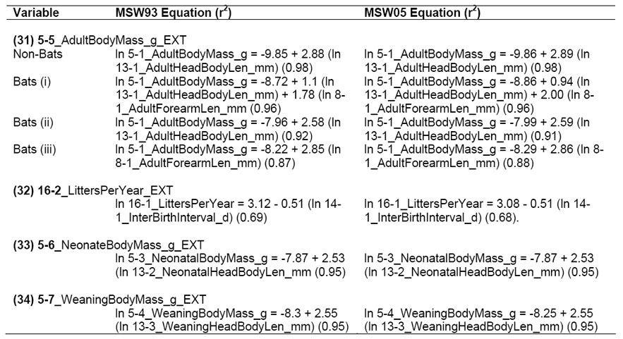

Ecological Archives E090-184-D1
Kate E. Jones, Jon Bielby, Marcel Cardillo, Susanne A. Fritz, Justin O'Dell, C. David L. Orme, Kamran Safi, Wes Sechrest, Elizabeth H. Boakes, Chris Carbone, Christina Connolly, Michael J. Cutts, Janine K. Foster, Richard Grenyer, Michael Habib, Christopher A. Plaster, Samantha A. Price, Elizabeth A. Rigby, Janna Rist, Amber Teacher, Olaf R. P. Bininda-Emonds, John L. Gittleman, Georgina M. Mace, and Andy Purvis. 2009. PanTHERIA: a species-level database of life history, ecology, and geography of extant and recently extinct mammals. Ecology 90:2648.
INTRODUCTION
Macroecology and macroevolution are growing research areas (Brown 1995, Gaston and Blackburn 2000), describing and testing hypotheses for many large-scale patterns in biodiversity, such as species richness (Orme et al. 2005, Grenyer et al. 2006); extinction risk (Purvis et al. 2000, Jones et al. 2003, Fisher and Owens 2004, Jetz et al. 2004, Cardillo et al. 2005, Price and Gittleman 2007); evolutionary history (Sechrest et al. 2002, Bininda-Emonds et al. 2007, Davies et al. 2008); geographic range size (Gaston 2003, Orme et al. 2006), and interspecific allometric relationships (Carbone et al. 2007a, Carbone et al. 2007b). Such comparative studies require large amounts of data, often covering a wide range of species or taxonomic groups in a number of geographic regions. Researchers gathering these data face two general problems. First, the amount of time and effort required to collect enough comparable information can be considerable; and second, the coverage of the available data, which determines the feasibility of studying different geographic regions or taxonomic groups, may be very inconsistent.
Here we describe a global species-level data set of key life-history, ecological and geographical traits of all known extant and recently extinct mammals (PanTHERIA) developed for a number of macroecological and macroevolutionary research projects. Additionally, we describe the tools, techniques and protocols developed to minimize errors and biases given the disparate data sources required to generate this data set and the large team of data-gatherers used to collect these data (referred to here as data-miners). We also describe our statistical methods developed to detect and, where possible, eliminate outlying values, and to then derive a single value for each trait for each species.
METADATA
CLASS I. DATA SET DESCRIPTORS
A. Data set identity: PanTHERIA1.0: a species-level data set of life history, ecology, and geography of extant and recently extinct mammals.
B. Data set identification code:
(1) PanTHERIA_1-0_WR93_Aug2008.txt
(2) PanTHERIA_1-0_WR05_Aug2008.txt
C. Data set description:
Principal Investigator(s): Kate E. Jones, Institute of Zoology, Zoological Society of London, Regents Park, London, NW1 4RY, United Kingdom. Olaf R.P. Bininda-Emonds, AG Systematik und Evolutionsbiologie, Carl von Ossietzky Universität Oldenburg, 26111 Oldenburg, Germany. John L. Gittleman, Odum School of Ecology, University of Georgia, Athens, Georgia 22902, USA. Georgina M. Mace, Centre for Population Biology, Imperial College London, Silwood Park Campus, Ascot, SL5 7PY, United Kingdom. Andy Purvis, Division of Biology, Imperial College London, Silwood Park Campus, Ascot, SL5 7PY, United Kingdom; and Centre for Population Biology, Imperial College London, Silwood Park Campus, Ascot, SL5 7PY, United Kingdom.
Abstract: Analyses of life history,
ecological, and geographic trait differences among species, their causes,
correlates, and likely consequences are increasingly important for understanding
and conserving biodiversity in the face of rapid global change. Assembling multispecies
trait data from diverse literature sources into a single comprehensive data set
requires detailed consideration of methods to reliably compile data for
particular species, and to derive single estimates from multiple sources based
on different techniques and definitions. Here we describe PanTHERIA — a species-level
data set compiled for analysis of life history, ecology, and geography of all
known extant and recently extinct mammals. PanTHERIA is derived from a database
capable of holding multiple geo-referenced values for variables within a
species containing 100740 lines of biological data for extant and recently
extinct mammalian species, collected over a period of three years by 20
individuals. PanTHERIA also includes spatial databases of mammalian geographic
ranges and global climatic and anthropogenic variables. Here we detail how the
data fields are extracted and defined for PanTHERIA using a customized data
input format MammalForm; how data were collected from the literature, species
names and sources tracked, error-checking and validation procedures applied, and
how data were consolidated into species-level values for each variable. Tables
of the consolidated species-level values are made available for each of two recent
species-level taxonomic classifications of mammals, as well as associated
taxonomic synonymy conversion and data-input files. This study provides a
useful guide to prospective researchers on how to structure and codify life history,
ecological, geographic, and taxonomic data and methods to extract meaningful
species-level traits. It also provides comprehensive information on traits like
size, diet, environmental conditions, and ecology to permit macroecological and
macroevolutionary analyses of this important clade.
D. Key words: behavior; biogeography; body size; climatic variables; comparative analyses; conservation; ecology; geographic range; life history; mammals; PanTHERIA; population density.
CLASS II. RESEARCH ORIGIN DESCRIPTORS
A. Overall project description
Identity: Understanding past, present, and future mammalian biodiversity.
Originators: Kate E. Jones, Institute of Zoology, Zoological Society of London, Regents Park, London, NW1 4RY, United Kingdom. Olaf R.P. Bininda-Emonds, AG Systematik und Evolutionsbiologie, Carl von Ossietzky Universität Oldenburg, 26111 Oldenburg, Germany. John L. Gittleman, Odum School of Ecology, University of Georgia, Athens, Georgia 22902, USA. Georgina M. Mace, Centre for Population Biology, Imperial College London, Silwood Park Campus, Ascot, SL5 7PY, United Kingdom. Andy Purvis, Division of Biology, Imperial College London, Silwood Park Campus, Ascot, SL5 7PY, United Kingdom; and Centre for Population Biology, Imperial College London, Silwood Park Campus, Ascot, SL5 7PY, United Kingdom.
Period of study: 2001 – continuing.
Objectives: 1. To understand the patterns of mammalian biodiversity and extinction risk, and the processes behind them. 2. As necessary steps towards objective 1, to assemble comprehensive information on the comparative ecology and life history, the geographic distribution and the phylogeny of extant mammalian species.
Abstract: Species-richness and extinction risk are distributed unevenly among mammalian taxa and among geographic regions. This project aims to document these patterns across the entire class Mammalia and to use phylogenetic comparative analyses to test a wide range of hypotheses for them. Two research grants in particular supported the work, one entitled “Threatening processes and the conservation status of contemporary mammals” (awarded by NERC to G.M. and A.P.) and one entitled “The macroecology and biodiversity of geographic ranges in mammals” (awarded by NSF to J.L.G.). The combination of the different facets of mammalian biodiversity information has permitted large-scale analyses of (among many others) diversification rates through time and correlates of extinction risk, and identification of species particularly vulnerable to rapid decline if threatening processes intensify.
Sources of funding: NERC grant (NER/A/S/2001/00581) to GM and AP, NSF grant (DEB/0129009) to JLG and funding from Conservation International. KEJ was additionally funded through an Earth Institute Fellowship, Columbia University and the University of Virginia. SAF through the European Commission (FP6 Early-Stage Training Network HOTSPOTS) and KS was funded through a Swiss National Science Foundation fellowship.
B. Specific subproject description
Site description: Data collection from all extant and recently extinct mammalian species.
Experimental design: Data were collected from the literature or from the author’s previously collated databases.
Research methods:
Field/Laboratory: n/a
Data sources: Multiple values of biological trait data were gathered with geo-references where available for extant and recently extinct mammalian species from primary and secondary sources. Data gathering was completed until June 2004. Data were initially gathered systematically from the most relevant journals
and secondary sources (e.g., Mammalian Species, Journal of Mammalogy, Mammalia, Journal of Zoology, Hayssen et al. 1993) and the electronic search engine Web of Science (WOS) and Zoological Record were used to locate further sources for particular variables, clades or individual species. We reduced data duplication by developing a dynamic online source reference library that was consulted prior to searching for new sources or new data entry sessions. Additionally, we incorporated previous data compilations held by the authors, i.e., Small Mammal Life History Database (Mace 1979); Bat Life History Database (Jones 1998); Carnivore Body Size and Life History Database (Gittleman 1982, Bininda-Emonds 1998); unpublished Primate Life History Database from (Purvis et al. 2000); unpublished Population Density Database from (Carbone and Gittleman 2002). In total we used data from 3143 sources for the PanTHERIA data set (see Class V, Section F for a full reference list). We also used spatial databases of mammalian geographic ranges and global climatic and anthropogenic variables (see Class V, Section C for a full description).
Data collection: Biological trait data were collected by 20 different data miners over a period of 24 months from July 2002 to June 2004, using a standardized data input protocol with a Visual Basic interface programmed within Excel (MammalFormv2.xls see Class V, Section D).
Variables: Data were gathered from the literature for 25 types of ecological and life history information for any extant or recently extinct species within class Mammalia (100740 data lines): 1. Activity Cycle; 2. Age at Eye Opening; 3. Age at First Birth; 4. Average Lifespan; 5. Body Mass; 6. Diet; 7. Dispersal Age; 8. Adult Limb Length; 9. Gestation Length; 10. Group Composition & Size; 11. Growth Data; 12. Habitat Layer; 13. Head-Body Length; 14. Interbirth Interval; 15. Litter size; 16. Litters Per Year; 17. Maximum Longevity; 18. Metabolic Rate; 19. Migratory Behaviour; 20. Mortality Data; 21. Population Density; 22. Ranging Behaviour; 23. Sexual Maturity Age; 24. Teat Number; and 25. Weaning Age. 30 specific variables (see Class IV, Table 1) were extracted from the above data types for PanTHERIA from a total of 94729 data lines (before error checking). Additionally, 4 variables were derived from extracted variables within PanTHERIA and 19 variables were calculated from other spatial data sources (see Class V, Section C).
Taxonomy and systematics: Two species-level data output files were generated each using a different taxonomy: (1) (Wilson and Reeder 1993) (PanTHERIA_1-0_WR93_Aug2008.txt) and (2) (Wilson and Reeder 2005) (PanTHERIA_1-0_WR05_Aug2008.txt). SppSynonymID1.0.txt documents how species names or synonyms given in the original data sources were tracked onto these current taxonomies (see Class V, Section B).
Project personnel: Kate E. Jones, Jon Bielby, Marcel Cardillo, Susanne A. Fritz, Justin O’Dell, C. David L. Orme, Kamran Safi, Wes Sechrest, Elizabeth H. Boakes, Chris Carbone, Christina Connolly, Michael J. Cutts, Janine K. Foster, Richard Grenyer, Michael Habib, Christopher A. Plaster, Samantha A. Price, Elizabeth A. Rigby, Janna Rist, Amber Teacher, Olaf R.P. Bininda-Emonds, John L. Gittleman, Georgina M. Mace, and Andy Purvis.
CLASS III. DATA SET STATUS AND ACCESSIBILITY
A. Status
Latest update: 14th June 2004.
Latest archive date: n/a
Metadata status: 8th Aug 2008, metadata are current.
Data verification: Data were carefully checked for quality and consistency (described in Class V, Section B below).
B. Accessibility
Storage location and medium: The species-level data sheets are included here and the raw data are held in an Access database at The Zoological Society of London.
Contact person: Kate E. Jones, Institute of Zoology, Zoological Society of London, Regents Park, London, NW1 4RY, United Kingdom. E-mail: kate.jones@ioz.ac.uk.
Copyright restrictions: None.
Proprietary restrictions: None.
Costs: None, the authors believe that scientific data collated using public funds should be free for scientific use. We would appreciate researchers citing this paper if using these data.
CLASS IV. DATA STRUCTURAL DESCRIPTORS
A. Data Set File
Identity: (1) PanTHERIA1.0_WR93_Aug2008.txt and (2) PanTHERIA_WR05_Aug2008.txt.
Size: (1) 4629 records, not including header row; (2) 5416 records, not including header row.
Format and storage mode: ASCII text, tab delimited, not compressed.
Header information: Headers describe the content of each column. We use the following abbreviations: MSW93 – Wilson and Reeder (1993) Mammalian Species of the World 2nd Edition; MSW05 – Wilson and Reeder (2005) Mammalian Species of the World 3rd Edition; AET – Actual Evapotransipration Rate; C – centigrade; d – days; dd – decimal degrees; deg – degrees; EXT – extrapolated; g – grams; GR – geographic range; Grp – Group; HuPopDen – Human Population Density; Indiv – Individual; Isl - Island; Lat – Latitude; Len – Length; Long – Longitude; Max – Maximum; Met – Metabolic; Min – Minimum; mLO2hr – milliliters of O2 per hr; mm – millimeters;n/km2 – Number per km2; PET – Potential Evapotranspiration Rate; Precip – Precipitation; Temp – Temperature; and 5p – 5th percentile. Words and abbreviations are separated by underscores. Numeric values at the start of the entries in the header refer to the data type from which the variable was extracted. For example, “5-1_AdultBodyMass_g”, “5” refers to the data type ‘Body Mass’ and “1” that it is the first variable to be extracted from this data type.
Headers included are as follows: MSW93_Order or MSW05_Order; MSW93_Family or MSW05_Family; MSW93_Genus or MSW05_Genus; MSW93_Species or MSW05_Species; MSW93_Binomial or MSW05_Binomial; 1-1_ActivityCycle; 5-1_AdultBodyMass_g; 8-1_AdultForearmLen_mm; 13-1_AdultHeadBodyLen_mm; 2-1_AgeatEyeOpening_d; 3-1_AgeatFirstBirth_d; 18-1_BasalMetRate_mLO2hr; 5-2_BasalMetRateMass_g; 6-1_DietBreadth; 7-1_DispersalAge_d; 9-1_GestationLen_d; 12-1_HabitatBreadth; 22-1_HomeRange_km2; 22-2_HomeRange_Indiv_km2; 14-1_InterBirthInterval_d; 15-1_LitterSize; 16-1_LittersPerYear; 17-1_MaxLongevity_m; 5-3_NeonateBodyMass_g; 13-2_NeonateHeadBodyLen_mm; 21-1_PopulationDensity_n/km2; 10-1_PopulationGrpSize; 23-1_SexualMaturityAge_d; 10-2_SocialGrpSize; 24-1_TeatNumber; 12-2_Terrestriality; 6-2_TrophicLevel; 25-1_WeaningAge_d; 5-4_WeaningBodyMass_g; 13-3_WeaningHeadBodyLen_mm; References; 5-5_AdultBodyMass_g_EXT; 16-2_LittersPerYear_EXT; 5-6_NeonateBodyMass_g_EXT; 5-7_WeaningBodyMass_g_EXT; 26-1_GR_Area_km2; 26-2_GR_MaxLat_dd; 26-3_GR_MinLat_dd; 26-4_GR_MidRangeLat_dd; 26-5_GR_MaxLong_dd; 26-6_GR_MinLong_dd; 26- 7_GR_MidRangeLong_dd; 27-1_HuPopDen_Min_n/km2; 27-2_HuPopDen_Mean_n/km2; 27-3_HuPopDen_5p_n/km2; 27-4_HuPopDen_Change; 28-1_Precip_Mean_mm; 28-2_Temp_Mean_01degC; 29-1_AET_Mean_mm; and 29-2_PET_Mean_mm.
Alphanumeric attributes: Mixed.
Special characters/fields: If no information is available for a given record, this is indicated by -999.
Authentication procedures:
Sums of the numeric columns for
PanTHERIA1.0_WR93_Aug2008: (1) 1-1_ActivityCycle = -2977053; (2) 5-1_AdultBodyMass_g = 622610217.539998; (3) 8-1_AdultForearmLen_mm = -3679100.18999997; (4) 13-1_AdultHeadBodyLen_mm = -1646782.58; (5) 2-1_AgeatEyeOpening_d = -4147029.48; (6) 3-1_AgeatFirstBirth_d = -3824836.7; (7) 18-1_BasalMetRate_mLO2hr = -3028141.87; (8) 5-2_BasalMetRateMass_g = 375079.45; (9) 6-1_DietBreadth = -2467939; (10) 7-1_DispersalAge_d = -4421311.55999999; (11) 9-1_GestationLen_d = -3121092.90999998; (12) 12-1_HabitatBreadth = -1864542; (13) 22-1_HomeRange_km2 = -3759464.11216601; (14) 22-2_HomeRange_Indiv_km2 = -3844306.9899835; (15) 14-1_InterBirthInterval_d = -3706000.22; (16) 15-1_LitterSize -2147613.93000001; (17) 16-1_LittersPerYear = -3727577.23; (18) 17-1_MaxLongevity_m = -3419427.87; (19) 5-3_NeonateBodyMass_g = 7897056.36899; (20) 13-2_NeonateHeadBodyLen_mm = -4323358.91; (21) 21-1_PopulationDensity_n/km2 = -2939604.31021; (22) 10-1_PopulationGrpSize = -2882537.57; (23) 23-1_SexualMaturityAge_d = -2988989.75; (24) 10-2_SocialGrpSize = -3933491.88; (25) 24-1_TeatNumber = -3982491.86; (26) 12-2_Terrestriality = -1951847; (27) 6-2_TrophicLevel = -2469332; (28) 25-1_WeaningAge_d = -3343767.53999999; (29) 5-4_WeaningBodyMass_g = 22498611.15; (30) 13-3_WeaningHeadBodyLen_mm = -4533545.76; (31) 5-5_AdultBodyMass_g_EXT = -3175645.3; (32) 16-2_LittersPerYear_EXT -4236199.01000001; (33) 5-6_NeonateBodyMass_g_EXT = -59305.9999999998; (34) 5-7_WeaningBodyMass_g_EXT = 3973958.5; (35) 26-1_GR_Area_km2 = 7866119721; (36) 26-2_GR_MaxLat_dd = -299314.0548; (37) 26-3_GR_MinLat_dd = -359359.625670002; (38) 26-4_GR_MidRangeLat_dd -329337.231889999; (39) 26-5_GR_MaxLong_dd = -213097.97; (40) 26-6_GR_MinLong_dd = -307813.81389; (41) 26-7_GR_MidRangeLong_dd = -260457.328693106; (42) 27-1_HuPopDen_Min_n/km2 = -294370; (43) 27-2_HuPopDen_Mean_n/km2 = -22370.5697; (44) 27-3_HuPopDen_5p_n/km2 = -282940.5; (45) 27-4_HuPopDen_Change = -394196.188091501; (46) 28-1_Precip_Mean_mm = 25792.15; (47) 28-2_Temp_Mean_01degC = 300029.089999999; (48) 29-1_AET_Mean_mm = 3216946.29000001; and (49) 29-2_PET_Mean_mm = 4755394.55. .
Sums of the numeric columns for
PanTHERIA1.0_WR05_Aug2008.txt: (1) 1-1_ActivityCycle = -3750219; (2) 5-1_AdultBodyMass_g = 627931538.920001; (3) 8-1_AdultForearmLen_mm = -4458863.50999997; (4) 13-1_AdultHeadBodyLen_mm = -2390461.5599999900; (5) 2-1_AgeatEyeOpening_d = -4928216.74; (6) 3-1_AgeatFirstBirth_d = -4597710.77999999; (7) 18-1_BasalMetRate_mLO2hr = -3761625.05; (8) 5-2_ BasalMetRateMass_g = -229229.44; (9) 6-1_DietBreadth = -3246141; (10) 7-1_DispersalAge_d = -5208296.92; (11) 9-1_GestationLen_d = -3898706.93999997; (12) 12-1_HabitatBreadth = -2685754; (13) 22-1_HomeRange_km2 = -4538723.81603595; (14) 22-2_HomeRange_Indiv_km2 = -4580748.63033297; (15) 14-1_InterBirthInterval_d = -4481414.57; (16) 15-1_LitterSize = -2905774.13999999; (17) 16-1_LittersPerYear = -4515784.58; (18) 17-1_MaxLongevity_m = -4199598.31; (19) 5-3_NeonateBodyMass_g = 7124135.98899836; (20) 13-2_NeonateHeadBodyLen_mm = -5109030.42; (21) 21-1_PopulationDensity_n/km2 = -3694898.15021332; (22) 10-1_PopulationGrpSize = -3667882.43; (23) 23-1_SexualMaturityAge_d = -3668760.78999999; (24) 10-2_SocialGrpSize = -4699371.08; (25) 24-1_TeatNumber = -4766713; (26) 12-2_Terrestriality = -2773092; (27) 6-2_TrophicLevel = -3247567; (28) 25-1_WeaningAge_d = -4109794.78999999; (29) 5-4_WeaningBodyMass_g = 21720528.5299999; (30) 13-3_WeaningHeadBodyLen_mm = -5319075.47; (31) 5-5_AdultBodyMass_g_EXT = -3579884.12; (32) 16-2_LittersPerYear_EXT = -5016415.79; (33) 5-6_NeonateBodyMass_g_EXT = -948179.94; (34) 5-7_WeaningBodyMass_g_EXT = 3344775.98; (35) 26-1_GR_Area_km2 = 7755657748.19744; (36) 26-2_GR_MaxLat_dd = -687919.002494141; (37) 26-3_GR_MinLat_dd = -748817.5456675; (38) 26-4_GR_MidRangeLat_dd = -718368.751886152; (39) 26-5_GR_MaxLong_dd = -581739.880000002; (40) 26-6_GR_MinLong_dd = -676884.413893151; (41) 26-7_GR_MidRangeLong_dd = -629313.481315651; (42) 27-1_HuPopDen_Min_n/km2 = -675228; (43) 27-2_HuPopDen_Mean_n/km2 = -378781.01794477; (44) 27-3_HuPopDen_5p_n/km2 = -662777; (45) 27-4_HuPopDen_Change = -789755.285668012; (46) 28-1_Precip_Mean_mm = -334931.200000001; (47) 28-2_Temp_Mean_01degC = -35609.3699999999; (48) 30-1_AET_Mean_mm = 3142189.33; and (49) 30-2_PET_Mean_mm = 4795170.44.
B. Variable definitions
30 specific variables were extracted for PanTHERIA (1–30). See Table 1 for definitions, total number of data lines (before error checking), and species coverage (after error checking) according to the classifications of Wilson and Reeder (1993) (NSpp MSW93) and Wilson and Reeder (2005) (NSpp MSW05). 23 variables (31–53) were derived from these variables or other data sources and are described in Class V, Section C.
TABLE 1. Variable definitions.
Variable: Variable Definition |
Units |
Data lines |
NSpp MSW93 |
NSpp MSW05 |
(1) 1-1_ActivityCycle: Activity cycle of each species measured for non-captive populations; adult or age unspecified individuals, male, female, or sex unspecified individuals; primary, secondary, or extrapolated sources; all measures of central tendency; in all localities. Species were defined as (1) nocturnal only, (2) nocturnal/crepuscular, cathemeral, crepuscular or diurnal/crepuscular and (3) diurnal only. |
NA |
2724 |
1646 |
1659 |
(2) 5-1_AdultBodyMass_g: Mass of adult (or age unspecified) live or freshly-killed specimens (excluding pregnant females) using captive, wild, provisioned, or unspecified populations; male, female, or sex unspecified individuals; primary, secondary, or extrapolated sources; all measures of central tendency; in all localities. |
grams |
17528 |
3473 |
3542 |
(3) 8-1_AdultForearmLen_mm: Total length from elbow to wrist of adult (or age unspecified) live, freshly-killed, or museum specimens using captive, wild, provisioned, or unspecified populations; male, female, or sex unspecified individuals; primary, secondary, or extrapolated sources; all measures of central tendency; in all localities. |
mm |
1952 |
897 |
903 |
(4) 13-1_AdultHeadBodyLen_mm: Total length from tip of nose to anus or base of tail of adult (or age unspecified) live, freshly-killed, or museum specimens using captive, wild, provisioned, or unspecified populations; male, female, or sex unspecified individuals; primary, secondary, or extrapolated sources; all measures of central tendency; in all localities. |
mm |
4941 |
1907 |
1941 |
(5) 2-1_AgeatEyeOpening_d: Age at which both eyes are fully open after birth using captive, wild, provisioned, or unspecified populations; male, female, or sex unspecified individuals; primary, secondary, or extrapolated sources; all measures of central tendency; in all localities |
days |
710 |
471 |
476 |
(6) 3-1_AgeatFirstBirth_d: Age at which females give birth to their first litter (eutherians), or their young attach to teats (metatherians) or hatch out (monotremes), using non-captive, wild, provisioned, or unspecified populations; primary, secondary, or extrapolated sources; all measures of central tendency; in all localities. |
days |
780 |
440 |
445 |
(7) 18-1_BasalMetRate_mLO2hr: Basal metabolic rate of adult (or age unspecified) individual(s) using captive, wild, provisioned, or unspecified populations; male, female, or sex unspecified individuals; primary, secondary, or extrapolated sources; all measures of central tendency; in all localities. Metabolic rate was measured when individual(s) were experiencing neither heat nor cold stress (i.e. are in their thermoneutral zone); are resting and calm; and are post–absorptive (are not digesting or absorbing a meal) and data were only accepted where there was also a measure of body mass for the same individual(s). |
mL.O2/hr |
971 |
559 |
573 |
(8) 5-2_BasalMetRateMass_g: Mass of individual(s) from which the basal metabolic rate was taken. |
grams |
971 |
559 |
573 |
(9) 6-1_DietBreadth: Number of dietary categories eaten by each species measured using any qualitative or quantitative dietary measure, over any period of time, using any assessment method, for non-captive or non-provisioned populations; adult or age unspecified individuals, male, female, or sex unspecified individuals; primary, secondary, or extrapolated sources; all measures of central tendency; in all localities. Categories were defined as vertebrate, invertebrate, fruit, flowers/nectar/pollen, leaves/branches/bark, seeds, grass and roots/tubers. |
No. of diet categories |
4631 |
2153 |
2161 |
(10) 7-1_DispersalAge_d: Age at which young permanently leave the parent, parental group, social group or any associated territories, using non-captive, wild, non-provisioned or unspecified populations; male, female, or sex unspecified individuals; primary, secondary, or extrapolated sources; all measures of central tendency; in all localities. |
days |
175 |
145 |
144 |
(11) 9-1_GestationLen_d: Length of time of non-inactive fetal growth, using captive, wild, provisioned, or unspecified populations; male, female, or sex unspecified individuals; primary, secondary, or extrapolated sources; all measures of central tendency; in all localities. Gestation was measured between specified start and end points as follows: Start points – conception, fertilization, first observed copulation, fertilization, implantation, laying, palpably pregnant, removal of pouch young, capture (except marsupials) or unspecified. End points – birth, hatching or unspecified. |
days |
6537 |
1354 |
1362 |
(12) 12-1_HabitatBreadth: Number of habitat layers used by each species measured using any qualitative or quantitative time measure, for non-captive populations; adult or age unspecified individuals, male, female, or sex unspecified individuals; primary, secondary, or extrapolated sources; all measures of central tendency; in all localities. Categories were defined as above ground dwelling, aquatic, fossorial and ground dwelling. |
No. of habitat layers |
3933 |
2759 |
2724 |
(13) 22-1_HomeRange_km2: Size of the area within which everyday activities of individuals or groups (of any type) are typically restricted, estimated by either direct observation, radio telemetry, trapping or unspecified methods over any duration of time, using non-captive populations; male, female, or sex unspecified individuals; primary, secondary, or extrapolated sources; all measures of central tendency; in all localities. |
km2 |
3269 |
699 |
707 |
(14) 22-2_HomeRange_Indiv_km2: Size of the area within which everyday activities of individuals are typically restricted, estimated by either direct observation, radio telemetry, trapping or unspecified methods over any duration of time, using non-captive populations; male, female, or sex unspecified individuals; primary, secondary, or extrapolated sources; all measures of central tendency; in all localities. |
km2 |
2675 |
624 |
626 |
(15) 14-1_InterBirthInterval_d: The length of time between successive births of the same female(s) after a successful or unspecified litter using non-captive, wild, provisioned, or unspecified populations; primary, secondary, or extrapolated sources; all measures of central tendency; in all localities. |
days |
1732 |
687 |
698 |
(16) 15-1_LitterSize: Number of offspring born per litter per female, either counted before birth, at birth or after birth, using captive, wild, provisioned, or unspecified populations; male, female, or sex unspecified individuals; primary, secondary, or extrapolated sources; all measures of central tendency; in all localities. |
no. of offspring |
15020 |
2473 |
2501 |
(17) 16-1_LittersPerYear: Number of litters per female per year using non-captive, wild, provisioned, or unspecified populations; male, female, or sex unspecified individuals; primary, secondary, or extrapolated sources; all measures of central tendency; in all localities. |
no. of litters |
2501 |
896 |
894 |
(18) 17-1_MaxLongevity_m: Maximum adult age measured either through direct observation, capture-recapture estimates, projected from physical wear or unspecified, using captive, wild, provisioned, or unspecified populations; male, female, or sex unspecified individuals; primary, secondary, or extrapolated sources; in all localities. |
months |
3294 |
1009 |
1013 |
(19) 5-3_NeonatalBodyMass_g: Mass of live or freshly-killed specimens of infants at either a near term embryonic stage, birth, immediately after birth or up to an age of seven days after birth, using captive, wild, provisioned, or unspecified populations; male, female, or sex unspecified individuals; primary, secondary, or extrapolated sources; all measures of central tendency; in all localities. |
grams |
4308 |
1078 |
1085 |
(20) 13-2_NeonateHeadBodyLen_mm : Total length from tip of nose to anus or base of tail of live, freshly-killed, or museum specimens of infants at either a near term embryonic stage, birth, immediately after birth or up to an age of seven days after birth, using captive, wild, provisioned, or unspecified populations; male, female, or sex unspecified individuals; primary, secondary, or extrapolated sources; all measures of central tendency; in all localities. |
mm |
346 |
226 |
226 |
(21) 21-1_PopulationDensity: Number of individuals per square kilometer, estimated with either direct, indirect or unspecified counts, measured in any area size within a human, ecological or unspecified boundary, over any duration of time, using non-captive, non-provisioned populations; male, female, or sex unspecified individuals; primary, secondary, or extrapolated sources; all measures of central tendency; in all localities. |
number /km2 |
5244 |
929 |
956 |
(22) 10-1_PopulationGrpSize: Number of individuals, adults or definition unspecified in a group that spends the majority of their time in a 24 hour cycle together, measured over any duration of time, using non-captive populations; male, female, or sex unspecified individuals; primary, secondary, or extrapolated sources; all measures of central tendency; in all localities. |
no. of individuals, adults or unspecified |
905 |
386 |
388 |
(23) 23-1_SexualMaturityAge_d: Age when individuals are first physically capable of reproducing, defined as either physically sexually mature, age at first mating or unspecified (males and females), age at first estrus or age at first pregnancy (females only), age at spermatogenesis or age at testes descent (males only), using captive, wild, provisioned, or unspecified populations; male, female, or sex unspecified individuals, primary, secondary, or extrapolated sources; all measures of central tendency; in all localities. |
days |
4680 |
1042 |
1051 |
(24) 10-2_SocialGrpSize: Number of individuals, adults or definition unspecified in a group that spends the majority of their time in a 24 hour cycle together where there is some indication that these individuals form a social cohesive unit, measured over any duration of time, using non-captive populations; male, female, or sex unspecified individuals; primary, secondary, or extrapolated sources; all measures of central tendency; in all localities. |
no. of individuals, adults or unspecified |
1598 |
687 |
707 |
(25) 24-1_TeatNumber: Total number of teats present, using captive, wild, provisioned, or unspecified populations; male, female, or sex unspecified individuals; primary, secondary, or extrapolated sources; all measures of central tendency; in all localities. |
No. of teats |
841 |
639 |
641 |
(26) 12-2_Terrestriality: Degree of terrestriality of each species measured using any qualitative or quantitative time measure, for non-captive populations; adult or age unspecified individuals, male, female, or sex unspecified individuals; primary, secondary, or extrapolated sources; all measures of central tendency; in all localities. Species were defined as (1) fossorial and/or ground dwelling only and (2) above ground dwelling. |
NA |
3933 |
2671 |
2636 |
(27) 6-2_TrophicLevel: Trophic level of each species measured using any qualitative or quantitative dietary measure, over any period of time, using any assessment method, for non-captive or non-provisioned populations; adult or age unspecified individuals, male, female, or sex unspecified individuals; primary, secondary, or extrapolated sources; all measures of central tendency; in all localities. Species were defined as (1) herbivore (not vertebrate and/or invertebrate), (2) omnivore (vertebrate and/or invertebrate plus any of the other categories) and (3) carnivore (vertebrate and/or invertebrate only) |
NA |
4644 |
2153 |
2161 |
(28) 25-1_WeaningAge_d: Age when primary nutritional dependency on the mother ends and independent foraging begins to make a major contribution to the offspring’s energy requirements, measured as either weaning/lactation length, nutritionally independent, first solid food, last observed nursing, age at first flight (bats only), age at pouch exit or length of teat Attachment (marsupials only) or unspecified definition, using captive, wild, provisioned, or unspecified populations; male, female, or sex unspecified individuals; primary, secondary, or extrapolated sources; all measures of central tendency; in all localities. |
days |
4858 |
1147 |
1164 |
(29) 5-4_WeaningBodyMass_g: Mass of live or freshly-killed specimens of weanlings, using captive, wild, provisioned, or unspecified populations; male, female, or sex unspecified individuals; primary, secondary, or extrapolated sources; all measures of central tendency; in all localities. |
grams |
1106 |
481 |
487 |
(30) 13-3_WeaningHeadBodyLen_mm: Total length from tip of nose to anus or base of tail of live, freshly-killed, or museum specimens of weanlings, using captive, wild, provisioned, or unspecified populations; male, female, or sex unspecified individuals; primary, secondary, or extrapolated sources; all measures of central tendency; in all localities. |
mm |
60 |
46 |
47 |
References: Index numbers referring to sources of data for each species according to the list of references given in section F below. |
|
|
|
|
Calculating measures of central tendency
We often obtained more than one valid datum for a particular variable within a species, e.g., from different subspecies, populations, years or localities (mean per species per variable for species with data = 3.3, n = 94729 data lines). For each continuous variable, we calculated a single measure of central tendency for each species from the different estimates (as described in Table 2). Categorical variables and values for maximum longevity were treated differently and are as described in Table 1. Two factors may influence the measures of central tendency obtained. Firstly, outliers may bias the value. We ameliorated this problem by calculating the median of the multiple values for each species, which is less sensitive to outliers than the mean. For variables measured as real numbers (e.g. body mass), we calculated medians of unique values, to guard against duplicate entries, but for the variables that are more often measured as integers, i.e. litters per year and teat number, we calculated medians of all values (see Table 2). Secondly, different combinations of the delimiters used for each variable (e.g., age, sex, captivity status, definition of maturity stage) may influence the values of central tendency obtained in two ways: different combinations of the delimiters may actually give unrealistic information (e.g., using captive data to estimate interbirth intervals), or may merely give systematically different values (e.g. male and female body sizes in sexually dimorphic species), so that a species value will be shaped by the relative frequencies of the different delimiters.
To minimize the first problem of including incorrect values, we removed a priori from each variable the delimiter combinations that would generate unrealistic data (see Table 1). To ameliorate the second problem while still maximizing sample sizes, we estimated species values for those variables that contained delimiters that were likely to produce significantly different values (15 variables, see Table 2) using a general linear model (GLM) setting species and the appropriate delimiters as factors (performed separately for each order for (2) 5-1_AdultBodyMass_g and (16) 15-1_LitterSize, and across the whole class for the other 13 variables). For example, the model fitted to sexual maturity age was: ln(sexual maturity age) = species + sex + sexual maturity definition. This is because males and females may reach maturity at different ages, and the recorded maturity age may also depend on the way it is defined. For each factor, we assigned the level with the largest number of values as the base level, against which the model could calculate offsets for all of the other levels (see Table 2). The offsets were then subtracted from each of the original values to give an adjusted value. For cases where there were single values for a species, we calculated adjusted values for these species using as offsets the mean offset value for all other species. In effect, the GLM can be thought of as converting all of the data into the same currency (that of the base factor), by adding an offset that depends upon the delimiters and which is calculated directly from the data themselves. Hence, for age at sexual maturity the offset for values measured as “age at first pregnancy” is 0.04 (on a log scale), relative to the baseline definition, so each original value measured in this way is reduced by this amount.
For these 15 traits, a central tendency measure was then calculated from the logged adjusted values using unique medians (see Table 2). This method, therefore, takes into account the fact that not all data values for some variables are in the same currency, though they may all contain useful information about the same underlying variable. At the same time, it allows a central tendency measure of a variable to be calculated for all species for which any data have been recorded, avoiding the need to discard valid data. We term this process consolidation, and values generated in this way consolidated values.
In one case it was not clear whether to remove the delimiters a priori or to include them in a GLM (home range area measured for either groups or individuals – see Table 1 and 2). For this case, we consolidated the data first including all values of range measure and performing a GLM with group as a factor ((13) 22-1_HomeRange_km2) and second, excluding the data lines for group home ranges ((14) 22-2_HomeRange_Indiv_km2). Details of the GLM model specifications and the consolidated values for each variable are given in Table 2. The consolidated values analysis was implemented in the program R (R Development Core Team 2005).
TABLE 2. Methods to generate measures of central tendency for species-level traits.
| Variable |
GLM model specification
[method] |
Base factor |
Central tendency measure |
(1) 1-1_ActivityCycle |
None |
None |
Categorical |
(2) 5-1_AdultBodyMass_g |
ln(body mass) = species + sex [within orders] |
Sex = both |
Unique median |
(3) 8-1_AdultForearmLen_mm |
ln(forearm length) = species + sex [across class] |
Sex = unspecified |
Unique median |
(4) 13-1_AdultHeadBodyLen_mm |
ln(head-body length) = species + sex [across class] |
Sex = unspecified |
Unique median |
(5) 2-1_AgeatEyeOpening_d |
None |
None |
Unique median |
(6) 3-1_AgeatFirstBirth_d |
None |
None |
Unique median |
(7) 18-1_BasalMetRate_mLO2hr |
None |
None |
Unique median |
(8) 5-2_BasalMetRateMass_g |
None |
None |
Unique median |
(9) 6-1_DietBreadth |
None |
None |
Sum of diet categories |
(10) 7-1_DispersalAge |
ln(dispersal age) = species + sex [across class] |
Sex = unspecified |
Unique median |
(11) 9-1_GestationLen_d |
ln(gestation length) = species + start point + end point [across class] |
Start point = unspecified, End point = unspecified |
Unique median |
(12) 12-1_HabitatBreadth |
None |
None |
Sum of habitat layers |
(13) 22-1_HomeRange_km2 |
ln(home range) = species + sex + estimation method + range measure [across class] |
Sex = unspecified, Estimation method = unspecified, Range measure = individual |
Unique median |
(14) 22-2_HomeRange_Indiv_km2 |
ln(home range) = species + sex + estimation method [[across class] |
Sex = unspecified, Estimation method = unspecified |
Unique median |
(15) 14-1_InterBirthInterval_d |
None |
None |
Unique median |
(16) 15-1_LitterSize |
ln(litter size) = species + litter size definition [within orders] |
Litter size definition = unspecified |
Unique median |
(17) 16-1_LittersPerYear |
None |
None |
Full median |
(18) 17-1_MaxLongevity |
None |
None |
Maximum |
(19) 5-3_NeonateBodyMass |
ln(body mass) = species + sex + age [across class] |
Sex = unspecified, Age = neonate |
Unique median |
(20) 13-2_NeonateHeadBodyLen_mm |
ln(head-body length) = species + sex + age [across class] |
Sex = unspecified, Age = neonate |
Unique median |
(21) 21-1_PopulationDensity_n/km2 |
ln(population density) = species + estimation method + study area type [across class] |
Estimation method = unspecified, Study area type = unspecified |
Unique median |
(22) 10-1_PopulationGrpSize |
None |
None |
Full median |
(23) 23-1_SexualMaturityAge_d |
ln(sexual maturity age) = species + sex + sexual maturity definition [across class] |
Sex = female, Sexual maturity definition = unspecified |
Unique median |
(24) 10-2_SocialGrpSize |
None |
None |
Full median |
(25) 24-1_Teat Number |
None |
None |
Full median |
(26) 12-2_Terrestriality |
None |
None |
Categorical |
(27) 6-2_TrophicLevel |
None |
None |
Categorical |
(28) 25-1_WeaningAge |
ln(weaning age) = species + weaning age definition [across class] |
Weaning age definition = weaning/lactation length |
Unique median |
(29) 5-4_WeaningBodyMass_g |
ln(body mass) = species + sex [across class] |
Sex = unspecified |
Unique median |
(30) 13-3_WeaningHeadBodyLen_mm |
ln(head-body length) = species + sex [across class] |
Sex = unspecified |
Unique median |
CLASS V. SUPPLEMENTAL DESCRIPTORS
A. Data acquisition.
Data forms: We developed a standardized data input protocol using a Visual Basic interface programmed within Excel (MammalFormv2.xls) and input protocols (MammalFormv2Protocols.pdf), see Class V, Section D. Data lines were outputted as text files and stored in an Access database.
Location of completed data forms: Raw data is held in an Access database at The Zoological Society of London. These data and input protocols are tools we used to develop the database which are no longer current. We are now in the process of updating these protocols and adding additional data through the development of an online database web portal (YouTHERIA) (contact KEJ for further details).
B. Quality assurance/quality control procedures.
The accuracy of these data was verified by a number of methods:
Taxonomic Accuracy: For each datum, its genus, species, subspecies and authority (publication author) was recorded as given in the source. These original taxon names were transformed into valid Latin binomials using the most comprehensive mammalian taxonomy available, that of Wilson and Reeder. We used the two most recent versions (Wilson and Reeder 1993, 2005) producing a separate data table for each (PanTHERIA1.0_WR93_Aug2008.txt and PanTHERIA1.0_WR05_Aug2008.txt). In most cases, there was an exact match between source names and currently valid names. Where there was a difference, spelling discrepancies accounted for the majority of the mismatches. Further differences were caused because the species was described since version compilation. In these cases the names were valid but unrecognized. The remaining differences were caused by changes to the name given in the source (synonymisation). We used the synonym lists given in Wilson and Reeder (1993, 2005) to trace the original name to its current usage. By keeping the taxonomic name given in each datum’s source, we are able to accommodate many changes in taxonomy and classification without losing data. However, in some cases it was not possible to unambiguously determine taxonomic affiliation (2002 data lines for Wilson and Reeder 1993); (2147 data lines for Wilson and Reeder 2005) and these data were not used in any subsequent analysis. This taxonomic conversion file (SppSynonymID1.0.txt) is available from Class V, Section D.
Input Error: At monthly intervals, all newly inputted data were transformed into a common taxonomic and unit currency (e.g., data on population densities converted into individuals per km2 from the different units given in the sources). All new data were checked for obvious aberrant values, and returned to the original data miner for checking and, where appropriate, correction.
Outlier Analysis: We identified data values in the specific variables that were significant outliers from general trends (standardized residual >+3). These outliers were then checked and, where necessary, corrected or excluded from subsequent analysis. Two types of outliers were identified; firstly, an ANOVA was performed with taxonomic level as the grouping variable to identify data lines unusual with respect to their order, family or genus. Secondly, an ANCOVA was performed to identify outliers that were unusual with respect to their allometric relationship with adult body mass. We generated a mass variable for checking the other variables using an earlier version of (2) 5-1_ AdultBodyMass_g that had been checked for taxonomic outliers and summarized into species value medians (but not adjusted). This file was used to check (4) 13-1_AdultHeadBodyLen_mm and (3) 8-1_AdultForearmLen_mm files to create checked, species value medians (but not adjusted) versions of these traits. Then we generated additional mass values from head-body lengths or forearm lengths for species that were missing mass data using the following equations. For MSW93 species: non-bats ln Adult Body Mass = -9.570 + 2.842 * (ln Adult Head-Body Length) and bats ln Adult Body Mass = -8.255 + 2.852 * (ln Adult Forearm Length). For MSW05 species: non-bats ln Adult Body Mass = -9.580 + 2.844 * (ln Adult Head Body Length) and bats ln Adult Body Mass = -8.298 + 2.864 * (ln Adult Forearm Length). Using this combined mass file we performed allometric checks for all the remaining variables except those variables that take qualitative values and could not be checked this way, i.e.; (1) 1-1_ActivityCycle, (9) 6-1_DietBreadth, (12) 12-1_HabitatBreadth, (26) 12-2_Terrestriality and (27) 6-2_TrophicLevel. The outlier analysis was implemented in R (R Development Core Team 2005).
Data Duplication: As our data were collected from both primary and secondary literature sources, data from primary sources may be duplicated within secondary sources. This is easy to identify when the secondary source lists all primary data separately as the duplicate values will be identical. However, when the secondary source summarizes the data value for a number of primary sources then the value will be different and duplication harder to identify. To ameliorate these problems we firstly removed from subsequent analysis non-obvious duplications that we knew of (e.g., bat body mass data in (Smith et al. 2003) is all from the primary data in (Jones 1998) which is already incorporated into the database). Secondly, we used techniques to calculate a value of central tendency that minimized the effects of identical duplicate values (see Calculating measures of central tendency in Class IV, Section B).
C. Related material
We used our existing variables and other spatial databases to calculate 23 additional variables.
Derived variables from existing data. Many of our variables are highly intercorrelated (i.e., one explains a high degree of variation in the other). This is particularly true of size variables in general (Calder 1996). For example, head-body length is an excellent predictor of body mass. We used this fact to estimate fitted values for some variables by fitting across-species GLMs using the species medians of the consolidated values (see Class IV, Section B) for the following 4 variables: (31) 5-5_AdultBodyMass_g_EXT (368 MSW93 species, 394 MSW05 species); (32) 16-2_LittersPerYear_EXT (388, 394 species); (33) 5-6_NeonateBodyMass_g_EXT (22, 24 species); (34) 5-7_WeaningBodyMass_g_EXT (24, 25 species) (see Table 3 for details of the models). The analysis was implemented in R (R Development Core Team 2005).
Table 3. Models for Extrapolated Variables. Which of the three bat models was used depended on whether a species had a value for adult head-body length, adult forearm length, or both.

Derived variables from other data. We derived 19 variables using data from other sources. Firstly, we used digital geographic range maps of all extant, non-marine mammals from Sechrest (2003) and converted them to the two taxonomies used: Wilson and Reeder (1993, 4271 species) and Wilson and Reeder (2005, 4668 species). These ranges were used to generate 7 measures of geographic range extent and occupancy. Spatial analyses were performed using ArcGIS (version 9.0) (ESRI 2005) for areas and R (R Development Core Team 2005) for geographic coordinates. The calculated variables were as follows: (35) 26-1_GR_Area_km2 (4271, 4668 species), calculated using the total extent of a species range with a global equal-area projection (Mollweide); (36) 26-2_GR_MaxLat_dd (4271, 4668 species), maximum latitudinal extent of each species range calculated using a global geographic projection (decimal degrees); (37) 26-3_GR_MinLat_dd (4271, 4668 species), minimum latitudinal extent of each species range calculated using a global geographic projection (decimal degrees); (38) 26-4_GR_MidRangeLat_dd (4271, 4668 species), median latitudinal extent of each species range calculated using a global geographic projection (decimal degrees); (39) 26-5_GR_MaxLong_dd (4271, 4668 species), maximum longitudinal extent of each species range calculated using a global geographic projection (decimal degrees); (40) 26-6_GR_MinLong_dd (4271, 4668 species), minimum longitudinal extent of each species range calculated using a global geographic projection (decimal degrees); (41) 26-7_GR_MidRangeLong_dd (4271, 4668 species), median longitudinal extent of each species range calculated using a global geographic projection (decimal degrees). Secondly, we generated a number of variables for each species describing the anthropogenic and environmental conditions within each geographic range based on the extent of the digital species range maps. The species ranges were first gridded at 0.5 degrees using a global geographic projection and species were scored as present in each cell if any of the range intersected that cell. We then calculated summary statistics for each species by summarizing the value for each anthropogenic and environmental variable (gridded to the same extent) for all the cells the species was present. Except for the variables 27-1_HuPopDen_Min_n/km2 and 27-3_HuPopDen_5p_n/km2, we adjusted the summary statistics for each variable for the fact that area varies with latitude by multiplying each cell by the area and then dividing by the total area of cells for that variable for each species. The anthropogenic and environmental variables calculated across the geographic ranges of each species ranges were as follows: (46) 27-1_HuPopDen_Min_n/km2 (4271, 4668 species), minimum human population density (persons per km2) using the Gridded Population of the World (GPW) (CIESIN and CIAT 2005) for 1995; (47) 27-2_HuPopDen_Mean_n/km2 (4271, 4668 species), mean human population density (persons per km2) using the Gridded Population of the World (GPW) (CIESIN and CIAT 2005) for 1995; (48) 27-3_HuPopDen_5p_n/km2 (4271, 4668 species), 5th percentile human population density (persons per km2) using the Gridded Population of the World (GPW) (CIESIN and CIAT 2005) for 1995; (49) 27-4_HuPopDen_Change (4234, 4625 species), mean rate of increase in human population density using the Gridded Population of the World (GPW) (CIESIN and CIAT 2005) for 1990 and 1995 as: (1995–1990)/1990; (50) 28-1_Precip_Mean_mm (4160, 4533 species) mean monthly precipitation (mm) calculated using data from
ftp://ftp.ngdc.noaa.gov/Solid_Earth/Ecosystems/GEDII_a/datasets/a03/lc.htm; (51) 28-2_Temp_Mean_01degC (4160, 4533 species), mean monthly temperature (0.1°C) calculated using data from
ftp://ftp.ngdc.noaa.gov/Solid_Earth/Ecosystems/GEDII_a/datasets/a03/lc.htm; (52) 30-1_AET_Mean_mm (3973, 4305 species), mean monthly AET (Actual Evapotranspiration Rate) from 1920 to 1980 (mm) calculated using the Global Resource Information Database of UNEP and is available from
http://www.grid.unep.ch/data/grid/gnv183.php), and (53) 30-2_PET_Mean_mm (3973, 4305 species), mean monthly PET (Potential Evapotranspiration Rate) from 1920 to 1980 (mm) calculated using the Global Resource Information Database of UNEP and is available from
http://www.grid.unep.ch/data/grid/gnv183.php).
D. Computer programs and data processing algorithms.
The following files were developed to collate or generate our species-level data sheets:
(1) MammalFormv2.1.xls. A Visual Basic program within Excel that uses a standardized data input protocol to generate text files which are imported into PanTHERIA.
(2) MammalFormv2.1.pdf. Protocols to inputting data into MammalForm v2.
(3) SppSynonymID1.0.txt. Taxonomic conversion file used to convert names in original sources into the taxonomy of Wilson and Reeder (1993) and Wilson and Reeder (2005).
(4) MammalFormVB.zip. Provides VBA code for the data input forms, along with a binary file which contains the layout of each form and fields within it. MammalForm.bas contains the bulk of the code for the main form.
E. Archiving: n/a
F. Publications and results
Publications citing the data set
These data and earlier versions of these data sets have been cited in the following publications: Jones et al. (2005); Cardillo et al. (2005); Cardillo et al. (2006); Ezenwa et al. (2006); Grenyer et al. (2006); Jeschke and Strayer (2006); Bielby et al. (2007); Lindenfors et al. (2007a) Lindenfors et al. (2007b); Pedersen et al. (2007); Price and Gittleman (2007); Cardillo et al. (2008); Davies et al. (2008); Shai et al. (2008); Welch et al. (2008); Jones et al. (in press); Cardillo and Purvis (in preparation). This version of PanTHERIA differs from earlier versions because of minor corrections in the values for the related material. Earlier versions can be obtained from the first author on request.
Reference list for the data set: References are given as indexed values in accordance with the following reference list.
1. Abbas, A. 1991. Feeding Strategy of Coypu (Myocastor coypus) in Central Western France. Journal of Zoology 224:385-401.
2. Abe, Y. 1931. A Synopsis of the Leporine Mammals of Japan. Journal of Science of the Hiroshima University, Series B, Zoology 1:45-63.
3. Abenspergtraun, M., C. R. Dickman, and E. S. Deboer. 1991. Patch Use and Prey Defense in a Mammalian Myrmecophage, the Echidna (Tachyglossus aculeatus) (Monotremata, Tachyglossidae) - a Test of Foraging Efficiency in Captive and Free-Ranging Animals. Journal of Zoology 225:481-493.
4. Abenspergtraun, M., and E. S. Deboer. 1992. The Foraging Ecology of a Termite-Eating and Ant-Eating Specialist, the Echidna Tachyglossus aculeatus (Monotremata, Tachyglossidae). Journal of Zoology 226:243-257.
5. Acevedo, A., and S. Burkhart. 1998. Seasonal distribution of bottlenose (Tursiops truncatus) and pan-tropical spotted (Stenella attenuata) dolphins (Cetacea: Delphinidae) in Golfo Dulce, Costa Rica. Revista de Biologia Tropical 46.
6. Acevedo, G. A. 1999. Aerial behavior is not a social facilitator in bottlenose dolphins hunting in small groups. Journal of Mammalogy 80:768-776.
7. Acharjyo, L. N., and S. Mohapatra. 1978. A note on the breeding and longevity of the Indian Pangolin (Manis crassicaudata) in captivity. Journal of the Bombay Natural History Society 75:921-923.
8. Acharya, L. 1992. Epomophorus wahlbergi. Mammalian Species 394:1-4.
9. Acosta, C. E., and R. D. Owen. 1993. Koopmania concolor. Mammalian Species 429:1-3.
10. Acosta, H., J. Cavelier, and S. Londono. 1996. Contribution to the biological knowledge of the mountain tapir Tapirus pinchaque in the Central Andes of Colombia. Biotropica 28:258-266.
11. Adam, M. D., and J. P. Hayes. 1998. Arborimus pomo. Mammalian Species 593:1-5.
12. Adam, P. J. 1999. Choloepus didactylus. Mammalian Species 621:1-8.
13. Adams, W. H. 1956. The Nutria in coastal Louisiana. Proceedings of La. Academy of Science. 19:28-41.
14. Adams, C. E. 1976. Measurements and characteristics of fox squirrel, Sciurus niger rufiventer, home ranges. American Midland Naturalist 95:211-215.
15. Adams, J. 1989. Pteronotus davyi. Mammalian Species 346:1-5.
16. Addink, M., H. M. Garcia, and B. Couperus. 1997. A note on life-history parameters of the Atlantic white-sided dolphin (Lagenorhynchus acutus) from animals bycaught in the northeastern Atlantic. Report of the International Whaling Commission.
17. Aderounmu, E. A. 1973. Parasites of the straw-coloured fruit-bat at the University of Ife. The Nigerian Field:138-141.
18. Adler, G. H., M. Endries, and S. Piotter. 1997. Spacing patterns within populations of a tropical forest rodent, Proechimys semispinosus, on five Panamanian islands. Journal of Zoology 241:43-53.
19. Adler, G. H., M. T. Becerra, F. Prado, and B. L. Travi. 2000. Ecology of spiny rats, Proechimys canicollis, in northern Colombia. Mammalia 64:145-153.
20. Adler, G. H. 2000. Tropical tree diversity, forest structure and the demography of a frugivorous rodent, the spiny rat (Proechimys semispinosus). Journal of Zoology 250:57-74.
21. Advani, R. 1983. Reproductive biology of Pipistrellus minus minus (Wroughton) in the Indian desert. Zeitschrift fur Saugetierkunde 48:211-217.
22. Aellen, V. 1950. Un megachiroptere nouveau: Epomphorous reii n.sp. Revue suisse de zoologie 57:559-563.
23. Aellen, V. 1973. Un Rhinolophus nouveau D'Afrique centrale. Periodicum Biologorum 75:101-105.
24. Agler, B. A., R. L. Schooley, S. E. Frohock, S. K. Katona, and I. E. Seipt. 1993. Reproduction of photographically identified fin whales, Balaenoptera physalus, from the Gulf on Maine. Journal of Mammalogy 74:577-575.
25. Agrawal, V. C., and S. Chakraborty. 1971. Notes on a collection of small mammals from Nepal, with the description of a new mouse-hare (Lagomorpha: Ochotonidae). Proceedings of the Zoological Society, Calcutta 24:41-46.
26. Aguiar, L. M. S., M. Zortea, and V. A. Taddei. 1995. New records of bats for the Brazilian Atlantic Forest. Mammalia 59:667-672.
27. Aguilar, A., and C. H. Lockyer. 1987. Growth Physical Maturity and Mortality of Fin Whales Balaenoptera physalus Inhabiting the Temperate Waters of the Northeast Atlantic. Canadian Journal of Zoology 65:253-264.
28. Aguilar, A. 1991. Calving and Early Mortality in the Western Mediterranean Striped Dolphin Stenella coeruleoalba. Canadian Journal of Zoology 69:1408-1412.
29. Aguilar, A., A. Borrell, and T. Pastor. 1999. Biological factors affecting variability of persistent pollutant levels in cetaceans. Journal of Cetacean Research and Management Special Issue 1:83-116.
30. Aguilar, A. 2000. Population biology, conservation threats and status of Mediterranean striped dolphins (Stenella coeruleoalba). Journal of Cetacean Research and Management 2:17-26.
31. Aguilera, M. M. 1999. Population ecology of Proechimys guairae (Rodentia:Echimyidae). Journal of Mammalogy 80:487-498.
32. Ahl, A. S. 1987. Relationship of Vibrissal Length and Habits in the Sciuridae. Journal of Mammalogy 68:848-853.
33. Ahunu, B. K., and E. A. Canacoo. 1999. Changes in size and shape of Ghanian donkeys. Indian Journal of Animal Sciences 69:609-613.
34. Aitchison, C. W. 1987. Review of winter trophic relations of soricine shrews. Mammal Review 17:1-24.
35. Aitchison, C. W. 1987. Winter energy requirements of soricine shrews. Mammal Review 17:25-38.
36. Ajayi, S. S. 1975. Observations on the biology, domestication and reproductive performance of the African giant rat Cricetomys gambianus Waterhouse in Nigeria. Mammalia 39:343-364.
37. Akbar, Z., and M. L. Gorman. 1993. The effect of supplementary feeding upon the sizes of home ranges of woodmice Apodemus sylvaticus living on a system of maritime sand-dunes. Journal of Zoology 231:233-237.
38. Akbar, Z., and M. L. Gorman. 1996. The effect of supplementary food upon the activity patterns of wood mice, Apodemus sylvaticus, living on a system of maritime sand-dunes. Journal of Zoology 238:759-768.
39. Alberdi, M. T., E. Ortiz-Jaureguizar, and J. L. Prado. 1998. A quantitative review of European stenonoid horses. Journal of Paleontology 72:371-387.
40. Albuja, L., and B. D. Patterson. 1996. A new species of northern shrew-opossum (Paucituberculata: Caenolestidae) from the Cordillera del Condor, Ecuador. Journal of Mammalogy 77:41-53.
41. Alcorn, J. R. 1940. Life history of the Piute Ground Squirrel. Journal of Mammalogy 21:160-170.
42. Aldous, C. M. 1937. Notes on the life history of the Snowshoe Hare. Journal of Mammalogy 18:46-57.
43. Aldridge, H. 1986. Manoeuvrability and ecological segregation in the Little Brown (Myotis lucifugus) and Yuma (M. yumanensis) bats (Chiroptera: Vespertilionidae). Canadian Journal of Zoology 64:1878-1882.
44. Aldridge, H. D. J. N., and I. L. Rautenbach. 1987. Morphological and resource partioning in insectivorous bats. Journal of Animal Ecology 56:763-778.
45. Alexander, L. F., and B. J. Verts. 1992. Clethrionomys californicus. Mammalian Species 406:1-6.
46. Alfonso, A. M., and R. A. Medellin. 1992. Marmosa mexicana. Mammalian Species 421:1-4.
47. Alfred, J. R. B. 1992. The hoolock gibbon - Hylobates hoolock. Primates 34:65-69.
48. Alho, C. J. R., L. A. Pereira, and A. C. Paula. 1986. Patterns of Habitat Utilization by Small Mammal Populations in Cerrado Biome of Central Brazil. Mammalia 50:447-460.
49. Aliaga, R. E. 2002. Distribution and abundance of the river dolphin (Inia geoffrensis) in the Tijamuchi River, Beni, Bolivia. Aquatic Mammals 28:312-323.
50. Alkon, P. U., and D. Saltz. 1988. Influence of Season and Moonlight on Temporal-Activity Patterns of Indian Crested Porcupines (Hystrix indica). Journal of Mammalogy 69:71-80.
51. Allard, M. W., S. J. Gunn, and I. F. Greenbaum. 1987. Mensural Discrimination of Chromosomally Characterized Peromyscus oreas and Peromyscus maniculatus. Journal of Mammalogy 68:402-406.
52. Allen, G. M. 1927. Lagomorphs Collected by the Asiatic Expeditions. American Museum Novitates 284:1-11.
53. Allen, D. L. 1942. Populations and habits of the Fox Squirrel in Allegan County, Michigan. American Midland Naturalist 27:338-379.
54. Allen, W. R., S. Wilsher, C. Turnbull, F. Stewart, J. Ousey, P. D. Rossdale, and A. L. Fowden. 2002. Influence of maternal size on placental, fetal and postnatal growth in the horse. I. Development in utero. Reproduction 123:445-453.
55. Allgaier, A. 1993. Bat Research News 34:100.
56. Alling, A. 1986. Records of Odontocetes in the Northern Indian Ocean 1981-1982 and Off the Coast of Sri Lanka 1982-1984. Journal of the Bombay Natural History Society 83:376-394.
57. Allsopp, R. 1978. Social biology of bushbuck (Tragelaphus scriptus, Pallas 1776) in the Nairobi National Park, Kenya. East African Wildlife Journal 16:153-165.
58. Alonso, M. K., E. A. Crespo, N. A. Garcia, S. N. Pedraza, and M. A. Coscarella. 1998. Diet of dusky dolphins, Lagenorhynchus obscurus, in waters off Patagonia, Argentina. Fishery Bulletin Washington D C 96:366-374.
59. Alonso-Mejia, A., and R. A. Medellin. 1991. Micronycteris megalotis. Mammalian Species 376:1-6.
60. Al-Robaae, K. 1967. Notes on the biology of the Tomb bat, Taphozous nudiventris magnus v.Wettstein 1913 in Iraq. Saugetierkunaliche Mitteilungen 16:21-26.
61. Alvarez Castaneda, S. T., G. Arnaud, and E. Yensen. 1996. Spermophilus atricapillus. Mammalian Species 521:1-3.
62. Alvarez Castaneda, S. T. 1998. Peromyscus pseudocrinitus. Mammalian Species 601:1-3.
63. Alvarez Castaneda, S. T., P. Cortes Calva, and C. Gomez Machorro. 1998. Peromyscus caniceps. Mammalian Species 602:1-2.
64. Alvarez Castaneda, S. T., and E. Yensen. 1999. Neotoma bryanti. Mammalian Species 619:1-3.
65. Alvarez Castaneda, S. T. 2001. Peromyscus sejugis. Mammalian Species 658:1-2.
66. Alvarez, J., M. R. Willig, J. Knox Jones, and W. D. Webster. 1991. Glossophaga soricina. Mammalian Species 379:1-7.
67. Alves, I., and J. C. Guix. 1992. Feeding-Habits of Alouatta caraya in a Seminatural Area (Se Brazil). Mammalia 56:469-472.
68. Alzueta, C., G. L. Florez, and F. P. Falk. 2002. Mortality and anthropogenic harassment of humpback whales along the Pacific coast of Colombia. Memoirs of the Queensland Museum 47:547-553.
69. Amano, M., and T. Kuramochi. 1992. Segregative Migration of Dall's Porpoise Phocoenoides-Dalli in the Sea of Japan and Sea of Okhotsk. Marine Mammal Science 8:143-151.
70. Amano, M., and N. Miyazaki. 1993. External morphology of Dall's porpoise (Phocoenoides dalli): Growth and sexual dimorphism. Canadian Journal of Zoology 71:1124-1130.
71. Amarasekare, P. 1994. Ecology of Introduced Small Mammals on Western Mauna-Kea, Hawaii. Journal of Mammalogy 75:24-38.
72. Ambrose, H. W. 1969. A comparison of Microtus pennsylvanicus home ranges as determined by isotope and live trap methods. American Midland Naturalist 81:535-555.
73. Anadu, P. A. 1976. Observations on reproductions and development in Mus musculoids (Rodentia, Muridae). Mammalia 40:175-186.
74. Anand Kumar, T. C. 1965. Reproduction in the rat-tailed bat Rhinopoma kinneari. Journal of Zoology 147:147-155.
75. Andersen, D. C., MacMahon J. A., and M. L. Wolfe. 1980. Herbivorous Mammals Along a Montane Sere: Community Structure and Energetics. Journal of Mammalogy 61:500-519.
76. Anderson, K. 1907. Chiropteran notes. The Annals and Magazine of Natural History, Zoology, Botany and Geology 3:5-45.
77. Anderson, K. 1907. On Pterocyon, Rousettus and Myonycteris. The Annals and Magazine of Natural History, Zoology, Botany and Geology 6:621-625.
78. Anderson, K. 1908. On new forms of Pteropus. The Annals and Magazine of Natural History, Zoology, Botany and Geology 8:361-370.
79. Anderson, K. 1909. Notes on the Genus Acerodon with a synopsis of its species and sunspecies and Descriptions of four new forms. The Annals and Magazine of Natural History, Zoology, Botany and Geology 3:20-29.
80. Anderson, K. 1909. On the fruit bats of the Genus Dobsonia. The Annals and Magazine of Natural History, Zoology, Botany and Geology 8:528-533.
81. Anderson, K. 1910. The new fruit bats of the genera, Nyctimene, Cynopterus & Eonycteris. The Annals and Magazine of Natural History, Zoology, Botany and Geology 6:621-625.
82. Anderson, K. 1912. Catalogue of the Chiroptera in the Collection of the British Museum. I Megachiroptera. London: Trustees British Museum i-ci:1-854.
83. Anderson, K. 1918. Diagnoses of new bats of the families Rhinolophidae and Megadermatidae. The Annals and Magazine of Natural History, Zoology, Botany and Geology 9:374-384.
84. Anderson, S., and A. S. Gaunt. 1962. A Classification of the White-sided Jack Rabbits of Mexico. American Museum Novitates 2088:1-16.
85. Anderson, P. K., P. H. Whitney, and J. P. Huang. 1976. Arvicola richardsoni: ecology and biochemical polymorphism in the front ranges of soutern Alberta. Acta Theriologica 21:31.
86. Anderson, H. L., and P. C. Lent. 1977. Reproduction and growth of the tundra hare (Lepus othus). Journal of Mammalogy 58:53-57.
87. Anderson, J. L. 1980. The social organisation and aspects of behaviour of the nyala, Tragelaphus angasi, Gray 1949. Zeitschrift fur Saugetierkunde 45:90-123.
88. Anderson, S., C. A. Woods, G. S. Morgan, and W. L. R. Oliver. 1983. Geocapromys brownii. Mammalian Species 201:1-5.
89. Anderson, A. E., and O. C. Wallmo. 1984. Odocoileus hemionus. Mammalian Species 219:1-9.
90. Anderson, T. J. C., A. J. Berry, J. N. Amos, and J. M. Cook. 1988. Spool-and-Line Tracking of the New-Guinea Spiny Bandicoot, Echymipera kalubu (Marsupialia, Peramelidae). Journal of Mammalogy 69:114-120.
91. Anderson, J. R. 1998. Home range (core area) squatting in bonnet macaques Macaca radiata. Mammalia 62:595-599.
92. Anderson, P. K. 1998. Shark Bay dugongs (Dugong dugon) in summer. II: Foragers in a Halodule-dominated community. Mammalia 62:409-425.
93. Anganuzzi, A. A., and S. Buckland. 1994. Relative Abundance of Dolphins Associated With Tuna in the Eastern Pacific Ocean: Analysis of 1992 Data. Report of the International Whaling Commission 44:361-366.
94. Angerbjurn, A., and J. E. C. Flux. 1995. Lepus timidus. Pages 1-11 in M. American Society of, editor. Mammalian Species.
95. Angermann, R. 1972. Hares, rabbits, and pikas. Pages 419-462 in B. Grzimek, editor. Grzimek's Animal Life Encyclopedia. Van Nostrand Reinhold Company, New York.
96. Angliss, R. P., R. C. Hobbs, and D. P. Demaster. 1995. Determination of the sample size necessary to detect changes in length frequency distributions from a recovering population of bowhead whales. Report of the International Whaling Commission 45:331-334.
97. Anli, G., and Z. Kaiya. 1992. Sexual dimorphism in the baiji, Lipotes vexillifer. Canadian Journal of Zoology 70:1484-1493.
98. Ansell, W. F. H. 1960. Some fruit bats from Northern Rhodesia with the description of a new race of Epomophorus gambianus Ogilby. Review of the Zoology and Botany Africaines 61(1-2):160-166.
99. Ansell, W. F. H. 1964. Captivity behaviour and postnatal development of the shrew Crocidura bicolor Bocage. Proceedings of the Zoological Society of London 142:123-127.
100. Anthony, A. F. D. 1951. Observations on the Reproductive Cycle of the Black-Tailed Prarie Dog (Cynomys ludovicianus). Physiological Zoology 24:242-248.
101. Aono, S., S. Tanabe, Y. Fujise, H. Kato, and R. Tatsukawa. 1997. Persistent organochlorines in minke whale (Balaenoptera acutorostrata) and their prey species from the Antarctic and the North Pacific. Environmental Pollution 9.
102. Aplin, K. P., and P. A. Woolley. 1993. Notes on the distribution and reproduction of the Papuan Bandicoot Microperoryctes papuensis (Peroryctidae, Peramelemorphia). Science in New Guinea 19:109-112.
103. Arai, S., T. Mori, H. Yoshida, and S. Shiraishi. 1985. A Note on the Japanese Water Shrew, Chimarrogale himalayica platycephala, from Kyushu Japan. Journal of the Mammalogical Society of Japan 10:193-204.
104. Archer, F. I., II, and W. F. Perrin. 1999. Stenella coeruleoalba. Mammalian Species 603:1-9.
105. Arellano, E., and D. S. Rogers. 1994. Reithrodontomys tenuirostris. Mammalian Species 477:1-3.
106. Arends, A., Bonaccorso F. J., and M. Genoud. 1995. Basal rates of metabolism of nectarivorous bats (Phyllostomidae) from a semiarid thorn forest in Venezuela. Journal of Mammalogy 76:947-956.
107. Arevalo, F., G. Perez-Suarez-Suarez, and P. Lopez-Luna. 1987. Hematological data and hemoglobin components in bats (Vespertilionidae). Comparative Biochemistry and Physiology 88:447-450.
108. Arita, H. T. 1990. Noseleaf Morphology and Ecological Correlates in Phyllostomid Bats. Journal of Mammalogy 71:36-47.
109. Arlettaz, R. 1989. Controle d'un Myotis sp. vingt ans apres son bagnement. Le Rhinolophe 6:17-18.
110. Arlettaz, R. 1993. A female Myotis (Mammalia, Chiroptera) with 2 embryos. Mammalia 57:148-149.
111. Arlettaz, R., G. Dandliker, E. Kasybekov, J. M. Pillet, S. Rybin, and J. Zima. 1995. Feeding habits of the long-eared desert bat Otonycteris hemprichii (Chiroptera: Vespertilionidae). Journal of Mammalogy 76:873-876.
112. Armitage, K. B., and J. F. Downhower. 1974. Demography of yellow-bellied marmot populations. Ecology 55:1233-1245.
113. Armitage, K. B. 1975. Social behaviour and population dynamics of marmots. Oikos 26:341-354.
114. Armitage, K. B., J. F. Downhower, and G. E. Svendson. 1976. Seasonal changes in weights of marmots. American Midland Naturalist 96:36-51.
115. Armitage, K. B. 1998. Reproductive strategies of yellow-bellied marmots: Energy conservation and differences between the sexes. Journal of Mammalogy 79:385-393.
116. Armitage, K. B. 1999. Evolution of sociality in marmots. Journal of Mammalogy 80:1-10.
117. Armstrong, D. M., and J. J. Knox-Jones. 1971. Sorex merriami. Mammalian Species 2:1-2.
118. Armstrong, D. M., and J. J. Knox Jones. 1972. Megasorex gigas. Mammalian Species 16:1-2.
119. Armstrong, D. M., and J. J. Knox Jones. 1972. Notiosorex crawfordi. Mammalian Species 17:1-5.
120. Arnason, T., and T. Bjarnason. 1994. Growth, development and size of Icelandic toelter horses. Buvisindi 8:73-83.
121. Arnbom, T., and H. Whitehead. 1989. Observations on the Composition and Behavior of Groups of Female Sperm Whales near the Galapagos Islands Ecuador. Canadian Journal of Zoology 67:1-7.
122. Arnold, P., H. Marsh, and G. Heinsohn. 1987. The Occurrence of Two Forms of Minke Whales in East Australian Waters with a Description of External Characters and Skeleton of the Diminutive or Dwarf Form. Scientific Reports of the Whales.
123. Arrese, C. 2002. Pupillary mobility in four species of marsupials with differing lifestyles. Journal of Zoology 256:191-197.
124. Arroyo-Cabrales, J., R. R. Hollander, and J. Knox Jones. 1987. Choeronycteris mexicana. Mammalian Species 291:1-5.
125. Arroyo-Cabrales, J., and J. Knox Jones. 1988. Balantiopteryx io and Balantiopteryx infusca. Mammalian Species 313:1-3.
126. Arroyo-Cabrales, J., and J. Knox Jones. 1988. Balantiopteryx plicata. Mammalian Species 301:1-4.
127. Asa, C. S. 2002. Equid Reproductive Biology. Pages 113-117 in P. D. Moehlman, editor. Equids: Zebras, Asses, and Horses. IUCN, Gland, Switzerland and Cambridge, UK.
128. Asdell, S. A. 1964. Patterns of Mammalian Reproduction. Cornell University Press, Ithaca, New York, USA.
129. Ashby, E., D. Lunney, J. Robertshaw, and R. Harden. 1990. Distribution and status of bandicoots in New South Wales.in J. H. Seebeck, P. R. Brown, R. L. Wallis, and C. M. kemper, editors. Bandicoots and Bilbies, Surrey Beatty and Sons, Au.
130. Asibey, E. O. A. 1974. Wildlife as a source of protein in Africa south of the Sahara. Biological Conservation 6:32-39.
131. Atherton, R. G., and A. T. Haffenden. 1982. Observations on the reproduction and growth of the Long-tailed Pygmy Possum, Cercartetus caudatus (Marsupialia: Burramyidae), in captivity. Australian Mammalogy 5:253-259.
132. Atmosoedirdjo, R. A. B. 1987. Biology of the Bawean Deer and Prospects for its Management. Pages 320-327 in C. M. Wemmer, editor. Biology and Management of the Cervidae. Smithsonian Institution Press, Washington, D.C, London.
133. Atramentowicz, M. 1995. Growth of Pouch Young in the Bare-Tailed Woolly Opossum, Caluromys philander. Journal of Mammalogy 76:1213-1219.
134. Atwood, E. L. 1950. Life history studies of nutria or coypu, in coastal Louisiana. Journal of Wildlife Management 14:249-265.
135. Austad, S. 1993. Retarded senescence in an insular population of Virginia opossums (Didelphis virginiana). Journal of Zoology 229:695-708.
136. Baber, D. W., and B. E. Coblentz. 1986. Density, Home Range, Habitat Use and Reproduction in Ferral Pig. Journal of Mammalogy 67:512-525.
137. Badwaik, and et al. 1995. Bat Research News 36:45.
138. Badwank, N. 1992. Seasonal migration of 2 species of Microchiroptera in relation to breeding cycles. Mammalia 56:287-290.
139. Baer, J. F., R. E. Weller, and I. Kakoma. 1994. Aotus: the owl monkey. Academic Press, New York, New York, USA.
140. Baggott, L. M., and H. D. M. Moore. 1990. Early Embryonic-Development of the Gray Short-Tailed Opossum, Monodelphis-Domestica, Invivo and Invitro. Journal of Zoology 222:623-639.
141. Bahloul, K., O. B. Pereladova, N. Soldatova, G. Fisenko, E. Sidorenko, and A. J. Sempere. 2001. Social organization and dispersion of introduced kulans (Equus hemionus kulan) and Przewalski horses (Equus przewalski) in the Bukhara Re.
142. Bailey, V. 1924. Breeding, feeding and other life habits of Meadow Mice (Microtus). Journal of Agricultural Research 27:523-536.
143. Bailey, A. M. 1927. A hoary bat family. Journal of Mammalogy 18:514-515.
144. Baird, R. W., P. A. Abrams, and L. M. Dill. 1992. Possible Indirect Interactions between Transient and Resident Killer Whales Implications for the Evolution of Foraging Specialization in the Genus Orcinus. Oecologia Berlin 89.
145. Baird, R. W., P. J. Stacey, and H. Whitehead. 1993. Status of the Striped Dolphin, Stenella coeruleoalba, in Canada. Canadian Field Naturalist 107:455-465.
146. Baird, R. W., E. L. Walters, and P. J. Stacey. 1993. Status of the Bottlenose Dolphin, Tursiops truncatus, with Special Reference to Canada. Canadian Field Naturalist 107:466-480.
147. Baird, I. G., and B. Mounsouphom. 1994. Irrawaddy dolphins (Orcaella brevirostris) in southern Lao PDR and northeastern Cambodia. Natural History Bulletin of the Siam Society 42:159-175.
148. Baird, I. G., B. Mounsouphom, and P. J. Stacey. 1994. Preliminary Surveys of Irrawaddy Dolphins (Orcaella brevirostris) in Lao PDR and Northeastern Cambodia. Report of the International Whaling Commission 0:367-369.
149. Baird, R. W., and L. M. Dill. 1996. Ecological and social determinants of group size in transient killer whales. Behavioral Ecology 7:408-416.
150. Baird, R. W., and H. Whitehead. 2000. Social organization of mammal-eating killer whales: Group stability and dispersal patterns. Canadian Journal of Zoology 78:2096-2105.
151. Baird, R. W. 2001. Status of Killer Whales, Orcinus orca, in Canada. Canadian Field Naturalist 115:676-701.
152. Baker, J. R., and Z. Baker. 1936. The seasons in a tropical rain forest (New-Hebrides) Part 3 Fruit Bats (pteropidae). Biological Journal of the Linnean Society 40:123-141.
153. Baker, R. H. 1944. An ecological study of Tree Squirrels in eastern Texas. Journal of Mammalogy 25:8-24.
154. Baker, R. H. 1954. A new bat (Genus Pipistrellus) from Northeastern Mexico. Univ. Kansas Public. Mus. nat. Hist. 7:583-586.
155. Baker, R. J., and S. L. Williams. 1974. Geomys tropicalis. Mammalian Species 35:1-4.
156. Baker, R. H., and K. A. Shump, Jr. 1978. Sigmodon ochrognathus. Mammalian Species 97:1-2.
157. Baker, R. H., and K. A. Shump, Jr. 1978. Sigmodon fulviventer. Mammalian Species 94:1-4.
158. Baker, R. J. 1981. Chromosome flow between chromosomally characterized taxa of a volant mammal Uroderma bilobatum (Chiroptera: Phyllostomatidae). Evolution 35:296-305.
159. Baker, C. S., and L. M. Herman. 1984. Aggressive behavior between Humpback Whales Megaptera novaeangliae wintering in Hawaiian water USA. Canadian Journal of Zoology 62:1922-1937.
160. Baker, R. J., and C. L. Clark. 1987. Uroderma bilobatum. Mammalian Species 279:1-4.
161. Baker, A. N., and A. L. Van Helden. 1990. First Record of the Dwarf Sperm Whale Kogia-Simus New-Record Owen from New Zealand. National Museum of New Zealand Records 3:125-130.
162. Baker, C. S., J. M. Straley, and A. Perry. 1992. Population characteristics of individually identified humpback whales in southeastern Alaska: Summer and fall 1986. United States National Marine Fisheries Service Fishery Bulletin 90.
163. Baker, C. S., M. T. Weinrich, G. Early, and S. R. Palumbi. 1994. Genetic impact of an unusual group mortality among humpback whales. Journal of Heredity 85:52-54.
164. Baker, A. N., and H. A. L. van. 1999. New records of beaked whales, Genus Mesoplodon, from New Zealand (Cetacea: Ziphiidae). Journal of the Royal Society of New Zealand 29:235-244.
165. Baker, A. N. 2001. Status, relationships, and distribution of Mesoplodon bowdoini Andrews, 1908 (Cetacea: Ziphiidae). Marine Mammal Science 17:473-493.
166. Bakko, E. B., and J. Nahorniak. 1986. Torpor Patterns in Captive White-Tailed Prairie Dogs (Cynomys leucurus). Journal of Mammalogy 67:576-578.
167. Balasingh, J., Subbarat R., and S. S. Isaac. 1994. Sexual segregation in th eIndian false vampire Megaderma lyra (Microchiroptera). Bat Research News 35:7.
168. Balcombe, J. P. 1990. Vocal recognition of pups by mother Mexican free-tailed bats Tadarida brasiliensis mexicana. Animal Behaviour 39:960-966.
169. Baldwin, J. D., and J. I. Baldwin. 1981. The squirrel monkeys, genus Saimiri. Pages 277-330 in A. F. Coimbra-Filho and R. A. Mittermeier, editors. Ecology and behaviour of neotropical primates, vol. 1. Academia Brasiliera de Ciências, Rio de Janeiro.
170. Balete, D. S., and L. R. Heaney. 1997. Density, Biomass, and Movement Estimates for Murid Rodents in Mossy Forest on Mount Isarog, Southern Luzon, Philippines. Ecotropica 3:91-100.
171. Ballance, L. T. 1992. Habitat Use Patterns and Ranges of the Bottlenose Dolphin in the Gulf of California Mexico. Marine Mammal Science 8:262-274.
172. Ballance, L. T., R. C. Anderson, R. L. Pitman, K. Stafford, A. Shaan, Z. Waheed, and R. L. Brownell, Jr. 2001. Cetacean sightings around the Republic of the Maldives, April 1998. Journal of Cetacean Research and Management.
173. Balmford, A. 1992. Social dispersion and lekking in Uganda Kob. Behaviour 120:177-191.
174. Bandoli, J. H. 1981. Factors Influencing Seasonal Burrowing Activity in the Pocket Gopher, Thomomys-Bottae. Journal of Mammalogy 62:293-303.
175. Banerji, A. 1957. Further observations on the family life of the five-striped squirrel, Funambulus pennanti Wr. Journal of the Bombay Natural History Society 54:335-343.
176. Banfield, A. W. F. 1974. The mammals of Canada. University of Toronto Press, Toronto.
177. Bannikov, A. 1978. The present status of the Bactrian deer (Cervus elaphus bactrianus).in L. N. Oxford, editor. Threatened Deer. Proceedings of a Working Meeting of the Deer Specialist Group of the Survival Service Commission.
178. Bannister, J. 2001. Status of southern right whales (Eubalaena australis) off Australia. Journal of Cetacean Research and Management Special Issue 2:103-110.
179. Bannister, J. L., and S. L. Hedley. 2002. Southern Hemisphere Group IV humpback whales: Their status from recent aerial survey. Memoirs of the Queensland Museum 47:587-598.
180. Baranga, J. 1978. Splenic weights and their possible relationshp to adrenocortical function in a wild population of Rousettus aegyptiacus. East African Wildlife Journal 16:49-58.
181. Baranga, J. 1980. The adrenal weight changes of a tropical fruit bat, Rousettus aegyptiacus E.Geoffroy. Zeitschrift fur Saugetierkunde 45:321-336.
182. Barash, D. P. 1973. The social biology of the olympic Marmot. Animal Behaviour Monographs 6:171-244.
183. Barash, D. P. 1974. The social behaviour of the hoary marmot (Marmota caligata). Animal Behaviour 22:256-261.
184. Barbehenn, K. R. 1955. A field study of growth in Microtus pennsylvanicus. Journal of Mammalogy 36:533-543.
185. Barclay, R. M. R. 1995. Does energy or calcium avalibility constrain reproduction by bats? Symposia of the Zoological Society 67:245-258.
186. Barkalow, F. S. 1948. The status of the seminole bat Lasiurus seminolus (RHOADS). Journal of Mammalogy 29:415-416.
187. Barkalow, F. S., and J. B. Funderburg. 1960. Probable breeding and additional records of the seminole bat in North Carolina. Journal of Mammalogy 41:394-395.
188. Barkalow, F. S. 1966. Rafinesque's big-eared bat. Wildlife in North Carolina:14-15.
189. Barkalow, F. S. 1967. A record gray squirrel litter. Journal of Mammalogy 48:141.
190. Barkalow, F. S., Jr Hamilton R. B., and R. F. Soots, Jr. 1970. The vital statistics of an unexploited grey squirrel population. Journal of Wildlife Management 34:489-500.
191. Barkalow, F. S., and R. F. J. Scoots. 1975. Life span and reproductive longevity of the grey squirrel, Sciurus c. carolinensis Gmelin. Journal of Mammalogy 56:522-524.
192. Barkley, L. J., and J. O. Whitaker. 1984. Confirmation of Caenolestes in Peru with Information on Diet. Journal of Mammalogy 65:328-330.
193. Barnett, A. P. 1991. Records of the Gray-Bellied Shrew Opossum, Caenolestes caniventer and Tates Shrew Opossum, Caenolestes tatei (Caenolestidae, Marsupialia), from Ecuadorian Montane Forests. Mammalia 55:443-445.
194. Barnett, A. A. 1992. Notes on the Ecology of Cryptotis montivaga Anthony, 1921 (Insectivora, Soricidae), a High-Altitude Shrew from Ecuador. Mammalia 56:587-592.
195. Barnett, A. A. 1993. Note on the ecology of Crytotis montivaga Anthony, 1921 (Insectivora, Soricidae), a high-altitude shrew from Equador. Mammalia 56:587-592.
196. Baron, G., H. Stephan, and H. D. Frahm. 1996. Comparative Neurobiology in Chiroptera. Volume 1. Macromorphology, brain structures, tables and atlases. Birkhauser Verlag., Basal.
197. Barquez, R. M. 1988. Notes on identity distribution and ecology of some Argentine bats. Journal of Mammalogy 69:873-876.
198. Barquez, R. M., and S. C. Lougheed. 1990. New distributional records of some Argentine bat species. Journal of Mammalogy 71:261-263.
199. Barreto, M., P. Barreto, and A. Dalessandro. 1985. Colombian Armadillos - Stomach Contents and Infection with Trypanosoma cruzi. Journal of Mammalogy 66:188-193.
200. Barrette, C. 1987. The Comparitive Behavior and Ecology of Chevrotains, Musk Deer and Morphologically Conservative Deer. Pages 200-213 in C. M. Wemmer, editor. Biology and Management of the Cervidae. Smithsonian Institution Press, Washington D.C, and London.
201. Barrington, B. A. 1942. Description of birth and young of the pocket gopher, Geomys floridanus. Journal of Mammalogy 23:428-430.
202. Barry, R. E., and J. Shoshani. 2000. Heterohyrax brucei. Mammalian Species 645:1-7.
203. Bartecki, U., and E. W. Heymann. 1990. Field Observations on Scent Marking Behavior in Saddle Back Tamarins, Saguinus-Fuscicollis (Callitrichidae, Primates). Journal of Zoology 220:87-99.
204. Bartels, M. A., and D. P. Thompson. 1993. Spermophilus lateralis. Mammalian Species 440:1-8.
205. Bartels, W., B. S. Law, and F. Geiser. 1998. Daily torpor and energetics in a tropical mammal, the northern blossom bat Macroglossus minimus (Megachiroptera). Journal of Comparative Physiology B 168:233-239.
206. Bartholomew, G. A., P. Leitner, and J. E. Nelson. 1964. Body temp. oxygen consumption and heart rate in 3 species of Australian flying foxes. Physiological Zoology 37:179-198.
207. Bartig, J. L., T. L. Best, and S. L. Burt. 1993. Tamias bulleri. Mammalian Species 438:1-4.
208. Barton, R. 1999. The evolutionary ecology of the primate brain. Pages 167-203 in P. C. Lee, editor. Comparative Primate Socioecology. Cambridge University Press, Cambridge.
209. Bassett, J., M. Schultz, L. Stamps, R. Heald, and C. Wiederhielm. 1983. Birth of triplets in the pallid bat, Antrozous pallidus. Bat Research News 24:2-4.
210. Batchelder, C. F. 1948. Notes on the Canada Porcupine. Journal of Mammalogy 29:260-268.
211. Bates, P. L. L., D. Harrison, and F. Muni. 1994. Bats of the Indian Subcontinent. Journal of the Bombay Natural History Society 91:1-15.
212. Bates, P. J. J., and D. L. Harrison. 1997. Bats of the Indian Subcontinent. Harrison Zoological Museum, Kent.
213. Batzli, G. O., and F. A. Pitelka. 1971. Condition and diet of cycling populations of the California vole (Microtus californicus). Journal of Mammalogy 52:141-163.
214. Batzli, G. O. 1974. Influence of habitat structure on a population of voles. Bulletin of the South Californian Academy of Science. 73:83-85.
215. Batzli, G. O., and H. Henttonen. 1993. Home-Range and Social-Organization of the Singing Vole (Microtus miurus). Journal of Mammalogy 74:868-878.
216. Bauer, E. A. 1995. Elk. Voyageur Press, Stillwater.
217. Baumgarten, J. E., and E. M. Vieira. 1994. Reproductive seasonality and development of Anoura geoffroyi (Chiroptera: Phyllostomatidae) in central Brazil. Mammalia 58:415-422.
218. Baumgartner, M. F., K. D. Mullin, L. N. May, and T. D. Leming. 2001. Cetacean habitats in the northern Gulf of Mexico. Fishery Bulletin Seattle 99:219-239.
219. Baungardner, G. D. 1991. Dipodomys compactus. Mammalian Species 369:1-4.
220. Baur, B., and P. Studer. 1995. Inbreeding in captive Indian rhinoceros, Rhinoceros unicornis. International Zoo Yearbook 34:205-211.
221. Baxter, R. M., and C. N. V. Lloyd. 1980. Notes on the Reproduction and Post Natal Development of the Forest Shrew, Myosorex varius. Acta Theriologica 25:31-38.
222. Bazhan, N. M., E. N. Makarova, and T. V. Yakovleva. 1996. Deprivation of food during pregnancy and reproduction in the water vole (Arvicola terrestris). Journal of Mammalogy 77:1078-1084.
223. Bearder, S. K. 1987. Lorises, bushbabies, and tarsiers: diverse societies in solitary foragers. Pages 11-24 in B. B. Smuts, D. L. Cheney, R. M. Seyfarth, R. W. Wrangham, and T. T. Struhsaker, editors. Primate Societies. University of Chicago Press, Chicago, Illinois, USA.
224. Beck, A. J., and L. Boo Liat. 1973. Reproductive biology of Eonycteris spelaea, DOBSON (Megachiroptera) in West Malaysia. Acta Tropica 30:251-260.
225. Bee, J. W., and E. R. Hall. 1956. Mammals of Northern Alaska on the Arctic Slope. Miscellaneous Publications, Museum of Natural History, University of Kansas Publications 8:1-309.
226. Beer, J. R. 1961. Winter home ranges of the red-backed mouse and white-footed mouse. Journal of Mammalogy 42:174-180.
227. Beg, M. A. 1972. Seasonal changes in bodyweight of the red-tailed chipmunk, Eutamias ruficaudas. Pakistan Journal of Zoology 4:13-16.
228. Begall, S. 1997. The application of the Gompertz model to describe body growth. Growth Development and Aging 61:61-67.
229. Begall, S., Burda H., and M. H. Gallardo. 1999. Reproduction, postnatal development, and growth of social coruros, Spalacopus cyanus (Rodentia:Octodontidae), from Chile. Journal of Mammalogy 80:210-217.
230. Begall, S., and M. H. Gallardo. 2000. Spalacopus cyanus (Rodentia : Octodontidae): an extremist in tunnel constructing and food storing among subterranean mammals. Journal of Zoology 251:53-60.
231. Begall, S., S. Daan, H. Burda, and G. J. F. Overkamp. 2002. Activity patterns in a subterranean social rodent, Spalacopus cyanus (Octodontidae). Journal of Mammalogy 83:153-158.
232. Bejder, L., and S. Dawson. 2001. Abundance, residency, and habitat utilisation of Hector's dolphins (Cephalorhynchus hectori) in Porpoise Bay, New Zealand. New Zealand Journal of Marine and Freshwater Research 35:277-287.
233. Bekele, A. 1996. Population dynamics of the Ethiopian endemic rodent, Praomys albipes, in the Menagesha State Forest. Journal of Zoology 238:1-12.
234. Beland, P. 1996. The Beluga whales of the St. Lawrence River. Scientific American 274:74-81.
235. Belk, M. C., H. D. Smith, and J. Lawson. 1988. Use and Partitioning of Montane Habitat by Small Mammals. Journal of Mammalogy 69:688-695.
236. Belk, M. C., and H. D. Smith. 1991. Ammospermophilus leucurus. Mammalian Species 368:1-8.
237. Bendel, P. R., and J. E. Gates. 1987. Home Range and Microhabitat Partitioning of the Southern Flying Squirrel (Glaucomys volans). Journal of Mammalogy 68:243-255.
238. Beneski, J. T., Jr., and D. W. Stinson. 1987. Sorex palustris. Mammalian Species 296:1-6.
239. Bengston S. A., Nillson A., Nordstrom S., and Rundgren S. 1976. Body weights of Apodemus sylvaticus in Iceland. Acta Theriologica 21:389-399.
240. Benke, H., U. Siebert, R. Lick, B. Bandomir, and R. Weiss. 1998. The current status of harbour porpoises (Phocoena phocoena) in German waters. Archive of Fishery and Marine Research 46:97-123.
241. Bennett, E. L. 1986. Environmental correlates of ranging behaviour in the banded langur, Presbytis melalophos. Folia primatologica 47:26-38.
242. Bennett, N. C., and J. U. M. Jarvis. 1988. The Reproductive-Biology of the Cape Mole-Rat, Georychus capensis (Rodentia, Bathyergidae). Journal of Zoology 214:95-106.
243. Bennett, N. C., and J. U. M. Jarvis. 1988. The Social-Structure and Reproductive-Biology of Colonies of the Mole-Rat, Cryptomys damarensis (Rodentia, Bathyergidae). Journal of Mammalogy 69:293-302.
244. Bennett, N. C. 1989. The Social-Structure and Reproductive-Biology of the Common Mole-Rat, Cryptomys h. hottentotus and Remarks on the Trends in Reproduction and Sociality in the Family Bathyergidae. Journal of Zoology 219:45-59.
245. Bennett, N. C., J. U. M. Jarvis, G. H. Aguilar, and E. J. McDaid. 1991. Growth and Development in 6 Species of African Mole-Rats (Rodentia, Bathyergidae). Journal of Zoology 225:13-26.
246. Bennett, N. C. 1992. The Locomotory Activity Patterns of a Functionally Complete Colony of Cryptomys hottentotus hottentotus (Rodentia, Bathyergidae). Journal of Zoology 228:435-443.
247. Bennett, N. C., and J. U. M. Jarvis. 1993. Poikilothermic traits and thermoregulation in the Afrotropical social subterranean Mashona mole-rat (Cryptomys hottentotus darlingi) (Rodentia: Bathyercidae). Journal of Zoology 231.
248. Bennett, N. C., J. U. M. Jarvis, and F. P. D. Cotterill. 1994. The Colony Structure and Reproductive-Biology of the Afrotropical Mashona Mole-Rat, Cryptomys darlingi. Journal of Zoology 234:477-487.
249. Bennett, N. C., J. U. M. Jarvis, R. P. Millar, H. Sasano, and K. V. Ntshinga. 1994. Reproductive Suppression in Eusocial Cryptomys damarensis Colonies - Socially-Induced Infertility in Females. Journal of Zoology 233:617.
250. Bennett, N. C., F. P. D. Cotterill, and A. C. Spinks. 1996. Thermoregulation in two populations of the Matabeleland mole- rat (Cryptomys hottentotus nimrodi) and remarks on the general thermoregulatory trends within the genus Cryptomys (Rodentia: Bathyergidae). Journal of Zoology 239:17-27.
251. Bennett, D., and R. S. Hoffmann. 1999. Equus caballus. Mammalian Species 628:1-14.
252. Benson, R. N. 1980. Dominance relationships, mating behaviour and scent marking in fox squirrels (Sciurus niger). Mammalia 44:143-160.
253. Benstead, J. P., K. H. Barnes, and C. M. Pringle. 2001. Diet, activity patterns, foraging movement and responses to deforestation of the aquatic tenrec Limnogale mergulus (Lipotyphla: Tenrecidae) in eastern Madagascar. Journal of Zoology.
254. Benton, A. H. 1955. Observations on the life history of the northern pine mouse. Journal of Mammalogy 36:52-62.
255. Beolchini, F., E. Dupre, and A. Loy. 1996. Territorial behaviour of Talpa romana in two different habitats: Food resources and reproductive needs as potentials causes of variation. Zeitschrift fur Saugetierkunde 61:1.
256. Bergallo, H. G., and R. Cerqueira. 1994. Reproduction and Growth of the Opossum Monodelphis domestica (Mammalia, Didelphidae) in Northeastern Brazil. Journal of Zoology 232:551-563.
257. Berger, J. 1994. Science, conservation, and black rhinos. Journal of Mammalogy 75:298-308.
258. Bergmans, W., L. Bellier, and J. Vissault. 1974. A taxonomical report on a colection of Megachiroptera (Mammalia) from the Ivory Coast. Revue Zoologique africaines 88:18-48.
259. Bergmans, W. 1975. A new species of Dobsonia PALMER 1898 (Mammalia, Megachiroptera) from Waigeo with notes on other members of the genus. Beaufortia 292 1-13.
260. Bergmans, W. 1975. On the differences between sympatric Epomops franqueti (Tomes, 1860) and Epomops buettikoferi (Matschie, 1899) with additional notes on the latter species (Mammalia, Megachiroptera). Beaufortia 304.
261. Bergmans, W. 1976. A revision of the African genus Myonycteris Matschie 1899 (Mammalia, Megachroptera). Beaufortia 24:189-216.
262. Bergmans, W. 1978. On Dobsonia PALMER 1898 from the Lesser Sunda Islands (Mammalia: Megachiroptera). Senckenbergiana biol 59:1-18.
263. Bergmans, W. 1978. Rediscovery of Epomophorus pousarguesi Trouessart, 1904 in the Central African Empire (Mammalia, Megachiroptera). Journal of Natural History 12:681-687.
264. Bergmans, W. 1979. First records of Epomops dobsonii (Bocage, 1889) from Tanzania and Rwanda, with a note on its size range (Mammalia, Megachiroptera). Wissenschaftliche Kurzmitteilung 44:239-240.
265. Bergmans, W. 1979. Taxonomy and zoogeography of Dobsonia PALMER 1898 from the Louisiade Archipelago, the D'Entrecasteaux Group, Trobriand Island and Woodlark Islands (Mammalia, Megachiroptera). Beaufortia 355(29):199-.
266. Bergmans, W. 1979. Taxonomy and zoogeography of the fruit bats of the People's Republic of Congo with notes on their reproductive biology (Mammalia, Megachiroptera). Bijdragen tot de Dierkunde 48:161-186.
267. Bergmans, W., and J. E. Hill. 1980. On a new species of Rousettus Gray 1821 from Sumatra and Borneo (Mammalia: Megachiroptera). Bulletin of the American Museum of Natural History 38:95-104.
268. Bergmans, W. 1982. Noteworthy extensions of known ranges of 3 African fruit bat species. Bulletin Zoologisch Museum 8:157-163.
269. Bergmans, W. 1988. Taxonomy and Biogeography of African Fruit Bats (Mammalia, Megachiroptera). 1. General Introduction; Material and Methods; Results; The Genus Epomophorus Bennett 1836. Beaufortia 38:75-146.
270. Bergmans, W. 1989. Taxonomy and Biogeography of African Fruit Bats (Mammalia, Megachiroptera). 2. The Genera Micropteropus Matschie 1899, Epomops Gray 1870, Hypsignathus H. Allen 1861, Nanonycteris Matschie 1899 and Plerotes Andersen 19. Beaufortia 39:89 -153.
271. Bergmans, W. 1990. Taxonomy and Biogeography of African Fruit Bats (Mammalia, Megachiroptera) 3. The Genera Scotonycteris Matschie 1894, Casinycteris Thomas 1910, Pteropus Brisson 1762 and Eidolon Rafinesque 1815. Beaufortia 40:111-177.
272. Bergmans, W. 1994. Taxonomy and Biogeography of African Fruit Bats (Mammalia, Megachiroptera). 4. The Genus Rousettus Gray 1821. Beaufortia 44:79-126.
273. Bergmans, W. 1997. Taxonomy and Biogeography of African Fruit Bats (Mammalia, Megachiroptera). 5. The genera Lissonycteris Andersen 1912, Myonycteris Matschie, 1899 and Megaloglossus Pagenstecher, 1885; General remarks and conclusions. Beaufortia 47:11.
274. Bergstedt, B. 1965. Distribution, reproduction, growth and dynamics of the rodent species Clethrionomys glareolus (Schreber), Apodemus flavicollis (Melchior) and Apodemus sylvaticus (Linne) in southern Sweden. Oikos 16:132-160.
275. Bergstrom, B. J. 1988. Home Ranges of 3 Species of Chipmunks (Tamias) as Assessed by Radiotelemetry and Grid Trapping. Journal of Mammalogy 69:190-193.
276. Bernard, R. T. F. 1980. Reproductive cycles of Miniopterus schreibersi natalensis (KUHL 1819) and Miniopterus fraterculus (THOMAS & SCHWANN 1906). Annals of the Transvaal Museum 32:55-64
277. Bernard, R. T. F. 1982. Female reproductive cycle of Nycteris thebaica (Microchiroptera) from Natal South Africa. Zeitschrift fur Saugetierkunde 47:12-18.
278. Bernard, R. T. F. 1982. Monthly changes in the female reproductive organs and the reproductive cycle of Myotis tricolor (Vespertilionidae: Chiroptera). South African Journal of Zoology. 17:79-84.
279. Bernard, R. T. F., and J. A. J. Meester. 1982. Female reproduction and the female reproductive cycle of Hipposideros caffer caffer (SUNDEVALL 1846) in Natal, South Africa. Annals of the Transvaal Museum 33:131-144.
280. Bernard, R. T. F. 1983. Reproducton of Rhinolophus clivosus (Microchirptera) in Natal in South Africa. Zeitschrift fur Saugetierkunde 48:321-329.
281. Bernard, R. T. F. 1985. Reproduction in the Cape horseshoe bat (Rhinolophus capensis) from South Africa. South African Journal of Zoology 20:129-135.
282. Bernard, R. T. F. 1988. An ovarian rete arteriosum may facilitate reproductive asymmetry in the Egyptian fruit bat (Rousettus aegyptiacus). South African Journal of Zoology 84:856-857.
283. Bernard, R. T. F., J. Paton, and K. Sheppey. 1988. Relative brain size and morphology of some South African bats. South African Journal of Zoology 23:52-58.
284. Bernard, R. T. F., C. Bojarski, and R. P. Millar. 1991. Plasma progesterone and luteinizing hormone concentrations and the role of the corpus luteum and LH gonadotrophs in the control of delayed implantation in Schreibers long-fingered bat (Miniopterus schrebersii). Journal of Reproduction and Fertility 93:31-42.
285. Bernard, R. T., G. N. Bronner, P. J. Taylor, C. Bojarski, and J. N. Tsita. 1994. Aseasonal reproduction in the Hottentot golden mole, Amblysomus hottentotus, from the summer rainfall region of South Africa. South African Journal of Science 90:547-549.
286. Bernard, R. T. F. 1994. Reproductive synchrony and annual variaiton in foetal growth rate in the long-fingered bat Miniopterus schreibersii. Journal of Zoology 232:485-490.
287. Bernard, R. F. T., D. C. D. Happold, and M. Happold. 1995. Sperm storage in the Banana Bat (Pipistrellus nanus) from a tropical latitude in Africa. Bat Research News 36:48.
288. Bernard, R. T. F., and J. N. Tsita. 1995. Seasonally monoestrous reproduction in the molossid bat, Tadarida aegyptiaca from low temperate latitudes (33 degrees South) in South Africa. South African Journal of Zoology 30:18-22.
289. Bernard, R. T. F., F. P. D. Cotterill, and R. A. Fergusson. 1996. On the occurrence of a short period of delayed implantation in Schreiber's long-fingered bat (Miniopterus schreibersii) from a tropical latitude in Zimbabwe. Journal of Zoology 238:13.
290. Berrow, S. D., B. Holmes, and O. R. Kiely. 1996. Distribution and abundance of bottle-nosed Dolphins Tursiops truncatus (Montagu) in the Shannon Estuary. Biology and Environment 96B:1-9
291. Berry, R. J. 1968. The Skokholm mouse: chance and change. Skokholm Bird Observatory Reports 1967:30-35.
292. Berry, A. J., T. J. C. Anderson, J. N. Amos, and J. M. Cook. 1987. Spool-and-line tracking of giant rats in New Guinea. Journal of Zoology 213:299-303.
293. Berteaux, D. 2000. Energetic costs of heating ingested food in mammalian herbivores. Journal of Mammalogy 81:683-690.
294. Berthoud, G. 1978. Note preliminaire sur les deplacements du herrison europeen (Erinaceus europaeus). Terre Vie 32:73-82.
295. Bertolino, S., C. Viano, and I. Currado. 2001. Population dynamics, breeding patterns and spatial use of the garden dormouse (Eliomys quercinus) in an Alpine habitat. Journal of Zoology 253:513-521.
296. Best, T. L. 1973. Ecological seperation of three genera of pocket gophers (Geomyidae). Ecology 54:1311-1319.
297. Best, T. L., and J. A. Lackey. 1985. Dipodomys gravipes. Mammalian Species 236:1-4.
298. Best, R. C., and A. Y. Harada. 1985. Food-Habits of the Silky Anteater (Cyclopes didactylus) in the Central Amazon. Journal of Mammalogy 66:780-781.
299. Best, T. L., and B. Hoditschek. 1986. Relationships between environmental variation and the reproductive biology of Ord's kangaroo rat. Mammalia 50:173-183.
300. Best, T. L. 1986. Dipodomys elephantinus. Mammalian Species 255:1-4.
301. Best, T. L. 1988. Dipodomys nelsoni. Mammalian Species 326:1-4.
302. Best, T. L. 1988. Dipodomys spectabilis. Mammalian Species 311:1-10.
303. Best, T. L., N. J. Hildreth, and C. Jones. 1989. Dipodomys deserti. Mammalian Species 339:1-8.
304. Best, T. L., C. L. Lewis, K. Caesar, and A. S. Titus. 1990. Ammospermophilus interpres. Mammalian Species 365:1-6.
305. Best, T. L., A. S. Titus, K. Caesar, and C. L. Lewis. 1990. Ammospermophilus harrisii. Mammalian Species 366:1-7.
306. Best, T. L., A. S. Titus, C. L. Lewis, and K. Caesar. 1990. Ammospermophilus nelsoni. Mammalian Species 367:1-7.
307. Best, T. L., K. Caesar, A. M. Titus, and C. L. Lewis. 1990. Ammospermophilus insularis. Mammalian Species 364:1-4.
308. Best, T. L. 1991. Dipodomys nitratoides. Mammalian Species 381:1-7.
309. Best, T. L., and H. H. Thomas. 1991. Dipodomys insularis. Mammalian Species 374:1-3.
310. Best, T. L., and H. H. Thomas. 1991. Spermophilus madrensis. Mammalian Species 378:1-2.
311. Best, T. L. 1992. Dipodomys venustus. Mammalian Species 403:1-4.
312. Best, P. B., and H. Ruther. 1992. Aerial photogrammetry of southern right whales, Eubalaena australis. Journal of Zoology 228:595-614.
313. Best, T. L. 1992. Dipodomys margaritae. Mammalian Species 400:1-3.
314. Best, T. L., J. L. Bartig, and S. L. Burt. 1992. Tamias canipes. Mammalian Species 411:1-5.
315. Best, T. L., and J. A. Lackey. 1992. Chaetodipus artus. Mammalian Species 418:1-3.
316. Best, T. L., and J. A. Lackey. 1992. Chaetodipus pernix. Mammalian Species 420:1-3.
317. Best, T. L., and T. H. Henry. 1993. Lepus alleni. Pages 1-8 in A. S. o. Mammalogists, editor. Mammalian Species.
318. Best, T. L. 1993. Tamias palmeri. Mammalian Species 443:1-6.
319. Best, T. L. 1993. Tamias ruficaudus. Mammalian Species 452:1-7.
320. Best, T. L. 1993. Tamias sonomae. Mammalian Species 444:1-5.
321. Best, T. L., S. L. Burt, and J. L. Bartig. 1993. Tamias durangae. Mammalian Species 437:1-4.
322. Best, T. L. 1993. Chaetodipus lineatus. Mammalian Species 451:1-3.
323. Best, T. L. 1993. Perognathus inornatus. Mammalian Species 450:1-5.
324. Best, T. L., and T. H. Henry. 1993. Lepus callotis. Mammalian Species:1-6.
325. Best, T. L., and T. H. Henry. 1994. Lepus arcticus. Mammalian Species:1-9.
326. Best, T. L., and T. H. Henry. 1994. Lepus othus. Mammalian Species:1-5.
327. Best, T. L. 1994. Chaetodipus nelsoni. Mammalian Species 484:1-6.
328. Best, T. L., R. G. Clawson, and J. A. Clawson. 1994. Tamias panamintinus. Mammalian Species 468:1-7.
329. Best, T. L., R. G. Clawson, and J. A. Clawson. 1994. Tamias speciosus. Mammalian Species 478:1-9.
330. Best, T. L., and N. J. Granai. 1994. Tamias merriami. Mammalian Species 476:1-9.
331. Best, T. L., and N. J. Granai. 1994. Tamias obscurus. Mammalian Species 472:1-6.
332. Best, T. L., and M. P. Skupski. 1994. Perognathus flavus. Mammalian Species 471:1-10.
333. Best, T. L., and M. P. Skupski. 1994. Perognathus merriami. Mammalian Species 473:1-7.
334. Best, T. L. 1994. Perognathus alticolus. Mammalian Species 463:1-4.
335. Best, T. L., S. L. Burt, and J. L. Bartig. 1994. Tamias quadrivittatus. Mammalian Species 466:1-7.
336. Best, T. L. 1995. Sciurus alleni. Mammalian Species 501:1-4.
337. Best, T. L. 1995. Sciurus deppei. Mammalian Species 505:1-5.
338. Best, T. L. 1995. Sciurus variegatoides. Mammalian Species 500:1-6.
339. Best, T. L. 1995. Spermophilus adocetus. Mammalian Species 504:1-4.
340. Best, T. L. 1995. Spermophilus mohavensis. Mammalian Species 509:1-7.
341. Best, T. L., and G. Ceballos. 1995. Spermophilus perotensis. Mammalian Species 507:1-3.
342. Best, T. L., and S. Riedel. 1995. Sciurus arizonensis. Mammalian Species 496:1-5.
343. Best, T. L. 1995. Sciurus colliaei. Mammalian Species 497:1-4.
344. Best, T. L. 1995. Sciurus nayaritensis. Mammalian Species 492:1-5.
345. Best, T. L. 1995. Sciurus oculatus. Mammalian Species 498:1-3.
346. Best, T. L. 1995. Spermophilus annulatus. Mammalian Species 508:1-4.
347. Best, T. L., H. A. Ruiz Puna, and L. S. Leon Paniagua. 1995. Sciurus yucatanensis. Mammalian Species 506:1-4.
348. Best, T. L. 1996. Lepus californicus. Pages 1-10 in M. American Society of, editor. Mammalian Species.
349. Best, P. B. 1996. Evidence of migration by Bryde's whales from the offshore population in the southeast Atlantic. Report of the International Whaling Commission:315-322.
350. Best, P. B., A. Brandao, and D. S. Butterworth. 2001. Demographic parameters of southern right whales off South Africa. Journal of Cetacean Research and Management Special Issue 2:161-169.
351. Best, P. B. 2001. Distribution and population separation of Bryde's whale Balaenoptera edeni off southern Africa. Marine Ecology Progress Series 220:277-289.
352. Best, P. B., V. M. Peddemors, V. G. Cockcroft, and N. Rice. 2001. Mortalities of right whales and related anthropogenic factors in South African waters, 1963-1998. Journal of Cetacean Research and Management Special Issue Specia.
353. Best, P. B., J. L. Bannister, R. L. J. Brownell, and G. P. Donovan. 2001. Report of the Workshop on Status and Trends of Western North Atlantic Right Whales. The Journal of Cetacean Research and Management 2:61-87.
354. Bezerra, A. M. R., F. H. G. Rodrigues, and A. P. Carmignotto. 2001. Predation of rodents by the yellow armadillo (Euphractus sexcinctus) in Cerrado of the Central Brazil. Mammalia 65:86-88.
355. Bhat, H. R. 1968. Dobson's Long-tingued fruit bat, Eonycteris spelaea (DOBSON) from Kumaon Hills, U.P. An addition to the Chiropteran fauna of India. Journal of the Bombay Natural History Society 64:550-551.
356. Bhat, H. R., M. A. Sreenivasan, and P. G. Jacob. 1980. Breeding cycle of Eonycteris spelaea (DOBSON 1871) (Chiroptera, Pteropidae, Macroglossinae) in India. Mammalia 44:343-347.
357. Bhat, S. K., and D. N. Mathew. 1984. Observations on the Breeding Biology of the Western Ghats Squirrel, Funambulus-Tristriatus Waterhouse. Mammalia 48:573-584.
358. Bhatnagar, K. P. 1978. Breech presentation in the Hairy-legged vampire Diphylla ecaudata. Journal of Mammalogy 59:864-866.
359. Bhatnagar, K. P. 1978. Head presentation in Artibeus jamaicensis with some notes on parturition. Mammalia 42:359-363.
360. Bhatnagar, K. P., H. D. Frahm, and H. Stephan. 1990. The megachiropteran pineal organ: a comparative morphological and volumetric invesigation with special emphasis on the remarkably large pineal of Dobsonia praedatrix. Journal of Anat.
361. Bhattacharyya, T. P. 1975. Occurance of Dobson's Long-tongued fruit bat, Eonycteris spelaea (DOBSON) (mammalia: Chiroptera: Pteropidae) in the Andaman Islands, India. Science and Culture 41:317-318.
362. Bider, J. R. 1961. An ecological study of the hare Lepus americanus. Canadian Journal of Zoology 39:81-103.
363. Bieber, C. 1998. Population dynamics, sexual activity, and reproduction failure in the fat dormouse (Myoxus glis). Journal of Zoology 244:223-229.
364. Biggs, J. R., K. D. Bennett, M. A. Mullen, and T. K. Haarman. 2000. Relationship of ecological variables to Sin Nombre virus antibody seroprevalence in populations of deer mice. Journal of Mammalogy 81:676-682.
365. Bigler, W. J., and J. H. Jenkins. 1975. Population characteristics of Peromyscus gossypinus and Sigmodon hispidus in tropical hammocks of south Florida. Journal of Mammalogy 56:633-644.
366. Bindra, O. S., and P. Sagar. 1968. Breeding habits of the field rat Millardia meltada (Gray). Journal of the Bombay Natural History Society 65:477-481.
367. Bininda-Emonds, O. R. P. 1998. Towards comprehensive phylogenies: examples within the Carnivora (Mammalia). Oxford University, Oxford, UK.
368. Birkenholtz, D. E. W. W. O. 1965. Laboratory observations on the vesper rat. Journal of Mammalogy 46:181-189.
369. Birkenholz, D. E. 1972. Neofiber alleni. Mammalian Species 15:1-4.
370. Bishop, I. R. D. M. J. 1963. Life histories of small mammals in the Channel Islands in 1960-61. Proceedings of the Zoolgical Society of London 141:515-526.
371. Black, H. L. 1970. Occurrence of the Mexican big-eared bat in Utah. Journal of Mammalogy 51:190.
372. Blair, W. F. 1940. A contribution to the ecology and faunal relationships of the Mammals of the Davis Mountain Range, south-western Texas. Miscellaneous Publications of the Museum of Zoology of University of Michigan 46:1-39.
373. Blair, W. F. 1940. A study of Prairie Deer-Mouse populations in southern Michigan. Ameriance Midland Naturalist 24:273-305.
374. Blair, W. F. 1940. Home ranges and populations of the Jumping Mouse (Zapus). American Midland Naturalist 23:244-250.
375. Blair, W. F. 1941. Observations on the life-history of Baiomys taylori subater. Journal of Mammalogy 22:378-383.
376. Blair, W. F. 1942. Rate of development of young Spotted Ground Squirrels. Journal of Mammalogy 23:342-343.
377. Blair, W. F. 1943. Ecological distribution of Mammals in the Tularosa Basin, New Mexico. Contr. Lab. Vert. Biol. Michigan 20:1-24.
378. Blair, W. F. 1951. Population structure, social behaviour, and environmental relationships in a natural population of the Beach Mouse (Peromyscus polionotus leucocephalus). Contr. Lab. Vert. Biol. Michigan 48:1-47.
379. Blake, B. H., and K. E. Gillett. 1988. Estrous-Cycle and Related Aspects of Reproduction in Captive Asian Chipmunks, Tamias sibiricus. Journal of Mammalogy 69:598-603.
380. Blanchard, B. 1992. The New-Zealand Lesser Short-tailed bat in Wellington Zoological Gardens. International Zoo Year Book 31:92-96.
381. Blanchong, J. A., and L. Smale. 2000. Temporal patterns of activity of the unstriped Nile rat, Arvicanthis niloticus. Journal of Mammalogy 81:595-599.
382. Blanco, C., O. Salomon, and J. A. Raga. 2001. Diet of the bottlenose dolphin (Tursiops truncatus) in the western Mediterranean Sea. Journal of the Marine Biological Association of the United Kingdom 81:1053-1058.
383. Bland, K. P. 1969. Reproduction in the female Indian gerbil (Tatera indica). Journal of Zoology 157:47-61.
384. Blaustein, A. R., and G. N. Fugle. 1981. Activity Patterns of Reithrodontomys megalotis in Santa- Barbara, California. Journal of Mammalogy 62:195-199.
385. Blaylock, R. A. 1988. Distribution and Abundance of the Bottlenose Dolphin Tursiops truncatus Montagu 1821 in Virginia USA. Fishery Bulletin Washington D C 86:797-806.
386. Bleich, V. C. 1977. Dipodomys stephensi. Mammalian Species 73:1-3.
387. Bloch, D., and C. Lockyer. 1988. Killer Whales Orcinus-Orca in Faroese Waters Atlantic Ocean. Rit Fiskideildar 11:55-64.
388. Blokhin, S. A., and A. M. Burdin. 2001. Distribution, abundance and some traits of behavior of the gray whale Eschrichtius robustus of the Korean stock at the northeastern coast of Sakhalin. Biologiya Morya Vladivostok 27.
389. Bloom, P. R. S., A. D. Goodson, M. Klinowska, and C. R. Sturtivant. 1995. The activities of a wild, solitary bottlenose dolphin (Tursiops truncatus). Aquatic Mammals 21:19-42.
390. Blumstein, D. T., and W. Arnold. 1998. Ecology and social behavior of golden marmots (Marmota caudata aurea). Journal of Mammalogy 79:873-886.
391. Blus, L. J. 1966. Some aspects of golden mouse ecology in southern Illinois. Transactions of the Illinois State Academy of Science 59:334-341.
392. Bodmer, R. E. 1990. Fruit Patch Size and Frugivory in the Lowland Tapir (Tapirus terrestris). Journal of Zoology 222:121-128.
393. Bodmer, R. E., T. G. Fang, L. Moya, and R. Gill. 1994. Managing Wildlife to Conserve Amazonian Forests - Population Biology and Economic Considerations of Game Hunting. Biological Conservation 67:29-35.
394. Bodmer, R. E., and D. M. Brooks. 1997. Status and Action Plan of the Lowland Tapir (Tapirus terrestris).in D. M. Brooks, R. E. Bodmer, and S. Matola, editors. Tapirs. International Union for Conservation of Nature and Natural Resources, Gland, Switzerland and Cambridge, UK.
395. Bodner, R. E., and G. B. Rabb. 1992. Okapia johnstoni. Mammalian Species 422:1-8.
396. Boeadi, B., and J. E. Hill. 1986. A new subspecies of Aethalops alecto (Thomas, 1923) (Chiroptera:Pteropodidae) from Java. Mammalia 50(2):263-266.
397. Boede, E. O., J. E. Mujica, and B. N. De. 1998. Management of the Amazon River dolphin, Inia geoffrensis, at Valencia Aquarium, Venezuela. International Zoo Yearbook 36:214-222.
398. Boellstorff, D. E., and D. H. Owings. 1995. Home-Range, Population Structure, and Spatial Organization of California Ground-Squirrels. Journal of Mammalogy 76:551-561.
399. Bogan, M. A. 1972. Observations on parturition and development in the Hoary bat, Lasiurus cinereus. Journal of Mammalogy 53:611-614.
400. Bogdanowicz, W. 1994. Myotis daubentoni. Mammalian Species 475:1-9.
401. Bohote, J. L. 1904. On the mouse-hares of the genus Ochotona. Proceedings of the general meetings for scientific business of the Zoological Society of London 2:205-219.
402. Boitani, L., and G. Reggiani. 1984. Movements and Activity Patterns of Hedgehogs Erinaceus europaeus in Mediterranean Coastal Habitats. Zeitschrift fur Saugetierkunde
49:193-206.
403. Bolkovic, M. L., S. M. Caziani, and J. J. Protomastro. 1995. Food-Habits of the 3-Banded Armadillo (Xenarthra, Dasypodidae) in the Dry Chaco, Argentina. Journal of Mammalogy 76:1199-1204.
404. Bonaccorso, F. J., A. Arends, M. Genoud, D. Cantoni, and T. Morton. 1992. Thermal ecology of moustached and ghost-faced bats (Mormoopidae) in Venezuela. Journal of Mammalogy 73:365-378.
405. Bonaccorso, F. J., and B. K. McNab. 1997. Plasticity of energetics in blossom bats (Pteropodidae): Impact on distribution. Journal of Mammalogy 78:1073-1088.
406. Bonaccorso, F. J. 1998. Bats of Papua New Guinea. Conservation International, Washington DC, USA.
407. Bond, M. L., and J. O. Wolff. 1999. Does access to females or competition among males limit male home range size in a promiscuous rodent? Journal of Mammalogy 80:1243-1250.
408. Boo Liat, L. 1970. Food habits and breeding cycle of the Malaysian fruit eating bat Cynopterus brachyotis. Journal of Mammalogy 51:174-177.
409. Bookhout, T. A. 1964. Prenatal development of snow-shoe hares. Journal of Wildlife Management 28:338-345.
410. Bookhout, T. A. 1965. Breeding biology of snowshoe hares in Michigan's upper peninsula. Journal of Wildlife Management 29:296-303.
411. Boonstra, R. 1977. Effect of conspecifics on survival during population declines in Microtus townsendii. Journal of Animal Ecology 46:835-851.
412. Boonstra, R., B. S. Gilbert, and C. J. Krebs. 1993. Mating Systems and Sexual Dimorphism in Mass in Microtines. Journal of Mammalogy 74:224-229.
413. Borjesson, P., P. Berggren, and B. Ganning. 2003. Diet of harbor porpoises in the Kattegat and Skagerrak seas: Accounting for individual variation and sample size. Marine Mammal Science 19:38-58.
414. Boshamer, J. P. C. 1991. A record of Leisler's bat Nyctalus leiseri at Den Helder, the Netherlands. Lutra 34:45-46.
415. Boulay, M. C., and C. B. Robbins. 1989. Epomophorous gambianus. Mammalian Species 344:1-5.
416. Bouliere, F. 1948. Sur la reproduction et la croissance du Cricetomys gambianus. Terre et la Vie. 95:45-48.
417. Bourke, D. W. 1989. Observations on the behaviour of the Grey Dorcopsis Wallaby, Dorcopsis luctuosa (Marsupialia: Macropodidae), in captivity.in G. Grigg, P. Jarman, and I. Hume, editors. Kangaroos, Wallabies and Rat-kangaroos, Surrey Bea.
418. Bowers, M. A. 1982. Foraging Behavior of Heteromyid Rodents - Field Evidence of Resource Partitioning. Journal of Mammalogy 63:361-367.
419. Bowles, J. B., P. D. Heideman, and K. R. Erickson. 1990. Observations on six species of free-tailed bats (Molossidae) from Yucatan Mexico. The Southwestern Naturalist 35(2):151-157.
420. Bowyer, R. T., and D. M. Leslie, Jr. 1992. Ovis dalli. Mammalian Species 393:1-7.
421. Boyd, J. M. 1959. Observations on the St. Kilda field-mouse Apodemus sylvaticus hirtensis Barrett-Hamilton. Proceedings of the Zoological Society of London 133:47-65.
422. Boyd, I. L., and D. G. Myhill. 1987. Variations in the post-natal growth of pipistrelle bats (Pipistrellus pipistrellus). Journal of Zoology 213:750-755.
423. Boyd, L. E. 1991. The behavior of Przewalski's horses and its importance to their management. Applied Animal Behaviour Science 29:301-318.
424. Bozinovic, F. 1992. Rate of Basal-Metabolism of Grazing Rodents from Different Habitats. Journal of Mammalogy 73:379-384.
425. Bradbury, J. W., and L. H. Emmons. 1974. Social organization of some Trinidad bats I.Emballonuridae. Zeitschrift fur Tierpsychologie 36:137-183.
426. Bradbury, J. W., and S. L. Vehrencamp. 1976. Social organisation and foraging in Emballonurid bats I. Field Studies. Behavioral Ecology and Sociobiology 1:337-381.
427. Bradbury, J. W. 1977. Lek mating behaviour in the hammer-headed bat. Zeitschrift fur Tierpsychologie 45:225-255.
428. Bradbury, J. W. 1977. Social organisation and communication. Biology of bats III Eds. Wimsatt W.A. Acad. Press.
429. Bradbury, J. W., and S. L. Vehrencamp. 1977. Social organisation and foraging in Emballonurid bats III. Mating Systems. Behavioral Ecology and Sociobiology 2:1-17.
430. Bradley, W. G. 1967. Home range activity patterns, and ecology of the antelope ground squirrel in southern Nevada. South West Naturalist 12:231-252.
431. Bradley, W. G. 1968. Food habits of the antelope ground squirrel in southern Nevada. Journal of Mammalogy 49:14-21.
432. Bradley, W. G., and R. A. Mauer. 1971. Reproduction and food habitats of Merriam's Kangaroo Rat, Dipodomys merriami. Journal of Mammalogy 52:497-507.
433. Bradley, E. L., and C. R. Terman. 1981. A Comparison of the Adrenal Histology, Reproductive Condition, and Serum Corticosterone Concentrations of Prairie Deermice (Peromyscus-Maniculatus-Bairdii) in Captivity. Journal of Mammalogy 6.
434. Bradley, E. L., and C. R. Terman. 1981. Serum Testosterone Concentrations in Male Prairie Deermice (Peromyscus maniculatus bairdii) from Laboratory Populations. Journal of Mammalogy 62:811-814.
435. Bradley, A. J., C. M. Kemper, D. J. Kitchener, W. F. Humphreys, R. A. How, and L. H. Schmitt. 1988. Population Ecology and Physiology of the Common Rock Rat, Zyzomys argurus (Rodentia, Muridae) in Tropical Northwestern Australia. Journal of Mammalogy 69:749-764.
436. Bradley, A. J. 1997. Reproduction and life history in the red-tailed phascogale, Phascogale calura (Marsupialia: Dasyuridae): The adaptive- stress senescence hypothesis. Journal of Zoology 241:739-755.
437. Bradley, A. J., and D. M. Stoddart. 1997. Plasma androgen, social position, and response to GnRH in the marsupial sugar glider Petaurus breviceps (Marsupialia: Petauridae). Journal of Zoology 241:579-587.
438. Bradshaw, G. V. R. 1962. Reproductive cycle of the California Leaf-nosed bat, Macrotus californicus. Science 136:645-646.
439. Brambell, F. W. R. 1935. Reproduction in the Common Shrew (Sorex araneus Linnaeus). I. The oestrous cycle in the female. II Seasonal changes in the reproductive organs of the male. Philosophical Transactions of Royal Society London 225B:1-62.
440. Brambell, F. W. R., and K. Hall. 1936. Anatomical and histological studies of an intersexual Lesser Shrew (Sorex minutus L.), with special reference to the effects of the male hormones on the uterus and vagina. Journal of Anatomy, London 70.
441. Brambell, F. W. R., and K. Hall. 1939. Reproduction of the Field Vole Microtus agrestis hirtus Bellamy. Proceedings of the Zoological Society of London. 109A:133-138.
442. Brambell, F. W. R., and D. H. S. Davis. 1941. Reproduction in the multimammate Mouse (Mastomys erythroleucus Temm.) of Sierra Leone. Proceedings of the Zoological Society of London. 111B:1-11.
443. Branch, L. C. 1993. Social organisation and mating system of the plains viscacha (Lagostomus maximus). Journal of Zoology 229:473-491.
444. Branch, L. C., D. Villarreal, and G. S. Fowler. 1993. Recruitment, Dispersal, and Group Fusion in a Declining Population of the Plains Vizcacha (Lagostomus maximus, Chinchillidae). Journal of Mammalogy 74:9-20.
445. Branch, L. C. 1993. Intergroup and Intragroup Spacing in the Plains Vizcacha, Lagostomus maximus. Journal of Mammalogy 74:890-900.
446. Branch, L. C., D. Villarreal, and G. S. Fowler. 1994. Factors Influencing Population-Dynamics of the Plains Viscacha (Lagostomus maximus, Mammalia, Chinchillidae) in Scrub Habitat of Central Argentina. Journal of Zoology 232:383-395.
447. Brand, L. R., and R. E. Ryckman. 1968. Laboratory life histories of Peromyscus eremicus and Peromyscus interparietalis. Journal of Mammalogy 49:495-501.
448. Brannon, M. P. 2000. Niche relationships of two syntopic species of shrews, Sorex fumeus and S. cinereus, in the southern Appalachian mountains. Journal of Mammalogy 81:1053-1061.
449. Braun, S. E. 1985. Home Range and Activity Patterns of the Giant Kangaroo Rat, Dipodomys ingens. Journal of Mammalogy 66:1-12.
450. Braun, J. K., and M. A. Mares. 1989. Neotoma micropus. Mammalian Species 330:1-9.
451. Braza, F., F. Alvarez, and T. Azcarate. 1983. Feeding-Habits of the Red Howler Monkeys (Alouatta seniculus) in the Llanos of Venezuela. Mammalia 47:205-214.
452. Breakey, D. R. 1963. The breeding season and age structure of feral house mouse populations near San Francisco Bay, California. Journal of Mammalogy 44:153-168.
453. Breebaart, L., R. Bhikraj, and T. G. O'Connor. 2002. Dietary overlap between Boer goats and indigenous browsers in a South African savanna. African Journal of Range and Forage Science 19:13-20.
454. Breece, G. A., and J. L. Dusi. 1985. Food habits and home ranges of the common long-nosed armadillo Dasypus novemcinctus in Alabama. Pages 419-427 in G. G. Montgomery, editor. The Evolution and Ecology of Armadillos, Sloths, and Vermilinguas. Smithsonian Institution Press, Washington D.C., USA.
455. Breed, W. G. 1983. Sexual Dimorphism in the Australian Hopping Mouse, Notomys alexis. Journal of Mammalogy 64:536-539.
456. Breed, W. G., and J. Taylor. 2000. Body mass, testes mass and sperm size in murine rodents. Journal of Mammalogy 81:758-768.
457. Brenner, F. J. 1964. Reproduction of the beaver in Crawford County, Pennsylvania. Journal of Wildlife Management 28:743-747.
458. Briggs, J. M. 1986. Supplemental Food and 2 Island Populations of Peromyscus leucopus. Journal of Mammalogy 67:474-480.
459. Brigham, A. C., and R. M. Brigham. 1989. Evidence for association between a mother bat and its young during and after foraging. American Midland Naturalist 121:205-207.
460. Brigham, R. M., and M. B. Fenton. 1991. Convergence in foraging strategies by 2 morphologically and phylogenetically distinct noctural aerial insectivores. Journal of Zoology 223:475-448.
461. Bright, P. W., and P. A. Morris. 1991. Ranging and Nesting-Behavior of the Dormouse, Muscardinus avellanarius, in Diverse Low-Growing Woodland. Journal of Zoology 224:177-190.
462. Bright, P. W., and P. A. Morris. 1992. Ranging and Nesting-Behavior of the Dormouse Muscardinus- Avellanarius, in Coppice-with-Standards Woodland. Journal of Zoology 226:589-600.
463. Britt, A. 1999. Observations on two sympatric, diurnal herpestids in the Betampona NR, eastern Madagascar. Small Carnivore Conservation 20.
464. Broadbooks, H. E. 1958. Life history and ecology of the chipmunk, Eutamias amoenus, in Eastern Washington. Publications of the Museum of Zoology of the University of Michigan. 103:1-42.
465. Broadbooks, H. E. 1961. The funnel-eared bat in Sonora. Journal of Mammalogy 42:403.
466. Broadbooks, H. E. 1965. Ecology and Distribution of the Pikas of Washington and Alaska. American Midland Naturalist 73:299-335.
467. Broadbooks, H. E. 1970. Home ranges and territorial behaviour of the yellow Pine chipmunk (Eutamias amoenus). Journal of Mammalogy 51:310-326.
468. Brommer, G. N., and J. A. J. Meester. 1988. Otomys angoniensis. Mammalian Species 306:1-6.
469. Bronner, G., S. Gordon, and J. Meester. 1988. Otomys irroratus. Mammalian Species 308:1-6.
470. Bronner, G. N. 1992. Notes on the early post-natal development of a giant golden mole Chrysospalax trevelyani (Gunther 1875) born in captivity (Mammalia: Insectivora; Chrysochloridae). Koedoe 35:57-58.
471. Bronson, F. H. 1962. Daily and seasonal activity patterns in woodchucks. Journal of Mammalogy 43:425-427.
472. Brook, J. E., Htun P. T., Walton D. W., Naing H., and M. M. Tun. 1980. The reproductive biology of Suncus murinus L. in Rangoon, Burma. Zeitschrift fur Saugetierkunde 45:12-22.
473. Brooke, A. P. 1986. Habitat use and social behaviour of the tent-bat Ectophylla alba. Bat Research News 27:33.
474. Brooke, A. P. 1990. Tent selection, roosting ecology and social organization of the tent-making bat Ectophylla alba in Costa Rica. Journal of Zoology 221:11-19.
475. Brooks, P. M. 1972. Post-natal development of the African bush rat, Aethomys chrysophilus. Zoologica Africana 7:85-102.
476. Brown, L. E. 1956. Movements of some British small mammals. Journal of Animal Ecology 25:54-71.
477. Brown, J. C. 1964. Observations on the elephant shrews (Macroscelididae) of equatorial Africa. Proceedings of the Zoological Society of London 143:103-119.
478. Brown, L. N. 1964. Dynamics in an ecologically isolated population of the brush mouse. Journal of Mammalogy 45:436-442.
479. Brown, L. N. 1966. Reproduction of Peromyscus maniculatus in the Laramie Basin of Wyoming. American Midland Naturalist 76:183-189.
480. Brown, L. N. 1967. Seasonal activity patterns and breeding of the western jumping mouse (Zapus princeps) in Wyoming. American Midland Naturalist 78:460-470.
481. Brown, L. N. 1968. Smallness of mean litter size in the Mexican vole. Journal of Mammalogy 49:159.
482. Brown, L. N. 1969. Reproductive characteristics of the Mexican woodrat at the northern limit of its range in Colorado. Journal of Mammalogy 50:536-541.
483. Brown, L. N. 1970. Population dynamics of the Western jumping mouse (Zapus princeps) during a four-year study. Journal of Mammalogy 51:651-658.
484. Brown, L. N. 1975. Ecological relationships and breeding biology of the nutria (Myocastor coypus) in the Tampa, Florida, area. Journal of Mammalogy 56:928-930.
485. Brown, L. N., and R. J. McGuire. 1975. Field ecology of the exotic red-bellied squirrel in Florida. Journal of Mammalogy 56:405-419.
486. Brown, L. N. 1977. Litter size and notes on reproduction in the giant water vole (Arvicola richardsoni). South Western Naturalist 22:281-282.
487. Brown, P. E., T. W. Brown, and A. D. Grinnell. 1983. Echolocation development and vocal communications in the lesser bulldog bat Noctilio albiventris. Behavioral Ecology and Sociobiology 13:287-298.
488. Brown, L. N. 1989. A longevity record for the little brown bat Myotis lucifugus in the Western States. Southwestern Naturalist 34:287.
489. Brown, C. R., and R. T. F. Bernard. 1994. Thermal Preference of Schreiber's Long-Fingered (Miniopterus schreiberisii) and Cape Horseshoe (Rhinolophus capensis) Bats. Comparative Biochemistry and Physiology 107:439-449.
490. Brown, M. R., P. J. Corkeron, P. T. Hale, K. W. Schultz, and M. M. Bryden. 1995. Evidence for a sex-segregated migration in the humpback whale (Megaptera novaeangliae). Proceedings of the Royal Society of London Series B Biological 259:229-234.
491. Brown, M., and P. Corkeron. 1995. Pod characteristics of migrating humpback whales (Megaptera novaeangliae) off the east Australian coast. Behaviour 132:163-179.
492. Brown, M. W., S. Brault, P. K. Hamilton, R. D. Kenney, A. R. Knowlton, M. K. Marx, C. A. Mayo, C. K. Slay, and S. D. Kraus. 2001. Sighting heterogeneity of right whales in the western North Atlantic: 1980-1992. Journal of Cetacean Research and Management 2:245-250.
493. Bruseo, J. A., and R. E. Barry. 1995. Temporal Activity of Syntopic Peromyscus in the Central Appalachians. Journal of Mammalogy 76:78-82.
494. Bset, P. B. 2001. Report of the Workshop on the Comprehensive Assessment of Right Whales: A Worldwide Comparison. Journal of Cetacean Research and Management 2:1-60.
495. Bubenik, A. B. 1997. Evolution, Taxonomy and Morphophysiology. Pages 77-123 in A. W. Franzmann and C. C. Schwartz, editors. Ecology and Management of the North American Moose. Wildlife Management Institute, Washington and London.
496. Buchalczyk, A. 1970. Reproduction, mortality and longevity of the bank vole under labratory conditions. Acta Theriologica 15:153-178.
497. Buchanan, D. B., R. A. Mittermeier, and M. G. M. van Roosmalen. 1981. The saki monkeys, genus Pithecia.in A. F. Coimbra-Filho and R. A. Mittermeier, editors. Ecology and behaviour of neotropical primates, vol. 1. Academia Brasileira de Ciências, Rio de Janeiro.
498. Bucher, J. E., and R. S. Hoffmann. 1980. Caluromys derbianus. Mammalian Species 140:1-4.
499. Buchler, E. R. 1980. The development of flight foraging and echolocation in the little brown bat (Myotis lucifugus). Behavioral Ecology and Sociobiology 6:211-218.
500. Buckner, C. H. 1966. Populations and ecological relationships of shrews in Tamarack bogs of Southeastern Manitoba. Journal of Mammalogy 47:181-194.
501. Buckner, C. H. 1969. Some aspects of the population ecology of the common shrew, Sorex araneus, Near Oxford, England. Journal of Mammalogy 50:326-332.
502. Buden, D. W. 1975. A taxonomic and zoogeographic appraisal of the big-eared bat (Macrotus waterhousii GRAY) in West Indies. Journal of Mammalogy 56:758-769.
503. Buden, D. W. 1976. A review of the bats of the endemic West Indian genus Erophylla. Proc. Biological Soc. Wasington 89(1):1-16.
504. Burnell, S. R., and M. M. Bryden. 1997. Coastal residence periods and reproductive timing in southern right whales, Eubalaena australis. Journal of Zoology 241:613-621.
505. Burnell, S. R. 2001. Aspects of the reproductive biology, movements and site fidelity of right whales off Australia. Journal of Cetacean Research and Management Special Issue 2:89-102.
506. Burnett, P. J., N. Walker, and D. J. Kilpatrick. 1988. The Effect of Age and Growth Traits on Puberty and Reproductive Performance in the Gilt. Animal Production 46:427-436.
507. Burns, R. J. 1970. Twin vampire bats born in captivity. Journal of Mammalogy 51:391-392.
508. Burns, J. M., and W. E. Wallace. 1975. Hormonal control of delayed development in Macrotus waterhousii II. Radioimmunoassay of plasma estrone and estradiol 17-B during pregnancy. General and Comparative Endocrinology 25:52.
509. Burt, W. H. 1936. Notes on the habits of the Mohave Ground Squirrel. Journal of Mammalogy 17:221-224.
510. Burt, S. L., and T. L. Best. 1994. Tamias rufus. Mammalian Species 460:1-6.
511. Burton, J. A., and B. Pearson. 1987. Rare Mammals of the World, WIlliam Collins Sons & Co. ltd.
512. Busch, C., A. I. Malizia, O. A. Scaglia, and O. A. Reig. 1989. Spatial-Distribution and Attributes of a Population of Ctenomys talarum (Rodentia, Octodontidae). Journal of Mammalogy 70:204-208.
513. Busch, M., and F. O. Kravetz. 1991. Diet Composition of Monodelphis dimidiata (Marsupialia, Didelphidae). Mammalia 55:619-621.
514. Busher, P. E., R. J. Warner, and S. H. Jenkins. 1983. Population-Density, Colony Composition, and Local Movements in 2 Sierra Nevadan Beaver Populations. Journal of Mammalogy 64:314-318.
515. Butler, F. T., and J. Whelan. 1994. Population-Structure and Reproduction in Brown-Rats (Rattus norvegicus) from Pig Farms, Co Kildare, Ireland. Journal of Zoology 233:277-291.
516. Butterfield, J., J. C. Coulson, and S. Wanless. 1981. Studies on the distribution, food, breeding biology and relative abundance of the Pygmy and Common shrews (Sorex minutus and Sorex araneus) in upland areas of northern England. Journal of Zoological Proceedings of the Zoological Society of London 195:169-180.
517. Butterworth, B. B. 1961. The breeding of Dipodomys deserti in the laboratory. Journal of Mammalogy 42:413-414.
518. Butynski, T. M. 1979. Reproductive ecology of the springhaas Pedetes capensis in Botswana. South African Journal of Science 189:221-232.
519. Byers, J. A. 1997. American Pronghorn. The University of Chicago Press, Chicago, London.
520. Cagle, F. R., and E. L. Cockrum. 1943. Notes on a summer colony of Myotis lucifugus lucifugus. Journal of Mammalogy 24:474-492.
521. Cai, G., and Z. Feng. 1982. A Systematic Revision of the Subspecies of Highland Hare (Lepus oiostolus) Including Two New Subspecies. Acta Theriologica Sinica 2:167-182.
522. Caillol, M., and L. Martinet. 1983. Mating periods and fertility in the doe hare (Lepus europaeus) bred in captivity. Acta Zoologica Fennica 174:65-68.
523. Calaby, J. H., and D. J. Wimbush. 1964. Observations on the broad-toothed rat, Mastacomys fuscus Thomas. CSIRO Wildlife Research 9:123-133.
524. Calaby, J. H., and J. M. Taylor. 1981. Reproduction in 2 Marsupial-Mice, Antechinus bellus and Antechinus bilarni (Dasyuridae), of Tropical Australia. Journal of Mammalogy 62:329-341.
525. Calaby, J. H., and J. M. Taylor. 1983. Breeding in Wild Populations of the Australian Rock Rats, Zyzomys argurus and Zyzomys woodwardi. Journal of Mammalogy 64:610-616.
526. Caldecott, J. O. 1980. Habitat quality and populations of two sympatric gibbons (Hylobatidae) on a mountain in Malaya. Folia-Primatologica 33:291-309.
527. Caldwell, L. D., and J. B. Gentry. 1965. Natality in Peromyscus poliotonus populations. American Midland Naturalist 74:168-175.
528. Calzada, N., A. Aguilar, T. B. Sorensen, and C. Lockyer. 1996. Reproductive biology of female striped dolphin (Stenella coeruleoalba) from the western Mediterranean. Journal of Zoology 240:581-591.
529. Calzada, N., A. Aguilar, C. Lockyer, and E. Grau. 1997. Patterns of growth and physical maturity in the western Mediterranean striped dolphins Stenella coeruleoalba (Cetacea: Odontoceti). Canadian Journal of Zoology 75:632-637.
530. Cameron, D. M. 1967. Gestation period of the golden-mantled ground squirrel (Citellus lateralis). Journal of Mammalogy 48:492-493.
531. Cameron, G. N. 1973. Effect of litter size on postnatal growth and survival in the desert woodrat. Journal of Mammalogy 54:489-493.
532. Cameron, G. N., and S. R. Spencer. 1981. Sigmodon hispidus. Mammalian Species 158:1-9.
533. Cameron, G. N., and S. R. Spencer. 1983. Field Growth-Rates and Dynamics of Body-Mass for Rodents on the Texas Coastal Prairie. Journal of Mammalogy 64:656-665.
534. Cameron, G. N., S. R. Spencer, B. D. Eshelman, L. R. Williams, and M. J. Gregory. 1988. Activity and Burrow Structure of Attwaters Pocket Gopher (Geomys attwateri). Journal of Mammalogy 69:667-677.
535. Cameron, E. Z., W. L. Linklater, K. J. Stafford, and E. O. Minot. 2003. Social grouping and maternal behavior in feral horses (Equus caballus): the influence of males on maternal protectiveness. Behavioral Ecology and Sociobiology 53:92-101.
536. Campariha, R. A. D., and H. G. Fowler. 1993. Roosting assemblages of bats in arenitic caves in remnant fragments of Atlantic forest in Southeastern Brazil. Biotropica 25:362-365.
537. Campbell, R. R., D. B. Yurick, and N. B. Snow. 1988. Predation on Narwhals Monodon monoceros by Killer Whales Orcinus-Orca in the Eastern Canadian Arctic. Canadian Field Naturalist 102:689-696.
538. Campbell, G. S., B. A. Bilgre, and R. H. Defran. 2002. Bottlenose dolphins (Tursiops truncatus) in Turneffe Atoll, Belize: Occurrence, site fidelity, group size, and abundance. Aquatic Mammals 28:170-180.
539. Campos, C. M., M. F. Tognelli, and R. A. Ojeda. 2001. Dolichotis patagonum. Mammalian Species 652:1-5.
540. Canova, L., and F. M. 1993. Food habits and trophic relationships of small mammals in six habitats of the northern Po plain (Italy). Mammalia 57:189-199.
541. Cantoni, D. 1993. Social and spatial organization of free-ranging shrews, Sorex coronatus and Neomys fodiens (Insectivora, Mammalia). Animal Behaviour 45:975-995.
542. Carbone, C., and J. L. Gittleman. 2002. A common rule for the scaling of carnivore density. Science 295:2273-2276.
543. Carey, J. R., and D. S. Judge. 2001. Mammals. Pages 32-65 in J. R. Carey and D. S. Judge, editors. Longevity Records: Life Spans of Mammals, Birds, Amphibians, Reptiles and Fish. Odense University Press.
544. Carpenter, R. E. 1969. Structure and function of the kidney and the water balance of desert bats. Physiological Zoology 42:288-302.
545. Carraway, L. N. 1985. Sorex pacificus. Mammalian Species 213:1-5.
546. Carraway, L. N., and B. J. Verts. 1985. Microtus oregoni. Mammalian Species 233:1-6.
547. Carraway, L. N., and B. J. Verts. 1991. Neotoma fuscipes. Mammalian Species 386:1-10.
548. Carraway, L. N., and B. J. Verts. 1991. Neurotrichus gibbsi. Mammalian Species 387:1-7.
549. Carraway, L. N., L. F. Alexander, and B. J. Verts. 1993. Scapanus townsendii. Mammalian Species 434:1-7.
550. Carraway, L. N., and B. J. Verts. 1993. Aplodontia rufa. Mammalian Species 431:1-10.
551. Carraway, L. N., and B. J. Verts. 1994. Sciurus griseus. Mammalian Species 474:1-7.
552. Carretta, J. V., K. A. Forney, and J. L. Laake. 1998. Abundance of southern California coastal bottlenose dolphins estimated from tandem aerial surveys. Marine Mammal Science 14:655-675.
553. Carroll, L. E., and H. H. Genoways. 1980. Lagurus curtatus. Mammalian Species 124:1-6.
554. Carroll, J. B. 1981. The wild status and behaviour of the Rodrigues fruit bat Pteropus rodricensis. A report of the 1981 field study. Dodo Jersey Wildlife and PreservationTrusts 18:20-29.
555. Carroll, G. M., J. C. George, L. F. Lowry, and K. O. Coyle. 1987. Bowhead Whale Balaena mysticetus Feeding near Point Barrow Alaska USA During the 1985 Spring Migration. Arctic 40:105-110.
556. Carroll, J. B., and G. M. Mace. 1988. Population management of the Rodrigues fruit bat in captivity. International Zoo Year Book 27:70-78.
557. Carroll, R. W. 1988. Relative Density, Range Extension, and Conservation Potential of the Lowland Gorilla (Gorilla gorilla gorilla) in the Dzanga- Sangha Region of Southwestern Central-African-Republic. Mammalia 52.
558. Carter, C. H., and H. H. Genoways. 1978. Liomys salvini. Mammalian Species 84:1-5.
559. Carter, D. C., W. D. Webster, J. Knox Jones, Jr.,, C. Jones, and R. D. Suttkus. 1985. Dipodomys elator. Mammalian Species 232:1-3.
560. Castien, E., and J. Gosalbez. 1995. Diet of Galemys pyrenaicus (Geoffroy, 1811) in the north of the Iberian Peninsula. Netherlands Journal of Zoology 45:422-430.
561. Castien, E., and J. Gosalbez. 1995. Diet of Sorex coronatus in the western Pyrenees. Acta Theriologica 40:113-121.
562. Castien, E., and J. Gosalbez. 1999. Habitat and food preferences in a guild of insectivorous mammals in the Western Pyrenees. Acta Theriologica 44:1-13.
563. Castro-Arellano, I. Z. H., and R. A. Medellin. 2000. Philander opossum. Mammalian Species 638:1-8.
564. Caswell, H., S. Brault, A. J. Read, and T. D. Smith. 1998. Harbor porpoise and fisheries: An uncertainty analysis of incidental mortality. Ecological Applications 8:1226-1238.
565. Catzeflis, F., C. RichardHansen, C. FournierChambrillon, A. Lavergne, and J. Vie. 1997. Biometry, reproduction and sympatry in Didelphis marsupialis and D. albiventris in French Guiana (Didelphidae: Marsupialia). Mammalia 61.
566. Ceballos, G. G., and D. E. Wilson. 1985. Cynomys mexicanus. Mammalian Species 248:1-3.
567. Ceballos, G., and R. A. Medellin. 1988. Diclidurus albus. Mammalian Species 316:1-4.
568. Ceballos, G. 1990. Comparative Natural-History of Small Mammals from Tropical Forests in Western Mexico. Journal of Mammalogy 71:263-266.
569. Cerqueira, R., R. Gentile, F. A. S. Fernandez, and P. S. Dandrea. 1993. A 5-Year Population Study of an Assemblage of Small Mammals in Southeastern Brazil. Mammalia 57:507-517.
570. Cervantes, F. R., and W. C. Lùpez-Forment. 1981. Observations of the sexual behavior, gestation period, and young of captive Mexican volcano rabbits, Romerlagus diazi. Journal of Mammalogy 62:634-635.
571. Cervantes, F. A., C. Lorenzo, and R. S. Hoffman. 1990. Romerolagus diazi. Mammalian Species:1-7.
572. Cervantes, F. A., C. Lorenzo, J. Vargas, and T. Holmes. 1992. Sylvilagus cunicularius. Mammalian Species:1-4.
573. Cervantes, F. A., and J. Martinez. 1992. Food Habits of the rabbit Romerolagus diazi (Leporidae) in central MÄxico. Journal of Mammalogy 73:830-834.
574. Cervantes, F. A., V. J. Sosa, J. Martinez, R. M. Gonzalez, and R. C. Dowler. 1993. Pappogeomys tylorhinus. Mammalian Species 433:1-4.
575. Cervantes, F. A. 1993. Lepus flavigularis. Mammalian Species:1-3.
576. Cervantes, F. A., and C. Lorenzo. 1997. Sylvilagus insonus. Mammalian Species:1-4.
577. Cerveny, J., and P. Burger. 1987. Bechstein's bat Myotis bechsteini (Kuhl,1818) in the Sumava region. European Bat Research Eds. Hanak Horacek & Gaisler Charles Univ. Press Praha: 591-598.
578. Cerveny, J., and P. Burger. 1987. The parti-coloured bat Vespertilio murinus Linnaeus 1758 in the Sumava Region. Pages 599-607 in H. Horacek and C. Gaisler, editors. European Bat Research. University Press Praha.
579. Chambers, P. L., and J. P. Hearn. 1985. Embryonic, Fetal and Placental Development in the Common Marmoset Monkey (Callithrix jacchus). Journal of Zoology 207:545-561.
580. Chambers, L. K., Singleton G. R., and C. J. Krebs. 2000. Movement and social organisation of wild house mice (Mus domesticus) in the wheatlands of northwestern Victoria, Australia. Journal of Mammalogy 81:59-69.
581. Chandrahas, R. K. 1974. Ecology of the brown spiny mouse Mus p. platythrix (Bennett) and the Indian field mouse Mus b. booduga (Gray). Indian Journal of Medical Research 62:264-280.
582. Chandrashekaran, M. K., and G. Marimuthu. 1994. A huge colony of the dog bat Rousettus leschenaulti in South India. Bat Research News 35:82.
583. Chao, J. T., Y. M. Chen, W. C. Yeh, and K. F. Fang. 1993. Notes on a Newborn Formosan Pangolin, Manis pentadactyla pentadactyla. Journal of Taiwan Museum 46:43-46.
584. Chapman, B., R. F. Chapman, and I. A. D. Robertson. 1959. The growth and breeding of the multimammate rat, Rattus (Mastomys) natalensis (Smith) in Tanganyika Territory. Proceedings of the Zoological Society of London 133:1-9.
585. Chapman, J. A. 1971. Organ weights and sexual dimorphism of the brush rabbit. Journal of Mammalogy 52:453-455.
586. Chapman, J. A. 1971. Orientation and homing of the brush rabbit (Sylvilagus bachmani). Journal of Mammalogy 52:686-699
587. Chapman, J. A., and A. L. Harman. 1972. The breeding biology of a brush rabbit population. Journal of Wildlife Management 36:816-823.
588. Chapman, J. A. 1974. Sylvilagus bachmani. Mammalian Species:1-4.
589. Chapman, N. G., and D. I. Chapman. 1975. Fallow Deer. Lavenham Press Limited, Lavenham.
590. Chapman, J. A. 1975. Sylvilagus nuttalli. Mammalian Species:1-3.
591. Chapman, J. A. 1975. Sylvilagus transitionalis. Mammalian Species:1-4.
592. Chapman, J. A., and G. R. Willner. 1978. Sylvilagus audubonii. Mammalian Species:1-4.
593. Chapman, J. A., J. G. Hockman, and M. M. Odjeda. 1980. Sylvilagus floridanus. Mammalian Species 136:1-8.
594. Chapman, J. A., and G. A. Feldhamer. 1981. Sylvilagus aquaticus. Mammalian Species:1-4.
595. Chapman, J. A., and G. A. Feldhamer. 1982. Wild mammals of North America: biology, management and economics. The Johns Hopkins University Press, Baltimore, Maryland, USA.
596. Chapman, J. A., and G. Ceballos. 1990. The Cottontails. Pages 95-110 in J. A. Chapman and J. E. C. Flux, editors. Rabbits, Hares and Pikas: Status Survey and Conservation Action Plan. Iucn, Gland, Switzerland.
597. Chapman, C. A. 1991. Reproductive-Biology of Captive Capybaras. Journal of Mammalogy 72:206-208.
598. Chappel, M. A., and R. C. Roverud. 1990. Temperature effects on metabolism, ventilation, and oxygen extraction in a Neotropical bat. Respiration Physiology 81:401-412.
599. Cheke, A. S., and J. F. Dahl. 1981. The status of bats on western Indian Ocean islands with special reference to Pteropus. Mammalia 45:205-238.
600. Chen, B. X., and Z. X. Yuen. 1984. Reproductive Pattern of the Bactrian Camel. Pages 363-387 in W. R. Cockrill, editor. The Camelid. An all purpose animal. Motala Grafiska AB, Uppsala.
601. Cherel, Y., J. Gilles, Y. Handrich, and Y. Lemaho. 1994. Nutrient Reserve Dynamics and Energetics During Long-Term Fasting in the King Penguin (Aptenodytes patagonicus). Journal of Zoology 234:1-12.
602. Chew, R. M., and B. R. Butterworth. 1964. Ecology of rodents in Indian Cove (Mojave desert), Joshua National Monument, California. Journal of Mammalogy 45:203-225.
603. Chiarello, A. G., M. Passamani, and M. Zortea. 1997. Field observations on the thin-spined porcupine, Chaetomys subspinosus (Rodentia; Echimyidae). Mammalia 61:29-36.
604. Chiarello, A. G. 1998. Diet of the Atlantic forest maned sloth Bradypus torquatus (Xenarthra : Bradypodidae). Journal of Zoology 246:11-19.
605. Chiarello, A. G. 1998. Activity budgets and ranging patterns of the Atlantic forest maned sloth Bradypus torquatus (Xenarthra : Bradypodidae). Journal of Zoology 246:1-10.
606. Chidumayo, E. N. 1980. Ecology of rodents at an old quarry in Zambia. South African Journal of Zoology 15:44-49.
607. Chimimba, C. T., and D. J. Kitchener. 1987. Breeding in the Australian yellow bellied sheath-tailed bat Saccolaimus flaviventris. Records of the Western Australia Museum 13:241-248.
608. Chimimba, C. T. 2001. Geographic variation in the Tete veld rat Aethomys ineptus (Rodentia : Muridae) from southern Africa. Journal of Zoology 254:77-89.
609. Chitty, D. 1952. Mortality among voles (Microtus agrestis) at Lake Vyrnwy Montgonmeryshire in 1936-39. Philosophical Transactions of Royal Society London 236B:550-552.
610. Chivers, D. J. 1984. Feeding and Ranging in Gibbons: A Summary.in H. C. D. J. Preuschoft, W. Y. Brockelman, and N. Creel, editors. The Lesser apes: Evolutionary and behavioural biology. Edinburgh University Press, Edinburgh.
611. Choate, J. R. 1973. Cryptotis mexicana. Mammalian Species 28:1-3.
612. Choate, J. R., and E. D. Fleharty. 1974. Cryptotis goodwini. Mammalian Species 44:1-3.
613. Choque, A. V. B. 1984. The Camelidae of South America. Pages 112-143 in W. R. Cockrill, editor. The Camelid. An all purpose animal. Motala Grafiska AB, Uppsala.
614. Choquenot, D. 1991. Density-Dependent Growth, Body Condition, and Demography in Feral Donkeys: Testing the Food Hypothesis. Ecology 72:805-813.
615. Choudhury, A. U. 2000. A Survey of the hoolock gibbon (Hylobates hoolock) in Diburu-Saikhowa National Park, Assam, India. Primate-Report 56:61-66.
616. Christain, J. J. 1956. The natural history of a summer aggregation of the big brown bat Eptesicus fuscus fuscus. American Midland Naturalist 55:66-95.
617. Christian, J. J., Steinberger E., and M. T. D. 1972. Annual cycle of spermatogenesis and testis morpholgy in woodchucks. Journal of Mammalogy 53:708-716.
618. Christoff, A. U., V. Fagundes, I. J. Sbalqueiro, M. S. Mattevi, and Y. Yonenaga-Yassuda. 2000. Description of a new species of Akodon (Rodentia: Sigmodontinae) from southern Brazil. Journal of Mammalogy 81:838-851.
619. Churcher, C. S. 1993. Equus grevyi. Mammalian Species 453:1-9.
620. Churchfield, S. 1981. Water and Fat Contents of British Shrews and Their Role in the Seasonal-Changes in Body-Weight. Journal of Zoology 194:165-173.
621. Churchfield, S. 1982. Food Availability and the Diet of the Common Shrew Sorex araneus in Britain Uk. Journal of Animal Ecology 51:15-28.
622. Churchfield, S. 1984. An investigation of the population ecology of syntopic shrews inhabiting water-cress beds. Journal of Zoology 204:229-240.
623. Churchfield, S. 1984. Dietary separation in three species of shrew inhabiting water-cress beds. Journal of Zoology 204:211-228.
624. Churchfield, S. 1985. The feeding ecology of the European Water Shrew. Mammal Review 15:13-21.
625. Churchfield, S. 1987. A Note on the Diet of the Rock Elephant Shrew, Elephantulus myurus, in Zimbabwe. Journal of Zoology 213:743-745.
626. Churchfield, S. 1990. The Natural History of Shrews. Christopher Helm Ltd, Bromley.
627. Churchfield, S. 1993. Foraging strategies of shrews: interactions between small predators and their prey. Symposia of the Zoological Society of London 65:235-252.
628. Churchfield, S., J. Hollier, and K. Brown Valerie. 1995. Population dynamics and survivorship patterns in the common shrew Sorex araneus in southern England. Acta Theriologica 40:53-68.
629. Churchfield, S., B. I. Sheftel, N. V. Moraleva, and E. A. Shvarts. 1997. Habitat occurrence and prey distribution of a multi-species community of shrews in the Siberian taiga. Journal of Zoology 241:55-71.
630. Churchfield, S. 1998. Habitat use by water shrews, the smallest of amphibious mammals. Symposia of the Zoological Society of London 71:49-68.
631. Churchill, S. K. 1994. Diet prey selection and foraging behaviour of the orange horse-shoe bat Rhinonycters aurantius. Wildlife Research 21:115-130.
632. Churchill, S. K. 1995. Reproductive ecology of the orange horseshoe bat, Rhinonycteris aurantius (Hipposideridae: Chiroptera), a tropical cave-dweller. Wildlife Research 22:687-698.
633. Cinq-Mars, R. J., and L. N. Brown. 1969. Reproduction and ecological distribution of the rockmouse, Peromyscus difficilis, in Northern Colorado. American Midland Naturalist 81:205-217.
634. Clancy, T. F., and D. B. Croft. 1991. Differences in Habitat Use and Grouping Behavior between Macropods and Eutherian Herbivores. Journal of Mammalogy 72:441-449.
635. Clark, F. H. 1938. Age of sexual maturity in Mice of the genus Peromyscus. Journal of Mammalogy 19:230-234.
636. Clark, T. W., and D. D. Skyrja. 1969. Postnatal development and growth of the Golden-mantled ground squirrel, Spermophilus lateralis lateralis. Journal of Mammalogy 50:627-629.
637. Clark, T. W. 1970. Richardson's Ground Squirrel (Spermophilus richardsoni) in the Laramie Basin, Wyoming. Great Basin Naturalist 30:197-205.
638. Clark, T. W. 1970. Early Growth, develpment and behaviour of the Richardson Ground Squirrel (Spermophilus richardsoni elegans). American Midland Naturalist 83:197-205.
639. Clark, T. W., Hoffman R. S., and C. F. Nadler. 1971. Cynomys leucurus. Mammalian Species 7:1-4.
640. Clark, T. W. 1973. Distribution and reproduction of shrews in Grand Teton National Park, Wyoming. Northwest Science 47:128-131.
641. Clark, D. B. 1980. Population ecology of an endemic neotropical island rodent: Oryzomys bauri of Santa Fe Island, Galapagos, Ecuador. Journal of Animal Ecology 49:185-198.
642. Clarke, T. W. 1975. Ecological notes on deer mice in Grand Teton National Park, Wyoming. Northwest Science 49:14-16.
643. Clawson, R. G., J. A. Clawson, and T. L. Best. 1994. Tamias alpinus. Mammalian Species 461:1-6.
644. Clawson, R. G., J. A. Clawson, and T. L. Best. 1994. Tamias quadrimaculatus. Mammalian Species 469:1-6.
645. Clayton, L., and D. W. Macdonald. 1994. Social Organisation of the Babirusa (Babyrousa babyrussa) and their use of Salt Licks in Sulawesi, Indonesia. Journal of Mammology 80:1147-1157.
646. Clothier, R. R. 1955. Contribution to the life history of Sorex vagrans in Montana. Journal of Mammalogy 36:214-221.
647. Clothier, R. R. 1969. Reproduction in the Gray-necked chipmunk, Eutamias cinereicollis. Journal of Mammalogy 50:642.
648. Clough, G. C. 1963. Biology of the arctic shrew, Sorex arcticus. American Midland Naturalist 69:69-81.
649. Clough, G. C. 1968. Small mammals of Pasvikdal, Finnmark, Norway. Nytt Magazine of Zoology 15:68-80.
650. Clough, G. C. 1972. Biology of the Bahaman hutia, Geocapromys ingrahami. Journal of Mammalogy 53:807-823.
651. Clouiter, D., and D. W. Thomas. 1992. Carollia perspicillata. Mammalian Species 417:1-9.
652. Cochran, G. R., and N. G. Solomon. 2000. Effects of food supplementation on the social organisation of prarie voles (Microtus ochrogaster). Journal of Mammalogy 81:746-757.
653. Cockerill, R. A., and V. Geist. 2001. Deer Species. Pages 512-513 in D. MacDonald, editor. The New Encyclopedia of Mammals. Oxford University Press, Oxford, UK.
654. Cockrum, E. L. 1960. Distribution habitat and habits of the Mastiff bat Eumops perotis in North America. Journal of Arizona Academy of Science 1:79-84.
655. Cockrum, E. L. 1961. Southern yellow bat from Arizona. Journal of Mammalogy 42:97.
656. Cockrum, E. L. 1964. Additional records of the Mexican big-eared bat Plecotus phyllotis (ALLEN) from Arizona. Journal of Mammalogy 45:472-474.
657. Cockrum, E. L. 1973. Additional longevity records for American bats. Arizona Academy of Science Journal 8:108-110.
658. Coe, M. J. 1962. Notes on the habits of the Mount Kenya hyrax (Procavia johnstoni mackinderi Thomas). Proceedings of the Zoological Society of London 138:639-644.
659. Coe, M. J. 1967. Preliminary notes on the eastern Kenya springhare, Pedetes surdaster larvalis, Hollister. East African Wildlife Journal 5:174-176.
660. Coe, M. J. 1969. The ecology of the alpine zone of Mount Kenya. Monographiae Biologicae 17:1-136.
661. Cole, R. E., A. Engilis, and F. J. Radovsky. 1997. Report on mammals collected during the Bishop Museum expedition to Mt. Dayman, Milne Bay Province, Papua New Guinea. Bishop Museum Occasional Papers 51:1-36.
662. Coleman, R. H. 1950. The status of Lasiurus borealis seminolus (Rhoads). Journal of Mammalogy 31:190-192.
663. Collins, L. R., and J. F. Eisenberg. 1972. Notes on the behaviour and breeding of pacaranas Dinomys branickii in captivity. International Zoo Yearbook 12:108-114.
664. Commissaris, L. R. 1959. Notes on the Yuma Myotis in New Mexico. Journal of Mammalogy 40:441-442.
665. Conaway, C. H. 1958. Maintenance, reproduction and growth of the least shrew in captivity. Journal of Mammalogy 39:507-512.
666. Condrin, J. M. 1936. Observations on the seasonal and reproductive activities of the Eastern Chipmunk. Journal of Mammalogy 17:231-234.
667. Connell, J. H. 1954. Home range and mobility of brush rabbits in California chaparral. Journal of Mammalogy 35:392-405.
668. Connor, P. F. 1959. The bog lemming Synaptomys cooperi in southern New Jersey. Publications of the Michigan State University 1:161-248.
669. Conroy, C. J., and J. A. Cook. 1999. Microtus xanthognathus. Mammalian Species 627:1-5.
670. Constantine, D. G. 1966. Ecological observations on Lasiurine bats in Iowa. Journal of Mammalogy 47:34-41.
671. Constantine, D. G. 1967. Activity patterns of the Mexican free-tailed bat. University of New Mexico Publications Biology 7:1-79.
672. Contreras, J. R. 1972. El home range en una poblacion de Oryzomys longicaudatus philippi (Landbeck) (Rodentia, Cricetidae). Physis 31:83.
673. Conway, M. C., and C. G. Schmitt. 1978. Record of the Arizona shrew (Sorex arizonae) from New Mexico. Journal of Mammalogy 59:631.
674. Conway, A. J., and P. S. Goodman. 1989. Population Characteristics and Management of Black Rhinoceros Diceros bicornis minor and White Rhinoceros Ceratotherium simum simum in Ndumu-Game-Reserve, South-Africa. Biological Conservation 47:109-122.
675. Cook, J. M., R. Trevelyan, S. S. Walls, M. Hatcher, and F. Rakotondraparany. 1991. The Ecology of Hypogeomys antimena, an Endemic Madagascan Rodent. Journal of Zoology 224:191-200.
676. Cooke, J. G., V. J. Rowntree, and R. Payne. 2001. Estimates of demographic parameters for southern right whales (Eubalaena australis) observed off Peninsula Valdes, Argentina. Journal of Cetacean Research and Management Special Issue.
677. Corbet, G. B. 1964. The grey long-eared bat Plecotus austriacus in England and the Channel Islands. Proceedings of the Zoological Society of London 143:511-515.
678. Corbet, G. B. 1988. The family Erinaceidae: a synthesis of its taxonomy, phylogeny ecology and zoogeography. Mammal Review 18:117-172.
679. Corbet, G. B., and J. E. Hill. 1992. The Mammals of the Indomalayan Region: A Systematic Review. Oxford University Press, Oxford, UK.
680. Cordero, G. A. 2001. Ecological data on Marmosops fuscatus in a lowland tropical forest in northern Venezuela. Mammalia 65:228-231.
681. Cords, M. 1987. Forest Guenons and Patas Monkeys: Male-Male Competition in One-Male Groups. Pages 98-120 in B. B. Smuts, Cheney D. L., Seyfarth R. M., Wrangham R. W., and S. T. T., editors. Primate Societies. Chicago University, Chicago and London.
682. Cork, S. J. 1991. Meeting the Energy-Requirements for Lactation in a Macropodid Marsupial - Current Nutrition Versus Stored Body Reserves. Journal of Zoology 225:567-576.
683. Corn, P. S., and R. B. Bury. 1986. Habitat Use and Terrestrial Activity by Red Tree Voles (Arborimus longicaudus) in Oregon. Journal of Mammalogy 67:404-406.
684. Cornely, J. E., and R. J. Baker. 1986. Neotoma mexicana. Mammalian Species 262:1-7.
685. Cornely, J. E., and B. J. Verts. 1988. Microtus townsendii. Mammalian Species 325:1-9.
686. Cornely, J. E., L. N. Carraway, and B. J. Verts. 1992. Sorex preblei. Mammalian Species 416.
687. Cortes Calva, P., S. T. Alvarex-Castaneda, and E. Yensen. 2001. Neotoma anthonyi. Mammalian Species 663:1-3.
688. Cortes Calva, P., and S. T. Alvarez Castaneda. 2001. Peromyscus dickeyi. Mammalian Species 659:1-2.
689. Cortes Calva, P., E. Yensen, and S. T. Alvarez Castaneda. 2001. Neotoma martinensis. Mammalian Species 657:1-3.
690. Cosson, J. F., Rodolphe F., and M. Pascal. 1993. Determinantson de l'age individuel crossance post natale et ontogenese precoce de Carollia perspicillata (Chiroptera, Phyllostomidae). Mammalia 57:565-578.
691. Cotterill, F. P. D., and R. A. Fergusson. 1993. Seasonally polyestrous reproduction in a free-tailed bat Tadarida fulminans (Microchiroptera, Molossidae) in Zimbabwe. Biotropica 25:487-492.
692. Coulson, I. 1989. The pangolin (Manis temmincki Smuts, 1835) in Zimbabwe. African Journal of Ecology 27:149-155.
693. Coventry, A. F. 1937. Notes on the breeding of some Cricetidae in Ontario. Journal of Mammalogy 18:487-496.
694. Cowan, I. M., and M. G. Arsenault. 1954. Reproduction and growth in the creeping vole, Microtus oregoni serpens Merriam. Canadian Journal of Zoology 32:198-208.
695. Cramer, M. J., and G. N. Cameron. 2001. Geomys texensis. Mammalian Species 679:1-3.
696. Cranbrook, E. 1960. Birth of a serotine bat (Eptesicus serotinus) in captivity. Transactions of the Suffolk Naturalists Society 11:387-389.
697. Cranford, J. A. 1977. Home range and habitat utlization by Neotoma fuscipes as determined by radiotelemetry. Journal Mammalogy 58:165-172.
698. Cranford, J. A., and M. S. Maly. 1990. Small mammal population densities and habitat associations on Chincoteague National Wildlife Refuge, Assateague Island, Virginia. Virginia Journal of Science 41:321-329.
699. Crichton, E. G. 1969. Reproduction in the pseudomyine rodent Mesembriomys gouldii (Gray) Muridae. Australian Journal of Zoology 17:785-797.
700. Crichton, E. G., and P. H. Krutzsch. 1987. Reproductive biology of the female little mastiff bat Mormopterus planiceps (Chiroptera: Molossidae) in Southeast Australia. American Journal of Anatomy 178:369-386.
701. Criddle, S. 1939. The Thirteen-striped Ground Squirrel in Manitoba. Canadian Field Naturalist 53:1-6.
702. Crockett, C. M., and E. J. F. 1987. Howlers: Variations in Group Size and Demography. Pages 54-68 in B. B. Smuts, Cheney D. L., Seyfarth R. M., Wrangham R. W., and S. T. T., editors. Primate Societies. Chicago Univers, Chicago and London.
703. Croin Michelsen, N. 1966. Intraspecific and interspecific competition in the shrews Sorex araneus L. and S. minutus L. Archives Neerlandaises Zoologie 17:73-174.
704. Crompton, R. H., and P. M. Andau. 1987. Ranging, activity rhythms, and sociality in free-ranging Tarsius bancanus. International Journal of Primatology 8:43-72.
705. Cruz-Neto, A. P., and A. S. Abe. 1997. Taxa metabolica e termoregulacao no morcego nectarivoro Glossophaga soricina (Chiroptera, Phyllostomidae). Revista Brasileira de Biologia 57:203-209.
706. Cruz-Neto, A. P. 2001. Personal communication.
707. Csada, R. 1996. Cardioderma cor. Mammalian Species 519:1-4.
708. Cuaron, A. D., I. J. March, and P. M. Rockstroh. 1989. A 2nd Armadillo (Cabassous centralis) for the Faunas of Guatemala and Mexico. Journal of Mammalogy 70:870-871.
709. Culbertson, A. E. 1946. Observations on the natural history of the Fresno Kangaroo Rat. Journal of Mammalogy 27:189-203.
710. Curlewis, J. D. 1989. The Breeding-Season Bennetts Wallaby (Macropus rufogriseus rufogriseus) in Tasmania. Journal of Zoology 218:337-339.
711. Currie, W. B., M. Blake, and W. A. Wimsatt. 1988. Fetal development and placental and maternal plasma concentrations of progesterone in the little brown bat (Myotis lucifugus). Journal of Reproduction and Fertility 82:401.
712. Curry, B. E. 1997. Phylogenetic Relationships Among Bottlenose Dolphins (Genus Tursiops) In A Worldwide Context. Diss Abst Int Pt B Sci and Eng 58:1657.
713. Curtis, J. D., and E. L. Kozicky. 1944. Observations on the Eastern Porcupine. Journal of Mammalogy 25:137-146.
714. Custodio, C. C., M. V. Lepiten, and L. R. Heaney. 1996. Bubalus mindorensis. Mammalian Species 520:1-5.
715. Cymbaluk, N. F., G. I. Christison, and D. H. Leach. 1990. Longitudinal Growth Analysis of Horses Following Limited and Ad Libitum Feeding. Equine Veterinary Journal 22:198-204.
716. Czaplewski, N. J. 1987. Deciduous teeth of Thyroptera tricolor. Bat Research News 3-4:23-25.
717. Czekala, N. M., and K. Benirschke. 1974. Observations on a twin pregnancy in the African Long-tongued fruit bat (Megaloglossus woermanni). Bonner Zoologische Beitrage 25:220-230.
718. Dagg, A. I., and J. B. Foster. 1976. The Giraffe: Its Biology, Behaviour and Ecology. Van Nostrand Reinhold Company, New York, Cincinnati, Atlanta, Dallas, San Fransisco.
719. Dagg, A. I., and H. Gaulthier-Pilters. 1981. The Camel. The University of Chicago Press, Chicago and London.
720. Dagosto, M., and D. L. Gebo. 1997. A preliminary study of the Philippine tarsier in Leyte. Asian Primates 6:4-8.
721. Dalby, P. L. 1975. Biology of Pampas rodents. Publications of the Michigan State University 5:153-271.
722. Dale Smith, J., and C. S. Hood. 1983. A new species of tube-nosed fruit bat (Nyctimene) from the Bismarck archipelago, Papua New Guinea. Occasional Papers Museum Texas Tech Publications 81:1-14.
723. Dale, F. H. 1939. Variability and environmental responses of the Kangaroo Rat, Dipodomys heermani saxatilis. American Midland Naturalist 22:703-731.
724. Dalquest, W. W., and D. R. Orcutt. 1942. The biology of the Least Shrew-Mole Neurotrichus gibbsii minor. American Midland Naturalist 27:387-401.
725. Dalquest, W., and M. C. Ramage. 1946. Notes on the long-legged bat (Myotis volans) at Old Fort Tejon and vicinity California. Journal of Mammalogy 27:60-63.
726. Dalquest, W. 1957. Observations on the sharp-nosed bat, Rhynchonycteris naso. Texas Journal of Science 9:219-226.
727. Daly, M., and S. Daly. 1975. Behaviour of Psammomys obesus (Rodentia: Gerbillinae) in the Algerian sahara. Zeitschrift fur Tierpsychologie 37:298-321.
728. Daly, M., M. I. Wilson, and P. Behrends. 1984. Breeding of Captive Kangaroo Rats, Dipodomys merriami and Dipodomys microps. Journal of Mammalogy 65:338-341.
729. Daly, J. C., and J. L. Patton. 1986. Growth, Reproduction, and Sexual Dimorphism in Thomomys bottae Pocket Gophers. Journal of Mammalogy 67:256-265.
730. Damuth, J. 1993. Cope's rule, the island rule and the scaling of mammalian population density. Nature 365:748-750.
731. Daniel, M. J. 1979. The New Zealand short-tailed bat Mystacina tuberculata a review of present knowledge. New Zealand Journal of Zoology 6:357-370.
732. Daniels, H. L. 1984. Oxygen-Consumption in Lemur fulvus - Deviation from the Ideal Model. Journal of Mammalogy 65:584-592.
733. Danilkin, A. A. 1995. Capreolus pygargus. Mammalian Species 512:1-7.
734. Dapson, R. W. 1968. Reproduction and age structure in a population of short-tailed shrews, Blarina brevicauda. Journal of Mammalogy 49:205-214.
735. Das, P. K., and Y. P. Sinha. 1971. Taxonomic and biological notes on the shortnosed fruit bat, Cynopterus sphinx sphinx (Vahl) from West Bengal. Proceedings of the Zoological Society of Calcutta 24:157-162.
736. Dasilva, J. M. C., and D. C. Oren. 1993. Observations on the Habitat and Distribution of the Brazilian 3-Banded Armadillo Tolypeutes tricinctus, a Threatened Caatinga Endemic. Mammalia 57:149-152.
737. Davenport, L. B. 1964. Structure of two Peromyscus poliotonus populations in old-field ecosystems at the AEC Savannah river plant. Journal of Mammalogy 45:95-113.
738. Davidow Henry, B. R., J. Knox Jones, Jr., and R. R. Hollander. 1989. Cratogeomys castanops. Mammalian Species 338:1-6.
739. Davies, R. M. 1972. Behaviour of the vlei rat, Otomys irroratus (Brants 1872). Zoologica Africana 7:119-140.
740. Davies, K. C., and J. U. M. Jarvis. 1986. The Burrow Systems and Burrowing Dynamics of the Mole-Rats Bathyergus suillus and Cryptomys hottentotus in the Fynbos of the Southwestern Cape, South-Africa. Journal of Zoology 209:125-147.
741. Davies, A. G., and J. F. Oates. 1994. Colobine monkeys: their ecology, behaviour and evolution. Cambridge University Press, Cambridge, UK.
742. Davis, D. E., and D. J. Davis. 1947. Notes on reproduction of Peromyscus eremicus in a laboratory colony. Journal of Mammalogy 28:181-183.
743. Davis, R. B., and C. F. Herreid, II. 1959. Notes on a baby free-tailed bat. Journal of Mammalogy 40:609-610.
744. Davis, R. B., C. F. Herreid, II, and H. L. Short. 1962. Mexican free-tailed bats in Texas. Ecological Monographs 32:311-348.
745. Davis, W. H. 1966. Population dynamics of the bat Pipistrellus subflavus. Journal of Mammalogy 47:383-396.
746. Davis, W. H., R. W. Barbour, and M. D. Hassell. 1968. Colonial behaviour of Eptesicus fuscus. Journal of Mammalogy 49:44-50.
747. Davis, R. 1969. Growth and development of young pallid bats Antrozous pallidus. Journal of Mammalogy 50:729-736.
748. Davis, W. B. 1969. A review of the small fruit bats (Genus Artibeus) of middle America Part I. The Southwestern Naturalist 14:25-29.
749. Davis, D. E., and F. Peek. 1970. Litter size of the Star-nosed mole (Condylura cristata). Journal of Mammalogy 51:156.
750. Davis, W. H., and R. W. Barbour. 1970. Life history data on some southwestern Myotis. The Southwestern Naturalist 15:261-273.
751. Davis, W. B. 1975. Individual and sexual variation in Vampyressa bidens. Journal of Mammalogy 56:262-265.
752. Davis, W. B., and D. C. Carter. 1978. A review of the round-eared bats of the Tonatia silvicola complex with descriptions of three new taxa. Occasional Papers of the Museum Texas Technical Publications 53:1-12.
753. Davis, L. S., and J. O. Murie. 1985. Male Territoriality and the Mating System of Richardson Ground- Squirrels (Spermophilus richardsonii). Journal of Mammalogy 66:268-279.
754. Davis, W. H. 1986. An Eptesicus fuscus lives 20 years. Bat Research News 27:24.
755. Davis, W. H., and H. B. Hitchcock. 1995. A new longevity record for the bat Myotis lucifugus. Bat Research News 36:6.
756. Day, B. N., Egoscue H. J., and A. M. Woodbury. 1956. Ord kangaroo rat in captivity. Science 124:485-486.
757. De Fanis, E., and G. Jones. 1995. Postnatal growth, mother infant interactions and development of vocalizations in the vespertilionid bat Plecotus auritus. Journal of Zoology 235:85-97.
758. De Faria, D. M., and I. Sazima. 1995. Diet and reproduction of the bat Pygoderma bilabiatum in a semi-deciduous forest in Southeastern Brazil. Bat Research News 58:58.
759. De Jong, N., and W. Bergmans. 1981. A revision of the fruit bats of the genus Dobsonia PALMER 1909 from Sulawesi and some nearby Islands (Mammalia, Megachiroptera, Pteropodinae). Zoologische Abhandlungen Staatliches Museum Fur Tierkunde 37:209-224.
760. De Kock, K. M. H. 1999. The Enigma of the Giant Forest Hog, Hylochoerus meinertzhageni. Journal of East African Natural History 88:25-34.
761. de Moor, P. P. 1969. Seasonal variation in local distribution, age classes and population density of the gerbil Tatera brantsi on the South African highveld. Journal of Zoology 157:399-411.
762. De Paz, O. 1986. Age estimation and postnatal growth of the greater mouse bat Myotis myotis (Borkhausen 1797) in Guadalajara Spain. Mammalia 50:243-257.
763. De Vos, A., and D. I. Gillespie. 1960. A study of woodchucks on an Ontario farm. Canadian Field Naturalist 74:130-145.
764. De, M. 1998. Husbandry and breeding of North American Ungulates at Burnet Park Zoo, Syracuse, and Thompson Park Conservancy, Watertown. International Zoo Yearbook 36:234-246.
765. Deag, J. M. 1983. Feeding habits of Macaca sylvanus (Primates, Cercopithecinae) in a Commercial Moroccan Cedar Forest. Journal of Zoology 201:570-574.
766. Deag, J. M. 1985. The Diurnal Patterns of Behavior of the Wild Barbary Macaque Macaca sylvanus. Journal of Zoology 206:403-413.
767. Deansley, R. 1939. Observations on pregnancy in the common bat (Pipistrellus pipistrellus). Proceedings of the Zoological Society of London 1099:57-60.
768. Decher, J., and J. R. Choate. 1995. Myotis grisescens. Mammalian Species 510:1-7.
769. Defrees, S. L., and D. E. Wilson. 1988. Eidolon helvum. Mammalian Species 312:1-5.
770. Degen, A. A., and M. Kam. 1991. Average Daily Metabolic-Rate of Gerbils of 2 Species - Gerbillus pyramidum and Gerbillus allenbyi. Journal of Zoology 223:143-149.
771. Degen, A. A., and M. Kam. 1992. Water-Intake in 2 Coexisting Desert Rodents, Acomys cahirinus and Gerbillus dasyurus. Journal of Mammalogy 73:201-206.
772. Delany, M. J., and I. R. Bishop. 1960. The systematics, life history and evolution of the bank vole Clethrionomys tilesius in north west Scotland. Proceedings of the Zoological Society of London 135:409-422.
773. Delany, M. J. 1971. The biology of small rodents in the Mayanja Forest, Uganda. Journal of Zoology 165:85-129.
774. Delany, M. J., and C. J. Roberts. 1978. Seasonal changes in rodents in the Kenya Rift Valley. Bulletin of the Carnegie Museum of Natural History. 6:97-108.
775. Dempster, E. R., Perrin M. R., and R. J. Nuttall. 1992. Postnatal development of three sympatric small mammals of southern Africa. Zeitschrift fur Saugetierkunde 57:103-111.
776. Dempster, E. R., M. R. Perrin, C. T. Downs, and M. Griffin. 1998. Gerbillurus setzeri. Mammalian Species 598:1-4.
777. Dempster, E. R., M. R. Perrin, and C. T. Downs. 1999. Gerbillurus vallinus. Mammalian Species 605:1-4.
778. Dengis, C. A. 1996. Taphozous mauritianus. Mammalian Species 522:1-5.
779. Denneman, W. D. 1990. A Comparison of the Diet Composition of Two Sorex araneus Populations under Different Heavy Metal Stress. Acta Theriologica 35:25-38.
780. Denniston, R. H. 1957. Notes on breeding and size of young in the Richardson ground squirrel. Journal of Mammalogy 38:414-416.
781. Derrickson, E. M. 1988. Patterns of Postnatal-Growth in a Laboratory Colony of Peromyscus leucopus. Journal of Mammalogy 69:57-66.
782. Derting, T. L., and P. A. McClure. 1989. Intraspecific Variation in Metabolic-Rate and Its Relationship with Productivity in the Cotton Rat, Sigmodon hispidus. Journal of Mammalogy 70:520-531.
783. Derting, T. L. 1997. Subspecific variation in life-history traits of hispid cotton rats (Sigmodon hispidus). Journal of Mammalogy 78:613-625.
784. Desy, E. A., G. O. Batzli, and L. Jike. 1989. Comparison of Vole Movements Assessed by Live Trapping and Radiotracking. Journal of Mammalogy 70:652-656.
785. Devilliers, M. S., R. J. Vanaarde, and H. M. Dott. 1994. Habitat Utilization by the Cape Porcupine Hystrix africaeaustralis in a Savanna Ecosystem. Journal of Zoology 232:539-549.
786. Dewsbury, D. A., D. J. Baumgardener, R. L. Evans, and D. G. Webster. 1980. Sexual Dimorphism for Body Mass in 13 Taxa of Muroid Rodents Under Laboratory Conditions. Journal of Mammalogy 61:146-149.
787. Dewsbury, D. A. 1988. A Test of the Role of Copulatory Plugs in Sperm Competition in Deer Mice (Peromyscus maniculatus). Journal of Mammalogy 69:854-857.
788. Dewsbury, D. A. 1992. Body-Mass and Size in Female Deer Mice, Peromyscus maniculatus, as a Function of Time since Breeding. Journal of Mammalogy 73:794-796.
789. Dhungel, S. K., and B. W. O'Gara. 1991. Ecology of the Hog Deer in Royal Chitwan National Park, Nepal. Wildlife Monographs 119:1-40.
790. Di Bitetti, M. S. 2001. Home-range use by the tufted capuchin monkey (Cebus apella nigritus) in a subtropical rainforest of Argentina. Journal of Zoology 253:33-45.
791. Diaz, M. M., R. M. Barquez, J. K. Braun, and M. A. Mares. 1999. A new species of Akodon (Muridae: Sigmodontinae) from northwestern Argentina. Journal of Mammalogy 80:786-798.
792. Diaz, N. I., and J. A. Smith-Flueck. 2000. The Patagonian Huemel: A Mysterious Deer on the Brink of Extinction. L.O.L.A, Buenos Aires.
793. Diaz, G. B., Ojeda R. A., Gallardo M. H., and S. M. Giannoni. 2000. Tympanoctomys barrerae. Mammalian Species 646:1-4.
794. Diaz-de-Pascual, A. 2000. Diet of the cloud forest shrew Cryptotis meridensis (Insectivora: Soricidae) in the Venezuelan Andes. Acta Theriologica 45:13-24.
795. Dickman, C. R. 1980. Estimation of population density in the common shrew, Sorex araneus, from a conifer plantation. Journal of Zoology 192:550-558.
796. Dickman, C. R. 1985. Effects of Photoperiod and Endogenous Control on Timing of Reproduction in the Marsupial Genus Antechinus. Journal of Zoology 206:509-524.
797. Dickman, C. R., V. Hayssen, and D. H. King. 1987. Effects of Seasonal Reversal of Photoperiod on the Reproductive Rhythm of a Small Marsupial. Journal of Zoology 213:766-768.
798. Dickman, C. R., and C. P. Doncaster. 1987. The ecology of small mammals in urban habitats. 1. Populations in a patchy environment. Journal of Animal Ecology 56:629-640.
799. Dickman, C. R. 1988. Age-related dietary change in the european hedgehog, Erinaceus europaeus. Journal of Zoology 215:1-14.
800. Dickman, C. R., and R. W. Braithwaite. 1992. Postmating Mortality of Males in the Dasyurid Marsupials, Dasyurus and Parantechinus. Journal of Mammalogy 73:143-147.
801. Dickman, C. R. 1995. Diets and habitat preferences of three species of crocidurine shrews in arid southern africa. Journal of Zoology 237:499-514.
802. Diersing, V., and D. E. Wilson. 1980. Distribution and Systematics of the Rabbits (Sylvilagus) of West-Central Mexico. Smithsonian Contributions to Zoology 297:1-34
803. Dietz, J. M., S. N. DeSousa, and R. Billerbeck. 1996. Population dynamics of golden-headed lion tamarins Leontopithecus chrysomelas in Una reserve, Brazil. Dodo 32:115-122.
804. Dinerstein, E. 1985. 1st records of Lasiurus castaneus and Antrozous dubiaquercus from Costa Rica. Journal of Mammalogy 66:411-412.
805. Dinerstein, E. 1986. Reproductive ecology of fruit bats and the seasonality of fruit production in a Costa Rican Cloud forest. Biotropica 18:307-318.
806. Dinerstein, E., and S. R. Jnawali. 1991. Greater One-Horned Rhinoceros Populations in Nepal. Pages 196-207 in O. A. Ryder, editor. Rhinoceros Biology and Conservation. Zoological Society of San Diego, San Diego, California.
807. Dinerstein, E. 1991. Sexual Dimorphism in the Greater One-Horned Rhinoceros (Rhinoceros unicornis). Journal of Mammalogy 72:450-457.
808. Djawdan, M., and T. Garland. 1988. Maximal Running Speeds of Bipedal and Quadrupedal Rodents. Journal of Mammalogy 69:765-772.
809. Dobson, F. S., R. M. Zammuto, and J. O. Murie. 1986. A Comparison of Methods for Studying Life-History in Columbian Ground-Squirrels. Journal of Mammalogy 67:154-158.
810. Dobson, F. S., and P. Myers. 1989. The Seasonal Decline in the Litter Size of Meadow Voles. Journal of Mammalogy 70:142-152.
811. Dodds, D. G. 1965. Reproduction and productivity of snowshoe hares in Newfoundland. Journal of Wildlife Management 29:303-315.
812. Doi, T., Y. Ono, T. Iwamoto, and T. Nakazono. 1987. Distribution of Japanese serow in its southern range, Kyushu.in H. Soma, editor. The Biology and Management of Capricornis and Related Mountan Antelopes, London, New York, and Sydney.
813. Dokuchaev, N. E. 1989. Population ecology of Sorex shrews in North-East Siberia. Annales Zoologici Fennici 26:371-379.
814. Dolan Jr, J. M. 1987. The saiga (Saiga tatarica) in captivity, with special reference to the Zoological Society of San Diego. Pages 41-50 in H. Soma, editor. The Biology and Management of Capricornis and Related Mountain Antelopes, London, New York.
815. Dolan, P. G., and D. C. Carter. 1977. Glaucomys volans. Mammalian Species 78:1-6.
816. Dolbeer, R. A., and W. R. Clark. 1975. Population ecology of snowshoe hares in the central Rocky Mountains. Journal of Wildlife Management 39:535-549.
817. Dollar, L. 1999. Notice of Eupleres goudoutii in the rain forest of southeastern madagascar. Small Carnivore Conservation 20:30-31.
818. Dominic, C. J., and A. Krishna. 1993. Reproduction of some Indian bats. Bat Research News 34:16.
819. Donat, F. 1933. Notes on the life history and behaviour of Neotoma fuscipes. Journal of Mammalogy 14:19-26.
820. Doncaster, C. P., and T. Micol. 1989. Annual Cycle of a Coypu (Myocastor coypus) Population - Male and Female Strategies. Journal of Zoology 217:227-240.
821. Doncaster, C. P., C. Rondinini, and P. C. D. Johnson. 2001. Field test for environmental correlates of dispersal in hedgehogs Erinaceus europaeus. Journal of Animal Ecology 70:33-46.
822. Dondini, G., and S. Vergari. 1995. Rearing and 1st reproduction of the Savi's pipistrelle (Pipistrelle savii) at a group of study and conservation Chiroptera, Florence. International Zoo Year Book 34:143-146.
823. Douglas, A. M. 1962. Macroderma gigas saturata (Chiroptera, Megadermatidae) A new subspecies from the Kimberley division of western Australia. The Western Australian Naturalist 8:59-61.
824. Douglas, A. M. 1967. The natural history of the Ghost bat Macroderma gigas (Microchiroptera, Megadermatidae) in western Australia. The Western Australian Naturalist 10(6):125-137.
825. Douglass, R. J. 1977. Population Dynamics, home ranges, and habitat associations of the yellow-cheeked vole, Microtus xanthognathus, in the Northwest Territories. Canadian Field Naturalist 91:237-247.
826. Dowie, M. 1987. Rural hedgehogs - many questions to answer. Game Conservancy Annual Review 18.
827. Dowler, R. C., and H. H. Genoways. 1978. Liomys irroratus. Mammalian Species 82:1-6.
828. Downer, C. C. 1996. The mountain tapir, endangered 'flagship' species of the high Andes. Oryx 30:45-58.
829. Downer, C. C. 1997. Status and Action Plan of the Mountain Tapir (Tapirus pinchaque).in D. M. Brooks, R. E. Bodmer, and S. Matola, editors. Tapirs. International Union for Conservation of Nature and Natural Resources, Gland, Switzerland and Cambridge, UK.
830. Downer, C. C. 2001. Observations on the diet and habitat of the mountain tapir (Tapirus pinchaque). Journal of Zoology 254:279-291.
831. Drabek, C. M. 1973. Home range and daily activity of the round tailed ground squirrel, Spermophilus tereticaudas neglectus. American Midland Naturalist 89:287-293.
832. Drake, C. F., and W. J. Bleier. 1988. Sequential Multiple Ovulations in Macrotus californicus. Journal of Mammalogy 70:386-388.
833. Dressen, W., and H. Hendrichs. 1992. Social Behavior and Heart-rate in Tammar Wallabies (Macropodidae, Macropus eugenii). Journal of Zoology 227:299-317.
834. Drickamer, L. C., and J. Bernstein. 1972. Growth in two subspecies of Peromyscus maniculatus. Journal of Mammalogy 53:228-231.
835. Drickamer, L. C., and B. M. Vestal. 1973. Patterns of reproduction in a laboratory colony of Peromyscus. Journal of Mammalogy 54:523-528.
836. Drickamer, L. C. 1984. Acceleration of Puberty by a Urinary Chemosignal from Pregnant and Lactating Mus musculus. Journal of Mammalogy 65:697-699.
837. Drickamer, L. C. 1987. Influence of Time of Day on Captures of 2 Species of Peromyscus in a New-England Deciduous Forest. Journal of Mammalogy 68:702-703.
838. Driessen, M. M., and R. K. Rose. 1999. Pseudomys higginsi. Mammalian Species 623:1-5.
839. Druecker, J. D. 1972. Aspects of reproduction in Myotis volans Lasionycteris noctivagans and Lasiurus cinereus. Unpubl. PhD. thesis University of New Mexico.
840. Dryden, G. L. 1968. Growth and development of Suncus murinus in captivity on Guam. Journal of Mammalogy 49:51-62.
841. Dryden, G. L. 1969. Reproduction in Suncus murinus. Journal of Reproduction and Fertility Supplement 6:377-396.
842. Duangkhae, S. 1986. Ecology and behaviour of Kitti's hog-nosed bat (Craseonycteris thonglongyai) in Western Thailand. Unpubl. MSc thesis.
843. Duangkhae, S. 1990. Ecology and Behavior of Kitti's Hog-nosed Bat (Craseonycteris thonglongyai) in Western Thailand. Natural History Bulletin of the Siam Society 38:135-161.
844. Duangkhae, S. 1991. Search for Kitti’s hog nosed bat. Craseonycteris thonglongyai in western Thailand. Natural History Bulletin of the Siam Society 39:1-17.
845. Dubost, G. 1988. Ecology and Social-Life of the Red Acouchy, Myoprocta exilis - Comparison with the Orange-Rumped Agouti, Dasyprocta-Leporina. Journal of Zoology 214:107-123.
846. Duckworth, A. C., A. H. Maddock, and G. C. Hickman. 1987. A Live Trap for the Capture of the Giant Golden Mole. South African Journal of Wildlife Research 17:17-19.
847. Dufty, A. C. 1994. Habitat and spatial requiremets of the eastern barred bandicoot (Perameles gunnii) at Hamilton, Victoria. Wildlife Research 21:459-472.
848. Dunaway, P. B., and S. V. Kaye. 1964. Weights of cotton rats in relation to season, breeding and environmental radioactive contamination. American Midland Naturalist 71:141-155.
849. Dunaway, P. B. 1968. Life history and populational aspects of the eastern harvest mouse. American Midland Naturalist 79:48-67.
850. Dunbar, R. I. M. 1990. Environmental Determinants of Intraspecific Variation in Body- Weight in Baboons (Papio Spp). Journal of Zoology 220:157-169.
851. Dunbar, R. I. M. 1995. The mating system of callitrichid primates: II. The impact of helpers. Animal Behaviour 50:1071-1089.
852. Duncan, P. W. R. W. 1971. On the ecology and distribution of subterranean insectivores in Kenya. Journal of Zoology 164:149-163.
853. Dunford, C. 1974. Annual cycle of cliff chipmunks in the Santa Catalina Mountains, Arizona. Journal of Mammalogy 55:401-416.
854. Dunham, K. M. 1994. The Effect of Drought on the Large Mammal Populations of Zambezi Riverine Woodlands. Journal of Zoology 234:489-526.
855. Dunham, A. E. 1998. Notes on the behaviour of the Ringtailed Mongoose, Galidia elegans at Ramanofana National Park, Madagascar. Small Carnivore Conservation 19:24.
856. Dunham, M. K. 1998. Spatial organization of mountain Gazella gazella. Journal of Zoology 245:371-384.
857. DuPasquier, A., and D. Cantoni. 1992. Shifts in benthic microinvertebrate community and food habits of the water shrew, Neomys fodiens (Soricidae, Insectivora). Acta Oecologica 13:81-99.
858. Durant, P., and A. Diaz. 1995. Ecological aspects of rodents and shrews of the Andean-Venezuelan hydrographic basins. Caribbean Journal of Science 31:83-94.
859. Durant, S. 2000. Dispersal Patterns, Social Organisation and Population Viability. Pages 172-197 in W. J. Sutherland and L. M. Gosling, editors. Conservation Biology Series. Cambridge University Press, Cambridge.
860. Dwyer, P. D. 1963. The breeding biology of Miniopterus schreibersi blepotis (TEMMINCK) (Chiroptera) in North-eastern New South Wales. Australian Journal of Zoology 11:219-240.
861. Dwyer, P. D. 1966. Observations on Chalinolobus dwyeri (Chiroptera: Vespertilionidae) in Australia. Journal of Mammalogy 47:716-718.
862. Dwyer, P. D. 1966. Observations on the Eastern horse shoe bat in North-Eastern New South Wales. Helicitte 4:73-82.
863. Dwyer, P. D. 1968. The biology origin and adaptation of Miniopterus australis (Chiroptera) in New South Wales. Australian Journal of Zoology 16:49-68.
864. Dwyer, P. D. 1970. Latitude and breeding season in a polyestrus species of Myotis. Journal of Mammalogy 51:405-410.
865. Dwyer, P. D. 1975. Observations of the breeding biology of some New Guinea murid rodents. Australian Wildlife Research 2:33-45.
866. Dwyer, P. D. 1975. Notes on Dobsonia moluccensis (Chiroptera) in the New Guinea highlands. Mammalia 39:113-119.
867. Dymond, J. R. 1936. Life history notes and growth studies on the little brown bat Myotis lucifugus lucifugus. The Canadian Field Naturalist 50:114-116.
868. Eaglen, R. H., and E. L. Simons. 1980. Notes on the Breeding Biology of Thick-Tailed and Silvery Galagos in Captivity. Journal of Mammalogy 61:534-537.
869. East, R. 1999. IUCN African Antelope Database 1998. IUCN/SSC Antelope Specialist Group. IUCN, Gland, Switzerland and Cambridge, UK.
870. Easterla, D. E. 1965. The spotted bat in Utah. Journal of Mammalogy 46:665-668.
871. Easterla, D. A., and L. C. Watkins. 1970. Breeding of Lasionycteris noctivagans and Nycticeius humeralis in Southwestern Iowa. American Midland Naturalist 84:254-255.
872. Easterla, D. E. 1971. Notes on young and adults of the spotted bat Euderma maculatum. Journal of Mammalogy 52:475-476.
873. Ebensperger, L. A., and F. Bozinovic. 2000. Energetics and burrowing behaviour in the semifossorial degu Octodon degus (Rodentia : Octodontidae). Journal of Zoology 252:179-186.
874. Eby, P. 1991. Seasonal movements of Grey-headed flying foxes, Pteropus poliocephalus (Chiroptera: Pteropodidae) from two maternity camps in Northern New South Wales. Wildlife Research 18:547-559.
875. Edge, E. R. 1931. Seasonal activity and growth in the Douglas Ground Squirrel. Journal of Mammalogy 12:194-200.
876. Edwards, R. L. 1946. Some notes on the life history of the Mexican Ground Squirrel in Texas. Journal of Mammalogy 27:105-115.
877. Eger, J. L. 1977. Systematics of the genus Eumops (Chiroptera: Molossidae). Life Sciences Contributions to the Royal Ontario Museum 110:1-65.
878. Egoscue, H. J. 1957. The desert woodrat: a laboratory colony. Journal of Mammalogy 38:472-481.
879. Egoscue, H. J. 1962. The bushy-tailed wood rat: a laboratory colony. Journal of Mammalogy 43:328-337.
880. Egoscue, H. J. 1964. Ecological notes and laboratory life history of the canyon mouse. Journal of Mammalogy 45:387-396.
881. Egoscue, H. J. 1966. New and additional host-flea associations and distributional records of fleas from Utah. Great Basin Naturalist 26:71-75.
882. Egoscue, H. J. 1972. Breeding the long-talied pouched rat, Beamys hindei, in captivity. Journal of Mammalogy 53:296-302.
883. Ehrlich, S. 1966. Ecological aspects of reproduction in nutria Myocaster coypus Mol. Mammalia 30:142-152.
884. Eisenberg, J. F., and D. E. Isaac. 1963. The reproduction of Heteromyid rodents in captivity. Journal of Mammalogy 44:61-67.
885. Eisenberg, J. E., and E. Gould. 1966. The behaviour of Solenodon paradoxus in captivity, with some comments on the behaviour of other insectivores. Zoologica 51:49-58.
886. Eisenberg, J. E. 1975. Tenrecs and solenodons in captivity. International Zoo Yearbook 15:6-12.
887. Eisenberg, J. E., and E. Maliniak. 1985. Maintenance and Reproduction of the two-toed sloth Choloepus didactylus in captivity. Pages 327-332 in G. G. Montgomery, editor. The Evolution and Ecology of Armadillos, Sloths, and Vermilinguas. Smithsonian Insitution Press, Washington D.C., USA.
888. Eisenberg, J. F., and N. G. Gotera. 1985. Observations on the natural history of Solenodon cubanos. Acta Zoologica Fennica 173:275-277.
889. Eisenberg, J. E. 1989. Mammals of the Neotropics, University of Chicago Press, Chicago, Illinois, USA..
890. Eisenberg, J. E., and K. H. Redford. 1999. Mammals of the Neotropics, University of Chicago Press, Chicago, Illinois, USA.
891. Eisenburg, J. F., and N. Gonzalez Gotera. 1985. Observations on the natural history of Solenodon cubanus. Acta Zoologica Fennica 173:275-277.
892. Eisentraut, M. 1950. Die Ernahrung der Fledermause. Zoologische Jahrbucher Jena 79:114-177.
893. Ellenbroek, F. J. M. 1980. Interspecific competition in the shrews Sorex araneus and Sorex minutus (Soricidae, Insectivora): a population study of the Irish pygmy shrew. Journal of Zoology 192:119-136.
894. Elliot, C. L., and J. T. Flinders. 1991. Spermophilus columbianus. Mammalian Species 372:1-9.
895. Ellis, M. V., C. R. Williams, and P. Wilson. 1989. Extension to the known range of Gould's long-eared bat Nyctophilus gouldi Tomes 1858 (Chiroptera:Vespertilionidae) in New South wales. Australian Journal of Zoology 25:79.
896. Ellis, B. A., J. N. Mills, G. E. Glass, K. T. McKee, D. A. Enria, and J. E. Childs. 1998. Dietary habits of the common rodents in an agroecosystem in Argentina. Journal of Mammalogy 79:1203-1220.
897. Ellison, G. T. H., Bronner G. N., and P. J. Taylor. 1993. Is the annual cycle in body weight of pouched mice (Saccostomus campestris) the result of seasonal changes in adult size or population structure? Journal of Zoology 229:545-551.
898. Eltringham, S. K. 1999. The Hippos. Academic Press, London and San Diego.
899. Emanoil, M. 1994. Encyclopedia of Endangered Species. Gale Research International, Detriot, London.
900. Emmons, L. H. 1979. Observations on the litter size and development of some African rainforest squirrels. Biotropica 11:207-213.
901. Emmons, L. H. 1980. Ecology and resources partitionind among nine species of African rain forest squirrels. Ecological Monographs 50:31-54.
902. Emmons, L. H. 1981. Morphological, Ecological, and Behavioral Adaptations for Arboreal Browsing in Dactylomys dactylinus (Rodentia, Echimyidae). Journal of Mammalogy 62:183-189.
903. Emmons, L. H. 1983. A Field-Study of the African Brush-Tailed Porcupine, Atherurus africanus, by Radiotelemetry. Mammalia 47:183-194.
904. Emmons, L. H., A. Gautierhion, and G. Dubost. 1983. Community Structure of the Frugivorous Folivorous Forest Mammals of Gabon. Journal of Zoology 199:209-222.
905. Emmons, L. H. 1990. Neotropical Rainforest Animals. University of Chicago Press, London.
906. English, P. F. 1932. Some habits of the Pocket Gopher, Geomys breviceps breviceps. Journal of Mammalogy 13:126-132.
907. Engstrom, M. D., T. E. Lee, and D. E. Wilson. 1987. Bauerus dubiaquercus. Mammalian Species 282:1-3.
908. Eriksson, M. 1981. The Bulbourethral Gland of the Wood Mouse, Apodemus sylvaticus. Journal of Mammalogy 62:375-378.
909. Erlinge, S., I. Hoogenboom, J. Agrell, J. Nelson, and M. Sandell. 1990. Density-Related Home-Range Size and Overlap in Adult Field Voles (Microtus agrestis) in Southern Sweden. Journal of Mammalogy 71:597-603.
910. Ernest, K. A. 1986. Nectomys squamipes. Mammalian Species 265:1-5.
911. Ernest, K. A., and M. A. Mares. 1987. Spermophilus tereticaudus. Mammalian Species 274:1-9.
912. Errington, P. L., Siglin R. J., and R. C. Clark. 1963. The decline of a muskrat population. Journal of Wildlife Management 27:1-8.
913. Escos, C. L. A. 1992. The home range of the Spanish Ibex in spring and Fall. Mammalia 56:57-63.
914. Eshelman, B. D., and G. N. Cameron. 1987. Baiomys taylori. Mammalian Species 285:1-7.
915. Eshelman, B. D., and C. S. Sonnemann. 2000. Spermophilus armatus. Mammalian Species 637:1-6.
916. Esher, R. J., and J. L. Wolfe. 1981. Least shrew (Cryptotis parva) mortality during simulated rainfall. American Midland Naturalist 106:201-202.
917. Estes, J. 1991. The Behaviour Guide to African Mammals. University of California Press, Oxford.
918. Evans, F. C. H., and R. Holdenried. 1943. A population study of the Beechey Ground Squirrel in central California. Journal of Mammalogy 24:231-260.
919. Evans, F. C. 1951. Notes on a population of the Striped Ground Squirrel (Citellus tridecemlineatus) in an abandoned field in southeastern Michigan. Journal of Mammalogy 32:437-449.
920. Evans, D. M. 1973. Seasonal variations in the body composition and nutrition of the vole Microtus agrestis. Journal of Animal Ecology 42:1-18.
921. Everard, C. O. R., and E. S. Tikasuigh. 1973. Ecology of the rodents, Proechimys guyannensis trinitatis and Oryzomys captio velutinus, on Trinidad. Journal of Mammalogy 54:875-886.
922. Ewer, R. F. 1967. The behaviour of the African giant rat (Cricetomys gambianus Waterhouse). Zeitschrift fur Tierpsychologie 24:6-79.
923. Ewer, R. F. 1969. Form and function in the grass cutter Thryonomys swinderianus Temm. Ghana Journal of Science. 9:131-141.
924. Ewing, W. G., E. H. Studier, and J. O'Farrell. 1970. Autumn fat deposition and gross body composition in three species of Myotis. Comparative Biochemistry and Physiology 36:119-129.
925. Fa, J. E., and V. Sanchez - Cordero. 1993. Small mammal population responses to fire in a Mexican high-altitude grassland. Journal of Zoology 230:343-347.
926. Fa, J. E., V. SanchezCordero, and A. Mendez. 1996. Interspecific agonistic behaviour in small mammals in a Mexican high-elevational grassland. Journal of Zoology 239:396-401.
927. Fa, J. E., and D. G. Lindburg. 1996. Evolution and ecology of macaque societies. Cambridge University Press, Cambridge, UK.
928. Fagerstone, K. A. 1988. The Annual Cycle of Wyoming Ground-Squirrels in Colorado. Journal of Mammalogy 69:678-687.
929. Fajpurohit, L. S. 1995. Temporary Splitting or Subgrouping in Male Bands of Hanuman Langurs, Presbytis entellus around Jodhpur, Western India. Mammalia 59:3-8.
930. Fay, J. M. 1988. Forest Monkey Populations in the Central African Republic - the Northern Limits - a Census in Manovo-Gounda St Floris National Park. Mammalia 52:57-74.
931. Fay, J. M. 1989. Partial Completion of a Census of the Western Lowland Gorilla (Gorilla gorilla gorilla (Savage and Wyman)) in Southwestern Central African Republic. Mammalia 53:203-215.
932. Fayenuwo, J. O., and L. B. Halstead. 1974. Breeding cycle of the straw colured fruit bat, Eidolon helvum at Ife-Ife, Nigeria. Journal of Mammalogy 55:453-454.
933. Fazzolari-Correa, S. 1994. Lasiurus ebenus, a new vespertilionid bat from southeastern Brasil. Mammalia 58:119-123.
934. Feh, C., B. Munkhtuya, S. Enkhbold, and T. Sukhbaatar. 2001. Ecology and social structure of the Gobi khulan Equus hemionus subsp. in the Gobi B National Park, Mongolia. Biological Conservation 101:51-61.
935. Feldhamer, G. A. 1980. Cervus nippon. Mammalian Species 128:1-7.
936. Feldhamer, G. A., K. C. Farris Renner, and C. M. Barker. 1988. Dama dama. Mammalian Species 317:1-8.
937. Fenton, M. B. 1970. Population studies of Myotis lucifugus (Chiroptera: Vespertilionidae) in Ontario. Life Sciences Contributions to the Royal Ontario Museum 77:1-34.
938. Fenton, M. B., and R. M. R. Barclay. 1980. Myotis lucifugus. Mammalian Species 142:1-8.
939. Fenton, M. B., R. M. Brigham, A. M. Mills, and I. L. Rautenbach. 1985. The roosting and foraging areas of Epomophorus wahlbergi (Pteropodidae) and Scotophilus viridis (Vespertilionidae) in Kruger National Park, South Africa. Journal of Mammalogy:462-468.
940. Fenton, M. B., D. H. M. Cumming, J. M. Hutton, and C. M. Swanepoel. 1987. Foraging and habitat use by Nycteris grandis (Chiroptera Nycteridae) in Zimbabwe. Journal of Zoology 211:709-716.
941. Fenton, M. B., C. M. Swanepoel, R. M. Brigham, J. Cebek, and M. B. C. Hickey. 1990. Foraging behavior and prey selection by large slit-faced bats (Nycteris grandis; Chiroptera: Nycteridae). Biotropica 22:2-8.
942. Fenton, M. B. 1992. Wounds and the origin of blood feeding in bats. Biological Journal of the Linnean Society 47:161-171.
943. Fenton, M. B., I. L. Rautenbach, S. E. Smith, C. M. Swanepoel, J. Grosell, and J. Van Jaarsveld. 1994. Raptors and bats: threats and opportunities. Animal Behaviour 48:9-18.
944. Fernandez, F. A. S., P. R. Evans, and N. Dunstone. 1996. Population dynamics of the wood mouse Apodemus sylvaticus (Rodentia: Muridae) in a Sitka spruce successional mosaic. Journal of Zoology 239:717-730.
945. Ferrell, C. S., and D. E. Wilson. 1991. Platyrrhirus helleri. Mammalian Species 373:1-5.
946. Ferron, J., and J. Prescott. 1977. Gestation, litter size, and number of litters of the red squirrel (Tamiasciurus hudsonicus) in Quebec. Canadian Field Naturalist 91:83-84.
947. Fichet-Calvet, E., I. Jomaa, R. Ben Ismail, and R. W. Ashford. 1999. Reproduction and abundance of the fat sand rat (Psammomys obesus) in relation to weather conditions in Tunisia. Journal of Zoology 248:15-26.
948. Fielden, L. J., Perrin M. R., and H. G. C. 1990. Feeding ecology and foraging behaviour of the Namib Desert golden mole, Eremitalpa granti namibensis (Chrysochloridae). Journal of Zoology 220:367-389.
949. Fielden, L. J. 1991. Home range and movements of the Namib Desert golden mole, Eremitalpa namibensis (Chrysochloridae). Journal of Zoology 223:675-686.
950. Findley, J. S. 1954. Reproduction in two species of Myotis in Jackson Hole, Wyoming. Journal of Mammalogy 35:434.
951. Findley, J. S., and C. L. Jones. 1961. New United States record of the Mexican big-eared bat. Journal of Mammalogy 42:97.
952. Finley, R. B. 1958. The wood rat of Colorado: distribution and ecology. University of Kansas Publications of the Musuem of Natural History 10:213-552.
953. Finn. 1995. Bat Research News 36:65.
954. Fischer, J. O., and G. T. 1990. Group harmony in gibbons: comparision between white handed gibbon (Hylobates lar) and siamang (H.syndactylus). Primates 31:481-494.
955. Fisher, D. O., I. P. F. Owens, and C. N. Johnson. 2001. The ecological basis of life history variation in marsupials. Ecology 82:3531-3540.
956. Fisler, G. F. 1965. Adaptation and speciation in harvest mice of the marshes of San Francisco Bay. University of California Publications in Zoology 77:1-108.
957. Fisler, G. F. 1971. Age structure and sex ratio of the Reithrodontomys. Journal of Mammalogy 52:653-662.
958. Fitch, H. S. 1948. Ecology of the California Ground Squirrel on grazing lands. American Midland Naturalist 39:513-596.
959. Fitch, H. S. 1948. Habits and economic relationships of the Tulare Kangaroo Rat. Journal of Mammalogy 29:5-35.
960. Fitch, H. S. 1957. Aspects of reproduction and development in the praire vole (Microtus ochrogaster). Publications of the Museum of Natural History of the University of Kansas 10:129-161.
961. Fitch, H. S. 1958. Home ranges, territories, and seasonal movements of vertebrates of the natural history reservation. University of Kansas Publications of the Museum of Natural History. 11:63-226.
962. Fitch, J. H., K. A. Shump, and A. U. Shump. 1981. Myotis velifer. Mammalian Species 149:1-5.
963. Fitzgerald, J. P., and R. R. Lechleitner. 1974. Observations on the biology of Gunnison's Prairie dog in central Colorado. American Midland Naturalist 92:146-163.
964. Fitzgibbon, C. D. 1994. The Distribution and abundance of the golden-rumped elephant-shrew Rhynchocyon chrysopygus in Kenyan coastal forests. Biological Conservation 67:153-160.
965. Fitzgibbon, C. D. 1995. Comparative ecology of two elephant-shrew species in a Kenyan coastal forest. Mammal Review 25:19-30.
966. Fitzgibbon, C. D. 1997. The adaptive significance of monogamy in the golden-rumped elephant-shrew. Journal of Zoology 242:167-177.
967. Fitzwater, W. D. P. I. 1969. Observations on the burrows, behaviour and home range of the Indian desert gerbil, Meriones hurrianae Jerdon. Mammalia 33:598-606.
968. Flannery, T. F., S. van Dyck, and M. Krogh. 1985. Notes on the distribution, abundance, diet and habitat of the New Guinea murid (Rodentia) Xenuromys barbatus (Milne-Edwards, 1900). Australian Mammaology 8:111-116.
969. Flannery, T. F. 1987. An historic record of the New Zealand Greater Short‑tailed Bat Mystacina robusta (Microchiroptera: Mystacinidae) from South Island, New Zealand. Australian Mammalogy 10:45-46.
970. Flannery, T. F. 1988. Pogonomys championi n.sp., a new murid (Rodentia) from montane western Papua New Guinea. Records of the Australian Museum 40:333-341
971. Flannery, T. F., K. Aplin, C. P. Groves, and M. Adams. 1989. Revision of the New Guinean genus Mallomys (Muridae: Rodentia), with descriptions of two new species from subalpine habitats. Records of the Australian Museum 41.
972. Flannery, T. 1990. Echymipera davidi, a new species of Perameliformes (Marsupialia) from Kiriwina Island, Papua New Guinea, with notes on the systematics of the genus Echymipera.in J. H. Seebeck and P. Brown, editors. Bandicoots and Billbies.
973. Flannery, T. F. 1991. A new species of Pteralopex (Chiroptera: Pteropodidae) from Montane Guadalcanal, Solomon Islands. Rec. West. Aust. Mus. 43:123-129.
974. Flannery, T. F., and L. Seri. 1993. Rediscovery of Aproteles bulmerae (Chiroptera:Pteropodidae) Morphology, ecology and conservation. Mammalia 57:19-25.
975. Flannery, T. F. 1994. Possums of the World, GEO Productions Pty Ltd.
976. Flannery, T. F., Boeadi, and A. L. Szalay. 1995. A New Tree-Kangaroo (Dendrolagus, Marsupialia) from Irian-Jaya, Indonesia, with Notes on Ethnography and the Evolution of Tree-Kangaroos. Mammalia 59:65-84.
977. Flannery, T. F. 1995. Mammals of New Guinea, Reed Books.
978. Flannery, T. F. 1995. Mammals of the South-West Pacific and Moluccan Islands. Imago Productions, Singapore.
979. Fleming, T. H. 1971. Population ecology of three species of neotropical rodents. Miscellaneous Publications of the Museum of Zoology, University of Michigan. 143:1-77.
980. Fleming, T. H. 1971. Artibeus jamaicensis: Delayed embryonic development in a Neotropical bat. Science 171:402-404.
981. Fleming, T. H. 1974. The population ecology of two species of Costa Rican Heteromyid rodents. Ecology 55:494-510.
982. Fleming, T. H. 1977. Growth and development of two species of tropical heteromyid rodents. American Midland Naturalist 98:109-123.
983. Fleming, D., R. N. Cinderey, and J. P. Hearn. 1983. The Reproductive-Biology of Bennett Wallaby (Macropus rufogriseus rufogriseus) Ranging Free at Whipsnade Park. Journal of Zoology 201:283-291.
984. Fleming, T. H. 1988. The short-tailed fruit bat: A study in Plant and Animal interactions. University of Chicago Press, Chicago, Illinois, USA.
985. Fleming, T. H. 1991. The relationship between body size diet and habitat use in frugivorous bats, genus Carollia (Phyllostomidae). Journal of Mammalogy 72:493-501.
986. Flesher, K. 1999. Preliminary notes on the conservation status of Baird's tapir Tapirus bairdii in north-eastern Honduras. Oryx 33:294-300.
987. Flux, J. E. C. 1967. Reproduction and body weights of the hare Lepus europeaus Pallas, in New Zealand. New Zealand Journal of Science 10:357-401.
988. Flux, J. E. C. 1970. Life history of the Mountain hare (Lepus timidus scotius) in north-east Scotland. Journal of Zoology 161:75-123.
989. Flux, J. E. C., and R. Angermann. 1990. The Hares and Jackrabbits. Pages 61-94 in J. A. Chapman and J. E. C. Flux, editors. Rabbits, Hares and Pikas: Status Survey and Conservation Action Plan. Iucn, Gland, Switzerland.
990. Flux, J. E. C. 1990. Chapter 10: The Sumatran Rabbit Nesolagus netscheri. Pages 137-139 in J. A. Chapman and J. E. C. Flux, editors. Rabbits, Hares and Pikas: Status Survey and Conservation Action Plan. IUCN, Gland, Switzerland.
991. Flyger, V. F. 1960. A comparison of methods for estimating squirrel populations. Journal of Wildlife Management. 23:220-223.
992. Foerster, C. R., and C. Vaughan. 2002. Home range, habitat use, and activity of Baird's tapir in Costa Rica. Biotropica 34:423-437.
993. Foltz, D. W., and J. L. Hoogland. 1981. Analysis of the Mating System in the Black-Tailed Prairie Dog (Cynomys ludovicianus) by Likelihood of Paternity. Journal of Mammalogy 62:706-712.
994. Foltz, D. W., J. L. Hoogland, and G. M. Koscielny. 1988. Effects of Sex, Litter Size, and Heterozygosity on Juvenile Weight in Black-Tailed Prairie Dogs (Cynomys ludovicianus). Journal of Mammalogy 69:611-614.
995. Fons, R. 1973. Modalites de la reproduction et development postnatal en captivite chez Suncus etruscus (Savi, 1822). Mammalia 37:288-324.
996. Fontaine, R. 1981. The uakiris, genus Cacajao. Pages 443-493 in A. F. Coimbra-Filho and R. A. Mittermeier, editors. Ecology and behaviour of neotropical primates, vol. 1. Academia Brasiliera de Ciências, Rio de Janeiro.
997. Foose, T. J. P. D. 1991. Global Management of Rhinos. Pages 32-47 in O. A. Ryder, editor. Rhinoceros Biology and Conservation. Zoological Society of San Diego, San Diego, California.
998. Forbes, R. B. 1966. Notes on the litter of least chipmunks. Journal of Mammalogy 47:159-161.
999. Forbes, R. B. 1966. Studies of the biology of Minnesotan chipmunks. American Midland Naturalist 76:290-308.
1000. Forbes, R. B., and I. W. Turner. 1972. Notes on two litters of Townsend's Chipmunks. Journal of Mammalogy 52:355-359.
1001. Forsten, A., and P. M. Youngman. 1982. Hydrodamalis gigas. Mammalian Species 165:1-3.
1002. Forsyth, D. J., and D. A. Smith. 1973. Temporal viability in home ranges of eastern chipmunk (Tamias striatus) in a south-eastern Ontario woodlot. American Midland Naturalist 90:107-117.
1003. Forsyth, D. J. 1976. A field study of growth and development of nestling masked shrews (Sorex cinerus). Journal of Mammalogy 47:708-721.
1004. Forsyth, A. 1999. Mammals of North America: temperate and arctic regions. Firefly Books, Buffalo.
1005. Foster, J. B. 1961. Life history of the Phenacomys vole. Journal of Mammalogy 42:181-198.
1006. Foster, G. W., S. R. Humphrey, and P. P. Humphrey. 1978. Survival rate of young southeastern brown bats Myotis austroriparus in Florida. Journal of Mammalogy 59:299-304.
1007. Foster, M. S. 1992. Tent Roosts of Macconnell's Bats (Vampyressa macconnelli). Biotropica 24:447-454.
1008. Fowler, M. E. 1986. Zoo and Wild Animal Medicine. W.B. Saunders Company, Philadelphia, London and Toronto.
1009. Fox, B. J. 1985. A Graphical-Method for Estimating Length of Gestation and Estrous-Cycle Length from Birth Intervals in Rodents. Journal of Mammalogy 66:168-173.
1010. Francis, C. M. 1989. Notes on fruit bats (Chiroptera, Pteropodidae) from Malaysia and Brunei with the description of a new subspecies of Megaerops wetmorei Taylor, 1934. Canadian Journal of Zoology 67:2878-2882.
1011. Frank, F. 1957. Das Fortpflanzungspotential der Feldmaus, Microtus arvalis (Pallas) - einer Spitzenleistung unter den Saugetieren. Zeitschrift fur Saugetierkunde 21:176-181.
1012. Frank, D. H., and E. J. Heske. 1992. Seasonal Changes in Space Use Patterns in the Southern Grasshopper Mouse, Onychomys torridus torridus. Journal of Mammalogy 73:292-298.
1013. Franzmann, A. W. 1981. Alces alces. Mammalian Species 154:1-7.
1014. Frase, B. A., and R. S. Hoffmann. 1980. Marmota flaviventris. Mammalian Species 135:1-8.
1015. Freedman, B. 1999. Encyclopedia of Endangered Species. Gale Research International, Detriot, London.
1016. Freeland, W. J. 1990. Determinants of Herbivore Carrying Capacity: Plants, Nutrients, and Equus Asinus in Northern Australia. Ecology 71:589-597.
1017. Freese, C., and J. R. Oppenheimer. 1981. The capuchin monkeys, genus Cebus.in A. F. Coimbra-Filho and R. A. Mittermeier, editors. Ecology and behaviour of neotropical primates, vol. 1. Academia Brasiliera de Ciências, Rio de Janeiro.
1018. French, N. R., McBride R., and J. Detmer. 1965. Fertility and population density of the black-tailed jackrabbit. Journal of Mammalogy 29:14-26.
1019. French, N. R., Maza B. G., and A. P. Aschwanden. 1967. Life spans of Dipodomys and Perognathus in the Mojave Desert. Journal of Mammalogy 48:537-548.
1020. French, N. R., Grant W. E., Grodzinski W., and S. D. M. 1976. Small mammal energetics in grassland ecosystems. Ecological Monographs 46:201-220.
1021. French, T. W. 1980. Sorex longirostris. Mammalian Species 143:1-3.
1022. French, T. W. 1985. Reproduction and age structure of three Indiana shrews. Proceedings of the Indiana Academy of Science 94:641-644.
1023. Frey, J. K., and F. A. Cervantes. 1997. Microtus oaxacensis. Mammalian Species 556:1-3.
1024. Fryatt Gulotta, E. 1971. Meriones unguiculatus. Mammalian Species 3:1-5.
1025. Fulk, G. W. 1975. Population ecology of rodents in the semi arid shrublands of Chile. Occasional Papers The Museum Texas Tech University 33:1-40.
1026. Fulk, G. W. 1977. Food hoarding of Bandicota bengalensis in a rice field. Mammalia 41:539-541.
1027. Fuller, W. A., Stebbins L. L., and G. R. Dyke. 1969. Overwintering of small mammals near Great Slave Lake, Northern Canada. Arctic 22:34-55.
1028. Fuller, W. A., A. M. Martell, R. F. C. Smith, and S. W. Speller. 1975. High arctic lemmings (Dicrostonyx groenlandicus). 1.Natural history observations. Canadian Field Naturalist 89:223-233.
1029. Fuller, W. A. 1977. Demography of a subarctic population of Clethrionomys gapperi: size and growth. Canadian Journal of Zoology 55:415-425.
1030. Funakoshi, K., and T. A. Uchida. 1981. Feeding activity during the breeding season and postnatal growth in the Namie's frosted bat Vespertilio superans superans. Japanese Journal of Ecology. 31:67-77.
1031. Funakoshi, K. 1986. Maternal care and post-natal development in the Japanese long-fingered bat Miniopterus schreibersi fuliginosus. Journal of the Mammal Society of Japan 11:15-26.
1032. Funakoshi, K., Watanabe H., and T. Kunisaki. 1993. Feeding ecology of the Northern Ryukyu fruit bat in a warm temperate climate. Journal of Zoology 230:221-230.
1033. Funmilayo, O. 1979. Food Consumption Preferences and Storage in the Mole Talpa europaea. Acta Theriologica 24:379-390.
1034. Funmilayo, O. 1979. Ecology of the straw-coloured fruit bat in Nigeria. Review of Zoology Africaines 93:589-600.
1035. Gabathuler, U., N. C. Bennett, and J. U. M. Jarvis. 1996. The social structure and dominance hierarchy of the Mashona mole-rat, Cryptomys darlingi (Rodentia:Bathyergidae) from Zimbabwe. Journal of Zoology 240:221-231.
1036. Gaisler, J. 1965. The female sexual cycle and reproduction in the horseshoe bat (Rhinolophus hipposideros hipposideros BECHSTEIN, 1800). Acta Societatis Zoologicae Bohemoslovenicae 4:336-352.
1037. Gaisler, J. 1966. Reproduction in the lesser horseshoe bat (Rhinolophus hipposideros hipposideros BECHSTEIN 1800). Bijdragen tot de Dierkunde 36:45-64.
1038. Galdikas, B. F. 1988. Orang utan diet, range and activity at Tanjung Puting, Central Borneo. International Journal of Primatology 9:1-36.
1039. Galetti, M., F. Pedroni, and L. P. C. Morellato. 1994. Diet of the Brown Howler Monkey Alouatta fusca in a Forest Fragment in Southeastern Brazil. Mammalia 58:111-118.
1040. Gannon, W. L. 1988. Zapus trinotatus. Mammalian Species 315:1-5.
1041. Gannon, M. R., M. R. Willig, and J. Knox Jones, Jr. 1989. Sturnira lilium. Mammalian Species 333:1-5.
1042. Gannon, W. L., R. B. Forbes, and D. E. Kain. 1993. Tamias ochrogenys. Mammalian Species 445:1-4.
1043. Gannon, W. L., and R. B. Forbes. 1995. Tamias senex. Mammalian Species 502:1-6.
1044. Ganslosser, U., and S. Wehnelt. 1997. Juvenile development as part of the extraordinary social system of the Mara, Dolichotis patagonum (Rodentia: Caviidae). Mammalia 61:3-15.
1045. Ganzhorn, J. U., S. Sommer, J. P. Abraham, M. Ade, B. M. Raharivololona, E. R. Rakotovao, C. Rakotondrasoa, and R. Randriamarosoa. 1996. Mammals of the Kirindy Forest with special emphasis on Hypogeomys antimena and the effects of logging on the small mammal fauna. Pages 215-232 in J. U. Ganzhorn and J.-P. Sorg, editors. Ecology and economy of a tropical dry forest in Madagascar Primate report 46–1. Goltze, Göttingen, Germany.
1046. Ganzhorn, J. U. 1997. Test of Fox's assembly rule for functional groups in lemur communities in Madagascar. Journal of Zoology 241:533-542.
1047. Ganzhorn, J. U., and M. Harthun. 2000. Food selection by beavers (Castor fiber albicus) in relation to plant chemicals and possible effects of flooding on food quality. Journal of Zoology 251:391-398.
1048. Garbutt, N. 1999. Mammals of Madagascar. Pica Press (Helm Information Ltd.), Robertsbridge, UK.
1049. Garcia Perea, R., J. Ventura, M. J. Lopez Fuster, and J. Gisbert. 1997. Sorex granarius. Mammalian Species 554:1-4.
1050. Gardner, A. L., and J. P. O'Neill. 1969. The taxonomic status of Sturnira bidens (Chiroptera:Phyllostomidae) with notes on its karotype and life history. Occasional papers Museum Zoology Louisiana State University 38:1-8.
1051. Gardner, J. L., and M. Serena. 1993. Observations on activity patterns, population and den characteristics of the water rat Hydromys chrysogaster along Badger Creek, Victoria. Australian Mammaology 18:71-75.
1052. Garland, T., F. Geiser, and R. V. Baudinette. 1988. Comparative Locomotor Performance of Marsupial and Placental Mammals. Journal of Zoology 215:505-522.
1053. Garnier, J. N., M. W. Bruford, and B. Goossens. 2001. Mating system and reproductive skew in the black rhinoceros. Molecular Ecology 10:2031-2041.
1054. Garrett, M. G., and W. L. Franklin. 1988. Behavioral Ecology of Dispersal in the Black-Tailed Prairie-Dog. Journal of Mammalogy 69:236-250.
1055. Garrison, T. E., and T. L. Best. 1990. Dipodomys ordii. Mammalian Species 353:1-10.
1056. Garrott, R. A., D. B. Siniff, and L. L. Eberhardt. 1991. Growth Rates of Feral Horse Populations. Jounal of Wildlife Management 55:641-648.
1057. Gashweiler, J. S. 1972. Life history notes on the oregon vole. Journal of Mammalogy 53:558-569.
1058. Gaswiler, J. S. 1965. Longevity and home range of a Townsend chipmunk. Journal of Mammalogy. 46:693.
1059. Gates, W. H. 1937. Notes on the big brown bat. Journal of Mammalogy 18:97-98.
1060. Gattermann, R., P. Fritzsche, K. Neumann, I. Al-Hussein, A. Kayser, M. Abiad, and R. Yakti. 2001. Notes on the current distribution and the ecology of wild golden hamsters (Mesocricetus auratus). Journal of Zoology 254:359-365.
1061. Gaulin, S. J. C., and R. W. Fitzgerald. 1988. Home-Range Size as a Predictor of Mating Systems in Microtus. Journal of Mammalogy 69:311-319.
1062. Gautier-Hion, A., F. Bourlière, J. P. Gautier, and J. Kingdon. 1988. A primate radiation: evolutionary biology of the African guenons. Cambridge University Press, Cambridge, UK.
1063. Gaylard, A., and G. I. H. Kerley. 1997. Diet of tree hyraxes Dendrohyrax arboreus (Hyracoidea: Procaviidae) in the Eastern Cape, South Africa. Journal of Mammalogy 78:213-221.
1064. Gebczynska, Z. 1966. Estimation of rodent numbers in a plot of Querceto-Carpinetum forest. Acta Theriologica 10:315-328.
1065. Geffen, H., A. P. E. Geffen, and Y. Yom-Tov. 1999. Use of space and social organisation by female mountain gazelles (Gazelle gazella gazella) in Ramat HaNadiv, Israel. Journal of Zoology 247:113-119.
1066. Geiser, F., and L. S. Broome. 1991. Hibernation in the Mountain Pygmy Possum, Burramys parvus (Marsupialia). Journal of Zoology 223:593-602.
1067. Geiser, F., D. K. Coburn, G. Kortner, and B. S. Law. 1996. Thermoregulation, energy metabolism, and torpor in blossom bats, Syconycteris australis (Megachiroptera). Journal of Zoology 239:583-590.
1068. Geist, V. 1971. Mountain Sheep: A Study in Behavior and Evolution. University of Chicago Press, Chicago and London.
1069. Geist, V. 1987. On the evolution of the Caprinae. Pages 3-40 in H. Soma, editor. The Biology and Management of Capricornis and Related Mountan Antelopes. Croom Helm, London, New York, and Sydney.
1070. Gemmel, R. T. 1986. Sexual maturity in the female bandicoot Isooson macrourus (Gould) in captivity. Australian Journal of Zoology 34:199-204.
1071. Gemmel, R. T. 1987. Sexual maturity in the captive male bandicoot, Isoodon macrourus. Australian Journal of Zoology 35:433-441.
1072. Gemmel, R. T. 1990. Longevity and reproductive capability of Isoodon macrourus in captivity. Pages 213-218 in J. H. Seebeck, P. R. Brown, R. L. Wallis, and C. M. Kemper, editors. Bandicoots and Bilbies, Surrey Beatty and Sons, Australia.
1073. Gemmel, R. T., and J. K. Hendrikz. 1993. Growth rates of the bandicoot Isoodon macrourus and the brushtail possum Trichosurus vulpecula. Australian Journal of Zoology 41:141-149.
1074. Gemmel, R. T., C. Veitch, and J. Nelson. 1999. Birth in the northern brown bandicoot, Isooson macrourus (Marsupialia: Peramelidae). Australian Journal of Zoology 47:517-528.
1075. Genelly, R. E. 1965. Ecology of the common mole-rat (Cryptomys hottentotus) in Rhodesia. Journal of Mammalogy 46:647-665.
1076. Genest-Villard, H. 1972. Contribution a l'ecologie et l'ethologie d'un petit rongeur arboricole, Thamnomys rutlians, en Republique Centrafricaine. Mammalia 36:534-578.
1077. Genest-Villard, H. 1978. Radio tracking of a small rodent, Hybomys univittatus in an African equatrorial forest. Bulletin Carnegie Museum of Natural History. 6:92-97.
1078. Genest-Villard, H. 1979. Ecologie de Steatomys opimus Pousargues, 1894 (Ronguers, dendromurides) en afrique, centrale. Mammalia 43:275-294.
1079. Genoud, M., and F. J. Bonaccorso. 1984. Bioenergetics of Saccopteryx bilineata (Emballonuridae). Bat Research News 25:3/4:42-43.
1080. Genoud, M. 1985. Ecological Energetics of 2 European Shrews - Crocidura russula and Sorex coronatus (Soricidae, Mammalia). Journal of Zoology 207:63-85
1081. Genoud, M. 1988. Energetic strategies of shrews: ecological constraints and evolutionary implications. Mammal Review 18:173-193.
1082. Genoud, M., and P. Vogel. 1990. Energy-Requirements During Reproduction and Reproductive Effort in Shrews (Soricidae). Journal of Zoology 220:41-60.
1083. Genoud, M. 1990. Seasonal variations in the basal rate of metabolism of subtropical insectivorous bats Nycticeius humeralis and Lasiurus seminolus: a comparison with other mammals. Revue Suisse Zoologie 97:77-90.
1084. Genoud, M., F. J. Bonaccorso, and A. Arends. 1990. Rate of metabolism and temperature regulation in two small tropical insectivorous bats (Peropteryx macrotis and Natalus tumidirostris). Comparative Biochemistry and Physiology 97A:229-234.
1085. Genoud, M. 1993. Temperature regulation in subtropical tree bats. Comparative Biochemistry and Physiology 104:321-332.
1086. Genoud, M., and M. Ruedi. 1996. Rate of metabolism, temperature regulations, and evaporative water loss in the lesser gymnure Hylomys suillus (Insectivora, Mammalia). Journal of Zoology 240:309-316.
1087. Genoways, H. H., and J. K. J. Jones. 1972. Mammals from southwestern North Dakota. Occasional Papers The Museum Texas Tech University 6:1-36.
1088. Genoways, H. H., and E. C. Birney. 1974. Neotoma alleni. Mammalian Species 41:1-4.
1089. Genoways, H. H., and S. L. Williams. 1986. Results of the Alcoa Foundation-Suriname expeditions XI. Bats of the genus Micronycteris (Mammalia: Chiroptera) in Suriname. Annals Carnegie Museum Natural History. 55:303-324.
1090. George, W. 1978. Combs, Fur and coat care related to habitat in the Ctenodactilydae (Rodentia). Zeitschrift fur Saugetierkunde 43:143-155.
1091. George, W. 1982. Ctenodactylus (Ctenodactylidae, Rodentia) - One Species or 2. Mammalia 46:375-380.
1092. George, S. B., J. R. Choate, and H. H. Genoways. 1986. Blarina brevicauda. Mammalian Species 261:1-9.
1093. George, G. G. 1987. Characterisation of the living species of cuscus (Phalangeroidea: Marsupialia). Pages 507-526 in M. Archer, editor. Possums and Opossums: Studies in Evolution, Surrey Beatty and Sons Pty Ltd.
1094. George, S., B. 1989. Sorex trowbridgii. Mammalian Species 337:1-5.
1095. George, G. G., and G. M. Maynes. 1990. Status of New Guinea bandicoots. Pages 93-105 in J. H. Seebeck, P. R. Brown, R. L. Wallis, and C. M. Kemper, editors. Bandicoots and Bilbies, Surrey Beatty and Sons, Australia.
1096. Gerell-Lundberg, K., and R. Gerell. 1994. The mating behavior of the pipistrelle and the Nathusius pipistrelle (Chiroptera) - a comparsion. Folia Zoologica 43:315-324.
1097. Germanin, M. 1970. Capture a Yaounde (Cameroun) de Colomys goslingi (Rodentia, Muridae). Mammalia 34:722-723.
1098. Gettinger, R. D. 1984. A Field-Study of Activity Patterns of Thomomys bottae. Journal of Mammalogy 65:76-84.
1099. Getz, L. L. 1960. Populations of small mammals on an ecological island. Jack Pine Warbler. 38:16-19.
1100. Getz, L. L. 1961. Home ranges, territoriality, and movements of the meadow vole. Journal of Mammalogy 42:24-36.
1101. Getz, L. L. 1989. A 14-Year Study of Blarina brevicauda Populations in East-Central Illinois USA. Journal of Mammalogy 70:58-66.
1102. Getz, L. L., B. McGuire, T. Pizzuto, J. E. Hofmann, and B. Frase. 1993. Social-Organization of the Prairie Vole (Microtus ochrogaster). Journal of Mammalogy 74:44-58.
1103. Getz, L. L., and J. E. Hofmann. 1999. Diversity and stability of small mammals in tallgrass prairie habitat in central Illinois, USA. Oikos 85:356-363.
1104. Gharaibeh, B. M., and M. B. Qumsiyeh. 1995. Otonycteris hemprichii. Mammalian Species 514:1-4.
1105. Gharaibeh, B. M., and C. Jones. 1996. Myosciurus pumilio. Mammalian Species 523:1-3.
1106. Ghose, R. K. 1979. On the Ecology and Status of the Hispid Hare.
1107. Giacalone, J., N. Wells, and G. Willis. 1987. Observations on Syntheosciurus brochus (Sciuridae) in Volcan- Poas-National-Park, Costa-Rica. Journal of Mammalogy 68:145-147.
1108. Gillesberg, A. M., and A. B. Carey. 1991. Arboreal Nests of Phenacomys longicaudus in Oregon. Journal of Mammalogy 72:784-787.
1109. Gillies, A. C., G. T. H. Ellison, and J. D. Skinner. 1991. The Effect of Seasonal Food Restriction on Activity, Metabolism and Torpor in the South-African Hedgehog (Atelerix frontalis). Journal of Zoology 223:117-130.
1110. Gillis, E. A., and C. J. Krebs. 1999. Natal dispersal of snowshoe hares during a cyclic population increase. Journal of Mammalogy 80:933-939.
1111. Giral, G. E., M. S. Alberico, and L. M. Alvare. 1991. Reproduction and social organisation in Peropteryx kappleri (Chiroptera, Emballonuridae) in Colombia. Bonner Zoologische Beitrage 42:225-236.
1112. Gittins, S. P. T. R. L. 1984. Notes on the Ecology and Behaviour of the Hoolock Gibbon.in H. C. D. J. Preuschoft, W. Y. Brockelman, and N. Creel, editors. The lesser apes. Evolutionary and behavioural biology, Edinburgh University Press.
1113. Gittleman, J. L. 1982. The behavioural ecology of carnivores. University of Sussex.
1114. Glanz, W. E. 1984. Ecological Relationships of 2 Species of Akodon in Central Chile. Journal of Mammalogy 65:433-441.
1115. Glass, G. E., G. W. Korch, and J. E. Childs. 1988. Seasonal and Habitat Differences in Growth-Rates of Wild Rattus norvegicus. Journal of Mammalogy 69:587-592.
1116. Glazier, D. S. 1985. Energetics of Litter Size in 5 Species of Peromyscus with Generalizations for Other Mammals. Journal of Mammalogy 66:629-642.
1117. Gliwicz, J. 1973. A short characteristic of a population of Proechimys semispinosus (Tomes, 1860) - (a rodent species of the tropical rain forest). Bulletin Academy of Polish Science. 21:413-418.
1118. Godfrey, G. K. 1953. The food of Microtus agrestis hirtus (Bellamy, 1839) in Wytham, Berkshire. Saugetierkundliche Mitteilungen 1:148-151.
1119. Godfrey, G. K. 1957. Observations of the movements of moles (Talpa europaea L.) after weaning. Proceedings of the Zoological Society of London. 128:287-295.
1120. Godfrey, G. K. 1957. Aggressive behaviour in the mole (Talpa europaea L.). Proceedings of the Zoological Society of London. 128:602-604.
1121. Godfrey, G. K. 1979. Gestation period in the common shrew, Sorex coronatus (araneus) fretalis. Journal of Zoology 189:548-551.
1122. Goertz, J. W. 1970. An ecological study of Neotoma floridana in Oklahoma. Journal of Mammalogy 51:94-104.
1123. Goertz, J. W. 1971. An Ecological study of Microtus pinetorum in Oklahoma. American Midland Naturalist 86:1-12.
1124. Goin, O. B. 1943. A study of individual variation in Microtus p. pennsylvanicus. Journal of Mammalogy 24:212-224.
1125. Goldizen, A. W. 1987. Tamarins and Marmosets: Communal Care of Offspring. Pages 34-43 in B. B. Smuts, D. L. Cheney, R. M. Seyfarth, R. W. Wrangham, and T. T. Struhsaker, editors. Primates Societies. University of Chicago Press, Chicago and London.
1126. Goldman, C. A. 1986. A review of the management of the Aardvark. International Zoo Yearbook 24/25:286-294.
1127. Gomendio, M. 1989. Suckling Behavior and Fertility in Rhesus Macaques (Macaca mulatta). Journal of Zoology 217:449-467.
1128. Gomez-Laverde, M., O. Montenegro-Diaz, H. Lopez-Arevalo, A. Cadena, and M. L. Bueno. 1997. Karyology, morphology, and ecology of Thomasomys laniger and T. niveipes (rodentia) in Colombia. Journal of Mammalogy 78:1282-1289.
1129. Gonzalez Esteban, J., I. Villate, E. Castien, I. Rey, and J. Gosalbez. 2002. Age determination of Galemys pyrenaicus. Acta Theriologica 47:107-112.
1130. Gonzalez, L., R. Murua, and C. Jofre. 1989. The Effect of Seed Availability on Population-Density of Oryzomys in Southern Chile. Journal of Mammalogy 70:401-403.
1131. Gonzalez, E. M., and S. Claramunt. 2000. Behaviors of captive short-tailed opossums, Monodelphis dimidiata (Wagner, 1847) (Didelphimorphia, Didelphidae). Mammalia 64:271-285.
1132. Gonzalez-Solis, J., E. Mateos, S. Manosa, M. Ontanon, M. GonzalezMartin, and J. C. Guix. 1996. Abundance estimates of primates in an Atlantic rainforest area of southeastern Brazil. Mammalia 60:488-491.
1133. Goodman, S. M. 1994. A description of the ground burrow of Eliurus webbi (Nesomyinae) and case of cohabitation with an endemic bird (Brachypteraciidae, Brachypteracias). Mammalia 58:670-672.
1134. Goodpaster, W. W., and D. F. Hoffmeister. 1954. Life history of the golden mouse Peromyscus nuttalli, in Kentucky. Journal of Mammalogy 35:16-27.
1135. Goodrich, J. M., and S. W. Buskirk. 1998. Spacing and ecology of North American badgers (Taxidea taxus) in a prairie-dog (Cynomys leucurus) complex. Journal of Mammalogy 79:171-179.
1136. Goodwin, G. G. 1946. Mammals of Costa Rica. Bulletin of the American Museum of Natural History 87:356-359.
1137. Goodwin, D. L., and P. O. Currie. 1965. Growth and development of black-tailed jack rabbits. Journal of Mammalogy 46:96-98.
1138. Gopalakrishna, A. 1947. Studies on the embryology of Microchiroptera Part I Reproduction and breeding seasons in the south Indian Vespertilionid bat Scotophilus wroughtoni (Thomas). Proceedings of the Indian Academy of Science 26B:219-232.
1139. Gopalakrishna, A. 1950. Studies on the embryology of Microchiroptera Part VI Structure of the placenta in the Indian Vampire bat Megaderma lyra lyra. Proceedings of the National Institute of Science India 16:93-98.
1140. Gopalakrishna, A. 1969. Unusual persistence of the corpus luteum in the Indian fruit bat Rousetus leschenaulti (DESMARET). Current Science 38:388-389.
1141. Gopalakrishna, A., R. S. Thakur, and A. Madhavan. 1975. Breeding biology of the southern dwarf pipistrelle, Pipistrellus mimus mimus (Wroughton) from Maharashtra, India. Dr. B. S. Chauhan Commemoration Volume:225-240.
1142. Gopalakrishna, A., M. S. Khaparde, and V. M. Sapkal. 1976. Parturition in the Indian false vampire bat, Megaderma lyra lyra. Journal of the Bombay Natural History Society 73:464-467.
1143. Gopalakrishna, A., and P. N. Choudhari. 1977. Breeding habits and associated phenomena in some Indian bats. Journal of the Bombay Natural History Society 74:1-16.
1144. Gopalakrishna, A., and A. Madhavan. 1977. Breeding habits and associated phenomena in some Indian bats Part III Hipposideros caffer (TEMPLETON)-Hipposideridae. Journal of the Bombay Natural History Society 74:511-517.
1145. Gopalakrishna, A., and K. V. B. Rao. 1977. Breeding habits and associated phenomena in some Indian bats. Journal of the Bombay Natural History Society 74:213-219.
1146. Gopalakrishna, A., and D. Bhatia. 1982. Breeding habits and associated phenomenon in some Indian bats: VII Hipposideros speoris (Schaeider) (Hipposideridae) from Chandrapus, Maharashta. Journal of the Bombay Natural History Society 7:549-556.
1147. Gopalakrishna, A., A. T. Varute, V. M. Sapkal, A. R. Unune, and G. C. Chari. 1985. Breeding habits and associated phenomena in some Indian bats Part XI: Miniopterus schreibersii fuliginosus (Hodgson) Vespertilionidae. Journal of the Bombay Natural History Society 82:594-601.
1148. Gopalakrishna, A., and N. Badwaik. 1990. An analysis of some external factors in the sexual periodicity of the Indian bat Megaderma lyra lyra. Journal of the Bombay Natural History Society 87:240-246.
1149. Gopalakrishna, A., P. N. Choudhari, A. Madhavan, D. R. Patil, and N. Badwaik. 1992. Breeding habits and associated phenomena in some Indian bats. XIII: Male reproductive patterns in three bats. Journal of the Bombay Natural History Society 89:282-289.
1150. Gopfert, M. C., and L. T. Wasserthal. 1995. Notes on echolocation calls, food and roosting behaviour of the Old World Sucker-footed bat Myzopoda aurita (Chiroptera, Myzopodidae), . Zeitschrift Saugetierkunde 60:1-8.
1151. Gordon, G., and A. J. Hubert. 1989. Peramelidae. Pages 603-624 in D. W. Walton and B. J. Richardson, editors. The Fauna of Australia. Australian Government Publishing Service, Canberra.
1152. Gordon, G., L. S. Hall, and R. G. Atherton. 1990. Status of bandicoots in Queensland. Pages 37-42 in J. H. Seebeck, P. R. Brown, R. L. Wallis, and C. M. kemper, editors. Bandicoots and Bilbies, Surrey Beatty ans Sons, Australia.
1153. Gorman, M. L., and Z. A. Mukhtar Ahmad. 1993. A comparative study of the ecology of woodmice Apodemus sylvaticus in two contrasting habitats: deciduous woodland and maritime sand-dunes. Journal of Zoology 229:385-396.
1154. Gosling, L. M. 1980. Reproduction of the Himalayan Porcupine (Hystrix hodgsoni) in Captivity. Journal of Zoology 192:546-549.
1155. Gosling, L. M. 1980. The duration of lactation in feral coypus (Myocaster coypus). Journal of Zoology 191:461-474.
1156. Gosling, L. M., and S. J. Baker. 1982. Coypu (Myocastor coypus) Potential Longevity. Journal of Zoology 197:285-289.
1157. Gosling, L. M., K. M. H. Wright, and G. D. Few. 1988. Facultative Variation in the Timing of Parturition by Female Coypus (Myocastor coypus), and the Cost of Delay. Journal of Zoology 214:407-415.
1158. Gosling, L. M., and K. H. M. Wright. 1994. Scent Marking and Resource Defense by Male Coypus (Myocastor coypus). Journal of Zoology 234:423-436.
1159. Goszczynski, J. 1983. Digging activity and estimation of the population density of moles. Acta Theriologica 28:328-332.
1160. Gould, E., and J. F. Eisenberg. 1966. Notes on the biology of the Tenrecidae. Journal of Mammalogy 47:660-686.
1161. Gould, E. 1971. Studies of maternal-infant communication and development of vocalisations in the bats Myotis and Eptesicus. Communications in Behavioral Biology 5:263-313.
1162. Gould, E. 1978. Rediscovery of Hipposideros ridleyi and seasonal reproduction in malaysian bats. Biotropica 10:30-32.
1163. Goundie, T. R., and S. H. Vessey. 1986. Survival and Dispersal of Young White-Footed Mice Born in Nest Boxes. Journal of Mammalogy 67:53-60.
1164. Goyal, S. P., J. B. Sale, and A. Gupta. 1993. Breeding biology of Indian flying fox Pteropus giganteus at Dehra Dun, India. Bat Research News 34:20.
1165. Granados, H. 1979. Basic Information on the Volcano Rabbit. World Lagomorph Conference:940-948.
1166. Grant, W. E., P. E. Carothers, and L. A. Gidley. 1985. Small Mammal Community Structure in the Postoak Savanna of East-Central Texas. Journal of Mammalogy 66:589-594.
1167. Grant, J. W. A., C. A. Chapman, and K. S. Richardson. 1992. Defended versus undefended home range size of carnivores, ungulates and primates. Behavioural Ecology and Sociobiology 31:149-161.
1168. Gray, G. G., and C. D. Simpson. 1980. Ammotragus lervia. Mammalian Species 144:1-7.
1169. Gray, S. J., J. L. Hurst, R. Stidworthy, J. Smith, R. Preston, and R. MacDougall. 1998. Microhabitat and spatial dispersion of the grassland mouse (Mus spretus Lataste). Journal of Zoology 246:299-308.
1170. Greegor, D. H. 1980. Diet of the Little Hairy Armadillo, Chaetophractus vellerosus, of Northwestern Argentina. Journal of Mammalogy 61:331-334.
1171. Greegor, D. H. 1980. Preliminary Study of Movements and Home Range of the Armadillo, Chaetophractus vellerosus. Journal of Mammalogy 61:334-335.
1172. Greegor, D. H. 1985. Ecology of the little hairy armadillo Chaetophractus vellerosus.in G. G. Montgomery, editor. The Evolution and Ecology of Armadillos, Sloths, and Vermilinguas. Smithsonian Institution Press, Washington D.C., USA.
1173. Green, R. H. 1965. Notes on lesser long-eared bat Nyctophilus geoffroyi in Northern Tasmania. Records Queen Victoria Museum 22:1-4.
1174. Green, R. H. 1965. Observations on the little brown bat Eptesicus pumilus Gray in Tasmania. Records Queen Victoria Museum 20:1-16.
1175. Green, R. H. 1967. Tasmania's native rats. Tasmanian Naturalist 9:1-12.
1176. Green, R. H. 1968. Breeding, growth and development of Rattus lutreolus velutinus and Pseudomys higginsi in captivity. Bulletin of the Aust. Mammal Society 2:117-118.
1177. Green, M. 1978. Himalayan Musk Deer (Moschus moschiferus moschiferus). Threatened Deer: Proceedings of a Working Meeting of the Deer Specialist Group of the Survival Service Commission on the IUCN Threatened Deer Programme and a dossier on the planning of restoration programmes for threatened mammals with special reference to deer held at Longview, Washington State, U.S.A, Sept. 26 – Oct. 1, 1977. International Union for Conservation of Nature and Natural Resources, Morges, Switzerland.
1178. Green, J. S., and J. T. Flinders. 1980. Brachylagus idahoensis. Mammalian Species:1-4.
1179. Green, M. J. B. 1987. Some Ecological Aspects of a Himalayan Population of Musk Deer. Pages 307-319 in C. M. Wemmer, editor. Biology and Management of the Cervidae. Smithsonian Institution Press, Washington D.C and London.
1180. Green, B., M. Griffiths, and K. Newgrain. 1992. Seasonal Patterns in Water, Sodium and Energy Turnover in Free- Living Echidnas, Tachyglossus aculeatus (Mammalia, Monotremata). Journal of Zoology 227:351-365.
1181. Greenhall, A. M. 1968. Notes on the bahaviour of the false vampire bat. Journal of Mammalogy 49:337-340.
1182. Greenhall, A. M., G. Joermann, and U. Schmidt. 1983. Desmodus rotundus. Mammalian Species 202:1-6.
1183. Greenwald, G. S. 1957. Reproduction in a coastal California population of the field mouse Microtus californicus. University of California Publications in Zoology 54:421-446.
1184. Gregory, M. 1976. Notes on the Central African hedgehog Erinaceus albiventris in the Nairobi area. East African Wildlife Journal 14:177-179.
1185. Gribel, R., and V. A. Taddei. 1989. Notes on the distribution of Tonatia schulzi and Tonatia carrikeri in the Brazilian Amazon. Journal of Mammalogy 70:871-873.
1186. Griffiths, M., F. Kristo, B. Green, A. C. Fogerty, and K. Newgrain. 1987. Observations on free-living, lactating echidnas, Tachyglossus aculeatus (Monotremata: Tachyglossidae) and sucklings. Australian Mammalogy 11:135-143.
1187. Griffiths, M. 1989. Tachyglossidae. Pages 407-436 in D. W. Walton and B. J. Richardson, editors. The Fauna of Australia. Australian Government Publishing Service, Canberra.
1188. Griffo, J. V. 1961. A study of homing in the cotton mouse, Peromyscus gossypinus. American Midland Naturalist 65:257-289.
1189. Grinevitch, L., S. L. Holroyd, and R. M. R. Barclay. 1995. Sex differences in the use of daily torpor and foraging time by big brown bats (Eptesicus fuscus) during the reproductive season. Journal of Zoology 235:301-309.
1190. Grinnell, H. W. 1916. A new bat of the genus Myotis from the High Sierra Nevada of California. University of California Publications in Zoology 17:9-10.
1191. Grinnell, J. 1932. Habitat relations of the Giant Kangaroo Rat. Journal of Mammalogy 13:305-320.
1192. Grizzell, R. A. 1955. A study of the southern woodchuck, Marmota monax monax. American Midland Naturalist 53:257-293.
1193. Gromadzki, M., and P. Trojan. 1971. Estimation of population density of Microtus arvalis (Pall) by three different methods. Annals Zoologici Fennici 8:54-59
1194. Gross, J. E., L. C. Stroddart, and F. H. Wagner. 1974. Demographic analysis of a northern Utah jackrabbit population. Wildlife Monographs 40:1-68.
1195. Groves, C. P. 1971. Pongo pygmaeus. Mammalian Species 4:1-6.
1196. Groves, C. P. 1972. Ceratotherium simum. Mammalian Species 8:1-6.
1197. Groves, C. P., and F. Kurt. 1972. Dicerorhinus sumatrensis. Mammalian Species 21:1-6.
1198. Groves, C. P. 2002. Taxonomy of Living Equidae. Pages 94-107 in P. D. Moehlman, editor. Equids: Zebras, Asses, and Horses. IUCN, Gland, Switzerland and Cambridge, UK.
1199. Grubb, P. 1981. Equus burchelli. Mammalian Species 157:1-9.
1200. Gubernick, D. J. 1988. Reproduction in the California Mouse, Peromyscus californicus. Journal of Mammalogy 69:857-860.
1201. Guillotin, M., G. Dubost, and D. Sabatier. 1994. Food Choice and Food Competition among the 3 Major Primate Species of French-Guiana. Journal of Zoology 233:551-579.
1202. Gursky, S. 1998. Conservation status of the spectral tarsier Tarsius spectrum: population density and home range size. Folia-Primatologica 69:191-203.
1203. Gursky, S. 1998. The conservation status of two Sulawesian tarsier species: Tarsius spectrum and Tarsius dianae. Primate Conservation 18:88-91.
1204. Gursky, S. 2000. Allocare in a nocturnal primate: data on the spectral tarsier, Tarsius spectrum. Folia-Primatologica:39-54.
1205. Gursky, S. 2002. Determinants of gregariousness in the spectral tarsier (Prosimian : Tarsius spectrum). Journal of Zoology 256:401-410.
1206. Gust, D. A., and D. J. Schmidly. 1986. Small Mammal Populations on Reclaimed Strip-Mined Areas in Freestone County, Texas. Journal of Mammalogy 67:214-217.
1207. Habersetzer, J., and G. Marimuthu. 1986. Ontogeny of sounds in the echolocationg bat Hipposideros speoris. Journal of Comparative Physiology A 158:247-257.
1208. Habibi, K., H. Abuzinada, and I. A. Nader. 1997. The Gazelles of Arabia. National Commission for Wildlife Conservation and Development, Riyadh.
1209. Hahus, S. C., and K. G. Smith. 1990. Food habits of Blarina, Peromyscus, and Microtus in relation to an emergence of periodical cicadas (Magicada). Journal of Mammalogy 71:249-252.
1210. Haga, R. 1960. Observations on the ecology of the Japanese pika. Journal of Mammalogy 41:200-212.
1211. Hahus, S. C., and K. G. Smith. 1990. Food-Habits of Blarina, Peromyscus, and Microtus in Relation to an Emergence of Periodical Cicadas (Magicicada). Journal of Mammalogy 71:249-252.
1212. Haigh, G. R. 1983. Effects of Inbreeding and Social-Factors on the Reproduction of Young Female Peromyscus maniculatus bairdii. Journal of Mammalogy 64:48-54.
1213. Halcrow, J. G. 1958. The giant rat of East Africa. Nature 181:649-650.
1214. Hall, E. R., and J. M. Linsdale. 1929. Notes on the life history of the Kangaroo Mouse (Microdipodops). Journal of Mammalogy 10:298-305.
1215. Hall, E. R. 1946. Mammals of Nevada. University of California Press, Berkeley, California, USA.
1216. Hall, J. S. 1962. A life history and taxonomic study of the Indiana bat Myotis sodalis. Reading Public Museum and Art Gallery Scientific Publications 12:1-68.
1217. Hall, E. R. 1981. The Mammals of North America. John Wiley & Sons, New York, New York, USA.
1218. Hall, L. S. 1983. Observations on body weights and breeding of the Northern Brown Bandicoot, Isoodon macrourus, trapped in south-east Queensland. Australian Wildlife Research 10:467-476.
1219. Hall, L. S. 1990. Growth and a description of the development of external features of pouch young of captive Isoodon macrourus. Pages 123-133 in J. H. Seebeck, P. R. Brown, R. L. Wallis, and C. M. Kemper, editors. Bandicoots and Bilbies. Surrey Beatty and Sons, Sydney, Australia.
1220. Hall, D. S. 1991. Diet of the Northern Flying Squirrel at Sagehen Creek, California. Journal of Mammalogy 72:615-617.
1221. Hall, L. S., and J. D. Pettigrew. 1995. The bat with the stereo nose. Australian Natural History 12:24-26.
1222. Hall, J. S., C. Stihler, and P. Dougherty. 1995. Bat populations on San Salvador Island, Bahamas. Bat Research News 36:70.
1223. Halle, S. 1995. Effect of Extrinsic Factors on Activity of Root Voles, Microtus oeconomus. Journal of Mammalogy 76:88-99.
1224. Hallet, J. G. 1998. Parascalops breweri. Mammalian Species 98:1-4.
1225. Hallett, A. F., and J. Meester. 1971. Early postnatal development of the South African hamster Mystromys albacaudatus. Zoologica Africana 6:221-228.
1226. Hallett, J. G. 1978. Parascalops breweri. Mammalian Species 98:1-4.
1227. Halse, S. A., and R. W. Rose. 1988. Variation in the Basal Body-Temperature of the Common Brushtail Possum (Trichosurus vulpecula) in Tasmania. Mammalia 52:225-231.
1228. Halvorson, C. H., and R. M. Engeman. 1983. Survival Analysis for a Red Squirrel Population. Journal of Mammalogy 64:332-336.
1229. Hamilton, W. J. 1929. Breeding habits of the Short-tailed Shrew, Blarina brevicauda. Journal of Mammalogy 10:125-134.
1230. Hamilton, W. J. 1937. Growth and life span of the Field Mouse. American Naturalist 71:500-507.
1231. Hamilton, W. J. 1938. Life history notes on the Northern Pine Mouse. Journal of Mammalogy 19:163-170.
1232. Hamilton, W. J. 1939. Activities of Brewer's Mole (Parascalops breweri). Journal of Mammalogy 20:307-310.
1233. Hamilton, W. J. 1940. Mammal life of the forest floor. Bulletin of the New York Zoological Society. 43:171-180.
1234. Hamilton, W. J. 1941. The food of small forest mammals in eastern United States. Journal of Mammalogy 22:250-263.
1235. Hamilton, W. J. 1946. Habits of the Swamp Rice Rat, Oryzomys palustris palustris (Harlan). American Midland Naturalist 36:730-736.
1236. Hamilton, W. J. 1962. Reproductive adaptations of the red tree mouse. Journal of Mammalogy 43:486-504.
1237. Hamilton, W. J. 1963. The Mammals of Eastern United States: An Account of Recent Land Mammals Occurring East of the Mississippi. Hafner Publishing, New York, New York, USA.
1238. Hamilton, I. M. 1995. Bat Research News 36:70.
1239. Handasyde, K. A. 1996. Field observations on the Common Striped Possum (Dactylopsila trivirgata) in North Queensland. Wildlife Research 23:755-766.
1240. Handley, C. O., and R. H. Pine. 1992. A New Species of Prehensile-Tailed Porcupine, Genus Coendou lacepede, from Brazil. Mammalia 56:237-244.
1241. Hanley, T. A., and J. C. Barnard. 1999. Spatial variation in population dynamics of sitka mice in floodplain forests. Journal of Mammalogy 80:866-879.
1242. Hanney, P. M. B. 1962. Some observations upon the pouched rat in Nyasaland. Journal of Mammalogy 43:238-248.
1243. Hanney, P. 1964. The harsh-furred rat in Nyasaland. Journal of Mammalogy 45:345-358.
1244. Hanney, P. 1965. The Muridae of Malawi (Africa: Nyasaland). Journal of Zoology 146:577-633.
1245. Hansen, R. M. 1960. Age and reproductive characteristics of mountain pocket gophers in Colorado. Journal of Mammalogy 41:323-335.
1246. Hansen, R. M. 1962. Movements and survival of Thomomys talpoides in a Mima-mound habitat. Ecology 43:151-154.
1247. Hansen, R. M. 1975. Foods of the hoary marmot on the Kenai Peninsula, Alaska. American Midland Naturalist 94:348-352.
1248. Hanski, I. 1994. Population biological consequences of body size in Sorex. Carnegie Museum of Natural History Special Publication 18:15-26.
1249. Hanski, I. K., P. C. Stevens, P. Ihalempia, and V. Selonen. 2000. Home-range size movements, and nest site use in the Siberian Flying squirrel, Pteromys volans. Journal of Mammalogy 81:798-809.
1250. Hansson, L. 1969. Home range, population structure and density estimates at removal catches with edge effect. Acta Theriologica 14:153-160.
1251. Happold, D. C. D. 1967. Biology of the jerboa, Jaculus jaculus butleri (Rodentia, Diplodidae), in the Sudan. Journal of Zoology 151:257-275.
1252. Happold, D. C. D. 1967. Gerbillus (Dipodillus) campestris. Gerbillinae, Rodentia from the Sudan. Journal of Natural History 1:315-317.
1253. Happold, D. C. D. 1968. Observations on Gerbillus pyramidum (Gerbilllinae, Rodentia) at Khartoum, Sudan. Mammalia 32:44-53.
1254. Happold, D. C. D. 1974. The small rodents of the forest - savanna - farmland association near Ibadan, Nigeria, with observations on reproductive biology. Revue Zoologie Africaine 88:814-836.
1255. Happold, D. C. D. 1975. Rodents in desert environments. The ecology of rodents in the Northern Sudan. Monographiae Biologicae 28:15-45.
1256. Happold, D. C. D. 1977. A population study on small rodents in the tropical rain forest of Nigeria. Terre Vie 31:385-458.
1257. Happold, D. C. D., and M. Happold. 1988. Renal form and function in relation to the ecology of bats (chiorptera)from Malawi, Central Africa. Journal of Zoology 215:629-655.
1258. Happold, D. C. D., and M. Happold. 1989. Reproduction of Angola free-tailed bats (Tadarida condylura) and little free tailed bat (Tadarida pumila) in Malawi (central africa) and elsewhere in Africa. Journal of Reproduction and Fertility 85:133-149.
1259. Harcourt, A. H., D. Fossey, and J. Sabaterpi. 1981. Demography of Gorilla gorilla. Journal of Zoology 195:215-233.
1260. Harcourt, C. 1986. Galago zanzibaricus - Birth Seasonality, Litter Size and Perinatal Behavior of Females. Journal of Zoology 210:451-457.
1261. Harcourt, C., and J. Thornback. 1990. Lemurs of Madagascar and the Cormoros: The IUCN Red Data Book. IUCN, Gland, Switzerland and Cambridge, UK.
1262. Harcourt, C. 1991. Diet and Behavior of a Nocturnal Lemur, Avahi laniger, in the Wild. Journal of Zoology 223:667-674.
1263. Hardin, J. W., R. W. Barbour, and W. H. Davis. 1970. Observations on the home range of a yellow-nosed cotton rat, Sigmodon ochrognathus. South Western Naturalist 14:353-355.
1264. Hare, J. F., and J. O. Murie. 1992. Manipulation of Litter Size Reveals No Cost of Reproduction in Columbian Ground-Squirrels. Journal of Mammalogy 73:449-454.
1265. Harmata, W. 1981. Longevity record for the lesser horseshoe bat. Acta Theriologica 26:507.
1266. Harper, S. J., E. K. Bollinger, and G. W. Barrett. 1993. Effects of Habitat Patch Shape on Population-Dynamics of Meadow Voles (Microtus pennsylvanicus). Journal of Mammalogy 74:1045-1055.
1267. Harrison Matthews, L. 1939. Post-partum oestrus in a bat. Nature 3624:643
1268. Harrison, J. L. 1955. Data on the reproduction of some Malayan mammals. Proceedings of the Zoological Society of London 125:445-460.
1269. Harrison, D. L. 1956. Gerbils from Iraq, with description of a new gerbil. Journal of Mammalogy 37:417-422.
1270. Harrison, D. L. 1958. A new race of Tomb bat Taphozous perforatus E.GEOFFROY from Northern Nigeria with some observations on its breeding biology. Durban Museum Novitates 5:143-149.
1271. Harrison, D. L., and P. J. J. Bates. 1991. The mammals of Arabia. Harrison Zoological Museum, Sevenoaks.
1272. Harrison-Matthews, L. 1937. The female sexual cycle in the Brtish horseshoe bats Rhinolophus ferrumequinum insulanus BARRETT-HAMILTON and R. hipposideros minutus MONTAGU. Transactions of the Zoological Society of London 23:224-266.
1273. Hart, E. B. 1992. Tamias dorsalis. Mammalian Species 399:1-6.
1274. Hartley, B. J. 1984. The Dromedary of the Horn of Africa. Pages 77-97 in W. R. Cockrill, editor. The Camelid. An all purpose animal. Motala Grafiska AB, Uppsala, Sweden.
1275. Hartman, G. D., and T. L. Yates. 1985. Scapanus orarius. Mammalian Species 253:1-5.
1276. Hartman, G. D., and J. D. Krenz. 1993. Estimating population density of moles Scalopus aquaticus using assessment lines. Acta Theriologica 38:305-314.
1277. Hartman, G. D. 1995. Age determination, age structure, and longevity in the mole, Scalopus aquaticus (Mammalia: Insectivora). Journal of Zoology 237:107-122.
1278. Harvey, M. J., and R. W. Barber. 1965. Home range of Microtus ochrogaster as determined by a modified minimum area method. Journal of Mammalogy 46:398-402.
1279. Harvey, M. J. 1976. Home range, movements and diel activity of the eastern mole, Scalopus aquaticus. American Midland Naturalist 95:436-445.
1280. Hashimoto, T., and M. Abe. 1999. Body size and reproduction in the parapatric moles, Mogera tokudae and Mogera imaizumii.in Y. Yokohata and S. Nakamura, editors. Recent advances in the biology of Japanese Insectivora, Shobara, Hiroshima Prefe.
1281. Haskell, H. S., and H. G. Reynolds. 1947. Growth, developmental food requirements, and breeding activity of the California Jack Rabbit. Journal of Mammalogy 28:129-136.
1282. Hasler, J. F., and E. M. Banks. 1975. Reproductive performance and growth in captured collared lemmings (Dicrostonyx groenlandicus). Canadian Journal of Zoology 53:777-787.
1283. Hasler, M. J., J. F. Hasler, and A. V. Nalbandov. 1977. Comparative breeding biology of musk shrews (Suncus murinus) from Guam and Madagascar. Journal of Mammalogy 58:285-290.
1284. Hatfield, D. M. 1935. A natural history study of Microtus californicus. Journal of Mammalogy 16:261-271.
1285. Hatt, R. T. 1943. The pine squirrel in Colorado. Journal of Mammalogy 24:311-345.
1286. Hatward, B. J., and E. L. Cockrum. 1971. The natural history of the Western Long nosed bat Leptonycteris sanborni. Office of Research Western New Mexico University 1:74-123.
1287. Hawbecker, A. C. 1958. Survival and home range in the Nelson antelope ground squirrel. Journal of Mammalogy 39:207-215.
1288. Hawbecker, A. C. 1975. Rodents in desert environments. The biology of some desert-dwelling ground squirrels. Monographiae Biologicae 28:277-303.
1289. Hawes, M. L. 1977. Home range, territoriality, and ecological separation in sympatric shrews, Sorex vagrans and Sorex obscurus. Journal of Mammalogy 58:354-367.
1290. Hawkins, F. 1994. Eupleres goudotii in west Malagasy deciduous forest. Small Carnivore Conservation - the newsletter and journal of the IUCN/SSC Mustelid, Viverrid & Procyonid Specialist Group 11:20.
1291. Hawkins, C. E., J. F. Dallas, P. A. Fowler, R. Woodroffe, and P. A. Racey. 2002. Transient Masculinization in the Fossa, Cryptoprocta ferox (Carnivora, Viverridae). Biology of Reproduction 66:610-615.
1292. Hayashi, Y. 1979. The Amami Rabbit. World Lagomorph Conference 926-927.
1293. Hayden, P., J. J. Gambino, and R. G. Lindberg. 1966. Laboratory breeding of the little pocket mouse, Perognathus longimembris. Journal of Mammalogy 47:412-423.
1294. Hayes, J. P. 1996. Arborimus longicaudus. Mammalian Species 532:1-5.
1295. Hayes, J. P., C. A. Bible, and J. D. Boone. 1998. Repeatability of mammalian physiology: Evaporative water loss and oxygen consumption of Dipodomys merriami. Journal of Mammalogy 79:475-485.
1296. Hayssen, V. 1991. Dipodomys microps. Mammalian Species 389:1-9.
1297. Hayssen, V., A. V. Tienhoven, and A. V. Tienhoven. 1993. Asdell's Patterns of Mammalian Reproduction: A Compendium of Species-Specific Data. Cornell University Press, Ithaca, New York, USA.
1298. Hayward, B. J. 1961. Notes on Plecotus phyllotis from Arizona. Journal of Mammalogy 42:402.
1299. Hearn, J. P. 1996. Mechanisms regulating the reproduction and fertility of some mammalian species in their natural environments. Laboratory Animal Science 46:152-158.
1300. Heath, M. E. 1987. Twenty-four-hour Variations in Activity, Core Temperature, Metabolic Rate, and Respiratory Quotient in Captive Chinese Pangolins. Zoo Biology 6:1-10.
1301. Heath, M. E., and S. L. Vanderlip. 1988. Biology, Husbandry, and Veterinary Care of Captive Chinese Pangolins (Manis pentadactyla). Zoo Biology 7:293-312.
1302. Heath, M. E. 1992. Manis pentadactyla. Mammalian Species 414:1-6.
1303. Heath, M. E. 1992. Manis temminckii. Mammalian Species 415:1-5.
1304. Heath, M. E. 1995. Manis crassicaudata. Mammalian Species 513:1-4.
1305. Hegdol, P. L., A. L. Ward, A. M. Johnson, and H. P. Tierjen. 1965. Notes on the life history of the Mexican pocket gopher (Cratogeomys castanops). Journal of Mammalogy 46:334-335.
1306. Heideman, P. D., L. R. Heaney, R. L. Thomas, and K. R. Erickson. 1987. Patterns of Faunal Diversity and Species Abundance of Non-Volant Small Mammals on Negros Island, Philippines. Journal of Mammalogy 68:884-888.
1307. Heideman, P. D. 1988. The timing of reproduction in the fruit bat Haplonycteris fischeri (Pteropodidae): geographic variaiton and delayed development. Journal of Zoology 215:577-595.
1308. Heideman, P. D. 1989. Delayed development in Fischer's pygmy fruit bat Haplonycteris fischeri in the Philippines. Journal of Reproduction and Fertility 85:363-382.
1309. Heideman, P. D., and L. R. Heaney. 1989. Population biology and estimates of abundance of fruit bats (Pteropodidae) in Philippine submontane rainforest. Journal of Zoology 218:565-586.
1310. Heideman, P. D., K. R. Erickson, and J. B. Bowles. 1990. Notes on the breeding biology gular gland and roost habits of Molossus sinaloae (Chiroptera Molossidae). Zeitschrift Saugetierkunde 55:303-307.
1311. Heideman, P. D., P. Deoraj, and F. H. Bronson. 1992. Seasonal reproduction of a tropical bat Anoura geoffroyi in relation to photoperiod. Journal of Reproduction and Fertility 96:765-773.
1312. Heideman, P. D., and F. H. Bronson. 1993. Potential and Realized Reproduction in a Tropical Population of Peromyscus (Rodentia). Journal of Mammalogy 74:261-269.
1313. Heideman, P. D., J. A. Cummings, and L. R. Heaney. 1993. Reproductive timing and early embryonic development in an old world fruit bat Otopteropus cartilagonodus (Megachiroptera). Journal of Mammalogy 74:621-630.
1314. Heideman, P. D. 1995. Synchrony and seasonality of reproduction in tropical bats. Symposia of the Zoological Society London 67:151-165.
1315. Helin, S., N. Ohtaishi, and L. Houji. 1999. The Mammalian of China. China Forestry Publishing House, Beijing, China.
1316. Hellebuyck, V., J. R. Tamsitt, and J. G. Hartman. 1985. Records of bats new to El Salvador. Journal of Mammalogy 66:783-788.
1317. Hellwing, S. 1971. Maintenance and reproduction in the white toothed shrew, Crocidura russula monacha Thomas, in captivity. Zeitschrift fur Saugetierkunde 36:103-113.
1318. Hellwing, S. 1973. The postnatal development of the white-toothed shrew Crocidura russula monacha in captivity. Zeitschrift fur Saugetierkunde 38:257-270.
1319. Helm, J. D. I. 1975. Reproductive biology of Ototylomys (Cricetidae). Journal of Mammalogy 56:575-590.
1320. Heltne, P. G., J. F. Wojcik, and A. G. Pook. 1981. Goeldi's monkey, Genus Callimico. Pages 169-209 in A. F. Coimbra-Filho and R. A. Mittermeier, editors. Ecology and behaviour of neotropical primates, vol. 1. Academia Brasiliera de Ciê, Rio de Janeiro.
1321. Henry, S. R., and G. C. Suckling. 1984. A Review of the Ecology of the Sugar Glider. Pages 355-358 in A. Smith and I. D. Hume, editors. Possums and Gliders. Surrey Beatty and Sons Pty Ltd, Chipping Norton.
1322. Henry, O., F. Feer, and D. Sabatier. 2000. Diet of the lowland tapir (Tapirus terrestris L.) in French Guiana. Biotropica 32:364-368.
1323. Hensley, A. P., and K. T. Wilkins. 1988. Leptonycteris nivalis. Mammalian Species 307:1-4.
1324. Herd, R. M. 1983. Pteronotus parnelli. Mammalian Species 209:1-5.
1325. Hernandez, C. S., C. B. C. Tapia, A. N. Garduno, E. C. Corona, and M. A. G. Hidalgo. 1985. Notes on distribution and reproduction of bats from coastal regions of Michoacan mexico. Journal of Mammalogy 66:549-553.
1326. Hernandez, C. S., T. C. Osorio, and C. B. C. Tapia. 1986. Patron reproductivo de Sturnira lilium parvidens (Chiroptera: Phyllostomidae) en La Costa Central del Pacifico de Mexico. The Southwestern Naturalist 31:331-340.
1327. Herrera, E. A. 1992. Growth and Dispersal of Capybaras (Hydrochaeris hydrochaeris) in the Llanos of Venezuela. Journal of Zoology 228:307-316.
1328. Hersh, S. L. 1981. Ecology of the Key Largo Woodrat (Neotoma floridana smalli). Journal of Mammalogy 62:201-206.
1329. Hershkovitz, P. 1969. The evolution of mammals on southern continents. The recent mammals of the neotropical region: a zoogeographic and ecological review. Quarterly Review of Biology 44:1-70.
1330. Hershkovitz, P. 1999. Dromiciops gliroides, Thomas 1894, last of the Microbiotheria, with a review of the family Microbiotheriidae. Fieldiana Zoology 93:1-60.
1331. Herzig-Straschil, B., and G. A. Robinson. 1978. On the ecology of the fruit bat Rousettus aegyptiacus leachi (A.Smith,1829) in the Tsitsikama coastal national park. Koedoe 21:101-110.
1332. Heske, E. J., and R. S. Ostfeld. 1990. Sexual Dimorphism in Size, Relative Size of Testes, and Mating Systems in North-American Voles. Journal of Mammalogy 71:510-519.
1333. Heske, E. J., G. I. Shenbrot, and K. A. Rogovin. 1995. Spatial-Organization of Stylodipus telum (Dipodidae, Rodentia) in Dagestan, Russia. Journal of Mammalogy 76:800-808.
1334. Heusner, A. A. 1991. Size and power in mammals. Journal of Experimental Biology 160:25-54.
1335. Hewson, R. 1968. Weights and growth rates in the mountain hare Lepus timidus scotius. Journal of Zoology 154:249-262.
1336. Hewson, R. 1970. Variation in reproduction and shooting bags of mountain hares on two moors in north-east Scotland. Journal of Applied Ecology 7:243-252.
1337. Hickley, M. B. C. 1992. Effect of radiotransmitters on the attack success of Hoary bats Lasiurus cinereus. Journal of Mammalogy 73:344-346.
1338. Hickman, G. C. 1984. Swimming Ability of Talpid Moles, with Particular Reference to the Semi-Aquatic Condylura cristata. Mammalia 48:505-513.
1339. Hickman, G. C. 1990. The Chrysochloridae: studies towards a broader perspective of adaptation in subterranean mammals. Pages 23-48 in E. Nevo and O. A. Reig, editors. Evolution of subterranean mammals at the organismal and molecular levels. Alan R. Liss, New York, New York, USA.
1340. Higginbottom, K., and C. N. Johnson. 2000. Partial seasonality of breeding in red-necked wallabies (Macropus rufogriseus banksianus). Journal of Zoology 251:71-77.
1341. Hildwein, G. 1974. Resting metabolic rate in pangolins (Pholidota) and squirrels of the equatorial rain forest. Archives des Science physiologique. Paris 28:183-195.
1342. Hill, J. E. 1934. External characteristics of newborn Pocket Gophers. Journal of Mammalogy 15:244-245.
1343. Hill, J. E. 1961. Fruit bats from the Federation of Malaya. Proceedings of the Zoological Society of London 136:629-642.
1344. Hill, J. E., and J. D. Smith. 1981. Craseonycteris thonglongyai. Mammalian Species 160:1-4.
1345. Hill, R. W. 1983. Thermal Physiology and Energetics of Peromyscus - Ontogeny, Body-Temperature, Metabolism, Insulation, and Microclimatology. Journal of Mammalogy 64:19-37.
1346. Hill, J. E. 1993. Long-Fingered Bats of the Genus Miniopterus (Chiroptera, Vespertilionidae) from Madagascar. Mammalia 57:401-405.
1347. Hill, R. A., and P. C. Lee. 1998. Predation risk as an influence on group size in cercopithecoid primates: implications for social structure. Journal of Zoology 245:447-456.
1348. Hilllman Smith, K., and F. Smith. 1991. Conserving Rhinos in Garamba National Park. Pages 166-177 in O. A. Ryder, editor. Rhinoceros Biology and Conservation. Zoological Society of San Diego, San Diego, California, USA.
1349. Hillman Smith, A. K. K., and C. P. Groves. 1994. Diceros bicornis. Mammalian Species 455:1-8.
1350. Hillman, J. C. 1987. Group size and association patterns of the Common Eland (Tragelaphus oryx). Journal of Zoology 213:641-663.
1351. Hilton, B. L. 1992. Reproduction in the Mexican Vole, Microtus mexicanus. Journal of Mammalogy 73:586-590.
1352. Hilton, C. D., and T. L. Best. 1993. Tamias cinereicollis. Mammalian Species 436:1-5.
1353. Hirshfeld, J. R., and W. G. Bradley. 1977. Growth and development of two species of chipmunk: Eutamias panamintinius and E. palmeri. Journal of Mammalogy 58:44-52.
1354. Hoditschek, B., and T. L. Best. 1983. Reproductive-Biology of Ord Kangaroo Rat (Dipodomys ordii) in Oklahoma. Journal of Mammalogy 64:121-127.
1355. Hoeck, H. N. 1982. Population dynamics, dispersal and genetic isolation in two species of hyrax (Heterohyrax brucei and Procavia johnstoni) on habitat islands in the Serengeti. Zeitschrift fur Tierpsychologie 59:1.
1356. Hoffmann, R. S., and J. G. Owen. 1980. Sorex tenellus and Sorex nanus. Mammalian Species 131:1-4.
1357. Hoffmeister, D. F. 1963. The yellow-nosed cotton rat, Sigmodon ochrognathus, in Arizona. American Midland Naturalist 70:429-444.
1358. Hoffmeister, D. F. 1981. Peromyscus truei. Mammalian Species 161:1-5.
1359. Hofmann, J. E., B. McGuire, and T. M. Pizzuto. 1989. Parental Care in the Sagebrush Vole (Lemmiscus curtatus). Journal of Mammalogy 70:162-165.
1360. Holdenried, R. 1957. Natural history of the bannertail kangaroo rat in New Mexico. Journal of Mammalogy 38:330-350.
1361. Holland, N., and S. M. Jackson. 2002. Reproductive behaviour and food consumption associated with the captive breeding of platypus (Ornithorhynchus anatinus). Journal of Zoology 256:279-288.
1362. Holleman, D. F., R. G. White, and D. D. Feist. 1982. Seasonal Energy and Water Metabolism in Free-Living Alaskan Voles. Journal of Mammalogy 63:293-296.
1363. Holler, N. R., T. S. Baskett, and J. P. Rogers. 1963. Reproduction in confined swamp rabbits. Journal of Wildlife Management 27:179-183.
1364. Holler, N. R., and C. H. Conaway. 1979. Reproduction of the marsh rabbit (Sylvigalus palustris) in south florida. Journal of Mammalogy 60:769-777.
1365. Holloway, J. C., and F. Geiser. 2000. Development of thermoregulation in the sugar glider Petaurus breviceps (Marsupialia : Petauridae). Journal of Zoology 252:389-397.
1366. Holmes, D. J. 1991. Social-Behavior in Captive Virginia Opossums, Didelphis virginiana. Journal of Mammalogy 72:402-410.
1367. Hood, C. S., and J. Pitocchelli. 1983. Noctilio albiventris. Mammalian Species 197:1-5.
1368. Hood, C. S., and J. Knox Jones. 1984. Noctilio leporinus. Mammalian Species 216:1-7.
1369. Hood, C. S., and J. D. Smith. 1984. Histology of a sexual dimorphic integumentary gland in Macroglossus minimus (Chiroptera: Pteropodidae). Journal of Mammalogy 65:1-9.
1370. Hoogland, J. L. 1996. Cynomys ludovicianus. Mammalian Species 535:1-10.
1371. Hoogland, J. L. 1997. Duration of gestation and lactation for Gunnison's prairie dogs. Journal of Mammalogy 78:173-180.
1372. Hoogland, J. L. 1998. Estrus and copulation of Gunnison's prairie dogs. Journal of Mammalogy 79:887-897.
1373. Hoogland, J. L. 1999. Philopatry, dispersal, and social organisation of Gunnison's prarie dogs. Journal of Mammalogy 80:243-251.
1374. Hoogland, J. L. 2001. Black-tailed, Gunnison's, and Utah prairie dogs reproduce slowly. Journal of Mammalogy 82:917-927.
1375. Hooper, J. H. D., and W. M. Hooper. 1967. Longevity of horseshoe bats in Britain. Proceedings of the Zoolgical Society of London 145:146-147.
1376. Hooper, E. T., and M. D. Carleton. 1976. Reproduction, growth and development in two contiguously allopatric rodent species, genus Scotinomys. Museum of Zoology, University of Michigan, Ann Arbor, MIchigan, USA.
1377. Hooper, J. H. D. 1983. The study of horseshoe bats in Devon caves. Studies in Speleology 4:59-70.
1378. Hooven, E. F., Hoyer R. F., and R. M. Strom. 1975. Notes on the vagrant shrew, Sorex vagrans, in the Willamette Valley of western Oregon. Northwest Science 49:163-173.
1379. Hopp, M. J., and D. S. Rogers. 1994. Reithrodontomys creper. Mammalian Species 482:1-3.
1380. Hopton, M. E., and G. N. Cameron. 2001. Geomys knoxjonesi. Mammalian Species 672:1-3
1381. Horn, E. E. 1923. Some notes concerning the breeding habits of Thomomys townsendi, observed near Vale, Malheur county, Oregon, during the spring of 1921. Journal of Mammalogy 4:37-39.
1382. Horner, B. E. 1968. Gestation period and early development in Onychomys leucogaster brevicaudus. Journal of Mammalogy 49:513-515.
1383. Horwich, R. H. 1972. The ontogeny of social behaviour in the grey squirrel (Sciurus carolensis). Advances Ethology 8:1-103.
1384. Hosken, D. J. 1997. Sperm competition in bats. Proceedings of the Royal Society of London 264:385-392.
1385. Hosken, D. J., and P. C. Withers. 1997. Temperature regulation and metabolism of an Australian bat, Chalinolobus gouldii (Chiroptera: Vespertilionidae) when euthermic and torpid. Journal of Comparative Physiology B 167:71.
1386. Hosken, D. J. 1998. Testes mass in megachiropteran bats varies in accordance with sperm competition theory. Behavioural Ecology and Sociobiology 44:169-177.
1387. Hosken, D. J., and P. C. Withers. 1999. Metabolic physiology of euthermic and torpid lesser long-eared bats, Nyctophilus geoffroyi (Chiroptera: Vespertilionidae). Journal of Mammalogy 80:42-52.
1388. Hosken, D. J., K. E. Jones, K. Chipperfield, and A. Dixson. 2001. Is the bat os penis sexually selected? Behavioral Ecology and Sociobiology 50:450-460.
1389. Hossler, R. J., J. B. McAninch, and J. D. Harder. 1994. Maternal Denning Behavior and Survival of Juveniles in Opossums in Southeastern New-York. Journal of Mammalogy 75:60-70.
1390. Howard, J. 1989. Diet of Petaurus breviceps (Marsupialia: Petauridae) in a mosaic of coastal woodland and heath. Australian Mammaology 12:15-21.
1391. Howell, A. B. 1926. Voles of the genus Phenacomys. I. Revision of the genus Phenacomys. II. Life history of the Red Tree Mouse (Phenacomys longicaudus).in Washington, editor. North American Fauna. 66.
1392. Howell, J. C. 1954. Populations and home ranges of small mammals on an overgrown field. Journal of Mammalogy 35:177-186.
1393. Howell, K. M., and P. D. Jenkins. 1984. Records of shrews (Insectivora, Soricidae) from Tanzania. African Journal of Ecology 22:67-68.
1394. Hoyt, S. Y., and S. F. Hoyt. 1950. Gestation and period of the Woodchuck. Journal of Mammalogy 31:454.
1395. Hoyt, S. F. 1952. Additional notes on the gestation period of the Woodchuck. Journal of Mammalogy 33:388-389.
1396. Hrachovy, S. K., R. D. Bradley, and C. Jones. 1996. Neotoma goldmani. Mammalian Species 545:1-3.
1397. Hubbard, C. A. 1970. A new species of Tatera from Tanzania with description of it's life history and habits studies in captivity. Zoologica Africana 5:237-247.
1398. Hubbard, C. A. 1970. A first record of Beamys from tanzania with observatins on its breeding and habits in captivity. Zoologica Africaines 5:229-236.
1399. Hubbard, C. A. 1972. Observations on the life histories and behaviour on small rodents from Tanzania. Zoologica Africaines 7:419-449.
1400. Hubert, B., and F. Adam. 1975. Reproduction et croissance en elevage de quatre especes de rongeurs senegalais. Mammalia 39:57-73.
1401. Hudson, J. W., and D. R. Deavers. 1973. Metabolism, pulmocutaneous water loss and respiration of eight species of ground squirrels from different environments. Comparative Biochemistry and Physiology (A) 45:69-100.
1402. Hudson, J. W. 1974. The estrous cycle, Reproduction growth, and development of temperature regulation in the pigmy mouse, Baiomys taylori. Journal of Mammalogy 55:572-588.
1403. Hudson, W. S., and D. E. Wilson. 1986. Macroderma gigas. Mammalian Species 260:1-4.
1404. Hudson, R. J., and L. A. Renecker. 1993. Morphology, Bioenergetics and Resource Use: Patterns and Processes. Pages 141-163 in J. B. Stelfox and B. J. Stelfox, editors. Hoofed Mammals of Alberta. Lone Pine Publishing, Edmonton and Vancouver.
1405. Huey, M. 1925. Food of the Californian leaf-nosed bat. Journal of Mammalogy 6:196-197.
1406. Hughes, P. M., R. Ransome, and G. Jones. 1987. Aerodynamic constraints on flight ontogeny in free-living greater horseshoe bats Rhinolophus ferrumequinum.in H. Horacek and G. Charles, editors. European Bat Research. University Press Praha.
1407. Hughes, P. M., J. R. Speakman, G. Jones, and P. A. Racey. 1989. Suckling behaviour in the pipistrelle bat (Pipistrellus pipistrellus). Journal of Zoology 219:665-670.
1408. Hughes, R. L., L. S. Hall, M. Archer, and K. Aplin. 1990. Observations on placentation and development in Echymipera kalubu. In J. H. Seebeck, P. R. Brown, R. L. Wallis, and C. M. Kemper, editors. Bandicoots and Bilbies. Surrey Beatty and Sons, Sydney, Australia.
1409. Hughes, P., and J. M. V. Rayner. 1993. The flight of pipistrelle bats Pipistrellus pipistrellus during prengnacy and lactation. Journal of Zoology 230:541-555.
1410. Hughes, P. M., J. M. V. Rayner, and G. Jones. 1995. Ontogeny of true flight and other aspects of growth in the bat Pipistrellus pipistrellus. Journal of Zoology 235:291-318.
1411. Huijser, M. P. 1999. Human impact on populations of hedgehogs Erinaceus europaeus through traffic and changes in the landscape: A review. Lutra 42:39-56.
1412. Hume, I. D. 1999. Marsupial Nutrition, Cambridge.
1413. Humphrey, S. R. 1975. Nursery roosts and community diversity of neartic bats. Journal of Mammalogy 56:321-346.
1414. Humphrey, S. R., and J. B. Cope. 1977. Survival rates of the endangered Indiana bat Myotis sodalis. Journal of Mammalogy 58:32-36.
1415. Humphrey, S. R., A. R. Richter, and J. B. Cope. 1977. Summer habitat and ecology of the endangered Indiana bat Myotis sodalis. Journal of Mammalogy 58:334-346.
1416. Humphrey, S. R. 1978. Status winter habitat and management of the endangered Indiana bat Myotis sodalis. Florida Scientist 41:65-76.
1417. Humphrey, S. R. 1988. Density Estimates of the Endangered Key Largo Woodrat and Cotton Mouse (Neotoma floridana smalli and Peromyscus gossypinus allapaticola), Using the Nested-Grid Approach. Journal of Mammalogy 69:524-531.
1418. Hundertmark, K. J. 1997. Home Range, Dispersal and Migration. Pages 303-335 in A. W. Franzmann and C. C. Schwartz, editors. Ecology and Management of the North American Moose. Wildlife Management Institute, Washington and London.
1419. Hunt, T. P. 1959. Breeding habits of the swamp rabbit with notes on its life history. Journal of Mammalogy 40:82-91.
1420. Huntly, N., and R. S. Inouye. 1987. Small Mammal Populations of an Old-Field Chronosequence - Successional Patterns and Associations with Vegetation. Journal of Mammalogy 68:739-745.
1421. Husar, S. L. 1977. Trichechus inunguis. Mammalian Species 72:1-4.
1422. Husar, S. L. 1978. Trichechus manatus. Mammalian Species 93:1-5.
1423. Husar, S. L. 1978. Trichechus senegalensis. Mammalian Species 89:1-3.
1424. Husar, S. L. 1978. Dugong dugon. Mammalian Species 88:1-7.
1425. Husband, T. P., G. D. Hobbs, C. N. Santos, and H. J. Stillwell. 1992. 1st Record of Metachirus-Nudicaudatus for Northeast Brazil. Mammalia 56:298-299.
1426. Husson, A. M. 1978. The mammals of Suriname. Zoologische Monographieen, Rijksmuseum van Natuurlijke Historie 2:1-569.
1427. Hutterer, R. 1980. A record fo Goodwins shrew, Cryptotis goodwini, from Mexico. Mammalia 44:413.
1428. Hutterer, R. 1983. Taxonomy and distribution of Crocidura fuscomurina. Mammalia 47:221-227.
1429. Hutterer, R. 1985. Anatomical adaptations of shrews. Mammal Review 15:43-55.
1430. Hutterer, R. 1986. The species of Crocidura (Soricidae) in Moroco. Mammalia 50:521-534.
1431. Ibanez, C. 1985. Notes on Amorphochilus schnablii PETERS (Chiroptera, Furipteridae). Mammalia 49:584-587.
1432. Ibanez, C., and J. Ochoa. 1989. New records of bats from Bolivia. Journal of Mammalogy 70:216-219.
1433. Ifuta, N. B., and H. Gevaerts. 1987. Le cycle de reproduction D'Epomops franqueti (Tomes,1860) (Chiroptera, Pteropodidae) de la region de Kisangani. Revue Zoologique africaines 101:288-289.
1434. Ifuta, N. B., H. Gevaerts, and E. R. Kuhn. 1988. Thyroid hormones, testosterone, and Estradiol-17b in plasma of Epomops franqueti (Tomes 1860) (Chiroptera) in the rain forest of the Equator. General and Comparative Endocrinology 69:378-380.
1435. Ilan, M., and Y. T. Yoram. 1990. Diel Activity Pattern of a Diurnal Desert Rodent, Psammomys obesus. Journal of Mammalogy 71:66-69.
1436. Illing, K., R. Illing, and R. Kraft. 1981. Open Country Observations on the Mode of Life and Habitat Behavior of the European Water Shrew Neomys fodiens. Zoologische Beitraege 27:109-122.
1437. Ilmen, M., and S. Lahti. 1968. Reproduction, growth and behaviour in the captive wood lemming, Myopus schisticolor. Annales Zoologici Fennici 5:207-219.
1438. Imaizumi, Y., and T. Hidaka. 1985. Hunting behaviour of the Japanese shew-mole Urotrichus talpoides. Acta Zoologica Fennica 173:259-261.
1439. Ingle, N. R., and L. R. Heany. 1992. A key to the bats of the Philippine Islands. Fieldiana Zoology 69:1-27.
1440. Ingles, L. G. 1949. Field observations on the growth of young Mountain Pocket Gophers. Murrelet Seattle. 30:35-36.
1441. Ingles, L. G. 1952. The ecology of the mountain pocket gopher, Thomomys monticola. Ecology 33:87-95.
1442. Ingles, L. G. 1961. A quantitative study on the activity of the dusky shrew (Sorex vagrans obscurus). Ecology 41:656-660.
1443. Ingles, L. G. 1965. Mammals of the Pacific States - California, Oregon and Washington. Stanford University Press, Stanford, California, USA.
1444. Innes, D. G. L., and J. S. Millar. 1987. The Mean Number of Litters Per Breeding-Season in Small Mammal Populations - a Comparison of Methods. Journal of Mammalogy 68:675-678.
1445. Innes, D. G. L. 1994. Life histories of the Soricidae: a review. Page 1458 in J. F. Merrit, G. L. Kirkland, and R. K. Rose, editors. Advances in the biology of shrews, Special Publication, Carnegie Museum of Natural History.
1446. Innis Dagg, A. 1971. Giraffa camelopardalis. Mammalian Species 5:1-8.
1447. Inoue, T. 1991. Sex Difference in Spatial Distribution of the Big-Clawed Shrew Sorex unguiculatus. Acta Theriologica 36:229-237.
1448. Intress, C., and T. L. Best. 1990. Dipodomys panamintinus. Mammalian Species 354:1-7.
1449. Iriarte, J. A., L. C. Contreras, and F. M. Jaksic. 1989. A Long-Term Study of a Small-Mammal Assemblage in the Central Chilean Matorral. Journal of Mammalogy 70:79-87.
1450. Isaac, S. S., and G. Marimuthu. 1995. Parturition, post-natal growth and age estimation in the Indian Pygmy Bat. Bat Research News 36:74.
1451. Ishii, N. 1993. Size and distribution of home ranges of the Japanese shrew-mole Urotrichus talpoides. Journal of the Mammalogical Society of Japan 18:87-98.
1452. Islam, M. A., and F. M. M. 1992. Ecology of hoolock gibbon of Bangladesh. Primates 33:451-464.
1453. Issac, S. S., and G. Marimuthu. 1996. Postnatal growth and age estimation in the Indian pygmy bat Pipistrellus mimus. Journal of Mammalogy 77:199-204.
1454. Ito, T. 1987. Breeding of goral, Formosan serow and chamois. Pages 221-223 in H. Soma, editor. The Biology and Management of Capricornis and Related Mountain Antelopes. Croom Helm, London, New York, and Sydney.
1455. IUCN. 1990. African Insectivora and Elephant-Shrews. An action plan for their conservation. IUCN, Gland, Switzerland.
1456. IUCN. 1995. Eurasian insectivores and tree shrews - status survey and conservation action plan. IUCN, Gland, Switzerland.
1457. Iverson, S. L., and B. N. Turner. 1972. Natural History of a Manitoba population of Franklin's Ground Squirrels. Canadian Field Naturalist 86:440-445.
1458. Izraely, H., I. Choshniak, C. E. Stevens, and A. Shkolnik. 1989. Energy digestion and nitrogen economy of the domesticated donkey (Equus asinus asinus) in relation to food quality. Journal of Arid Environments 17:97-101.
1459. Jackson, J. E. 1987. Ozotoceros bezoarticus. Mammalian Species 295:1-5.
1460. Jackson, J. E. 1987. Ecology and Status of the Pampas Deer (Ozotoceros bezoarticus) in Argentinian Pampas and Uruguay. In C. M. Wemmer, editor. Biology and Management of the Cervidae. Smithsonian Institution, Washington D.C., London.
1461. Jackson, K. L., and P. A. Woolley. 1993. The diet of five species of New Guinean rodents. Science in New Guinea 19:77-85.
1462. Jackson, J. E., L. C. Branch, and D. Villarreal. 1996. Lagostomus maximus. Mammalian Species 543:1-6.
1463. Jackson, T. P. 1999. The social organization and breeding system of Brants' whistling rat (Parotomys brantsii). Journal of Zoology 247:323-331.
1464. Jackson, T. P. 2000. Female nesting behaviour, pup growth and ontogeny in Brants' whistling rat (Parotomys brantsii). Journal of Zoology 251:417-425.
1465. Jackson, D. B., and R. E. Green. 2000. The importance of the introduced hedgehog (Erinaceus europaeus) as a predator of the eggs of waders (Charadrii) on machair in South Uist, Scotland. Biological Conservation 93:333-333.
1466. Jackson, S. M. 2001. Foraging behaviour and food availability of the mahogany glider Petaurus gracilis (Petauridae : Marsupialia). Journal of Zoology 253:1-13.
1467. Jackson, S. M., and C. N. Johnson. 2002. Time allocation to foraging in the mahogany glider Petaurus gracilis (Marsupialia, Petauridae) and a comparison of activity times in exudivorous and folivorous possums and gliders. Journal of Zoology 256:271-277.
1468. Jacobs, D. S., and S. Kuiper. 2000. Individual recognition in the Damaraland mole-rat, Cryptomys damarensis (Rodentia : Bathyergidae). Journal of Zoology 251:411-415.
1469. Jacobsen, N. H. G., and E. Du Plessis. 1976. Observations on the ecology and biology of the Cape fruit bat Rousettus aegyptiacus leachi in the Eastern Transvaal. South African Journal of Zoology 72:270-273.
1470. Jacobsen, N. H. G., R. E. Newberry, M. J. De Wet, P. C. Viljoen, and E. Pietersen. 1991. A contribution of the ecology of the Steppe pangolin Manis temminckii in the Transvaal. Zeitschrift fur Saugetierkunde 56:94-100.
1471. Jacquot, J. J., and S. H. Vessey. 1998. Recruitment in white-footed mice (Peromyscus leucopus) as a function of litter size, rarity, and season. Journal of Mammalogy 79:312-319.
1472. Jain, A. P. 1970. Body weights,sex ratio, age structure and some aspects of reproduction in the Indian gerbil Tatera indica indica Hardwicke, in the Rajasthan Desert India. Mammalia 34:415-432.
1473. Jaksic, F. M., J. L. Yanez, and J. R. Rau. 1983. Trophic Relations of the Southernmost Populations of Dusicyon in Chile. Journal of Mammalogy 64:693-697.
1474. Jameson, E. W. 1953. Reproduction of Deer Mice (Peromyscus maniculatus and P. boylei) in the Sierra Nevada, California. Journal of Mammalogy 34:44-58.
1475. Jameson, E. W. 1955. Observations on the biology of Sorex trowbridgei in the Sierra Nevada, California. Journal of Mammalogy 36:339-345.
1476. Jannett, F. J. J., J. A. Jannett, and M. E. Richmond. 1979. Notes on reproduction on captive arvicola Richardsoni. Journal of Mammalogy 60:837-838.
1477. Jaremovic, R. V., and D. B. Croft. 1991. Social-Organization of the Eastern Gray Kangaroo (Macropodidae, Marsupialia) in Southeastern New-South-Wales .1. Groups and Group Home Ranges. Mammalia 55:169-185.
1478. Jarvis, J. U. M., and J. P. Sale. 1971. Burrowing and burrow patterns of east African mole rats Tachyoryctes, Heliophobius, and Heterocephalus. Journal of Zoology 163:451-479.
1479. Jarvis, J. U. M. 1973. The structure of a population of mole rats, Tachyroryctes splendes, (Rodentia: Rhizomyidae). Journal of Zoology 171:1-14.
1480. Jarvis, J. U. M. 1974. Notes on the golden mole, Chrysochloris stuhlmanni Matschie, from the Ruwenzori Mountains, Uganda. East African Wildlife Journal 12:163-166.
1481. Jarvis, J. U. M. 1978. Energetics of survival in Heteroceohalus glaber (Rupell), the naked mole-rat (Rodentia: Bathyergidea). Bulletin of the Carnegie Museum of Natural History. 6:81-87.
1482. Jenkins, S. H., and P. E. Busher. 1979. Castor canadensis. Mammalian Species 120:1-8.
1483. Jenkins, P. D., and J. E. Hill. 1981. The status of Hipposideros galeritus Cantor 1846 and Hipposideros cervinus (Gould 1854) (Chiroptera: Hipposideridae). Bulletin of the American Museum of Natural History 41:279-294.
1484. Jenkins, S. H., and B. D. Eshelman. 1984. Spermophilus beldingi. Mammalian Species 221:1-8.
1485. Jenkins, P. D., C. J. Raxworthy, and R. A. Nussbaum. 1997. A new species of Microgale (Insectivora, Tenrecidae) with comments on the status of four other taxa of shrew tenrecs. Bulletin of the Natural History Museum Zoology Series 63:1-12.
1486. Jennings, M. R., and G. B. Rathbun. 2001. Petrodromus tetradactylus. Mammalian Species 682:1-6.
1487. Jerrett, D. P. 1977. Structural-functional differences in the right and left ovaries in the Mexican free-tailed bat Tadarida brasiliensis mexicana. Anatomical Records 187:615.
1488. Jiang, G., J. Ni, and X. Tan. 1990. Study on the population dynamics of Anourosorex squamipes from Sichuan Province. Acta Theriologica Sinica 10:294-298.
1489. Jiang, X., and Y. Wang. 1999. Coexistence of monogamy and polygamy in black-crested gibbon (Hylobates concolor). Primates 40:607-611.
1490. Jike, L., G. O. Batzli, and L. L. Getz. 1988. Home Ranges of Prairie Voles as Determined by Radiotracking and by Powdertracking. Journal of Mammalogy 69:183-186.
1491. Jimenez, R., M. Burgos, A. Sanchez, and R. Diaz de la Guardia. 1990. The reproductive cycle of Talpa occidentalis in the southeastern Iberian Peninsula. Acta Theriologica 35:165-169.
1492. Jimenez, J. E., P. Feinsinger, and F. M. Jaksic. 1992. Spatiotemporal Patterns of an Irruption and Decline of Small Mammals in Northcentral Chile. Journal of Mammalogy 73:356-364.
1493. Jnawali, S. R., and P. Wegge. 1991. Space and Habitat Use By A Small Re-Introduced Population Of Greater One-Horned Rhinoceros (Rhinoceros unicornis) In Royal Bardla National Park In Nepal - A Preliminary Report. Pages 208-217 in O. A. Ryder, editor. Rhinoceros Biology and Conservation, San Diego.
1494. Johnson, D. R. 1967. Diet and reproduction of Colorado pikas. Journal of Mammalogy 48:311-315.
1495. Johnson, D. W., and D. M. Armstrong. 1987. Peromyscus crinitus. Mammalian Species 287:1-8.
1496. Johnson, D. R., N. C. Nydegger, and G. W. Smith. 1987. Comparison of Movement-Based Density Estimates for Townsend Ground-Squirrels in Southwestern Idaho. Journal of Mammalogy 68:689-691.
1497. Johnson, C. N. 1989. Grouping and the Structure of Association in the Red-Necked Wallaby. Journal of Mammalogy 70:18-26.
1498. Johnson, C. N. 1989. Social Interactions and Reproductive Tactics in Red-Necked Wallabies (Macropus rufogriseus banksianus). Journal of Zoology 217:267-280.
1499. Johnson, C. N. 1991. Utilization of Habitat by the Northern Hairy-Nosed Wombat Lasiorhinus krefftii. Journal of Zoology 225:495-507.
1500. Johnson, C. N., and D. G. Crossman. 1991. Dispersal and Social-Organization of the Northern Hairy-Nosed Wombat Lasiorhinus krefftii. Journal of Zoology 225:605-613.
1501. Johnson, S. D., and O. Buchmann. 1993. 1st Record of the Concurrent Presence of Sibling Pouch Young in Free-Living Potoroo (Potorous tridactylus). Mammalia 57:441-444.
1502. Johnson, P. M., and K. Vernes. 1994. Reproduction in the Red-Legged Pademelon, Thylogale stigmatica Gould (Marsupialia, Macropodidae), and Age Estimation and Development of Pouch Young. Wildlife Research 21:553-558.
1503. Johnston, R. F., and R. L. Rudd. 1957. Breeding of the salt marsh shrew. Journal of Mammalogy 38:157-163.
1504. Jolly, S. E., and A. W. Blackshaw. 1987. Prolonged epididymal sperm storage and the temporal dissociation of testicular and accessory gland activity in the common sheath-tailed bat Taphozous georgianus of tropical Australia. Journal of Reproduction and Fertility 81:205-211.
1505. Jolly, S. 1988. Vaginal Smears and the Reproductive Cycle of the Common Sheath-Tail Bat, Taphazous georgianus (Chiroptera:Emballonuridae). Australian Journal of Mammalogy 11:75-76.
1506. Jolly, S. 1990. The biology of the Common Sheath-tailed bat Taphozous georgianus (Chiroptera: Emballonuridae) in Central Queensland. Australian Journal of Zoology 38:65-77.
1507. Jones, T. S. 1945. Unusual state at birth of a bat. Nature 156:365.
1508. Jones, T. S. 1946. Parturition in a West-Indian fruit bat (Phyllostomidae). Journal of Mammalogy 27:327-330.
1509. Jones, C. 1967. Growth development and wing loading in the evening bat Nycticeius humeralis (RAFINESQUE). Journal of Mammalogy 48:1-19.
1510. Jones, C. 1972. Comparative ecology of three Pteropid bats in Rio Muni, West Africa. Journal of Zoology 167:353-370.
1511. Jones, C. 1978. Dendrohyrax dorsalis. Mammalian Species 113:1-4.
1512. Jones, C., and S. Anderson. 1978. Callicebus moloch. Mammalian Species 112:1-5.
1513. Jones, M. L., S. Swartz , and S. Leatherwood. 1984. The Gray Whale Eschrichtius robustus. Academic Press, Orlando, Florida, USA.
1514. Jones, W. T. 1985. Body Size and Life-History Variables in Heteromyids. Journal of Mammalogy 66:128-132.
1515. Jones, C., and N. J. Hildreth. 1989. Neotoma stephensi. Mammalian Species 328:1-3.
1516. Jones, C., and R. W. Manning. 1989. Myotis austroriparus. Mammalian Species 332:1-3.
1517. Jones, W. T. 1989. Dispersal Distance and the Range of Nightly Movements in Merriams Kangaroo Rats. Journal of Mammalogy 70:27-34.
1518. Jones, J. K., Jr. 1990. Peromyscus stirtoni. Mammalian Species 361:1-2.
1519. Jones, E. N. 1990. Effects of Forage Availability on Home Range and Population- Density of Microtus pennsylvanicus. Journal of Mammalogy 71:382-389.
1520. Jones, J. K., and R. W. Manning. 1990. Additional comments on big brown bats (Eptesicus fuscus) from North western Texas. Southwestern Naturalist 35:342-343.
1521. Jones, G., and J. M. V. Rayner. 1991. Flight performance foraging tactics and echolocation in the trawling insectivorous bat Myotis adversus (Chiroptera: Vespertilionidae). Journal of Zoology 225:393-412.
1522. Jones, G., Hughes P. M., and J. M. V. Rayner. 1991. The development of vocalizations in Pipistrellus piistrellus (Chiroptera: Vespertilionidae) during post-natal growth and the maintenance of individual vocal signatures. Journal of Zoology 225:71-84.
1523. Jones, C. A., and J. N. Layne. 1993. Podomys floridanus. Mammalian Species 427:1-5.
1524. Jones, G., M. Morton, P. M. Hughes, and R. M. Budden. 1993. Echolocation flight morphology and foraging strategies of some west african hipposiderid bats. Journal of Zoology 230:385-400.
1525. Jones, M. L. 1993. Longevity of ungulates in captivity. International Zoo Yearbook 32:159-169.
1526. Jones, G., P. Duverge, and R. D. Ransome. 1995. Conservation biology of an endangered species field studies of greater horseshoe bats. Symposia of the Zoological Society London 67:309-324.
1527. Jones, C., C. A. Jones, J. K. Jones, Jr., and D. E. Wilson. 1996. Pan troglodytes. Mammalian Species 529:1-9.
1528. Jones, K. E. 1998. Evolution of Bat Life Histories. University of Surrey, Roehampton., London.
1529. Jones, N. B., K. Hawkes, and J. F. O'Connell. 1999. Some current ideas about the evolution of human life history. Pages 140-166 in P. C. Lee, editor. Comparative Primate Socioecology. Press Syndicate of the University of Cambridge, Cambridge, UK.
1530. Jones, M. E., and L. A. Barmuta. 2000. Niche differentiation among sympatric Australian dasyurid carnivores. Journal of Mammalogy 81:434-447.
1531. Jones, M. E., and R. K. Rose. 2001. Dasyurus viverrinus. Mammalian Species 677:1-9.
1532. Jones, M. E., R. K. Rose, and S. Burnett. 2001. Dasyurus maculatus. Mammalian Species 676:1-9.
1533. Julien-Laferriere, D. 1997. The influence of moonlight on activity of woolly opossums (Caluromys philander). Journal of Mammalogy 78:251-255.
1534. Julien-Laferriere, D. 1999. Foraging strategies and food partitioning in the neotropical frugivorous mammals Caluromys philander and Potos flavus. Journal of Zoology 247:71-80.
1535. Julliot, C., S. Cajani, and A. Gautier-Hion. 1998. Anomalures (Rodentia, Anomaluridae) in central Gabon: species composition, population densities and ecology. Mammalia 62:9-21.
1536. Jurgens, K. D., and J. Prothero. 1987. Scaling of maximal lifespan in bats. Comparative Biochemistry and Physiology 88:361-367.
1537. Juste, J., and C. Ibanez. 1993. A New Tadarida of the Subgenus Chaerephon (Chiroptera:Molossidae) from Sao Tome Island Gulf of Guinea (West Africa). Journal of Mammalogy 74:901-907.
1538. Kaczmarksi, F. 1966. Bioenergtics of pregnancy and lactation in the bank vole. Acta Theriologica 11:409-417.
1539. Kaikusalo, A., and J. Tast. 1994. Latitudinal variation in the life histories of Sorex araneus and Sorex caecutiens in Finland. Carnegie Museum of Natural History Special Publication 18:1-14.
1540. Kalcounis-Ruppell, M. C., and J. S. Millar. 2002. Partitioning of space, food, and time by syntopic Peromyscus boylii and P. californicus. Journal of Mammalogy 83:614-625.
1541. Kalela, O. 1961. Wanderungen. Handbuch der Zoologie 11:1-40.
1542. Kam, M., and A. A. Degen. 1993. Effect of dietary preformed water on energy and water budgets of two sympatric desert rodents, Acomys russatus and Acomys cahirinus. Journal of Zoology 231:51-59.
1543. Kantola, A. T., and S. R. Humphrey. 1990. Habitat Use by Shermans Fox Squirrel (Sciurus niger shermani) in Florida. Journal of Mammalogy 71:411-419.
1544. Kappeler, P. M., and E. W. Heymann. 1996. Nonconvergence in the evolution of primate life history and socio-ecology. Biological Journal of the Linnean Society 59:297-326.
1545. Kappeler, P. M. 1997. Determinants of primate social organization: comparative evidence and new insights from Malagasy lemurs. Biological Reviews of the Cambridge Philosophical Society 72:111-151.
1546. Kappeler, P. M. 1999. Lemur social structure and convergence in primate socioecology. Pages 273-300 in P. C. Lee, editor. Comparative Primate Socioecology. Press Syndicate of the University of Cambridge, Cambridge.
1547. Kappeler, P. M., and M. E. Pereira. 2003. Primate Life Histories and Socioecology. The University of Chicago Press, Chicago, ILlinois, USA.
1548. Kapteyn, K., and P. H. C. Lina. 1994. First record of a nursery roost of Nathusius' pipistrelle Pipistrellus nathusii in the Netherlands. Lutra 37:106-109.
1549. Karim, K. B. 1972. Foetal membranes and placentation in the Indian leaf-nosed bat Hipposideros fulvus fulvus (GRAY). Proceedings India Academy of Sciences 76:71-78.
1550. Karim, K. B. 1973. A rare case of twinning in the bat Hipposideros fulvus fulvus (GRAY). Current Science 42:823-824.
1551. Karim, K. B. 1975. Early development of the embryo and implantation in the Indian vespertilionid bat Pipistrellus minus minus (Wroughton). Journal of Zoological Society of India 27:119-136.
1552. Karim, K. B., and N. Gupta. 1986. A case of superfetation in the Indian fruit bat Rousettus leschenaulti (Desmarest). Bat Research News 27:13-14.
1553. Karim, K. B., and S. Banerjee. 1989. Reproduction in the Indian mouse-tailed bat, Rhinopoma hardwickei hardwickei (Chiroptera, Rhinopomatidae). Reproduction, Fertility and Development 1:255-264.
1554. Karl Kranz, W. A. X. J. R., and S. Lumpkin. 1983. Breeding History of the Dorcas Gazelles at the National Zoological Paek, 1962-1981. International Zoo Year Book 23:195-203.
1555. Karns, P. D. 1997. Population Distribution, Density and Trends. Pages 125-139 in A. W. Franzmann and C. C. Schwartz, editors. Ecology and Management of the North American Moose. Wildlife Management Institute, Washington and London.
1556. Kaseda, Y., H. Ogawa, and A. M. Khalil. 1997. Causes of natal dispersal and emigration and their effects on harem formation in Misaki feral horses. Equine Veterinary Journal 29:262-266.
1557. Kashiwamura, F., A. Avgaandorj, and K. Furumura. 2001. Relationships among body size, conformation, and racing performance in Banei draft racehorses. Journal of Equine Science 12:1-7.
1558. Kashyap, S. K. 1980. Reproductive cycle of the Indian molossid bat Tadarida aegyptiaca. Current Science 49:252-253.
1559. Kaufman, D. W., and G. A. Kaufman. 1987. Reproduction by Peromyscus polionotus - Number, Size, and Survival of Offspring. Journal of Mammalogy 68:275-280.
1560. Kawamichi, M. 1996. Ecological factors affecting annual variation in commencement of hibernation in wild chipmunks (Tamias sibiricus). Journal of Mammalogy 77:731-744.
1561. Kay, R. N. B. 1987. The Comparative Anatomy and Physiology of Digestion in Tragulids and Cervids and Its Relation to Food Intake. In C. N. Wemmer, editor. Biology and Management of the Cervidae. Smithson, Washington D.C and London.
1562. Kayanja, F. I. B., Baranga J., and H. Schliemann. 1984. Leydig cells of the fruit bat testis. African Journal of Ecology 22:223-227.
1563. Kaye, S. V. 1961. Movements of harvest mice tagged with gold - 198. Journal of Mammalogy 42:323-337.
1564. Kays, R. W., and J. L. Gittleman. 2001. The social organization of the kinkajou Potos flavus (Procyonidae). Journal of Zoology 253:491-504.
1565. Keasay, M. S. 1969. Longevity and feeding records of Notiosorex crawfordi in captivity. South Western Naturalist 14:251.
1566. Keil, A., Epplen J. T., and N. Sachser. 1999. Reproductive success of males in the promiscuous-mating yellow-toothed cavy (Galea musteloides). Journal of Mammalogy 80:1257-1263.
1567. Keith, J. O. 1965. The Abert squirrel and its dependence on ponderosa pine. Ecology 46:150-163.
1568. Keith, K., and J. H. Calaby. 1968. The New Holland mouse, Pseudomys novaehollandiae (Waterhouse), in the Port Stephens district, New South Wales. C.S.I.R.O. Widl. Res. 13:45-58.
1569. Kelt, D. A. 1988. Dipodomys heermanni. Mammalian Species 323:1-7.
1570. Kelt, D. A. 1988. Dipodomys californicus. Mammalian Species 324:1-4.
1571. Kelt, D. A., and D. R. Martinez. 1989. Notes on Distribution and Ecology of 2 Marsupials Endemic to the Valdivian Forests of Southern South-America. Journal of Mammalogy 70:220-224.
1572. Kelt, D. A. 1993. Irenomys tarsalis. Mammalian Species 447:1-3.
1573. Kelt, D. A., and D. H. Van Vuren. 2001. The Ecology and Macroecology of Mammalian Home Range Area. American Naturalist 157:637-645.
1574. Kemp, G. A., and L. B. Keith. 1970. Dynamics and regulation of red squirrel (Tamiasciurus hudsonicus). Ecology 51:763-799.
1575. Kemper, C. M. 1980. Reproduction of Pseudomys novaehollandiae (Muridae) in the wild. Australian Wildlife Research 7:385-402.
1576. Kenagy, G. J. 1973. Daily and seasonal patterns of activity and energetics in a heteromyid rodent community. Ecology 54:1201-1219.
1577. Kenagy, G. J., and S. C. Trombulak. 1986. Size and Function of Mammalian Testes in Relation to Body Size. Journal of Mammalogy 67:1-22.
1578. Kenagy, G. J., and B. M. Barnes. 1988. Seasonal Reproductive Patterns in 4 Coexisting Rodent Species from the Cascade Mountains, Washington. Journal of Mammalogy 69:274-292.
1579. Keneko, Y. 1976. Reproduction of Japanese field voles, Microtus montibelli (Milne-Edwards), at Iwakura, Kyoto, Japan. Japanese Journal of Ecology 26:107-114.
1580. Kenney, R. D. 2001. Anomalous 1992 spring and summer right whale (Eubalaena glacialis) distributions in the Gulf of Maine. Journal of Cetacean Research and Management 2:209-223.
1581. Kenney, R. D., C. A. Mayo, and H. E. Winn. 2001. Migration and foraging strategies at varying spatial scales in western North Atlantic right whales: a review of hypotheses. Journal of Cetacean Research and Management 2:251-260.
1582. Kenward, R. E., K. H. Hodder, R. J. Rose, C. A. Walls, T. Parish, J. L. Holm, P. A. Morris, S. S. Walls, and F. I. Doyle. 1998. Comparative demography of red squirrels (Sciurus vulgaris) and grey squirrels (Sciurus carolinensis). Journal of Zoology 244:7-21.
1583. Kerle, J. A. 1984. The Behavior of Burramys parvus Broom (Marsupialia) in Captivity. Mammalia 48:317-325.
1584. Kerley, G. I. H. 1992. Trophic Status of Small Mammals in the Semiarid Karoo, South- Africa. Journal of Zoology 226:563-572.
1585. Kerley, G. I. H. 1995. The Round-eared Elephant-Shrew Macroscelides proboscideus (Macroscelidea) as an omnivore. Mammal Review 25:39-44.
1586. Kessing, F. 1998. Ecology and behavior of the pouched mouse, Saccostomus mearnsi, in central Kenya. Journal of Mammalogy 79:919-931.
1587. Key, G., A. H. Fielding, M. J. Goulding, R. S. Holm, and B. Stevens-Woods. 1998. Ship rats Rattus rattus on the Shiant islands, Hebrides, Scotland. Journal of Zoology 245:228-233.
1588. Khabilov, T. K. 1987. Notes on the reproduction of pipistrelle bats Pipistrellus pipistrellus Schreb. 1774 in Tajikistan. European Bat Research:175-180.
1589. Khalil, A. M., N. Murakami, and Y. Kaseda. 1998. Relationship between plasma testosterone concentrations and age, breeding season and harem size in Misaki feral horses. Journal of Veterinary Medical Science 60:643-645.
1590. Khan, N. A., and K. B. Karim. 1995. Corpus luteum in the Indian leaf-nosed Bat. Bat Research News 36:77.
1591. Khan, M. 1997. Status and Action Plan of the Malayan Tapir.in D. M. Brooks, R. E. Bodmer, and S. Matola, editors. Tapirs. International Union for Conservation of Nature and Natural Resources, Gland, Switzerland and Cambridge, UK.
1592. Khaparde, M. S. 1976. Notes on the breeding habits of the Indian Sheath-tailed bat Taphozous melanopogon. Journal of the Bombay Natural History Society 73:321-324.
1593. Kilgore, D. L., Jr. 1970. The effects of Northward dispersal on growth rate of young, size of young at birth, and litter size in Sigmodon hispidus. American Midland Naturalist 84:510-520.
1594. Kiltie, R. A. 1982. Intraspecific Variation in the Mammalian Gestation Period. Journal of Mammalogy 63:646-652.
1595. Kincaid, W. B., and G. N. Cameron. 1982. Effects of Species Removal on Resource Utilization in a Texas Rodent Community. Journal of Mammalogy 63:229-235.
1596. King, J. A. 1955. Social behaviour, social organisation, and population dynamics in a black-tailed prairie dog town in the Black Hills of South Dakota. Contributions from the Laboratory of Vertebrate Biology, Michigan. 67:1-123.
1597. King, J. A. 1958. Maternal behaviour and behavioural development in two subspecies of Peromyscus maniculatus. Journal of Mammalogy 39:177-190.
1598. King, D. 1992. Home ranges of feral goats ina pastoral area in Western Australia. Wildlife Research 19:643-649.
1599. Kingdon, J. 1974. East African mammals. An atlas of evolution in Africa. Pages 1-341 in N. Y. London, editor. East African mammals. An atlas of evolution in Africa. Academic Press.
1600. Kingdon, J. 1974. Hares and Rodents, University of Chicago Press, Chicago, Illinois, USA.
1601. Kingdon, J. 1997. The Kingdon Field Guide to African Mammals. Academic Press, San Diego.
1602. Kingswood, S. C., and D. A. Blank. 1996. Gazella subgutturosa. Mammalian Species 518:1-10.
1603. Kingswood, S. C., and A. T. Kumamoto. 1996. Madoqua guentheri. Mammalian Species 539:1-10.
1604. Kingswood, S. C., and A. T. Kumamoto. 1997. Madoqua kirkii. Mammalian Species 569:1-10.
1605. Kinzey, W. G. 1981. The titi monkeys, genus Callicebus. Pages 241-276 in A. F. Coimbra-Filho and R. A. Mittermeier, editors. Ecology and behaviour of neotropical primates, vol. 1. Academia Brasiliera de Ciências, Rio de Janeiro.
1606. Kirkland, G. J. 1981. Sorex dispar and Sorex gaspensis. Mammalian Species 155:1-4
1607. Kirkland, G. L., Jr., and F. J. Jannett, Jr. 1982. Microtus chrotorrhinus. Mammalian Species 180:1-5.
1608. Kirkland, G. J., and D. F. Schmidt. 1996. Sorex arcticus. Mammalian Species 524:1-5.
1609. Kirkpatrick, R. D., A. M. Cartwright, J. C. Brier, and E. J. Spicka. 1975. Additional mammal records for Belize. Mammalia 39:330-331.
1610. Kirkpatrick, R. C. 1995. The natural history of the snub-nosed monkey (genus Rhinopithecus). Biological Conservation 72:363-369.
1611. Kirkwood, J. K. 1985. Patterns of Growth in Primates. Journal of Zoology 205:123-136.
1612. Kirsch, J. A. W., and P. F. Waller. 1979. Notes on the trapping and behaviour of the Caenolestidae (Marsupialia). Journal of Mammalogy 60:390-437.
1613. Kiser, W. B. 1995. Eumops underwoodi. Mammalian Species 516:1-4.
1614. Kishimoto, R. 1987. Family break-up in Japanese serow, Capricornis crispus. Pages 104-109 in H. Soma, editor. The Biology and Management of Capricornis and Related Mountain Antelopes. Croom Helm, London, New York, and Sydney.
1615. Kissell, R. E., and M. L. Kennedy. 1992. Ecologic Relationships of Cooccurring Populations of Opossums (Didelphis virginiana) and Raccoons (Procyon lotor) in Tennessee. Journal of Mammalogy 73:808-813.
1616. Kitchener, D. J. 1973. Reproduction in the common sheath-tailed bat. Journal of Zoology 206:41-51.
1617. Kitchener, D. J. 1973. Reproduction in the common Sheath-tailed bat Taphozous georgianus (Thomas) (Microchiroptera: Emballonuridae) in Western Australia. Australian Journal of Zoology 21:375-389.
1618. Kitchener, D. J., and S. A. Hulse. 1978. Reproduction in female Eptesicus regulus (Thomas) (Vespertilionidae) in South western Australia. Australian Journal of Zoology 26:257-267
1619. Kitchener, D. J. 1980. Taphozous hilli sp. nov. (Chiroptera: Emballonuridae) a new sheath-tailed bat from Western Australia and Northern Territory. Rec. West. Aust. Mus. 8:161-168.
1620. Kitchener, D. J., and C. J. Hudson. 1982. Reproduction in the female white-strioed mastiff bat Tadarida australis (Gray) (Molossidae). Australian Journal of Zoology 30:1-14
1621. Kitchener, D. J., and et al. 1990. Wild mammals of Lombok. Rec. West. Aust. Mus. supp no.33:\.
1622. Kiwia, H. D. 1989. Black Rhinoceros Diceros bicornis L. Population Size and Structure in Ngorogoro Crater Tanzania. African Journal of Ecology 27:1-6.
1623. Kiwia, H. Y. D. 1989. Ranging Patterns of the Black Rhinoceros Diceros-Bicornis L. In Ngorongoro Crater Tanzania. African Journal of Ecology 27:305-312.
1624. Kleiman, D. G. 1969. Maternal care growth rate and development in the noctule (Nyctalus noctula) pipistrelle (Pipistrellus pipistrellus) and serotine (Eptesicus serotinus) bats. Journal of Zoology 157:187-211.
1625. Kleiman, D. G., and P. A. Racey. 1969. Observations on noctule bats (Nyctalus noctula) breeding in captivity. Lynx 10:65-77.
1626. Kleiman, D. G. 1970. Reproduction in the female Green acouchi, Myoprocta pratti Pocock. Journal of Reproduction and Fertility 23:55-65.
1627. Kleiman, D. G., Eisenberg J. F., and M. E. 1978. Reproductive parameters and productivity of caviomorph rodents.in D. C. Washington, editor. Vertebrate ecology in the northern neotropics. Smithsonian Institution.
1628. Kleiman, D. G. 1981. Leontopithecus rosalia. Mammalian Species 148:1-7.
1629. Kleiman, D. G., R. J. Hoage, and K. M. Green. 1988. The lion tamarins, genus Leonotpithecus.in R. A. Mittermeier, A. B. Coimbra-Filho, and G. A. B. de Fonseca, editors. Ecology and behavior of neotropical primates, vol. 2, Washington D.C., USA.
1630. Klettenheimer, B. S., P. D. TempleSmith, and G. Sofronidis. 1997. Father and son sugar gliders: more than a genetic coalition? Journal of Zoology 242:741-750.
1631. Klima, M., and J. Gaisler. 1968. Study on growth of juvenile pelage in bats IV. Desmodontidae Pteropidae. Zoologicke Listy 17:211-220.
1632. Knapp, R. 1989. The Effect of Red-Light on Reproduction in Peromyscus maniculatus. Journal of Mammalogy 70:341-346.
1633. Knogge, C., and E. W. Heymann. 1995. Field Observation of Twinning in the Dusky Titi Monkey, Callicebus cupreus. Folia Primatologica 65:118.
1634. Knowlton, A. R., and S. D. Kraus. 2001. Mortality and serious injury of northern right whales (Eubalaena glacialis) in the western North Atlantic Ocean. Journal of Cetacean Research and Management (Special Issue) 2:193-208.
1635. Knox Jones, J., Jr., and G. L. Phillips. 1964. A new subspecies of the fruit-eating bat Sturnira ludovici from Western Mexico. Univ. Kansas Publications Museum Nat. Hist. 14:475-481.
1636. Knox Jones, J., Jr., and A. Schwartz. 1967. Synopsis of bats of the Antillean genus Ardops. Proceedings of the U.S. National Nuseum 124:1-13.
1637. Knox Jones, J., Jr.,, and H. H. Genoways. 1973. Ardops nichollsi. Mammalian Species 24:1-2.
1638. Knox Jones, J., Jr.,, and H. H. Genoways. 1975. Dipodomys phillipsii. Mammalian Species 51:1-3.
1639. Knox Jones, J., Jr., and H. H. Genoways. 1975. Sciurus richmondi. Mammalian Species 53:1-2.
1640. Knox Jones, J., Jr., and G. L. Phillips. 1976. Bats of the genus Sturnira in the Lesser Antilles. Occasional Papers Museum Texas Tech Publications 40:1-16.
1641. Knox Jones, J., Jr., and H. H. Genoways. 1978. Neotoma phenax. Mammalian Species 108:1-3.
1642. Knox Jones, J., Jr. 1982. Reithrodontomys spectabilis. Mammalian Species 193:1.
1643. Knox Jones, J., Jr.,, and G. A. Baldassarre. 1982. Reithrodontomys brevirostris and Reithrodontomys paradoxus. Mammalian Species 192:1-3.
1644. Knox Jones, J., Jr., and J. Arroyo Cabrales. 1990. Nyctinomops aurispinosus. Mammalian Species 350:1-3.
1645. Knox Jones, J., Jr., and C. S. Hood. 1993. Synopsis of South American bats of the family Emballonuridae. Occasional Papers Museum Texas Tech Publications 155:1-32.
1646. Kobayashi, S., and Y. Ueda. 1986. New record of the Japanese mountain mole (Euroscaptor mizura) (Gunter, 1880) from Kyoto Prefecture, Kinki District, Japan. Nanki Seibutu 28:46-48.
1647. Kock, D. 1969. A new genus and species of Cynopterine fruit bats from Mindanao, Philippines. Senckenbergiana Biologische 50:319-327.
1648. Koehler, C. E., and R. M. R. Barclay. 1988. The potential for vocal sigatures in the calls of young hoary bats (Lasiurus cinereus). Canadian Journal of Zoology 66:1982-1985.
1649. Koenig, A., C. Borries, M. K. Chalise, and P. Winkler. 1997. Ecology, nutrition, and timing of reproductive events in an Asian primate, the Hanuman langur (Presbytis entellus). Journal of Zoology 243:215-235.
1650. Koffler, B. R. 1972. Meriones crassus. Mammalian Species 9:1-4.
1651. Koford, R. R. 1982. Mating System of a Territorial Tree Squirrel (Tamiasciurus douglasii) in California. Journal of Mammalogy 63:274-283.
1652. Kofron, C. P. 1994. Bamboo-roosting of the thick-tumbed pipistrelle bat (Glischrops tylopus) in Borneo. Mammalia 58:306-309.
1653. Kofron, C. P., and A. Chapman. 1994. Reproduction and sexual dimorphism of the West African fruit bat, Epomops buettikoferi in Liberia. African Journal of Ecology 32:308-316.
1654. Kohler Rollefson, I. U. 1991. Camelus dromedarius. Mammalian Species 375:1-8.
1655. Kollars, T. M., Jr. 1995. Home ranges and population densities of shrews (Soricidae) inhabiting a spruce plantation in Bavaria, Germany. Acta Theriologica 40:219-222.
1656. Konstantinov, A. I. 1987. The ontogeny of echolocaton functions in Horseshoe bats. European Bat Research Eds. Hanak Horacek & Gaisler Charles Univ. Press Praha:271-280.
1657. Koontz, F. W., and N. J. Roeper. 1983. Elephantulus rufescens. Mammalian Species 204:1-5.
1658. Koopman, K. F. 1994. Chiroptera: Systematics.in J. Niethammer, H. Schliemann, and D. Starck, editors. Handbook of Zoology. Volume 8 Mammalia, Berlin and New York.
1659. Koprowski, J. L., J. L. Roseberry, and W. D. Klimstra. 1988. Longevity Records for the Fox Squirrel. Journal of Mammalogy 69:383-384.
1660. Koprowski, J. L. 1991. Response of Fox Squirrels and Gray Squirrels to a Late-Spring Early-Summer Food Shortage. Journal of Mammalogy 72:367-372.
1661. Koprowski, J. L. 1994. Sciurus carolinensis. Mammalian Species 480:1-9.
1662. Koprowski, J. L. 1994. Sciurus niger. Mammalian Species 479:1-9.
1663. Korine, C., I. Izhaki, and D. Makin. 1994. Population structure and emergence order in the fruit bat (Rousettus aegyptiacus: Mammalia:Chiroptera). Journal of Zoology 232:163-174.
1664. Korn, H. 1987. A case of daily torpor in the golden mole Amblysomus hottentotus (Insectivora) from the Transvaal Highveld, South Africa. Saugetierkundliche Mitteilungen 33:86-87.
1665. Koskela, P. 1976. The abundance of autumn migration, population structure and body dimensions of the harvest mouse in northern Finland. Acta Theriologica 21:375-387.
1666. Kostian, E. 1970. Habitat requirements and breeding biology of the Root vole, Microtus oeconomus (Pallas), on shore meadows in the Gulf of Bothnia, Finland. Annales Zoologici Fennici 7:329-340.
1667. Koteja, P. 1987. On the relation between basal and maximum metabolic rate in mammals. Comparative Biochemistry and Physiology A87:205-208.
1668. Kovtun, M. F., and N. F. Zhukova. 1994. Feeding and digestion intensity of chiropterans of different trophic groups. Folia Zoologica 43:377-386.
1669. Kramer, K. M., J. A. Monjeau, E. C. Birney, and R. S. Sikes. 1999. Phyllotis xanthopygus. Mammalian Species 617:1-7.
1670. Kramer, K. M., and E. C. Birney. 2001. Effect of light intensity on activity patterns of patagonian leaf-eared mice, Phyllotis xanthopygus. Journal of Mammalogy 82:535-544.
1671. Kraus, S. D., P. K. Hamilton, R. D. Kenney, A. R. Knowlton, and C. K. Slay. 2001. Reproductive parameters of the North Atlantic right whale. Journal of Cetacean Research and Management Special Issue 2:231-236.
1672. Kraus, S. D., and J. J. Hatch. 2001. Mating strategies in the North Atlantic right whale (Eubalaena glacialis). Journal of Cetacean Research and Management Special Issue 2:237-244.
1673. Kress, W. J. 1985. Bat pollination of an Old World Heliconia. Biotropica 17:302-308.
1674. Krishna, A., and C. J. Dominic. 1981. Reproduction in the vespertilionid bat Scotophilus heathi HORSEFIELD. Archives Biologiques (Bruxelles) 92:247-258.
1675. Krishna, A., and C. J. Dominic. 1982. Differential rates of fetal growth in two successive pregnancies in the Emballonurid bat Taphozous longimanus HARDWICKE. Biology of Reproduction 27:351-353.
1676. Krishna, A., and C. J. Dominic. 1982. Reproduction in the Indian Sheath-tailed bat. Acta Theriologica 27:97-106.
1677. Krishna, A., and C. J. Dominic. 1983. Growth of young and sexual maturity in three species of Indian bats. Journal of Animal Morphology and Physiology 30:162-168.
1678. Krishna, A., and C. J. Dominic. 1983. Reproduction in the female short nosed fruit bat Cynopterus sphinx Vahl. Periodicum Biologorum 85:23-30.
1679. Krishna, A. 1985. Reproduction in the Indian pigmy pipistrelle bat, Pipistrellus mimus. Journal of Zoology 206:41-51.
1680. Krishna, A., and C. J. Dominic. 1985. Observations on the social organisation and sex ratio in three species of Indian bats. Journal of the Bombay Natural History Society 82:24-29.
1681. Kritzman, E. B. 1972. A captive shrew-mole and her litter. Murrelet. 53:47-49.
1682. Krohne, D. T. 1981. Intraspecific Litter Size Variation in Microtus californicus - Variation within Populations. Journal of Mammalogy 62:29-40.
1683. Krulin, G. S., and J. A. Sealander. 1972. Annual lipid cycle of the grey bat Myotis grisescens. Comparative Biochemistry and Physiology 42A:537-549.
1684. Krutzsch, P. H. 1975. Reproduction of the Canyon bat Pipistrellus hesperus in Southwestern United States. American Journal of Anatomy 143:163-200.
1685. Krutzsch, P. H., and E. G. Crichton. 1985. Observations on the reproductive cycle of female Molossus fortis (Chiroptera: Molossidae) in Puerto Rico. Journal of Zoology 207:137-150.
1686. Krutzsch, P. H., R. A. Young, and E. G. Crichton. 1992. Observations on the reproductive biology and anatomy of Rhinolophus megaphyllus (Chiroptera: Rhinolophidae) in Eastern Australia. Australian Journal of Zoology 40:5.
1687. Kšhncke, M., and K. Leonhardt. 1986. Cryptoprocta ferox. Mammalian Species 254:1-5.
1688. Kuhn, L. W., Wick W. Q., and R. J. Pedersen. 1966. Breeding nests of Townsend's mole in Oregon. Journal of Mammalogy 47:239-249.
1689. Kumamoto, K., S. Ebara, T. Matsuura, and M. Kawata. 1992. Distribution of oxytocin and vasopressin neurons in the diencephalon of the Japanese Horseshoe bat Rhinolophus ferrumequinum. Acta Anat (Basel) 144:80-92.
1690. Kumirai, A., and J. Knox Jones. 1990. Nyctinomops femorosaccus. Mammalian Species 349:1-5.
1691. Kunkele, J. 2000. Effects of litter size on the energetics of reproduction in a highly precocial rodent, the guinea pig. Journal of Mammalogy 81:691-700.
1692. Kunkele, J. 2000. Energetics of gestation relative to lactation in a precocial rodent, the guinea pig (Cavia porcellus). Journal of Zoology 250:533-539.
1693. Kunz, T. H. 1971. Reproduction of some Vespertilionid bats of Central Iowae. American Midland Naturalist 86:477-486.
1694. Kunz, T. H. 1973. Population studies of the cave bat (Myotis velifer) reproduction, growth and developement. Occasional Papers of the Museum of nat hist Uni Kansas 15:1-43.
1695. Kunz, T. H. 1974. Reproduction growth and mortality of the vespertilionid bat, Eptesicus fuscus in Kansas. Journal of Mammalogy 55:1-13.
1696. Kunz, T. H. 1982. Lasionycteris noctivagans. Mammalian Species 172:1-5.
1697. Kunz, T. H., and E. L. P. Anthony. 1982. Age estimation and post-natal growth in the bat Myotis lucifugus. Journal of Mammalogy 63:23-32.
1698. Kunz, T. H., and R. A. Martin. 1982. Plecotus townsendii. Mammalian Species 175:1-6.
1699. Kunz, T. H., and I. M. Pena. 1992. Mesophylla macconnelli. Mammalian Species 405:1-5.
1700. Kunz, T. H., M. S. Fujita, A. Brooke, and G. F. McCracken. 1994. Tent architecture and convergence in tent-making behavior among neotropical and paleotropical bats. Journal of Mammalian Evolution 2:57-78.
1701. Kunz, T. H., A. L. Allgaier, T. Seyjaga, and R. Caligiuri. 1994. Allomaternal care:helper assisted birth in the rodrogues fruit bat Pteropus rodricensis Chiroptera:Pterorpodidae. Journal of Zoology 232:691-700.
1702. Kunz, T. H., and C. A. Diaz. 1995. Folivory by leaf-fractionation in fruit-eating bats, with new evidence from Artibeus jamaicensis. Biotropica 27:106-120.
1703. Kunz, T. H., and S. K. Robson. 1995. Postnatal growth and development in the mexican free-tailed bat (Tadarida brasiliensis mexicana) birth size, growth rates and age estimation. Journal of Mammalogy 76:769-783.
1704. Kunz, T. H., and A. Stern. 1995. Maternal investment and post-natal growth in bats. Symposia of the Zoological Society London 67:123-138.
1705. Kurta, A., and T. H. Kunz. 1987. Size of bats at birth and maternal investment during pregnancy. Symposia of the Zoological Society London 57:79-106.
1706. Kurta, A., and T. H. Kunz. 1988. Roosting metabolic rate and body temperature of male Little Brown bats (Myotis lucifugus) in summer. Journal of Mammalogy 69:645-651.
1707. Kurta, A., G. P. Bell, K. A. Nagy, and T. H. Kunz. 1989. Water balance of free ranging little Brown bats (Myotis lucifugus) during pregnancy and lactation. Canadian Journal of Zoology 67:2468-2472.
1708. Kurta, A., and R. H. Baker. 1990. Eptesicus fuscus. Mammalian Species 356:1-10.
1709. Kurta, A., and M. E. Stewart. 1990. Parturition in the silver-haired bat Lasionycteris noctivagans with a description of the neonates. The Canadian Field Naturalist 104:598-600.
1710. Kurta, A., Kunz T. H., and K. A. Nagy. 1990. Energetics and water flux of free-ranging Big-brown bats (Eptesicus fuscus) during pregnancy and lactation. Journal of Mammalogy 71:59-65.
1711. Kurta, A., and G. C. Lehr. 1995. Lasiurus ega. Mammalian Species 515:1-7.
1712. KurtÄn, B. 1968. Pleistocene Mammals of Europe. William Clowes and Sons, London, UK.
1713. Kuyper, M. A. 1982. The biology of the golden mole (Amblysomus hottentotus). Zoological Society of Southern Africa Occasional Bulletin 2 52-53.
1714. Kuyper, M. A. 1985. The ecology of the golden mole Amblysomus hottentotus. Mammal Review 15:3-11.
1715. Kwiecinski, G. G. 1998. Marmota monax. Mammalian Species 591:1-8.
1716. Laburn, H. P., and D. Mitchell. 1975. Evaporative cooling as a thermoregulatory mechanism in the fruit bat Rousettus aegyptiacus. Physiological Zoology 48:195-202.
1717. Lacey, E. A., S. H. Braude, and J. R. Wieczorek. 1998. Solitary burrow use by adult Patagonian tuco-tucos (Ctenomys haigi). Journal of Mammalogy 79:986-991.
1718. Lacher, T. E. 1981. The comparative social behaviour of Kerodon ruperstris and Galea spixii and the evolution of behaviour in the Caviidae. Bulletin of the Carnegie Museum of Natural History. 17:1-71.
1719. Lacher, T. E., and M. A. Mares. 1996. Availability of resources and use of space in eastern chipmunks, Tamias striatus. Journal of Mammalogy 77:833-849.
1720. Lackey, J. A. 1967. Growth and development of Dipodomys stephensi. Journal of Mammalogy 48:624-632.
1721. Lackey, J. A. 1976. Reproduction, growth and development in the Yucatan deer mouse, Peromyscus yucatanicus. Journal of Mammalogy 57:638-655.
1722. Lackey, J. A., D. G. Huckaby, and B. G. Ormiston. 1985. Peromyscus leucopus. Mammalian Species 247:1-10.
1723. Lackey, J. A. 1991. Chaetodipus spinatus. Mammalian Species 385:1-4.
1724. Lackey, J. A. 1991. Chaetodipus arenarius. Mammalian Species 384:1-4.
1725. Lackey, J. A., and T. L. Best. 1992. Chaetodipus goldmani. Mammalian Species 419:1-5.
1726. Lackey, J. A. 1996. Chaetodipus fallax. Mammalian Species 517:1-6.
1727. Lacki, M. J., M. D. Adam, and L. G. Shoemaker. 1994. Observations on seasonal cycle, population patterns and roost selection in summer colonies of Plecotus townsendii virginianus in Kentucky. American Midland Naturalist 131:34-42.
1728. Ladine, T. A. 1997. Activity patterns of co-occurring populations of Virginia opossums (Didelphis virginiana) and raccoons (Procyon lotor). Mammalia 61:345-354.
1729. Lair, H. 1985. Length of Gestation in the Red Squirrel, Tamiasciurus hudsonicus. Journal of Mammalogy 66:809-810.
1730. Lall, S. B. 1986. Folliculogenesis in Rhinopoma kinneari Wroughton (Microchiroptera: Mammalia). Myotis 23-24:37-44.
1731. Lamb, C. E., and R. J. van Aarde. 2001. Maternal dietary protein intake and sex-specific investment in Mastomys coucha (Rodentia : Muridae). Journal of Zoology 253:505-512.
1732. Lampio, T. 1967. Sex ratios and the factors contributing to them in the squirrel, Sciurus vulgaris, in Finland. Riistatieteellisia Julkaisuja 29:1-69.
1733. Lan, D. Y. 1993. Feeding and vocal behaviours of black gibbons (Hylobates concolor) in Yunnan: a preliminary study. Folia-Primatologica 60:94-105.
1734. Lane, H. K. 1946. Notes on Pipistrellus subflavus subflavus (F.Cuvier) during the season of parturition. Pennsylvania Academy of Science 20:57-61.
1735. Langevin, P., and R. M. R. Barclay. 1990. Hypsignathus monstrosus. Mammalian Species 357:1-4.
1736. Langham, N. P. E. 1982. The Ecology of the Common Tree Shrew, Tupaia glis in Peninsular Malaysia. Journal of Zoology 197:323-344.
1737. Lardet, J. P. 1988. Evolution of the Body Temperature of the European Water Shrew Neomys fodiens in Water. Revue Suisse de Zoologie 95:129-136.
1738. Lardet, J. P. 1988. Spatial behaviour and activity patterns of the water shrew Neomys fodiens in the field. Acta Theriologica 33:293-303.
1739. Largen, M. J. 1985. Taxonomically and Historically Significant Specimens of Mammals in the Merseyside-County-Museums, Liverpool. Journal of Mammalogy 66:412-418.
1740. Larkin, P., and M. Roberts. 1979. Reproduction in the ring-tailed mongoose Galidia elegans at the National Zoological Park, Washington. International Zoo Yearbook 19:188-193.
1741. Laska, M. 1990. Gestation period and between birth intervals in Carollia perpicillata (Phyllostomidae, Chiroptera). Journal of Zoology 222:697-702.
1742. Lassieur, S., and D. E. Wilson. 1989. Lonchorhina aurita. Mammalian Species 347:1-4.
1743. Lasso, C., R. Hutterer, and A. Rial. 1996. Records of shrews (Soricidae) from Equatorial Guinea, especially from Monte Alen National Park. Mammalia 60:69-76.
1744. Laurie, W. A., E. M. Lang, and C. P. Groves. 1983. Rhinoceros unicornis. Mammalian Species 211:1-6.
1745. Laursen, L., and M. Bekoff. 1978. Loxodonta africana. Mammalian Species 92:1-8.
1746. Law, B. S. 1992. The adaptive evolution of the digestive system of the chiroptera. Canadian Journal of Zoology 69:1853-1856.
1747. Law, B. S. 1992. The maintenance nitrogen requirements of the Queensland Blossom bat (Syconycteris australis) on a sugar/pollen diet: Is nitrogen a limiting resource? Physiological Zoology 65:634-648.
1748. Lawes, M. J. 1991. Diet of Samango Monkeys (Cercopithecus mitis erythrarchus) in the Cape Vidal Dune Forest, South-Africa. Journal of Zoology 224:149-173.
1749. Lawler, R. M., and K. N. Geluso. 1986. Renal Structure and Body Size in Heteromyid Rodents. Journal of Mammalogy 67:367-372.
1750. Lawlor, T. E. 1965. The Yucatan deer mouse, Peromyscus yucatanicus. University of Kansas Publications of the Musuem of Natural History 16:421-438.
1751. Lawlor, T. E. 1982. Ototylomys phyllotis. Mammalian Species 181:1-3.
1752. Lawrence, M. A. 1991. Biological observations on a collection of New Guinea Syconycteris australis (Chiroptera, Pteropodidae) in the Am. Mus. nat Hist. American Museum Novitates 3024.
1753. Layne, J. N. 1954. The biology of the red squirrel, Tamiasciurus hudsonicus loquax (Bangs), in Central New York. Ecological Monographs 24:227-267.
1754. Layne, J. N. 1959. Growth and development of the eastern harvest mouse, Reithrodontomys humulis. Bulletin of the Florida Museum of Natural History 2:61-84.
1755. Layne, J. N. 1968. Ontogeny. Pages 148-253 in J. A. King, editor. Biology of Peromyscus (Rodentia). Special Publication, American Society of Mammalogists.
1756. Layne, J. N. 1974. Ecology of small mammals in a flatwoods habitat in north-central florida, with emphasis on the cotton rat (Sigmodon hispidus). American Museum Novitates 2544:1-48.
1757. Layne, J. N., and D. Glover. 1985. Activity Patterns in the common long nosed armadillo Dasypus novemcinctus in south-central Florida. Pages 407-417 in G. G. Montgomery, editor. The Evolution and Ecology of Armadillos, Sloths, and Vermilinguas. Smithsonian Institution Press, Washington D.C., USA.
1758. Lazo, A. 1995. Ranging behaviour of feral cattle (Bos Taurus) in Donana National Park, S.W. Spain. Journal of Zoology 236:359-369.
1759. Leamy, L. 1981. The Effect of Litter Size on Fertility in Peromyscus leucopus. Journal of Mammalogy 62:692-697.
1760. Lee, A. K., and A. Cockburn. 1985. The evolutionary ecology of marsupials. Cambridge University Press, Cambridge, UK.
1761. Lee, P. C. 1987. Nutrition, Fertility and Maternal Investment in Primates. Journal of Zoology 213:409-422.
1762. Lee, A. K., and S. J. Ward. 1989. Life Histories of Macropodoid marsupials. Pages 105-116 in G. J. P. a. H. I. Grigg, editor. Kangaroos, Wallabies and Rat-Kangaroos. Surrey Beatty and Sons Pty Ltd, Chipping Norton.
1763. Lee, P. C., P. Majluf, and I. J. Gordon. 1991. Growth, Weaning and Maternal Investment from a Comparative Perspective. Journal of Zoology 225:99-114.
1764. Lee, P. F., Y. S. Lin, and D. R. Progulske. 1993. Reproductive-Biology of the Red-Giant Flying Squirrel, Petaurista petaurista, in Taiwan. Journal of Mammalogy 74:982-989.
1765. Lee, T. E., Jr.,, J. F. Watkins, III,, and C. G. Cash. 1998. Acomys russatus. Mammalian Species 590:1-4.
1766. Lee, P. 1999. Comparative Primate Socioecology. Press Syndicate of the University of Cambridge, Cambridge, UK.
1767. Lee, P. C. 1999. Comparative ecology of postnatal growth and weaning among haplorhine primates. Pages 111-139 in P. C. Lee, editor. Comparative Primate Socioecology. Cambridge University Press, Cambridge, UK.
1768. Lee, P. 2000. Comparative Primate Socioecology. Press Syndicate of the University of Cambridge,
Cambridge, UK.
1769. Lee, T. H. 2001. Mating behavior of the Eurasian red squirrel (Sciurus vulgaris Linnaeus, 1758) in Hokkaido, Japan. Mammalia 65:131-142.
1770. Lee, C. Y., P. S. Alexander, V. V. C. Yang, and J. Y. L. Yu. 2001. Seasonal reproductive activity of male formosan wood mice (Apodemus semotus): Relationships to androgen levels. Journal of Mammalogy 82:700-708.
1771. Lehman, J., L. Jenni, and L. Maumary. 1992. A new longevity record for the long-eared bat Plectous auritius. Mammalia 56:316-318.
1772. Leirs, H., R. Verhagen, W. Verheyen, and M. R. Perrin. 1995. The biology of Elephantulus brachyrhynchus in natural miombo woodland in Tanzania. Mammal Review 25:45-49.
1773. Lemelin, P. 1999. Morphological correlates of substrate use in didelphid marsupials: implications for primate origins. Journal of Zoology 247:165-175.
1774. Lemke, T. O., and J. R. Tamsitt. 1979. Anooura cultrata (Chiroptera: Phyllostomatidae) from Colombia. Mammalia 43:579-581.
1775. Lent, P. C. 1988. Ovibos moschatus. Mammalian Species 302:1-9.
1776. Leon, L., Monterrubio T. C., and M. S. Hafner. 2001. Cratogeomys neglectus. Mammalian Species 685:1-4.
1777. Lepri, J. J., and P. F. Noden. 1984. Reproductive Function Is Independent of Photoperiod in Adult Male Microtus pinetorum. Journal of Mammalogy 65:696-697.
1778. Leslie, P. H., and R. M. Ranson. 1940. The mortality, fertility and rate of natural increase of the Vole (Microtus agrestis) as observed in the laboratory. Journal of Animal Ecology 9:27-52.
1779. Lessa, E. P., and J. A. Cook. 1989. Interspecific Variation in Penial Characters in the Genus Ctenomys (Rodentia, Octodontidae). Journal of Mammalogy 70:856-860.
1780. Leung, L. K. P. 1999. Ecology of Australian tropical rainforest mammals. III. The Cape York rat, Rattus leucopus (Muridae : Rodentia). Wildlife Research 26:317-328.
1781. Levenson, H. 1990. Sexual Size Dimorphism in Chipmunks. Journal of Mammalogy 71:161-170.
1782. Lewis, S. E., and D. E. Wilson. 1987. Vampyressa pusilla. Mammalian Species 292:1-5.
1783. Lewis, S. E. 1992. Behaviour of Peter's tent-making bat Uroderma bilobatum at maternity roosts in Costa Rica. Journal of Mammalogy 73:541-546.
1784. Lewis, S. E. 1995. Roost fidelity in bats. A review. Journal of Mammalogy 76:481-496.
1785. Li, C., Z. Jiang, J. Zhou, and Y. Zeng. 2002. Distribution, numbers and conservation of Mongolian wild ass (Equus hemionus hemionus) in west Inner Mongolia. Acta Theriologica Sinica 22:1-6.
1786. Liat, L. B. 1967. Observations on the food habits and ecological habitat of the Malaysian flying lemur. International Zoo Yearbook 7:196-197.
1787. Lim, B. L. 1970. Experimental infections of Angiostrongylus cantonensis in the Malayan Mongoose. Journal of Parasitology 56:943.
1788. Lim, B. K. 1987. Lepus townsendii. Mammalian Species:1-6.
1789. Lindenmayer, D. B. 1997. Differences in the biology and ecology of arboreal marsupials in forests of southeastern Australia. Journal of Mammalogy 78:1117-1127.
1790. Lindroth, R. L., and G. O. Batzli. 1984. Food-Habits of the Meadow Vole (Microtus pennsylvanicus) in Bluegrass and Prairie Habitats. Journal of Mammalogy 65:600-606.
1791. Lindsay, S. L. 1981. Taxonomic and Biogeographic Relationships of Baja California Chickarees (Tamiasciurus). Journal of Mammalogy 62:673-682.
1792. Lindsey, S. L., M. N. Green, and C. L. Bennett. 1999. The Okapi: Mysterious Animal of Congo-Zaire. University of Texas Press, Austin, Texas, USA.
1793. Linzey, D. W., and A. V. Linzey. 1967. Growth and development of the golden mouse Ochrotomys nuttalli nuttalli. Journal of Mammalogy 48:445-458.
1794. Linzey, D. W. 1968. An ecological study of the golden mouse, Ochrotomys nuttalli, in the Great Smoky Mountains National Park. American Midland Naturalist 79:320-345.
1795. Linzey, A. V. 1970. Poatnatal growth and development of Peromyscus maniculatus nubiterrae. Journal of Mammalogy 51:152-155.
1796. Linzey, D. W., and R. L. Packard. 1977. Ochrotomys nuttalli. Mammalian Species 75:1-6.
1797. Linzey, A. V. 1983. Synaptomys cooperi. Mammalian Species 210:1-5.
1798. Linzey, A. V., and M. H. Kesner. 1997. Small mammals of a woodland-savannah ecosystem in Zimbabwe .1. Density and habitat occupancy patterns. Journal of Zoology 243:137-152.
1799. Lizcano, D. J., and J. Cavelier. 2000. Daily and Seasonal Activity of the Mountain Tapir (Tapirus pinchaque) in the Central Andes of Colombia. Journal of Zoology 252:429-435.
1800. Lizcano, D. J., V. Pizarro, J. Cavelier, and J. Carmona. 2002. Geographic distribution and population size of the mountain tapir (Tapirus pinchaque) in Colombia. Journal of Biogeography 29:7-15.
1801. Lloyd, P. H., and O. A. E. Rasa. 1989. Status Reproductive Success and Fitness in Cape Mountain Zebra Equus zebra zebra. Behavioral Ecology and Sociobiology 25:411-420.
1802. Lobert, B., and A. K. Lee. 1990. Reproduction and life history of Isoodon obesulus in Victorian heathland. Pages 311-318 in J. H. Seebeck, P. R. Brown, R. L. Wallis, and C. M. Kemper, editors. Bandicoots and Bilbies. Surrey Beatty and Sons, Sydney, Australia.
1803. Lobert, B. 1990. Home range and activity period of the Southern Brown Bandicoot (Isoodon obesulus) in a Victorian heathland. Pages 319-325 in J. H. Seebeck, P. R. Brown, R. L. Wallis, and C. M. Kemper, editors. Bandicoots and Bilbies, Surrey Beatty and Sons.
1804. Lochmiller, R. L., J. B. Whelan, and R. L. Kirkpatrick. 1982. Energetic Cost of Lactation in Microtus pinetorum. Journal of Mammalogy 63:475-481.
1805. Loeb, S. C., and R. G. Schwab. 1987. Estimation of Litter Size in Small Mammals - Bias Due to Chronology of Embryo Resorption. Journal of Mammalogy 68:671-675.
1806. Long, C. A. 1972. Notes on habitat preference and reproduction in pigmy shrews, Microsorex. Canadian Field Naturalist 86:155-160.
1807. Long, C. A. 1974. Microsorex hoyi & Microsorex thompsoni. Mammalian Species 33:1-4.
1808. Long, E. 1995. Bat Research News 36:84.
1809. Long, J. K. 1995. Otomops martiensseni. Mammalian Species 493:1-5.
1810. Longhurst, W. 1944. Observations on the ecology of the Gunnison Prairie Dog in Colorado. Journal of Mammalogy 25:24-36.
1811. Longland, W. S., and S. H. Jenkins. 1987. Sex and Age Affect Vulnerability of Desert Rodents to Owl Predation. Journal of Mammalogy 68:746-754.
1812. Longley, W. H. 1963. Minnesota gray and fox squirrels. American Midland Naturalist 69:82-98.
1813. Lopes, M. A., and S. F. Ferrari. 1996. Preliminary observations on the Ka'apor capuchin Cebus kaapori Queiroz 1992 from eastern Brazilian Amazonia Biological Conservation 76:321-324.
1814. Lopez-Forment, W. 1976. Some ecological aspects of the bat Balantiopteryx plicata plicata PETERS 1867 (Chiroptera: Emballonuridae) in Mexico. Unpubl. MSc thesis Cornell University.
1815. Lopez-Forment, W. 1980. Longevity of Wild Desmodus rotundus in Mexico. Proceedings Fifth International Bat Research Conference:143-144.
1816. Lopez-Fuster, M. J., Castien E., and J. Gosalbez. 1988. Reproductive cycle and population structure of Sorex coronatus Millet, 1828 (Insectivora, Soricidae) in the northern Iberian Peninsula. Bonner Zoologische Beitraege 39:163-170.
1817. Lopezfuster, M. J., and J. Ventura. 1995. Somatometry and Reproductive Data on the Northern Water Shrew, Neomys Fodiens (Pennant, 1771) from the Aran Valley (Spanish Pyrenees). Mammalia 59:156-159.
1818. Lorini, M. L., J. A. de Oliveira, and V. G. Persson. 1994. Annual age structure and reproductive patterns in Marmosa incana (Lund, 1841) (Didelphidae, Marsupialia). Zeitschrift fur Saugetierkunde 59:65-73.
1819. Louch, C. D., Ghosh A. K., and B. C. Pal. 1966. Seasonal changes in weight and reproductive activity of Suncus murinus in West Bengal, India. Journal of Mammalogy 47:73-78.
1820. Loughrey, W. J., and G. F. McCracken. 1991. Factors influencing female-pup scent recognition in Mexican Free-tailed bats. Journal of Mammalogy 72:624-626.
1821. Lovegrove, B. G. 1988. Colony Size and Structure, Activity Patterns and Foraging Behavior of a Colony of the Social Mole-Rat Cryptomys damarensis (Bathyergidae). Journal of Zoology 216:391-402.
1822. Lovegrove, B. G. 2000. The Zoogeography of Mammalian Basal Metabolic Rate. American Naturalist 156:201-219.
1823. Lovejoy, B. P., and H. C. Black. 1974. Growth and weight of the mountain beaver, Aplodontia rufa pacifica. Journal of Mammalogy 55:364-369.
1824. Lowe, C. E. 1958. Ecology of the swamp rabbit in Georgia. Journal of Mammalogy 39:116-127.
1825. Lowen, C., and R. I. M. Dunbar. 1994. Territory size and defendability in primates. Behavioural Ecology and Sociobiology 35:347-354.
1826. Loy, A., E. Dupre, and R. D. Stone. 1992. Biology of Talpa romana Thomas (Mammalia, Insectivora: Talpidae). 1. Home range and activity patterns: preliminary results from a radiotelemetric study. Atti della Accademia Nazionale dei Lincei Classe di Scienze Fisiche Matematiche e Naturali Rendiconti Lincei Scienze Fisiche e Naturali 3:173-182.
1827. Loy, A., F. Beolchini, S. Martullo, and E. Capanna. 1994. Territorial behaviour of Talpa romana in an olivegrove habitat in central Italy. Bollettino di Zoologia 61:207-211.
1828. Loy, A., E. Dupre, and E. Capanna. 1994. Territorial behavior in Talpa romana, a fossorial insectivore from southcentral Italy. Journal of Mammalogy 75:529-535.
1829. Lozada, M., J. A. Monjeau, K. M. Heinemann, N. Guthmann, and E. C. Birney. 1996. Abrothrix xanthorhinus. Mammalian Species 540:1-6.
1830. Ludwig, D. R. 1984. Microtus richardsoni. Mammalian Species 223:1-6.
1831. Ludwig, D. R. 1988. Reproduction and Population-Dynamics of the Water Vole, Microtus richardsoni. Journal of Mammalogy 69:532-541.
1832. Luis, J., A. Carmona, J. Delgado, F. A. Cervantes, and R. Cardenas. 2000. Parental behaviour of the volcano mouse, Neotomodon alstoni (Rodentia: Muridae), in captivity. Journal of Mammalogy 81:600-605.
1833. Lumpkin, S., and K. R. Kranz. 1984. Cephalophus sylvicultor. Mammalian Species 225:1-7.
1834. Lumpkin, S., and F. W. Koontz. 1986. Social and Sexual-Behavior of the Rufous Elephant-Shrew (Elephantulus rufescens) in Captivity. Journal of Mammalogy 67:112-119.
1835. Lumsden, L. F., and A. F. Bennett. 1995. Bats of a semiarid environment in South Eastern Australia -biogeography, ecology and conservation. Wildlife Research 22:217-240.
1836. Luna, L., and V. Pacheco. 2002. A New Species of Thomasomys (Muridae: Sigmodontinae) from the Andes of Southeastern Peru. Journal of Mammalogy 83:834-842.
1837. Lunde, D. P., and G. G. Musser. 2002. The capture of the Himalayan water shrew (Chimarrogale himalayica) in Vietnam. Mammal Study 27:137-140.
1838. Lunney, D., J. Barker, and D. Priddel. 1985. Movements and day roosts of theChocolate Wattled Bat Chalinolobus morio (Gray) (Microchiroptera:Vespertilionidae) in a logged forest. Australian Mammalogy 8:313-317.
1839. Lunney, D., J. Barker, T. Leary, D. Priddel, R. Wheeler, P. O'Connor, and B. Law. 1995. Roost selection by the north Queensland long-eared bat Nyctophilus bifax in littoral rainforest in the Iluka World Heritage Area, New South Wales. Australian Journal of Ecology 20:532-537.
1840. Lùpez-Forment, W., and F. Cervantes. 1979. Preliminary Observations on the Ecology of Romerolagus diazi in Mexico. Pages 949-955 in World Lagomorph Conference.
1841. Lurz, P. W. W., P. J. Garson, and L. A. Wauters. 2000. Effects of temporal and spatial variations in food supply on the space and habitat use of red squirrels (Sciurus vulgaris L.). Journal of Zoology 251:167-178.
1842. Lyne, A. G. 1990. A brief review of bandicoot studies. Pages xxiii-xxvii in J. H. Seebeck, P. R. Brown, R. L. Wallis, and C. M. kemper, editors. Bandicoots and Bilbies, Surrey Beatty and Sons, Australia.
1843. Lyra-Jorge, M. C., and V. R. Pivello. 2001. Combining live trap and pitfall to survey terrestrial small mammals in savanna and forest habitats, in Brazil. Mammalia 65:524-530.
1844. Ma, D. 1980. Reproduction of Sitatunga, Tragelaphus spekei, in captivity. International Zoo Yearbook 20:227-229.
1845. MacDonald, D. W. 1981. Dwindling Resources and the Social-Behavior of Capybaras, (Hydrochoerus hydrochaeris) (Mammalia). Journal of Zoology 194:371-391.
1846. MacDonald, S. O., and C. Jones. 1987. Ochotona collaris. Mammalian Species:1-4.
1847. MacDonald, D. W., R. P. D. Atkinson, and G. Blanchard. 1997. Spatial and temporal patterns in the activity of European moles. Oecologia 109:88-97.
1848. MacDonald, D. 2001. The New Encyclopedia of Mammals. Oxford University Press, Oxford, UK.
1849. Mace, G. 1979. The Evolutionary Ecology of Small Mammals. University of Sussex.
1850. Macedo, R. H., and M. A. Mares. 1988. Neotoma albigula. Mammalian Species 310:1-7.
1851. Macfarlane, J. D., and J. M. Taylor. 1982. Pregnancy and Reproductive-Performance in the Townsends Vole, Microtus townsendii (Bachman). Journal of Mammalogy 63:165-168.
1852. MacNamara, M., and W. Eldridge. 1987. Captive Pudu (Pudu puda) and Red Brocket (Mazama americana). Pages 371-387 in C. M. Wemmer, editor. Biology and Management of Cervidae. Smithsonian Institution Press, Washington, D.C, London.
1853. Madden, J. R. 1974. Female territoriality in a Suffolk County, Long Island, population of Glaucomys volans. Journal of Mammalogy 55:647-652.
1854. Maddock, T. H., and A. N. McLeod. 1976. Observations on the little brown bat Eptesicus pumilus caurinus Thomas in the Tennant Creek area of the Northern territory Part One : Introduction and breeding biology. South Australian Naturalist 50:42-50.
1855. Maddock, A. H., and G. C. Hickman. 1985. A Preliminary Report on Locomotory Activity in Wild and Captive Chrysospalax trevelyani Mammalia Chrysochloridae. South African Journal of Zoology 20:271-273.
1856. Maddock, A. H. 1986. An unknown and rare mammal endemic to southern Africa. Cimbebasia Series A 8:87-90.
1857. Madhavan, A. 1971. Breeding habits in the Indian vespertilionid bat Pipistrellus ceylonicus chrysothrix (WROUGHTON). Mammalia 35:283-306.
1858. Madhavan, A., D. R. Patil, and A. Gopalakrishna. 1978. Breeding habits and associated phenomena in some Indian bats PartIV Hipposideros fulvus fulvus (GRAY)-Hipposideridae. Journal of the Bombay Natural History Society 75:96.
1859. Madhavan, A. 1980. Breeding habits and associated phenomena in some Indian bats: Part VI Scotophilus heathi (Horsfield)- Vespertilionidae. Journal of the Bombay Natural History Society 77:426-237.
1860. Madkour, G. 1977. Ear ossicles and tympanic bone of some Egyptian bats (Microchiroptera). Zoologischer Anzeiger 198:263-268.
1861. Mainoya, J. R. 1979. Spermatogenic and frontal sac gland activity in Triaenops persicus (Chiroptera: Hipposideridae). African Journal of Ecology 17:127-129.
1862. Maita, K. 1987. Radio tracking of Japanese serow in Akita Prefecture, Japan. Pages 119-124 in H. Soma, editor. The Biology and Management of Capricornis and Related Mountain Antelopes. Croom Helm, London, New York, and Sydney.
1863. Makanya, A. N., and J. N. Maina. 1994. The morphology of the intestine of the insectivorous horseshoe bat (Rhinolophus hildebranti, Peters) - A scanning electron and light-microscopic study. African Journal of Ecology 32:15.
1864. Malgorzata Krasinska, A. Z. K. 1995. Composition, Group Size, and Spatial Distribution of European Bison Bulls in Bialowieza Forest. Acta Theriologica 40:1-21.
1865. Malizia, A. I., and C. Busch. 1991. Reproductive Parameters and Growth in the Fossorial Rodent Ctenomys talarum (Rodentia, Octodontidae). Mammalia 55:293-305.
1866. Malizia, A. I., and C. Busch. 1997. Breeding biology of the fossorial rodent Ctenomys talarum (Rodentia: Octodontidae). Journal of Zoology 242:463-471.
1867. Malizia, A. I. 1998. Population dynamics of the fossorial rodent Ctenomys talarum (Rodentia : Octodontidae). Journal of Zoology 244:545-551.
1868. Malmquist, M. 1985. Interspecific competition in shrews (Soricidae): evolutionary and ecological consequences. Uppsala University, Uppsala, Sweden.
1869. Mankin, P. C., and R. E. Warner. 1999. Responses of Eastern Cottontails to Intensive Row-Crop Farming. Journal of Mammalogy 80:940-949.
1870. Manning, R. W., and J. Knox Jones, Jr. 1988. Perognathus fasciatus. Mammalian Species 303:1-4.
1871. Manning, R. W., and J. Knox-Jones, Jr. 1989. Myotis myotis. Mammalian Species 329:1-5.
1872. Manville, R. H. 1959. The Columbian ground squirrel in northwestern Montana. Journal of Mammalogy 40:26-45.
1873. Marcstrom, V. 1966. On the reproduction of the Norwegian Lemming Lemmus lemmus. Viltrevy, Jaktbiologisk tidskrift utgwen av Svenska Jagareforbundet 4:311-342.
1874. Marechal, C., C. Maurois, and C. Chamberlan. 1998. Size (and structure) of forest elephants groups (Loxodonta africana cyclotis Matschie, 1900) in the Odzala National Park, Republic of Congo. Mammalia 62:297-300.
1875. Mares, M. A. 1988. Reproduction, Growth, and Development in Argentine Gerbil Mice, Eligmodontia typus. Journal of Mammalogy 69:852-854.
1876. Mares, M. A., and K. A. Ernest. 1995. Population and Community Ecology of Small Mammals in a Gallery Forest of Central Brazil. Journal of Mammalogy 76:750-768.
1877. Mares, M. A., and J. K. Braun. 1996. A new species of phyllotine rodent, genus Andalgalomys (Muridae: Sigmodontinae), from Argentina. Journal of Mammalogy 77:928-941.
1878. Mariappa, D. 1986. Anatomy and histology of the Indian elephant, Indiri Publishing House.
1879. Markham, O. D., and F. W. Whicker. 1973. Seasonal data on reproduction and body weights of pikas (Ochotona princeps). Journal of Mammalogy 54:496-498.
1880. Marquet, P. A., L. C. Contreras, S. Silva, J. C. Torresmura, and F. Bozinovic. 1993. Natural-History of Microcavia-Niata in the High Andean Zone of Northern Chile. Journal of Mammalogy 74:136-140.
1881. Marsh, A. C., G. Louw, and H. H. Berry. 1978. Aspects of renal physiology, nutrition and thermoregulation in the ground squirrel Xerus inauris. Madoqua 11:129-135.
1882. Marsh, C. W. 1981. Ranging Behavior and Its Relation to Diet Selection in Tana River Red Colobus (Colobus badius ruformitratus). Journal of Zoology 195:473-492.
1883. Marshall, A. J. 1947. The breeding cycle of an equatorial bat (Pteropus giganteus of Ceylon). Proceedings of the Linnean Society London 159:103-111.
1884. Marshall, A. J. 1953. The unilateral endometral reaction in the gaint fruit bat (Pteropus giganteus BRUNNICH). Journal of Endocrinology 9:42-44.
1885. Marshall, A. J. 1959. The breeding biology of equatorial vertebrates: reproduction of the bat Chaerephon hindei THOMAS at latitude 0, 26' N. Proceedings of the Zoological Society London 132:607-616.
1886. Marshall, L. G. 1977. Lestodelphys halli. Mammalian Species 81:1-3.
1887. Marshall, L. G. 1978. Chironectes minimus. Mammalian Species 109:1-6.
1888. Marshall, L. G. 1978. Dromiciops australis. Mammalian Species 99:1-5.
1889. Marshall, L. G. 1978. Glironia venusta. Mammalian Species 107:1-3.
1890. Marshall, L. G. 1978. Lutreolina crassicaudata. Mammalian Species 91:1-4.
1891. Marshall, C. D., and J. E. Eisenberg. 1996. Hemicentetes semispinosus. Mammalian Species 541:1-4.
1892. Martin, E. P. 1956. A population study of the prarie vole (Microtus ochrogaster) in Northeastern Kansas. Publications of the Museum of Natural History of the University of Kansas 8:361-416.
1893. Martin, P. 1971. Movements and activities of the mountain Beaver (Aplodontia rufa). Journal of Mammalogy 52:717-723.
1894. Martin, R. B. 1991. Rhino Population Dynamics, Illegal Hunting and Law Enforcement In the Lower Zambezi Valley in Zimbabwe. In O. A. Ryder, editor. Rhinoceros Biology and Conservation. Zoological Society of San Diego, San Diego, California, USA.
1895. Maryanto, I. B. 1994. New record of the highland blossom bat Syconycteris hobbit (Mammalia, Chiroptera, Pteropodidae) from Irian Jaya Indonesia. Raffles Bulletin of Zoology 42:515-519.
1896. Maser, C. 1974. The sage vole, Lagurus curtatus (Cope, 1868), in the Crooked River National Grassland, Jefferson County, Oregon. A contribution to its life history and ecology. Saugetierkundliche Mitteilungen 22:193-222.
1897. Massemin, S., C. Gibault, R. Ramousse, and A. Butet. 1996. First data on the diet of alpine marmots (Marmota marmota) in France. Mammalia 60:351-361.
1898. Mathur, R. N., and S. B. Lall. 1987. Daily monitoring of histopathological alterations in the germ and Leydig cells of a non-scrotal bat Rhinopoma microphylum challenged by ether-soluble flower extract of Hibiscus rosa sinensis. European.
1899. Matola, S., A. D. Cuaron, and H. Torgler-Rubio. 1997. Status and Action Plan of Baird's Tapir. In D. M. Brooks, R. E. Bodmer, and S. Matola, editors. Tapirs. International Union for Conservation of Nature and Natural Resources, Gland, Switzerland and Cambridge, UK.
1900. Matson, J. O., and J. P. Abravaya. 1977. Blarinomys breviceps. Mammalian Species 74:1-3.
1901. Matson, J. O., M. Courtright, and L. A. Lester. 1984. Nongeographic Variation in the Rufous Elephant Shrew, Elephantulus rufescens (Peters, 1878), from Kenya. Mammalia 48:593-598.
1902. Matson, J. O., and B. R. Blood. 1998. Morphological variability and species limits in elephant shrews (Elephantulus intufi and E. rupestris) from Namibia. Mammalia 62:77-93.
1903. Matsumura, S. 1993. Female reproductive cycles and the sexual behaviour of moor macaques (Macaca maurus) in their natural habitat, south Sulawesi, Indonesia. Primates 34:99-103.
1904. Matthews, L. H. 1937. The female sexual cycle in the British horseshoe bats Rhinolophus ferrumequinum insularis and R. hipposideros minutus. Transactions of the Zoological Society of London 23:224-255.
1905. Mayer, W. V. 1953. A preliminary study of Barrow ground squirrel, Citellus parryi barrowensis. Journal of Mammalogy 34:334-345.
1906. Mayer, W. V., and E. T. Roche. 1954. Developmental patterns in the Barrow Ground Squirrel, Spermophilus undulatus barrowensis. Growth 18:53-69.
1907. Mayer, J. J., and R. M. Wetzel. 1986. Catagonus wagneri. Mammalian Species 259:1-5.
1908. Mayer, J. J., and R. M. Wetzel. 1987. Tayassu pecari. Mammalian Species 293:1-7.
1909. Mayo, C. A., B. H. Letcher, and S. Scott. 2001. Zooplankton filtering efficiency of the baleen of a North Atlantic right whale, Eubalaena glacialis. Journal of Cetacean Research and Management (Special Issue) 2:225-229.
1910. Mazak, V. 1963. Hair growth in large mouse-eared bat Myotis myotis myotis BORKHAUSEN 1797 (Mammalia Chiroptera) during its prenatal and early postnatal life. Vestnik Ceskoslovanske Spolecnosti Zoologicke Acta Societatis Zoologicke 27:234-242.
1911. Mazurkiewicz, M. 1972. Density and weight structure of the bank vole in open and closed areas. Acta Theriologica 17:34.
1912. McAllan, B. M., J. M. P. Joss, and B. T. Firth. 1991. Phase Delay of the Natural Photoperiod Alters Reproductive Timing in the Marsupial Antechinus stuartii. Journal of Zoology 225:633-646.
1913. McAllister, J. A., and R. S. Hoffmann. 1988. Phenacomys intermedius. Mammalian Species 305:1-8.
1914. McBee, K., and R. J. Baker. 1982. Dasypus novemcinctus. Mammalian Species 162:1-9.
1915. McCann, C. 1941. Further observations on the flying fox (Pteropus giganteus) and the fulvous fruit bat (Rousettus leschenouti). Journal of the Bombay Natural History Society 42:587-592.
1916. McCarley, H. 1954. Fluctuations and structure of Peromyscus gossypinus populations in eastern Texas. Journal of Mammalogy 35:526-532.
1917. McCarley, H. 1958. Ecology, behaviour and population dynamics of Peromyscus nuttalli in eastern Texas. Texas Journal of Science 10:147-171.
1918. McCarley, W. H. 1959. A study of the dynamics of a population of Peromyscus gossypinus and P. nuttalli subjected to the effects of X-irradiation. Ameriance Midland Naturalist 61:447-469.
1919. McCarley, H. 1966. Annual cycle, population dynamics and adaptive behaviour of Citellus tridecemlineatus. Journal of Mammalogy 47:294-316.
1920. McCarthy, T. J. M., and R. W. Henderson. 1992. Bat hunting by merlins on Dominica. Caribbean Journal of Science 28:106-107.
1921. McCarthy, T. J., A. L. Gardner, and C. O. Handley. 1992. Tonatia carrikeri. Mammalian Species 407:1-4.
1922. McCarty, R. 1975. Onychomys torridus. Mammalian Species 59:1-5.
1923. McCarty, R. 1978. Onychomys leucogaster. Mammalian Species 87:1-6.
1924. McCay, T. S. 2001. Blarina carolinensis. Mammalian Species 673:1-7.
1925. McClellan, D. A., and D. S. Rogers. 1997. Peromyscus zarhynchus. Mammalian Species 562:1-3.
1926. McCracken, H. E. 1990. Reproduction in the Greater Bilby, Macrotis lagotis (Reid) - a comparison with other perameloids. Pages 199-204 in J. H. Seebeck, P. R. Brown, R. L. Wallis, and C. M. Kemper, editors. Bandicoots and Bilbies. Surrey Beatty and Sons, Sydney, Australia.
1927. McCrecken, G. F., and J. W. Bradbury. 1981. Social organisation and kinship in the polygynous bat Phyllostomus hastatus. Behavioral Ecology and Sociobiology 8:11-34.
1928. McDonough, C. M., and W. J. Loughry. 1997. Influences on activity patterns in a population of nine-banded armadillos. Journal of Mammalogy 78:932-941.
1929. McGhee, M. E., and H. H. Genoways. 1978. Liomys pictus. Mammalian Species 83:1-5.
1930. McGuire, B., and M. Novak. 1986. Parental Care and Its Relationship to Social-Organization in the Montane Vole (Microtus montanus). Journal of Mammalogy 67:305-311.
1931. McGuire, B. 1997. Influence of father and pregnancy on maternal care in red- backed voles. Journal of Mammalogy 78:839-849.
1932. McGuire, B. 1998. Suckling behavior of prairie voles (Microtus ochrogaster). Journal of Mammalogy 79:1184-1190.
1933. McGuire, B., and S. Sullivan. 2001. Suckling behavior of pine voles (Microtus pinetorum). Journal of Mammalogy 82:690-699.
1934. McKay, G. M. 1989. Family Petauridae. Pages 665-678 in D. W. Walton and B. J. Richardson, editors. The Fauna of Australia. Australian Government Publishing Service, Canberra.
1935. McKean, J. L. 1970. A newsubspecies of the horseshoe bat Hipposideros diadema from the Northern Territory, Australia. The Western Australian Naturalist 11:138-140.
1936. McKean, J. L., and G. R. Friend. 1979. Taphozous kapalgensis a new species of Sheath-tailed bat from the Northern Territory, Australia. Victorian Naturalist 96:239-241.
1937. McKeever, S. 1964. The biology of the golden mantled ground squirrel, Citellus lateralis. Ecological Monographs 34:383-406.
1938. McLellan, L. J. 1986. Notes on Bats of Sudan. American Museum Novitates 2839:1-12.
1939. McManus, J. J. 1971. Early post-natal growth and the development of temperature regulation in the Mongolian gerbil, Meriones unguiculatus. Journal of Mammalogy 52:782-792.
1940. McManus, J. J., and W. M. Zurich. 1972. Growth, pelage develpoment and maturational molts of the Mongolian gerbil, Meriones unguiculatus. American Midland Naturalist 87:264-271.
1941. McManus, J. J. 1974. Didelphis virginiana. Mammalian Species 40:1-6.
1942. McMurry, S. T., R. L. Lochmiller, J. F. Boggs, D. M. Leslie, and D. M. Engle. 1996. Demography and condition of populations of white-footed mice (Peromyscus leucopus) in late and early successional habitats. Journal of Mammalogy 77:335-345.
1943. McNab, B. K., and P. Morrison. 1963. Body temperature and metabolism in subspecies of Peromyscus from arid and mesic environments. Ecological Monographs 33:63-82.
1944. McNab, B. K. 1966. The metabolism of fossorial rodents: a study of convergence. Ecology 47:712-733.
1945. McNab, B. K. 1973. Energetics and distribution of vampires. Journal of Mammalogy 54:131-144.
1946. McNab, B. K. 1980. Energetics and the Limits to a Temperate Distribution in Armadillos. Journal of Mammalogy 61:606-627.
1947. McNab, B. K. 1984. Physiological Convergence Amongst Ant-Eating and Termite-Eating Mammals. Journal of Zoology 203:485-510.
1948. McNab, B. K. 1989. Temperature regulation and rate of metabolism in three Bornean bats. Journal of Mammalogy 70:153-161.
1949. McNab, B. K. 1992. The Comparative Energetics of Rigid Endothermy - the Arvicolidae. Journal of Zoology 227:585-606.
1950. McNab, B. K., and F. J. Bonaccorso. 1995. The energetics of pteropodid bats. Symposia of the Zoological Society London 67:111-122.
1951. McNally, J. 1960. The biology of the water rat Hydromys chrysogaster Geoffroy in Victoria. Australian Journal of Zoology 8:170-180.
1952. McNeely, J. A. 1979. Conservation Needs of Nesolagus netscheri in Sumatra. Pages 929-931 in World Lagomorph Conference.
1953. McNeely, J. A. 1979. The world's smallest mammal. Tiger Paper 6:47-48.
1954. McPhee, E. C. 1988. Ecology and diet of some rodents from the Lower Montane Region of Papua New Guinea. Australian Wildlife Research 15:91-102.
1955. McShea, W. J., and D. M. Madison. 1989. Measurements of Reproductive Traits in a Field Population of Meadow Voles. Journal of Mammalogy 70:132-141.
1956. McWilliam, A. N. 1987. Polyoestry and postpartum oestrus in Tadarida (Chaerephon) pumila (Chiroptera: Mollossidae) in northern Ghana, West Africa. Journal of Zoology 213:735-768.
1957. McWilliam, A. N. 1987. Territorial and pair behaviour of the African false vampire bat, Cardioderma cor (Chiroptera: Megadermatidae) in coastal Kenya. Journal of Zoology 213:243-252.
1958. McWilliam, A. N. 1988. The reproductive cycle of male long-fingered bats Miniopterus minor (Chiroptera: Vespertilionidae) in a seasonal environment of the African tropics. Journal of Zoology 216:119-129.
1959. Mead, J. I. 1989. Nemorhaedus goral. Mammalian Species 335:1-5.
1960. Mead, J. I., and A. Nadachowski. 1999. Alticola stoliczkanus. Mammalian Species 624:1-4.
1961. Mead, A. J. 2000. Sexual dimorphism and paleoecology in Teleoceras, a North American Miocene rhinoceros. Paleobiology 26:689-706.
1962. Meagher, M. 1986. Bison bison. Mammalian Species 266:1-8.
1963. Measroach, V. 1954. Growth and reproduction in the females of two species of gerbil, Tatera brantsi ( A. Smith) and Tatera afra (Gray). Proceedings of the Zoological Society of London 124:631-658.
1964. Meckvichai, C., and A. Mahannop. 1987. Breeding of Sumatran serow at Dusit Zoo. Pages 147-153 in H. Soma, editor. The Biology and Management of Capricornis and Related Mountain Antelopes. Croom Helm, London, New York, and Sydney.
1965. Medellin, R. A., D. Navarro, W. B. Davis, and V. J. Romero. 1983. Notes on the biology of Micronycteris brachyotis (DOBSON) (CHIROPTERA) in Southern Veracruz, Mexico. Brenesia 21:7-11.
1966. Medellin, R. A. 1988. Prey of Chrotopterus auritus with notes on feeding behavior. Journal of Mammalogy 69:841-844.
1967. Medellin, R. A. 1989. Chrotopterus auritus. Mammalian Species 343:1-5.
1968. Medellin, R. A. l., and H. T. Arita. 1989. Tonatia evotis and Tonatia silvicola. Mammalian Species 334:1-5.
1969. Medway, L. 1967. Observations on breeding of the pencil-tailed tree mouse, Chiropodomys gliroides. Journal of Mammalogy 48:20-26.
1970. Medway, L. 1967. A bat eating bat, Megaderma lyra GEOFFROY. Malay Nature Journal 20:107-110.
1971. Medway, L. 1969. The wild mammals of Malaya and offshore islands including Singapore. Oxford University Press, London, UK.
1972. Medway, L. 1972. Reproductive cycles of the flat-headed bats Tylonycteris pachypus and T.robustula (Chiroptera: Vespertilioninae) in a humid equatorial environment. Zoological Journal of the Linnean Society 51:33-61.
1973. Medway, L. 1978. The wild mammals of Malaya (peninsular Malaysia) and Singapore. Oxford University Press, Oxford, UK.
1974. Meester, J. 1958. A litter of Rattus Namaquensis born in captivity. Journal of Mammalogy 39:302-304.
1975. Meester, J., and A. F. Hallett. 1970. Notes on early postnatal development in certain South African Muridae and Cricetidae. Journal of Mammalogy 51:703-711.
1976. Mehlman, P. T. 1988. Food Resources of the Wild Barbary Macaque (Macaca sylvanus) in High-Altitude Fir Forest, Ghomaran-Rif, Morocco. Journal of Zoology 214:469-490.
1977. Meier, P. T. 1983. Relative Brain Size within the North-American Sciuridae. Journal of Mammalogy 64:642-647.
1978. Mellink, E., and H. Madrigal. 1993. Ecology of Mexican Prairie Dogs, Cynomys mexicanus, in El Manantial, Northeastern Mexico. Journal of Mammalogy 74:631-635.
1979. Melnick, D. J., and P. M. C. 1987. Cercopithecines in Multimale Groups: Genetic Diversity and Population Structure. Page 585 in B. B. Smuts, Cheney D. L., Seyfarth R. M., Wrangham R. W., and S. T. T., editors. Primate Societies. University of Chicago Press Chicago and London.
1980. Melton, D. A. 1976. The biology of aardvark (Tubulidentata - Orycteropodidae). Mammal Review 6:75-88.
1981. Melton, D. A. 1983. Population dynamics of the waterbuck (Kobus ellipsiprymnus) in the Umfolozi Game Reserve. African Journal of Ecology 21:77-91.
1982. Melville, D. S. 1983. Notes on some small mammals from Chiang Mai Natural History Bulletin of the Siam Society 31:157-162.
1983. Mendel, F. C. 1985. Use of Hands and Feet of 3-Toed Sloths (Bradypus variegatus) During Climbing and Terrestrial Locomotion. Journal of Mammalogy 66:359-366.
1984. Mendelssohn, H. 1965. Breeding the syrian hyrax. International Zoo Yearbook 5:116-125.
1985. Mendelssohn, H., Y. Yom Tov, and C. P. Groves. 1995. Gazella gazella. Mammalian Species 490:1-7.
1986. Menkens, G. E., and S. H. Anderson. 1991. Population-Dynamics of White-Tailed Prairie Dogs During an Epizootic of Sylvatic Plague. Journal of Mammalogy 72:328-331.
1987. Menkhorst, P. W., and J. H. Seebeck. 1990. Distribution and conservation status of bandicoots in Victoria. Pages 51-60 in J. H. Seebeck, P. R. Brown, R. L. Wallis, and C. M. Kemper, editors. Bandicoots and Bilbies, Surrey Beatty and Sons, Australia.
1988. Menzies, J. I. 1973. A study of leaf-nosed bats (Hipposideros caffer and Rhinolophus landeri) in a cave in Northern Nigeria. Journal of Mammalogy 54:930-945.
1989. Menzies, J. I. 1989. Observations on a captive forest wallaby (Dorcopsis luctuosa) colony. Pages 629-631 in G. Grigg, P. Jarman, and I. Hume, editors. Kangaroos, Wallabies and Rat-Kangaroos, Surrey Beatty and Sons Pty Limited.
1990. Menzies, J. I. 1990. Notes on spiny bandicoots, Echymipera spp. (Marsupialia; Peramelidae) from New Guinea and description of a new species. Science in New Guinea 16:86-98.
1991. Menzies, J. 1991. A Handbook of New Guinea Marsupials and Monotremes, Kristen Pres Inc, Papua New Guinea.
1992. Merchant, J. C., and J. H. Calaby. 1981. Reproductive-Biology of the Red-Necked Wallaby (Macropus rufogriseus banksianus) and Bennett Wallaby (M r rufogriseus) in Captivity. Journal of Zoology 194:203-217.
1993. Merchant, J. C., J. A. Libke, and K. Newgrain. 1996. Milk consumption and estimates of growth energetics in pouch young of the northern brown bandicoot, Isoodon macrourus (Peramelidae, Marsupialia), in captivity. Journal of Zoology 238:483-494.
1994. Meritt, D. A. J. 1985. The two-toed Hoffman's sloth, Choloepus hoffmanni peters. Pages 333-346 in G. G. Montgomery, editor. The Evolution and Ecology of Armadillos, Sloths, and Vermilinguas. Smithsonian Institution Press, Washington D.C., USA.
1995. Meritt, D. A. J. 1985. Naked-tailed armadillos, Cabassous Spp. Pages 389-391 in G. G. Montgomery, editor. The Evolution and Ecology of Armadillos, Sloths, and Vermilinguas. Smithsonian Institution Press, Washington D.C., USA
1996. Meritt, D. A. J. 1985. The Fairy Armadillo, Chlamyphorus truncatus harlan. Pages 393-395 in G. G. Montgomery, editor. The Evolution and Ecology of Armadillos, Sloths, and Vermilinguas. Smithsonian Institution Press, Washington D.C., USA.
1997. Merkt, J. R. 1987. Reproductive Seasonality and Grouping Patterns of the North Andean Deer or Taruca (Hippocamelus antisensis). Page 577 in C. M. Wemmer, editor. Biology and Management of Cervidae. Smithsonian Institute, Washington, D.C, London.
1998. Mermod, C. 1969. Ecologie et dynamiques des populations de trois rongeurs sylvicoles. Mammalia 33:1-57.
1999. Merritt, J. F. 1978. Peromyscus californicus. Mammalian Species 85:1-6.
2000. Merritt, J. F. 1981. Clethrionomys gapperi. Mammalian Species 146:1-9.
2001. Merritt, J. F. 1986. Winter Survival Adaptations of the Short-Tailed Shrew (Blarina brevicauda) in an Appalachian Montane Forest. Journal of Mammalogy 67:450-464.
2002. Merritt, J. F. 1995. Seasonal Thermogenesis and Changes in Body-Mass of Masked Shrews, Sorex Cinereus. Journal of Mammalogy 76:1020-1035.
2003. Merritt, J. F., D. A. Zegers, and L. R. Rose. 2001. Seasonal thermogenesis of southern flying squirrels (Glaucomys volans). Journal of Mammalogy 82:51-64.
2004. Merson, M. H., R. L. Kirkpatrick, P. F. Scanlon, and F. C. Gwazdauskas. 1983. Influence of Restricted Food-Intake on Reproductive Characteristics and Carcass Fat of Male White-Footed Mice. Journal of Mammalogy 64:353.
2005. Meserve, P. L. 1971. Population ecology of the Praire vole, Microtus ochrogaster, in the western mixed praire of Nebraska. American Midland Naturalist 86:417-443.
2006. Meserve, P. L. 1981. Trophic Relationships among Small Mammals in a Chilean Semi- Arid Thorn Scrub Community. Journal of Mammalogy 62:304-314.
2007. Meserve, P. L., R. E. Martin, and J. Rodriguez. 1983. Feeding Ecology of 2 Chilean Caviomorphs in a Central Mediterranean Savanna. Journal of Mammalogy 64:322-325.
2008. Meserve, P. L., B. K. Lang, and B. D. Patterson. 1988. Trophic Relationships of Small Mammals in a Chilean Temperate Rainforest. Journal of Mammalogy 69:721-730.
2009. Michalak, I. 1983. Reproduction, maternal and social behaviouir of the european water shrew under laboratory conditions. Acta Theriologica 28:3-24.
2010. Michener, G. R. 1977. Effect of climatic conditions on the annual activity and hibernation cycle of Richardson's ground squirrels and Colombian ground squirrels. Canadian Journal of Zoology 55:693-703.
2011. Michener, G. R. 1980. Estrous and Gestation Periods in Richardson's Ground Squirrels. Journal of Mammalogy 61:531-534.
2012. Michener, G. R. 1984. Sexual Differences in Body-Weight Patterns of Richardson Ground-Squirrels During the Breeding-Season. Journal of Mammalogy 65:59-66.
2013. Michener, G. R. 1985. Chronology of Reproductive Events for Female Richardson Ground- Squirrels. Journal of Mammalogy 66:280-288.
2014. Michener, G. R., and J. W. Koeppl. 1985. Spermophilus richardsonii. Mammalian Species 243:1-8.
2015. Michener, G. R. 1998. Sexual differences in reproductive effort of Richardson's ground squirrels. Journal of Mammalogy 79:1-19.
2016. Michielsen, N. C. 1991. A field experiment on minimum territory size in the common shrew Sorex araneus. Netherlands Journal of Zoology 41:85-98.
2017. Mickleburgh, S. P., A. M. Hutson, and P. A. Racey. 1992. Old World Fruit Bats. An Action Plan for their Conservation. IUCN, Gland, Switzerland.
2018. Micol, T., and C. P. Doncaster. 1987. Seasonal Changes in a Wild Coypu Population. Mammalia 51:475-475.
2019. Mies, R., A. Kurta, and D. G. King. 1996. Eptesicus furnalis. Mammalian Species 526:1-5.
2020. Millar, G. S. 1902. General Notes. Proceedings of Biological Society of Washington:249.
2021. Millar, J. S. 1975. Tactics of energy partitioning in breeding Peromyscus. Canadian Journal of Zoology 53:967-976.
2022. Millar, J. S., and W. D. Millar. 1989. Effects of Gestation on Growth and Development in Peromyscus maniculatus. Journal of Mammalogy 70:208-211.
2023. Millar, J. S., and E. M. Derrickson. 1992. Group Nesting in Peromyscus maniculatus. Journal of Mammalogy 73:403-407.
2024. Milledge, D. R. 1987. Notes on the occurance of the Queensland tube-nosed bat Nyctimene robinsoni in North-eastern New South Wales. Macroderma 3:28-30.
2025. Miller, R. E. 1939. The reproductive cycle in male bats of the species Myotis lucifugus lucifugus and Myotis grisescens. Journal of Morphology 64:267-288.
2026. Miller, M. A. 1946. Reproductive rates and cycles in the Pocket Gopher. Journal of Mammalogy 27:335-358.
2027. Miller, M. A. 1952. Size characteristics of the Sacramento Valley Pocket Gopher (Thomomys bottae navus Merriam). Journal of Mammalogy 33:442-456.
2028. Miller, R. S. 1964. Ecology and distribution of pocket gophers (Geomyidae) in Colorado. Ecology 45:256-272.
2029. Miller, D. H., and L. L. Getz. 1969. Life-history notes on Microtus pinetorium in Central Connecticut. Journal of Mammalogy 50:777-784.
2030. Milligan, B. N., and R. M. Brigham. 1993. Sex ratio variation in the yuma bat (Myotis yumanensis). Canadian Journal of Zoology 71:937-940.
2031. Millis, A. L., D. A. Taggart, A. J. Bradley, J. Phelan, and P. D. Temple-Smith. 1999. Reproductive biology of the brush-tailed phascogale, Phascogale tapoatafa (Marsupialia : Dasyuridae). Journal of Zoology 248:325-335.
2032. Mills, R. S. 1980. Parturition and social interaction among captive vampire bats Desmodus rotundus. Journal of Mammalogy 61:336-337.
2033. Mills, J. N., B. A. Ellis, J. E. Childs, J. I. Maiztegui, and A. Castrovazquez. 1992. Seasonal-Changes in Mass and Reproductive Condition of the Corn Mouse (Calomys musculinus) on the Argentine Pampa. Journal of Mammalogy 73:876-884.
2034. Mills, J. N., B. A. Ellis, K. T. McKee, J. I. Maiztegui, and J. E. Childs. 1992. Reproductive Characteristics of Rodent Assemblages in Cultivated Regions of Central Argentina. Journal of Mammalogy 73:515-526.
2035. Milner, J., C. Jones, and J. Knox Jones. 1990. Nyctinomops macrotis. Mammalian Species 351:1-4.
2036. Minato, S. 1996. Physical and behavioral development of the Japanese dormouse, Glirulus japonicus (Rodentia, Myoxidae). Mammalia 60:35-51.
2037. Misek, I. 1989. Prenatal development of the neocortex of the large mouse-eared bat (Myotis myotis). Folia Zoologica 38:339-347.
2038. Mistry, S. 1990. Characteristics of the visually guided escape response of the Mexican free-tailed bat Tadarida brasiliensis mexicana. Animal Behaviour 39:314-320.
2039. Mitchell, O. G. 1959. The reproductive cycle of the male Arctic ground squirrel. Journal of Mammalogy 40:45-53.
2040. Mitchell, G. C. 1965. A natural history study of the funnel-eared bat Natalus stramineus. Unpubl. MSc thesis.
2041. Mittermeier, R. A., I. Tattersall, W. R. Konstant, D. M. Meyers, and R. B. Mast. 1994. Lemurs of Madagascar. Conservation International, Washington D.C., USA.
2042. Miyashita, M. 1987. Breeding of Mongolian gazelle at Osaka Zoo. Pages 205-212 in H. Soma, editor. Breeding of Mongolian gazelle at Osaka Zoo. Croom Helm, London, New York, and Sydney.
2043. Mock, O. B. 1985. The effects of cold stress in Cryptotis parva. Acta Zoologica Fennica 173:269-270.
2044. Moe, S. R., and P. Wegge. 1994. Spacing behaviour and habitat use os axis deer (Axis axis) in lowland Nepal. Canadian Journal of Zoology 72:1735-1744.
2045. Moghe, M. A. 1951. Development and placentation of the Indian fruit bat Pteropus giganteus giganteus (BRUNNICH). Proceedings of the Zoological Society of London 121:703-721.
2046. Molinari, J., and P. J. Soriano. 1987. Sturnira bidens. Mammalian Species 276:1-4.
2047. Moller, H. 1986. Red Squirrels (Sciurus vulgaris) Feeding in a Scots Pine Plantation in Scotland. Journal of Zoology 209:61-83.
2048. Mones, A., and J. Ojasti. 1986. Hydrochoerus hydrochaeris. Mammalian Species 264:1-7.
2049. Monk, R. R., and J. K. Jones, Jr. 1996. Perognathus flavescens. Mammalian Species 525:1-4.
2050. Montgomery, S. D., J. B. Whelan, and H. S. Mosby. 1975. Bioenergetics of a woodlot gray squirrel population. Journal of Wildlife Management 39:709-717.
2051. Montgomery, G. G. 1985. Movements, foraging and food habits of the four extant species of neo-tropical vermilinguas. Pages 365-377 in G. G. Montgomery, editor. The Evolution and Ecology of Armadillos, Sloths, and Vermilinguas. Smithsonian Institution Press, Washington D.C., USA.
2052. Moolman, M., N. C. Bennett, and A. S. Schoeman. 1998. The social structure and dominance hierarchy of the highveld mole-rat Cryptomys hottentotus pretoriae (Rodentia : Bathyergidae). Journal of Zoology 246:193-201.
2053. Moore, A. W. 1937. Some effects of altitude and latitude on the Columbian Ground Squirrel. Journal of Mammalogy 18:368-369.
2054. Moore, H. D. M., and S. M. Thurstan. 1990. Sexual-Differentiation in the Gray Short-Tailed Opossum, Monodelphis domestica, and the Effect of Estradiol Benzoate on Development in the Male. Journal of Zoology 221:639-658.
2055. Moore, M. J., C. A. Miller, M. S. Morss, R. Arthur, W. A. Langa, K. G. Prada, M. K. Marx, and E. A. Frey. 2001. Ultrasonic measurement of blubber thickness in right whales. Journal of Cetacean Research and Management 2:301-309.
2056. Moraleva, N., and A. Telitzina. 1994. Territoriality in juveniles of the common shrew (Sorex araneus) in prepeak and peak years of population density. Carnegie Museum of Natural History Special Publication 18:67-76.
2057. Moreno, S. 1988. Reproduction of Garden Dormouse Eliomys quercinus lusitanicus in Southwest Spain. Mammalia 52:401-407.
2058. Morgan, G. S. 1989. Geocapromys thoracatus. Mammalian Species 341:1-5.
2059. Morii, R. 1976. Biological study of the Japanese house bat Pipistrellus abramus (Temminck 1840) and Kagawa Prefecture Part I. External cranial and dental characters of embryos and litters. Journal of Mammal Society of Japan 6:248-258.
2060. Morris, B. 1961. Some observations on the breeding season of the hedgehog and the rearing and handling of the young. Proceedings of the Zoological Society of London 136:201-206.
2061. Morris, B. 1963. Notes on the giant rat (Cricetomys gambianus) in Nyasaland. African Wildlife 17:103-107.
2062. Morris, P. 1977. Pre-weaning mortality in the hedgehog (Erinaceus europaecus). Journal of Zoology 182:162-164.
2063. Morris, P. A. 1986. Nightly movements of hedgehogs (Erinaceus europaeus) in forest edge habitat. Mammalia 50:395-398.
2064. Morris, P. A. 1988. A study of home range and movements in the hedgehog (Erinaceus europaeus). Journal of Zoology 214:433-449.
2065. Morris, P. A., and A. Hoodless. 1992. Movements and Hibernaculum Site in the Fat Dormouse (Glis glis). Journal of Zoology 228:685-687.
2066. Morris, S., A. L. Curtin, and M. B. Thompson. 1994. Heterothermy, torpor, respiratory gas-exchange, water balance and the effect of feeding in Gould's Long-eared bat Nyctophilus gouldi. Journal of Experimental Biology 197:309-335.
2067. Morrison, P. R., F. A. Ryser, and R. L. Strecker. 1954. Growth and the development of temperature regulation in the tundra redback vole. Journal of Mammalogy 35:376-386.
2068. Morton, M. L., and H. L. Tung. 1971. The relationship of total body lipid to fat depot weight in the Belding ground Squirrel. Journal of Mammalogy 52:839-842.
2069. Morton, M. L., and R. J. Palmer. 1975. Body size, organ size, and sex ratios in adult and yearling Belding ground squirrels. Great Basin Naturalist 35:305-309.
2070. Morton, M. L. a. G. J. S. 1975. Reproductive cycle of the Belding ground squirrel (Spermophilus beldingi) seasonal and age differences. Great Basin Nat. 35:4.
2071. Morton, S. R., M. D. Armstrong, and R. W. Braithwaite. 1987. The breeding season of Sminthopsis virginiae (Marsupialia: Dasyuridae) in the Northern Territory. Australian Mammalogy 10:41-43.
2072. Morton, P., and D. Schmidly. 1993. Record of Northern yellow bats and young on Galveston Island. Bat Research News 34:69.
2073. Moshkin, M. P., E. A. Novikov, I. E. Kolosova, A. V. Surov, A. Y. Telitsina, and O. A. Osipova. 2002. Adrenocortical and bioenergetic responses to cold in five species of murine rodent. Journal of Mammalogy 83:45.
2074. Mullican, T. R., and J. T. Baccus. 1990. Horizontal and Vertical Movements of the White-Ankled Mouse (Peromyscus pectoralis) in Central Texas. Journal of Mammalogy 71:378-381.
2075. Mumford, R. E. 1957. Myotis occultus and Myotis yumanensis breeding in New Mexico. Journal of Mammalogy 38:260.
2076. Mumford, R. E., and L. L. Calvert. 1960. Myotis sodalis evidently breeding in Indiana. Journal of Mammalogy 41:512.
2077. Mumford, R. E., and D. A. Zimmerman. 1962. Notes on Choeronycteris mexicana. Journal of Mammalogy 43:101-102.
2078. Mumford, R. E. 1970. General Notes. Journal of Mammalogy 51:169.
2079. Munyer, E. A. 1967. A parturition date for the Hoary bat Lasiurus c. cinereus in Illinois and notes on the newborn young. Illinois State Academy of Science. 60:95-97.
2080. Muriaru, D. 1985. Comparative anatomy of the mammary glands of some European and north American insectivores. Acta Zoologica Fennica 173:243-245.
2081. Murie, J. O. 1973. Population characteristics and phenology of a Franklin ground squirrel (Spermophilus franklin) colony in Alberta, Canada. American Midland Naturalist 90:334-340.
2082. Murie, J. O., D. A. Boag, and V. K. Kivett. 1980. Litter Size in Columbian Ground Squirrels (Spermophilus columbianus). Journal of Mammalogy 61:237-244.
2083. Murie, J. O., and M. A. Harris. 1982. Annual Variation of Spring Emergence and Breeding in Columbian Ground-Squirrels (Spermophilus columbianus). Journal of Mammalogy 63:431-439.
2084. Murie, J. O., S. D. Stevens, and B. Leoppky. 1998. Survival of captive-born cross-fostered juvenile Columbian ground squirrels in the field. Journal of Mammalogy 79:1152-1160.
2085. Murthy, K. V. R., and S. A. Vamburkar. 1978. Studies on the male genitalia of Indian bats Part II Male genitalia of the gaint Indian fruit bat Pteropus giganteus giganteus (Brunnich). Journal of Zoological Society India 30:47-55.
2086. Murthy, K. V. R. 1979. Studies on the male genitalia of Indian bats Part III Male genitalia of the Indian vampire bat Megaderma lyra lyra. Journal of Zoological Society of India 31:55-60.
2087. Musser, G. G. 1968. A systematic study of the Mexican and Guatemalan gray squirrel, Sciurus aureogaster F.Cuvier (Rodentia:Sciuridae). Miscellaneous Publications of the Museum of Zoology of University of Michigan 137:1-112.
2088. Musser, G. G., and Boeadi. 1980. A New Genus of Murid Rodent from the Komodo Islands in Nusatenggara, Indonesia. Journal of Mammalogy 61:395-413.
2089. Musser, G. G., and L. K. Gordon. 1981. A New Species of Crateromys (Muridae) from the Philippines. Journal of Mammalogy 62:513-525.
2090. Mutere, F. A. 1967. The breeding biology of equatorial vertebrates: reproduction in the fruit bat Eidolon helvum, at latitude 0,20N. Journal of Zoology 155:153-161.
2091. Mutere, F. A. 1968. The breeding biology of the fruit bat Rousettus aegyptiacus E. Geoffroy living at 0,22'S. Acta Tropica 25:97-108.
2092. Mutere, F. A. 1970. The breeding biology of equatorial vertebrates: Reproduction in the insectivoros bat Hipposideros caffer living at 0, 27'N. Bijdragen tot de Dierkunde 40:56-58.
2093. Mutere, F. A. 1973. A comparative study of reproduction in two populations of the insectivorous bats Otomops martiensseni at latitudes 1, 5'S and 2, 30'S. Journal of Zoology 171:79-92.
2094. Mutere, F. A. 1973. Reproduction in two species of equatorial free-tailed bats (Molossidae). East African Wildlife Journal 11:271-280.
2095. Muul, I. 1968. Behavioural and physiological influences on the distribution of the flying squirrel, Glaucomys volans. Miscellaneous Publications of the Museum of Zoology of University of Michigan 134:1-66.
2096. Muul, I. 1969. Mating behaviour, gestation period, and development of Glaucomys sabrinus. Journal of Mammalogy 50:121.
2097. Muul, I. 1970. Intra- and inter-familial behaviour of Glaucomys volans (Rodentia) following parturition. Animal Behaviour 18:20-25.
2098. Muul, I., and L. B. Liat. 1974. Reproductive frequency in malaysian flying squirrels, Hylopetes and Pteromyscus. Journal of Mammalogy 55:4.
2099. Myers, L. G. 1969. Home range and longevity in Zapus princeps in Colorado. American Midland Naturalist 82:628-629.
2100. Myers, P. 1977. Patterns of reproduction of four species of vespertilionid bats in Paraguay. University of California Publications in Zoology 107:1-38.
2101. Myers, P., and L. L. Master. 1983. Reproduction by Peromyscus aniculatus - Size and Compromise. Journal of Mammalogy 64:1-18.
2102. Myers, P., L. L. Master, and R. A. Garrett. 1985. Ambient-Temperature and Rainfall - an Effect on Sex-Ratio and Litter Size in Deer Mice. Journal of Mammalogy 66:289-298.
2103. Nadachowski, A., and J. I. Mead. 1999. Alticola strelzoli. Mammalian Species 626:1-3.
2104. Nadachowski, A., and J. I. Mead. 1999. Alticola argentatus. Mammalian Species 625:1-4.
2105. Nagorsen, D. W. 1987. Marmota vancouverensis. Mammalian Species 270:1-5.
2106. Nagy, K. A., and G. G. Montgomery. 1980. Field Metabolic Rate, Water Flux, and Food Consumption in Three-Toed Sloths (Bradypus variegatus). Journal of Mammalogy 61:465-472.
2107. Nagy, K. A., S. D. Bradshaw, and B. T. Clay. 1991. Field metabolic rate, water flux, and food requirements of short-nosed bandicoots, Isoodon obesulus (Marsupialia: Peramelidae). Australian Journal of Zoology 39:299-230.
2108. Nagy, K. A., C. Meienberger, S. D. Bradshaw, and R. D. Wooller. 1995. Field Metabolic-Rate of a Small Marsupial Mammal, the Honey Possum (Tarsipes rostratus). Journal of Mammalogy 76:862-866.
2109. Nash, D. J., and R. N. Seaman. 1977. Sciurus aberti. Mammalian Species 80:1-5.
2110. Navarro, D., and D. E. Wilson. 1982. Vampyrum spectrum. Mammalian Species 184:1-4.
2111. Neal, B. J. 1965. Reproductive habits of round tailed and Harris antelope ground squirrels. Journal of Mammalogy 46:200-206.
2112. Neal, E. 1973. Uganda quest. William Collins Sons and Co. Ltd, London, Glasgow.
2113. Neal, B. R. 1982. Reproductive ecology of the Rufous elephant-shrew, Elephnatulus rufescens (Macroscelididae), in Kenya. Zeitschrift fur Saugetierkunde 47:65-71.
2114. Neal, B. R. 1984. Seasonal feeding habits of small mammals in Kenya. Zeitschrift fur Saugetierkunde 49:226-234.
2115. Neal, B. R. 1995. The ecology and reproduction of the Short-snouted Elephant-Shrew, Elephantulus brachyrhynchus, in Zimbabwe wih a review of the reproductive ecology of the genus Elephantulus. Mammal Review 25:51.
2116. Neas, J. F., and R. S. Hoffmann. 1987. Budorcas taxicolor. Mammalian Species 277:1-7.
2117. Nee, J. A. 1969. Reproduction in a population of Yellow-bellied marmots (Marmota flaviventris). Journal of Mammalogy 50:756-765.
2118. Negus, N. C., E. Gould, and R. K. Chipman. 1961. Ecology of the rice rat, Oryzomys palustris (Harlan), on Breton Island, Gulf of Mexico, with a critique of the social stress theory. Tulane Studies in Zoology 8:93-123.
2119. Negus, N. C., and A. J. Pinter. 1965. Litter size of Microtus montanus in the laboratory. Journal of Mammalogy 46:343-347.
2120. Negus, N. C., P. J. Berger, and L. G. Forslund. 1977. Reproductive strategy of Microtus montanus. Journal of Mammalogy 58:347-353.
2121. Nel, J. A. J. 1975. Species density and ecological diversity of South African mammal communities. South African Journal of Science 71:168-170.
2122. Nellis, C. H. 1969. Productivity of Richardson's ground squirrels near Rochester, Alberta. Canadian Field Naturalist 83:246-250.
2123. Nellis, D. W., and C. P. Ehle. 1977. Observations on the behaviour of Brachyphylla cavernarum (Chiroptera) in Virgin Islands. Mammalia 41:403-409.
2124. Nelson, E. W. 1909. The Rabbits of North America. Government Printing Office, Washington D.C., USA.
2125. Nelson, J. E. 1965. Behaviour of Australian Pteropodidae (Megachiroptera). Animal Behaviour 13:544-556.
2126. Nelson, J. E. 1965. Movements of Australian flying foxes (Pteropodidae:Megachiroptera). Australian Journal of Zoology 13:53-73.
2127. Nero, R. W. 1958. Hoary bat parturition date. Blue Jay 16:130-131.
2128. Neville, M. K., K. E. Glander, F. Braza, and A. B. Rylands. 1988. The howling monkeys, genus Alouatta. Pages 349-453 in R. A. Mittermeier, A. B. Coimbra-Filho, and G. A. B. de Fonseca, editors. Ecology and behavior of neotropical primates, vol. 2, Washington.
2129. Nevo, E. 1961. Observations on Israeli populations of the mole rat Spalax e. ehrenbergi Nehring 1908. Mammalia 25:127-144.
2130. Nevo, E., R. Guttman, M. Haber, and E. Erez. 1982. Activity Patterns of Evolving Mole Rats. Journal of Mammalogy 63:453-463.
2131. Nevo, E. 1999. Mosaic evolution of subterranean mammals: regression, progression and global convergence. Oxford University Press, Oxford, UK.
2132. Ng, X. Z. D., J. Cheng, X. Iu, and Y. Gong. 1997. Principal component analysis of growth index of population for Manchurian zokor (Myopalax psiluras). Acta Theriologica Sinica 17:75-77.
2133. Ngampongsai, C. 1987. Habitat Use by the Sambar. Pages 289-298 in C. M. Wemmer, editor. Biology and Management of Cervidae. Smithsonian Institution Press, Washington, D.C, London.
2134. Nichols, D. W., H. D. Smith, and M. F. Baker. 1975. Rodent populations, biomass and community relationships in artemisia tridentata, Rush Valley, Utah. Great Basin Naturalist 35:191-202.
2135. Nichols, J. D., and W. Conley. 1982. Active-Season Dynamics of a Population of Zapus hudsonius in Michigan. Journal of Mammalogy 63:422-430.
2136. Nicoll, M. E., and J. M. Suttie. 1982. The Sheath-tailed bat, Coleura seychellensis (Chiroptera: Emballonuridae) in the Seychelles Island. Journal of Zoology 197:421-426.
2137. Niemitz, C. 1984. Taxonomy and distribution of the genus Tarsius Storr, 1780. Pages 1-16 in C. Niemitz, editor. The Biology of Tarsiers. Gustav Fischer Verlag, Stuttgart.
2138. Niemitz, C. 1984. Biology of tarsiers. Gustav Fisher Verlag, Stuttgart.
2139. Niemitz, C., Nietsch A., S. Warter, and Y. Rumpler. 1991. Tarsius dianae: a new primate species from central Sulawesi (Indonesia). Folia-Primatologica 56:105-116.
2140. Nishimura, A., G. A. B. Fonseca, R. A. Mittermeier, A. L. Young, K. B. Strier, and C. M. C. Valle. 1988. The woolly monkeys, genus Lagothrix. Pages 539-576 in R. A. Mittermeier and F. Coimbra, editors. Ecology and behavior of neotropical primates, vol. 2.
2141. Noll, U. G. 1979. Postnatal growth and development of thermogenesis in Rousettus aegyptiacus. Comparative Biochemistry and Physiology 63A:89-93.
2142. Nomura, T. 2002. Effective size of populations with unequal sex ratio and variation in mating success. Journal of Animal Breeding and Genetics 119:297-310.
2143. Norberg, U. M., and J. M. V. Rayner. 1987. Ecological morphology and flight in bats (Mammalia: Chiroptera): wing adaptations, flight performance, foraging strategy and echolocation. Philosophical Transactions of the Royal Society of London 316:335-427.
2144. Norberg, U. M., and M. B. Fenton. 1988. Carnivorous bats? Biological Journal of the Linnean Society 33:383-394.
2145. Norconk, M. A., A. L. Rosenberger, and P. A. Garber. 1996. Adaptive radiations of Neotropical primates. Plenum Press, New York, New York, USA.
2146. Norris, M. L., and C. E. Adams. 1972. The growth of the Mongolian gerbil Meriones unguiculatus, from birth to maturity. Journal of Zoology 166:277-282.
2147. Norris, C. A. 1999. Phalanger lullulae. Mammalian Species 620:1-4.
2148. Nosek, J., O. Kozuch, and J. Chmela. 1972. Contribution to the knowledge of home range in common shrew Sorex araneus L. Oecologia 9:59-63.
2149. Novacek, R. M. 1994. Walker's Bats of the World. The John Hopkins University Press, Baltimore, Maryland, USA.
2150. Novick, A. 1960. A small collection of bats from Angola. Journal of Mammalogy 41:394-395.
2151. Nowak, R. M. 1991. Walker's Mammals of the World. 5 edition. The John Hopkins University Press, Baltimore & London.
2152. Nowak, R. M. 1999. Walker's Mammals of the World. 6 edition. Johns Hopkins University Press, Baltimore, Maryland, USA.
2153. Nunes, S., and K. E. Holekamp. 1996. Mass and fat influence the timing of natal dispersal in Belding's ground squirrels. Journal of Mammalogy 77:807-817.
2154. Nupp, T. E., and R. K. Swihart. 1998. Effects of forest fragmentation on population attributes of white-footed mice and eastern chipmunks. Journal of Mammalogy 79:1234-1243.
2155. Nupp, T. E., and R. K. Swihart. 2000. Landscape-level correlates of small-mammal assemblages in forest fragments of farmland. Journal of Mammalogy 81:512-526.
2156. Oaks, E. C., P. J. Young, G. L. Kirkland, Jr., and D. F. Schmidt. 1987. Spermophilus variegatus. Mammalian Species 272:1-8.
2157. Obrist, M., D. Hugh, J. N. Aldridge, and M. B. Fenton. 1989. Roosting and echolocation behavior of the African bat Chalinolobus variegatus. Journal of Mammalogy 70:828-833.
2158. O'Connell, M. A. 1983. Marmosa robinsoni. Mammalian Species 203:1-6.
2159. O'Connell, M. A. 1989. Population-Dynamics of Neotropical Small Mammals in Seasonal Habitats. Journal of Mammalogy 70:532-548.
2160. O'Farrell, T. P. 1965. Home range and ecology of snowshoe hares in interior Alaska. Journal of Mammalogy 46:406-418.
2161. O'Farrell, M. J., and E. H. Studier. 1973. Reproduction growth and development in Myotis thysanodes and M.lucifugus (Chiroptera: Vespertilionidae). Ecology 54:18-30.
2162. O'Farrell, M. J., and A. R. Blaustein. 1974. Microdipodops megacephalus. Mammalian Species 46:1-3.
2163. O'Farrell, M. J., and A. R. Blaustein. 1974. Microdipodops pallidus. Mammalian Species 47:1-2.
2164. O'Farrell, M. J., and E. H. Studier. 1975. Population structure and emergence activity patterns in Myotis thysanodes and M.lucifugus (Chiroptera: Vespertilionidae) in Northeastern New Mexico. American Midland Naturalist 93:368-376.
2165. O'Farrell, T., R. J. Olson, R. O. Gilbert, and J. D. Hedlund. 1975. A population of Great Basin pocket mice, Perognathus parvus, in the shrub-steppe of south central Washington. Ecological Monographs 45:1-28.
2166. O'Farrell, M. J., D. W. Kaufman, J. B. Gentry, and M. H. Smith. 1977. Reproductive patterns of some small mammals in South Carolina. Florida Scientist 40:76-84.
2167. O'Gara, B. W. 1978. Antilocapra americana. Mammalian Species 90:1-7.
2168. O'Gorman, F., and J. S. Fairley. 1965. A colony of Plecotus auritus. Proceedings of the Zoological Society of London 145:154-155.
2169. Ohdachi, S. 1992. Female Reproduction in 3 Species of Sorex in Hokkaido, Japan. Journal of Mammalogy 73:455-457.
2170. Ohdachi, S. 1992. Home Ranges of Sympatric Soricine Shrews in Hokkaido Japan. Acta Theriologica 37:91-101.
2171. Ohdachi, S. 1995. Burrowing habits and earthworm preferences of three species of Sorex in Hokkaido. Journal of the Mammalogical Society of Japan 20:85-88.
2172. Ohdachi, S. 1995. Diets and abundances of three sympatric shrew species in Northern Hokkaido. Journal of Mammal Society of Japan 20:69-83.
2173. Okia, N. O. 1974. Breeding in Franquet's bat, Epomops franqueti (Tomes 1860) in Uganda. Journal of Mammalogy 55:462-465.
2174. Okia, N. O. 1974. The breeding pattern of the Epauletted Bat, Epomophorus anurus Heuglin, in Uganda. Journal of Reproduction and Fertility 37:27-31.
2175. Okia, N. O. 1976. The biology of the bush rat, Aethomys hindei Thomas in southern Uganda. Journal of Zoology 180:41-56.
2176. Okia, N. O. 1987. Reproductive cycles of East African bats. Journal of Mammalogy 68:138-141.
2177. Okon, E. E. 1977. Functional anatomy of the alimentary canal in the fruit bat Eidolon helvum and insect bat Tadarida nigeriae. Acta Zoologica 58:83-93.
2178. Olds, T. J., and L. R. Collins. 1973. Breeding Matschie's tree kangaroo. International Zoo Yearbook 13:123-126.
2179. Olds, N., and J. Shoshani. 1982. Procavia capensis. Mammalian Species 171:1-7.
2180. Oliver, W. L. R. 1993. Pigs, Peccaries, and Hippos, Status Survery and Conservation Action Plan. Iucn, Gland, Switzerland.
2181. Olmos, F., M. Galetti, M. Paschoal, and S. L. Mendes. 1993. Habits of the Southern Bamboo Rat, Kannabateomys amblyonyx (Rodentia, Echimyidae) in Southeastern Brazil. Mammalia 57:325-335.
2182. Olmos, F. 1997. The giant Atlantic forest tree rat, Nelomys thomasi (Echimyidae): A Brazilian insular endemic. Mammalia 61:130-134.
2183. Olsen, R. W. 1968. Gestation period in Neotoma mexicana. Journal of Mammalogy 49:533-534.
2184. Olsen, P. D. 1982. Reproductive biology and development of the water rat, Hydromys chrysogaster, in captivity. Australian Wildlife Research 9:39-53.
2185. Ondrias, J. C. 1965. Contribution to the knowledge of Microtus guentheri hartingi from Thebes, Greece. Mammalia 29:489-506.
2186. O'Neill, M. G., and R. J. Taylor. 1989. Feeding ecology of Tasmanian bat assemblages. Australian Journal of Ecology 14:19-31.
2187. Onufrenya, A. S., and M. V. Onufrenya. 1992. Desman in Oka State Reserve (Russia).in P. Lisbon, editor. Proceedings of the "Instituto da conservacao da natureza" meeting on the pyrenean desman. Instituto da conservacao da natureza.
2188. Ortega, J. C. 1990. Home-Range Size of Adult Rock Squirrels (Spermophilus variegatus) in Southeastern Arizona. Journal of Mammalogy 71:171-176.
2189. Ortega, J. C. 1990. Reproductive-Biology of the Rock Squirrel (Spermophilus variegatus) in Southeastern Arizona. Journal of Mammalogy 71:448-457.
2190. Osborn, D. J. 1953. Age classes, reproduction, and sex ratios of Wyoming beaver. Journal of Mammalogy 34:27-44.
2191. O'Shea, T. J. 1980. Roosting social organisation and the annual cycle in a Kenyan population of the bat Pipistrellus nanus. Zeitschrift fur Tierpsychologie 53:171-195
2192. O'shea, T. J. 1986. Mast Foraging by West-Indian Manatees (Trichechus manatus). Journal of Mammalogy 67:183-185.
2193. Oshea, T. J., and R. L. Reep. 1990. Encephalization Quotients and Life-History Traits in the Sirenia. Journal of Mammalogy 71:534-543.
2194. O'Shea, T. J. 1991. Xerus rutilus. Mammalian Species 370:1-5.
2195. Osman Hill, W. C., W. Barker, C. H. Stockley, C. R. S. Pitman, P. B. Offermann, G. G. Rushby, and W. Gower. 1953. The elephant in East Central Africa: A monograph, Rowland Ward Ltd.
2196. Ostfeld, R. S., and L. L. Klosterman. 1986. Demographic Substructure in a California Vole Population Inhabiting a Patchy Environment. Journal of Mammalogy 67:693-704.
2197. Oswald, C., and P. A. McClure. 1990. Energetics of Concurrent Pregnancy and Lactation in Cotton Rats and Woodrats. Journal of Mammalogy 71:500-509.
2198. Ottenwalder, J. A. 1999. Observations on the habitat and ecology of the Hispaniolan Solenodon (Solenodon paradoxus) in the Dominican Republic. Monografies de la Societat d'Historia Natural de les Balears 6:123-167.
2199. Owen, J. G., and R. S. Hoffmann. 1983. Sorex ornatus. Mammalian Species 212:1-5.
2200. Owen, J. G. 1984. Sorex fumeus. Mammalian Species 215:1-8.
2201. Owen, J. G. 1989. Population and Geographic-Variation of Peromyscus leucopus in Relation to Climatic Factors. Journal of Mammalogy 70:98-109.
2202. Owen-Smith, R. N. 1975. The social ethology of the white rhinoceros Ceratotherium simum (Burchell, 1817). Zeitschrift fur Tierpsychologie 38:337-384.
2203. Owings, D. H., M. Borchet, and R. Virginia. 1977. The behaviour of californai ground squirrels. Animal Behaviour 25:221-230.
2204. Pacheco, N. 1987. Activity Patterns and Habitat Utilization of Pudus (Pudu puda). Pages 352-370 in C. M. Wemmer, editor. Biology and Management of Cervidae. Smithsonian Institution Press, Washington, D.C, London.
2205. Pacheco, M. A., and E. A. Herrera. 1997. Social structure of feral horses in the llanos of Venezuela. Journal of Mammalogy 78:15-22.
2206. Pack, J. C., H. S. Mosby, and P. B. Siegel. 1967. Influence of social hierarchy on gray squirrel behaviour. Journal of Wildlife Management 31:720-728.
2207. Packard, R. L., and J. B. Montgomery, Jr. 1978. Baiomys musculus. Mammalian Species 102:1-3.
2208. Padilla, M., and R. C. Dowler. 1994. Tapirus terrestris. Mammalian Species 481:1-8.
2209. Pagels, J. F., and C. Jones. 1974. Growth and development of the free-tailed bat Tadarida brasiliensis cynocephala (LE CONTE). The Southwestern Naturalist 19:267-276.
2210. Palacios, F. 1983. On the taxonomic status of the genus Lepus in Spain. Acta Zoologica Fennica 174:27-30.
2211. Palma, R. E. 1997. Thylamys elegans. Mammalian Species 572:1-4.
2212. Palmeirim, J. M., and R. S. Hoffmann. 1983. Galemys pyrenaicus. Mammalian Species 207:1-5.
2213. Panuska, J. A., and N. J. Wade. 1957. Field observations on Tamias striatus in Wisconsin. Journal of Mammalogy 38:192-196.
2214. Paradis, E., X. M. Wang, G. Guedon, and H. Croset. 1998. Body mass dynamics in the Mediterranean pine vole, Microtus duodecimcostatus. Journal of Zoology 245:299-305.
2215. Paradiso, J. L., and A. M. Greenhall. 1967. Longevity records for American bats. American Midland Naturalist 78:251-252.
2216. Pardinas, U. F. J., and C. A. Galliari. 2001. Reithrodon auritus. Mammalian Species 664:1-8.
2217. Parker, G. R. 1974. A population peak and crash of lemmings and snowy owls on Southampton Island, Northwest Territories. Canadian Field Naturalist 88:151-156.
2218. Parker, G. R. 1977. Morphology, reproduction, diet and behaviour of the Arctic hare (Lepus arcticus monstrabilis) on Axel Heiberg Island, Northwest Territories. Canadian Field Naturalist 91:8-18.
2219. Parkes, J. 1975. Some aspects of the biology of the hedgehog (Erinaceus europaeus) in the Manawatu, New Zealand. New Zealand Journal of Zoology 2:463-472.
2220. Parry-Jones, K., and M. L. Augee. 1987. Pteropus poliocephalus (Chiroptera - Pteropodidae) in New South Wales. Australian Mammalogy 10:81-85.
2221. Parry-Jones, K. A., and M. L. Augee. 1991. Food selection by Grey-headed flying foxes (Pteropus poliocephalus) occupying a summer colony site near Gosford, New South Wales. Wildlife Research 18:111-124.
2222. Parry-Jones, K. A., and M. L. Augee. 1992. Movemants of greyheaded flying foxes (Pteropus poliocephalus) to and from a colony site on the central coast of new South Wales. Wildlife Research 19:331-340.
2223. Parsons, H. J., D. A. Smith, and R. F. Whittam. 1986. Maternity colonies of Silver-haired bats Lasionycteris noctivagans in Ontario and Saskatchewan. Journal of Mammalogy 67:598-600.
2224. Pasitschniak Arts, M., and L. Marinelli. 1998. Ornithorhynchus anatinus. Mammalian Species 585:1-9.
2225. Passamani, M. 1995. Vertical Stratification of Small Mammals in Atlantic Hill Forest. Mammalia 59:276-279.
2226. Passos, F. C., and A. C. Kim. 1999. Nectar feeding on Mabea fistulifera Mart. (Euphorbiaceae) by black lion tamarins, Leontopithecus chrysopygus Mikan, 1823 (Callitrichidae), during the dry season in southeastern Brazil. Mammalia 63:519-521.
2227. Patenaude, N. J., and S. C. Baker. 2001. Population status and habitat use of southern right whales in the sub-Antarctic Auckland Islands of New Zealand. Journal of Cetacean Research and Management Special Issue 2:111-116.
2228. Patry, M., K. Leus, and A. A. Macdonald. 1995. Group Structure and Behaviour of Babirusa (Babyrousa babyrussa). Australian Journal of Zoology 43:643-655.
2229. Patterson, B. D. 1980. A New Subspecies of Eutamias quadrivittatus (Rodentia: Sciuridae) from the Organ Mountains, New Mexico. Journal of Mammalogy 61:455-464.
2230. Patterson, B. D., and M. H. Gallardo. 1987. Rhyncholestes raphanurus. Mammalian Species 286:1-5.
2231. Pattie, D. 1973. Sorex bendirii. Mammalian Species 27:1-2.
2232. Patton, M. L., R. R. Swaisgood, N. M. Czekala, A. M. White, G. A. Fetter, J. P. Montagne, R. G. Rieches, and V. A. Lance. 1999. Reproductive cycle length and pregnancy in the southern white rhinoceros (Ceratotherium simum simum). Zoo Biology 18:111-127.
2233. Paulson, D. D. 1988. Chaetodipus baileyi. Mammalian Species 297:1-5.
2234. Paulson, D. D. 1988. Chaetodipus hispidus. Mammalian Species 320:1-4.
2235. Pearl, D. L. 1994. Rhinolohus hildebranti. Mammalian Species 486:1-3.
2236. Pearson, O. P. 1945. The status of the Vicuna in southern Peru, 1940. Journal of Mammalogy 24:97.
2237. Pearson, O. P. 1947. The rate of metabolism of some small Mammals. Ecology of Brooklyn. 28:127-145.
2238. Pearson, O. P. 1948. Life history of Mountain Viscachas in Peru. Journal of Mammalogy 29:345-374.
2239. Pearson, O. P. 1949. Reproduction of the South American rodent, the mountain viscacha. American Journal of Anatomy. 84:143-173.
2240. Pearson, P. G. 1952. Observations concerning the life history and ecology of the Woodrat, Neotoma floridana floridana. Journal of Mammalogy 33:459-463.
2241. Pearson, O. P., M. R. Koford, and A. K. Pearson. 1952. Reproduction of the lump nosed bat (Corynorhinus rafinesquei) in California. Journal of Mammalogy 33:273-320.
2242. Pearson, O. P. 1983. Characteristics of a Mammalian Fauna from Forests in Patagonia, Southern Argentina. Journal of Mammalogy 64:476-492.
2243. Pechlaner, H. 1987. Keeping and breeding of chamois (Rupicapra rupicapra rupicapra LinnF 1758) at the Alpine Zoo, Innsbruck/Tirol. In H. Soma, editor. The Biology and Management of Capricornis and Related Mountain Antelopes. Croom Helm, London, New York.
2244. Peles, J. D., M. F. Lucas, and G. W. Barrett. 1995. Population-Dynamics of Agouti and Albino Meadow Voles in High- Quality, Grassland Habitats. Journal of Mammalogy 76:1013-1019.
2245. Peles, J. D., and G. W. Barrett. 1996. Effects of vegetative cover on the population dynamics of meadow voles. Journal of Mammalogy 77:857-869.
2246. Pembleton, E. F., and S. L. Williams. 1978. Geomys pinetis. Mammalian Species 86:1-3.
2247. Penzhorn, B. L. 1988. Equus zebra. Mammalian Species 314:1-7.
2248. Penzhorn, B. L., and P. A. Novellie. 1991. Some behavioural traits of Cape mountain zebras (Equus zebra zebra) and their implications for the management of a small conservation area. Applied Animal Behaviour Science 29:293-299.
2249. Pereira, M. E., J. Aines, and J. L. Scheckter. 2002. Tactics of heterothermy in eastern gray squirrels (Sciurus carolinensis). Journal of Mammalogy 83:467-477.
2250. Pereladova, O. B., A. J. Sempere, N. V. Soldatova, V. U. Dutov, G. Fisenko, and V. E. Flint. 1999. Przewalski's horse - adaptation to semi-wild life in desert conditions. Oryx 33:47-58.
2251. Peres, C. 1993. Notes on the primates of the Jurua river, Western Brazilian-Amazonia. Folia Primatologica 61:97-103.
2252. Perez, E. M. 1992. Agouti paca. Mammalian Species 404:1-7.
2253. Perkins, J. M. 1994. Longevity records for 2 vespertilionids. Bat Research News 35:79-80.
2254. Pernetta, J. C. 1973. The ecology Crocidura suavelons cassiteridum (Hinton) in a coastal habitat. Mammalia 37:241-256.
2255. Pernetta, J. C. 1977. Population ecology of British shrews in grassland. Acta Theriologica 22:279-296.
2256. Perret, M. 1998. Energetic advantage of nest-sharing in a solitary primate, the lesser mouse lemur (Microcebus murinus). Journal of Mammalogy 79:1093-1102.
2257. Perri, L. M., and J. A. Randall. 1999. Behavioural mechanisms of coexistence in sympatric species of desert rodents, Dipodomys ordii and D.merriami. Journal of Mammalogy 80:1297-1310.
2258. Perrin, M. R. 1980. The feeding habits of two co-existing rodents, Rhabdomys pumilio (Sparrman 1784) and Otomys irroratus (Brants 1827) in relation to rainfall and reproduction. Acta Oecologica 1:71-89.
2259. Perrin, M. R. 1995. Comparative aspects of the metabolism and thermal biology of elephant-shrews (Macroscelidea). Mammal Review 25:61-78.
2260. Perrin, M. R., and L. J. Fielden. 1999. Eremitalpa granti. Mammalian Species 629:1-4.
2261. Perrin, M. R., E. R. Dempster, C. T. Downs, and D. C. Boyer. 1999. Gerbillurus tytonis. Mammalian Species 607:1-4.
2262. Perrin, M. R., E. R. Dempster, and C. T. Downs. 1999. Gerbillurus paeba. Mammalian Species 606:1-6.
2263. Perschke, M. 1996. Mongooses in the Tsimbazaza Zoo and the Ranomafana National Park, Madagascar. Small Carnivore Conservation 14.
2264. Pessoa, L. M., and S. F. dos Reis. 1993. Proechimys dimidiatus. Mammalian Species 441:1-3.
2265. Pessoa, L. M., and S. F. Reis. 1996. Proechimys iheringi. Mammalian Species 536:1-4.
2266. Petersen, K. E., and T. L. Yates. 1980. Condylura cristata. Mammalian Species 129:1-4.
2267. Peterson, R. L. 1965. The genus Vampyressa recorded from British Honduras. Journal of Mammalogy 46:676.
2268. Peterson, R. L., and J. R. Tamsitt. 1968. A new species of bat of the genus Sturnira (Family Phyllostomatidae) from Northwestern South America. Life Sciences Occasional Publications Royal Ontario Museum 12:1-8.
2269. Peterson, R. L. 1969. Notes on the Malaysian fruit bats of the Genus Dyacopterus. Life Sciences Occasional Publications Royal Ontario Museum 13:1-4.
2270. Peterson, R. L., and M. B. Fenton. 1970. Variation in the bats of the genus Harpyionycteris with the description of a new race. Royal Ontario Museum, Life Sciences Occasional Papers 17:1-15.
2271. Peterson, R. L. 1971. The African molossid bat Tadarida russata. Canadian Journal of Zoology 49:297-301.
2272. Peterson, R. L., and D. A. Smith. 1973. A new species of Glauconycteris (Vespertilionidae, Chiroptera). Life Sciences Occasional Publications Royal Ontario Museum 22:1-12.
2273. Peterson, R. L. 1982. A new species of Glauconycteris from the east coast of Kenya (Vespertilionidae, Chiroptera). Canadian Journal of Zoology 60:2521-2525.
2274. Petter, F. 1955. Contribution a l'etude de Meriones vinogradovi Heptner 1931 (Rongeurs, Gerbillidae). Mammalia 19:391-398.
2275. Petticrew, B. G., and R. M. F. S. Sadleir. 1970. The use of index trap lines to estimate the population numbers of deermice (Peromyscus maniculatus) in a forest environment in British Columbia. Canadian Journal of Zoology 48:385-389.
2276. Petto, A. J., M. N. Lareaualves, P. T. Ellison, and M. C. Abbruzzese. 1995. Reproduction in captive Taiwan macaques (Macaca cyclopis) in comparison to other common macaque species. Zoo Biology 14:331-346.
2277. Pfeiffer, C. J., and G. H. Gas. 1963. Note on the longevity and habits of captive Cryptotis parva. Journal of Mammalogy 44:427-428.
2278. Phillips, W. W. A. 1923. Some notes on the habits of the Ceylon Gerbil, Tatera ceylonica. Journal of the Bombay Natural History Society 29:214-216.
2279. Phillips, G. L. 1966. Ecology of the big brown bat (Chiroptera: Vespertilionidae) in Northeastern Kansas. American Midland Naturalist 75:168-198.
2280. Phillips, C. J. 1968. Systematics of Megachiropteran bats in the Solomon Islands. University of Canvas Publcations.Museum of Natural History 16:777-837.
2281. Phillips, C. J., and J. Knox Jones. 1971. A new subspecies of the long-nosed bat Hylonycteris underwoodi from Mexico. Journal of Mammalogy 52:77-80.
2282. Phillips, W. R., and S. J. Inwards. 1985. The annual activity and breeding cycles of Gould's long-eared bat Nyctphilus gouldi (Microchiroptera: Vespertilionidae). Australian Journal of Zoology 33:111-126.
2283. Pienaar, D. J., J. D. Bothma, and G. K. Theron. 1993. White rhinoceros range size in the south-western Kruger National Park. Journal of Zoology 229:641-649.
2284. Pilastro, A., E. Missiaglia, and G. Marin. 1996. Age-related reproductive success in solitarily and communally nesting female dormice (Glis glis). Journal of Zoology 239:601-608.
2285. Pillay, N. 2001. Reproduction and postnatal development in the bush Karoo rat Otomys unisulcatus (Muridae, Otomyinae). Journal of Zoology 254:515-520.
2286. Pinder, L., and A. P. Grosse. 1991. Blastocerus dichotomus. Mammalian Species 380:1-4.
2287. Pinder, L. 1993. Body Measurements, Karyotype, and Birth Frequencies of Maned Sloth (Bradypus torquatus). Mammalia 57:43-48.
2288. Pine, R. H. 1971. A review of the long whiskered Rice rat, Oryzomys bombycinus Goldman. Journal of Mammalogy 52:663-669.
2289. Pine, R. H., and J. E. Anderson. 1979. Notes on stomach contents in Trachops cirrhosus (Chiroptera:Phyllostomatidae). Mammalia 43:568-570.
2290. Pine, R. H., Miller S. D., and M. L. Schamburger. 1979. Contributions to the mammalogy of Chile. Mammalia 43:339-376.
2291. Pine, R. H. 1981. Reviews of the Mouse Opossums Marmosa parvidens Tate and Marmosa invicta Goldman (Mammalia, Marsupialia, Didelphidae) with Description of a New Species. Mammalia 45:55-70.
2292. Pine, R. H., and C. O. Handley. 1984. A Review of the Amazonian Short-Tailed Opossum Monodelphis emiliae (Thomas). Mammalia 48:239-245.
2293. Pink, and Helverson. 1995. Bat Research News 36:101.
2294. Pinter, A. J. 1970. Reproduction and growth for two species of Grasshopper mice (Onychomus) in the laboratory. Journal of Mammalogy 51:236-243.
2295. Pirlot, P., and H. Stephan. 1970. Encephalization in Chiroptera. Canadian Journal of Zoology 48:433-444.
2296. Pizzimenti, J. J., and R. S. Hoffman. 1973. Cynomys gunnisoni. Mammalian Species 25:1-4.
2297. Pizzimenti, J. J., and L. R. J. McClenaghan. 1974. Reproduction, Growth and development, and behaviour in the Mexican Praire dog Cynomys mexicanus (Merriam). American Midland Naturalist 92:130-145.
2298. Pizzimenti, J. J., and G. D. Collier. 1975. Cynomys parvidens. Mammalian Species 52:1-3.
2299. Pjastolova, O. A. 1971. Age structure of subartic populations of Microtus middendorffi and M. oeconomus. Annals Zoologici Fennici 8:72-74.
2300. Plumpton, D. L., and J. Knox Jones. 1992. Rhynchonycteris naso. Mammalian Species 413:1-5.
2301. Poche, R. M. 1975. Notes on reproduction in Funisciurus anerythrus from Niger, Africa. Journal of Mammalogy 56:700-701.
2302. Poche, R. M., and G. A. Ruffner. 1975. Roosting behavior of male Euderma maculatum from Utah. Great Basin Naturalist 35:121-122
2303. Poduschka, W. 1980. Notes on the giant golden mole Chrysospalax trevelyani Gunther, 1875 (Mammalia: Insectivora) and its survival chances. Zeitschrift fur Saugetierkunde 45:193-206.
2304. Poduschka, W., and C. Poduschka. 1983. The taxonomy of the extant Solenodontidae (Mammalia: Insectivora) a synthesis. Oesterreichische Akademie der Wissenschaften Mathematisch Naturwissenschaftliche Klasse Sitzungsberichte Abteilung I.
2305. Poduschka, W., and C. Poduschka. 1985. Contribution to the Study of the Genus Podogymnura Mearns 1905 Insectivora Echinosoricinae. Oesterreichische Akademie der Wissenschaften Mathematisch Naturwissenschaftliche Klasse Sitzungsberichte A.
2306. Pohle, C. 1987. Experiences of keeping and breeding saiga antelope at Tierpark, Berlin. Pages 213-220 in H. Soma, editor. The Biology and Management of Capricornis and Related Mountain Antelopes. Croom Helm, London, New York, and Sydney.
2307. Pond, E. M., and C. A. Mattacks. 1986. Allometry of the cellular structure of intra-orbital adipose tissue in eutherian mammals. Journal of Zoology 209:35-42.
2308. Pontes, A. R. M. 1999. Environmental determinants of primate abundance in Maraca Island, Roraima, Brazilian Amazonia. Journal of Zoology 247:189-199
2309. Pook, A. G. 1978. Breeding the Rodrigues fruit bat Pteropus rodricensis at Jersey Zoological Park. Dodo Jersay Wildlife Preservation Trusts 14:30-33.
2310. Poole, E. L. 1932. Breeding of the Hoary bat in Pennsylvania. Journal of Mammalogy 13:365-367.
2311. Poole, E. L. 1940. A life history sketch of the Allegheny Woodrat. Journal of Mammalogy 21:249-270.
2312. Poole, W. E. 1982. Macropus giganteus. Mammalian Species 187:1-8.
2313. Poole, J. 1996. The African elephant. Pages 1-8 in K. Kangwana, editor. Studying Elephants. African Wildflife Foundation Nairobi, Kenya., Nairobi.
2314. Poorter, M. D., and W. V. D. Loo. 1979. Report on the Breeding and Behavior of the Volcano Rabbit at the Antwerp Zoo. Pages 956-971 in World Lagomorph Conference.
2315. Porter, F. L. 1979. Social behaviour in the Leaf-Nosed bat Carollia perspicillata I. Social organization. Zeitschrift fur Tierpsychologie 49:406-417.
2316. Porter, F. L., and G. F. McCracken. 1983. Social behaviour and allozyme variation in a captive colony of Carollina perspecillata. Journal of Mammalogy 64:295-298.
2317. Post, D. M., M. W. McDonald, and O. J. Reichman. 1998. Influence of maternal diet and perishability on caching and consumption behavior of juvenile eastern woodrats. Journal of Mammalogy 79:156-162
2318. Poulet, A. R. 1972. Caracteristiques spatiales de Taterillus pygarus dans le Sahal Senegalais. Mammalia 36:579-606.
2319. Poulet, A. R. 1978. Evolution of the rodent population of a dry bush savanna in the Senegales Sahel from 1969 to 1977. Bulletin Carnegie Museum Natural History 6:113-117
2320. Powell, J. A., D. W. Belitsky, and G. B. Rathbun. 1981. Status of the West-Indian Manatee (Trichechus manatus) in Puerto-Rico. Journal of Mammalogy 62:642-646.
2321. Powers, R. A., and B. J. Verts. 1971. Reproduction in the mountain cottontail rabbit in Oregon. Journal of Wildlife Management 35:605-613.
2322. Prakash, I. 1962. Ecology of the Rajasthan Desert, India. Mammalia 26:310-331.
2323. Prakash, I. 1963. Zoogeography and evolution of the mammalian fauna of Rajasthan desert, India. Mammalia 27:342-351.
2324. Prakash, I., Kametkar L. R., and K. G. Purohit. 1968. Home range and territoriality of the northern palm squirrel, Funambulus pennanti Wroughton. Mammalia 32:603-611.
2325. Prakash, I., and L. R. Kamerkar. 1969. Body weight, sex and age, factors in a population of the Northern palm squirrel, Funambulus pennanti, Wroughton. Journal of the Bombay Natural History Society 66:99-115.
2326. Prakash, I., and G. C. Taneja. 1969. Reproduction biology of the Indian desert hare, Lepus nigricollis dayanus Blanford. Mammalia 33:102-117.
2327. Prakash, I. 1971. Eco-toxicology and control of the Indian desert gerbil, Meriones hurrianae (Jerdon).8. Body weights, sex ratio and age structure in the population. Journal of the Bombay Natural History Society 68:717-725.
2328. Prakash, I., and A. P. Jain. 1971. Some observations on Wagner's gerbil, Gerbillus nanus indus (Thomas) in the Indian desert. Mammalia 35:614-628.
2329. Prakash, I. 1975. Rodents in desert environments. The population ecolgy of the rodents of the Rajasthan desert, India. Monographiae Biologicae 28:75-116.
2330. Prasad, M. R. N. 1956. Reproductive cycle of the male Indian gerbille Tatera indica cuvierii (Waterhouse). Acta Zoologica 37:87-122.
2331. Prasad, M. R. N., Dhaliwal G. K., Seth P. Reddi A. H., Sivashankar A. K., and N. K. Uberoi. 1966. Biology of reproduction in the Indian palm squirrel, Funambulus pennanti (Wroughton). Symposia of Zoological Society of London 15:353-364.
2332. Preen, A. 1995. Diet of Dugongs - Are They Omnivores. Journal of Mammalogy 76:163-171.
2333. Preston-Mafham, K. 1991. Madagascar: A natural history. Facts on File Ltd, Oxford.
2334. Price, M. 1953. The reproductive cycle of the Water Shrew, Neomys fodiens bicolor Shaw. Proceedings of the Zoological Society of London 123:599-621.
2335. Price, M., and S. R. 1991. What Will It Take to Save the Rhino? Pages 48-68 in O. A. Ryder, editor. Rhinoceros Biology and Conservation. Zoological Society of San Diego, San Diego, California, USA.
2336. Price, M. V., P. A. Kelly, and R. L. Goldingay. 1994. Distances Moved by Stephens Kangaroo-Rat (Dipodomys stephensi Merriam) and Implications for Conservation. Journal of Mammalogy 75:929-939.
2337. Proctergray, E., and U. Ganslosser. 1986. The Individual Behaviors of Lumholtzs Tree-Kangaroo - Repertoire and Taxonomic Implications. Journal of Mammalogy 67:343-352.
2338. Promislow, D. E. L., and P. H. Harvey. 1990. Living Fast and Dying Young - a Comparative-Analysis of Life- History Variation among Mammals. Journal of Zoology 220:417-437.
2339. Puget, A. 1971. Ochotona r. rufescens (Gray, 1842) en Afganistan et son elevage en captivite. Mammalia 35:25-37.
2340. Puget, A., and C. Gouarderes. 1974. Weight gain of the African pika (Ochotona rufescens rufescens) from birth to 19 weeks of age and during gestation. Growth 38:117-129.
2341. Pugh, S. R., and R. S. Ostfeld. 1998. Effects of prior population density on use of space by meadow voles, Microtus pennsylvanicus. Journal of Mammalogy 79:551-557.
2342. Puig, S., F. Videla, M. Cona, S. Monge, and V. Roig. 1998. Diet of the vizcacha Lagostomus maximus (Rodentia, Chinchillidae), habitat preferences and food availability in northern Patagonia, Argentina. Mammalia 62:191-204.
2343. Purohit, K. G., L. R. Kametar, and I. Prakash. 1966. Reproduction, biology and post-natal development in the northern palm squirrel Funambulus pennanti Wroughton. Mammalia 30:538-546.
2344. Purvis, A., J. L. Gittleman, G. Cowlishaw, and G. M. Mace. 2000. Predicting extinction risk in declining species. Proceedings of the Royal Society of London 267:1947-1952.
2345. Quadagno, D. M., J. T. Allin, R. J. Brooks, R. D. St John, and E. M. Banks. 1970. Some aspects of the reproductive biology of Baiomys taylori ater. American Midland Naturalist 18:550-551.
2346. Queiroz, A. I., A. Bertrand, and G. Khakhin. 1996. Status and conservation of Desmaninae in Europe. Council of Europe Nature and Environment Series 76:1-80.
2347. Quimby, D. C. 1951. The life history and ecology of the jumping mouse, Zapus hudsonicus. Ecological Monographs 21:61-95.
2348. Quintana, R. D., S. Monge, and A. I. Malvarez. 1998. Feeding patterns of capybara Hydrochaeris hydrochaeris (Rodentia, Hydrochaeridae) and cattle in the non-insular area of the lower Delta of the Parana river, Argentina. Mammalia 58:569-580.
2349. Qumsiyeh, M. B., and J. J. Knox-Jones. 1986. Rhinopoma hardwickii and Rhinopoma muscatellum. Mammalian Species 263:1-5.
2350. Racey, P. A. 1970. The breeding care and management of vespertilionid bats in the laboratory. Laboratory Animals 4:171-183.
2351. Racey, P. A., and D. G. Kleiman. 1970. Maintenance and breeding in captivity of some vespertilionid bats with special reference to the noctule Nyctalus noctula. International Zoo Year Book 174:65-70.
2352. Racey, P. A. 1974. Ageing and assessment of reproductive status of Pipistrelle bats Pipistrellus pipistrellus. Journal of Zoology 173:264-291.
2353. Racey, P. A., and S. M. Swift. 1985. Feeding ecology of Pipistrellus pipistrellus (Chiroptera: Vespertilionidae) during pregnancy and lactation I. Foraging behaviour. Journal of Animal Ecology 54:205-215.
2354. Rachlow, J. L., E. V. Berkeley, and J. Berger. 1998. Correlates of male mating strategies in white rhinos (Ceratotherium simum). Journal of Mammalogy 79:1317-1324.
2355. Rachlow, J. L., J. G. Kie, and J. Berger. 1999. Territoriality and spatial patterns of white rhinoceros in Matobo National Park, Zimbabwe. African Journal of Ecology 37:295-304.
2356. Radda, A. 1969. Untersuchungen uber den Aktionsraum von Apodemus flavicollis (Melchiot, 1834). Zoo. Listy 18:11-22.
2357. Rado, R., Z. Wollberg, and J. Terkel. 1992. Dispersal of Young Mole Rats (Spalax ehrenbergi) from the Natal Burrow. Journal of Mammalogy 73:885-890.
2358. Raesly, R. L., and J. E. Gates. 1987. Winter habitat selection by North temperate cave bats. American Midland Naturalist 118:15-31.
2359. Rahm, U. 1962. L'elevage et la reproduction en captivite de l'Atherurus africanus. Mammalia 26:1-9.
2360. Rahm, U. 1969. Zur Fortpflanzungsbiologie von Tachyoryctes ruandae (Rodentia, Rhizomyidae). Revue Suisse de Zoologie 76:695-702.
2361. Rahm, U. 1970. Note Sur la reproduction des sciurides et murides dans la foret equatorial au Congo. Revue Suisse de Zoologie 77:635-646.
2362. Rainey, D. G. 1956. Eastern woodrat, Neotoma floridana: life history and ecology. Publications of the Museum of Natural History of the University of Kansas8:535-646.
2363. Rajagopalan, P. K. 1970. Breeding behaviour and development of Rattus rattus wroughtoni Hinton, 1919 (Rodentia: Muridae) in the laboratory. Journal of the Bombay Natural History Society 67:552-558.
2364. Rakhmatulina, I. K. 1972. The breeding growth and development of pipistrelles in Azerbaidzhan. Soviet Journal of Ecology 2:131-136.
2365. Ralls, K. 1973. Cephalophus maxwellii. Mammalian Species 31:1-4.
2366. Ralls, K. 1978. Tragelaphus eurycerus. Mammalian Species 111:1-4.
2367. Ramakrishna, P. A. 1950. Studies on reproduction in bats. Proceedings of the National Institute of Science India 16:360-362.
2368. Ramakrishna, P. A., and K. V. B. Rao. 1977. Reproductive adaptations in the Indian Rhinolophid bat Rhinolophus rouxi (TEMMINCK). Current Science 46:270-271.
2369. Ramakrishna, P. A. 1978. Parturition in the Indian Rufous bat Rhinolophus rouxi (TEMMINCK). Journal of the Bombay Natural History Society 75:473-475.
2370. Ramaswamy, K. R. 1961. Studies on the sex-cycle of the Indian vampire bat Megaderma lyra lyra, Part 1 :Breeding habits. Proceedings of the National Institute of Science India 27:287-307.
2371. Ramirez, M. 1988. The woolly monkeys, genus Lagothrix. Pages 539-575 in R. A. Mittermeier, A. B. Coimbra-Filho, and G. A. B. de Fonseca, editors. Ecology and behavior of neotropical primates, vol. 2. World Wildlife Fund, Washington D.C., USA.
2372. Randolph, S. E. 1977. Changing spatial relationships in a population of Apodemus sylvaticus with the onset of breeding. Journal of Animal Ecology 46:653-676.
2373. Randolph, J. C., G. N. Cameron, and J. A. Wrazen. 1991. Dietary Choice of a Generalist Grassland Herbivore, Sigmodon hispidus. Journal of Mammalogy 72:300-313.
2374. Ranjitsinh, M. K. 1989. The Indian Blackbuck. Natraj publishers, Dehradun.
2375. Rankin, J. J. 1965. Notes on the ecology, capture and behaviour in captivity of the elephant shrew Nasilio brachyrhynchus brachyrhynchus (A.Smith). Zoologica Africana 1:73-80.
2376. Ransome, R. D. 1973. Factors affecting the timing of births of the greater Horseshoe bat (Rhinolophus ferrumequinum). Periodicum Biologorum 75:169-175.
2377. Ransome, R. D. 1989. Population changes of Greater horseshoe bats studies near Bristol over the past twenty six years. Biological Journal of the Linnean Society 38:71-82.
2378. Ransome, D. B., and T. P. Sullivan. 1997. Food limitation and habitat preference of Glaucomys sabrinus and Tamiasciurus hudsonicus. Journal of Mammalogy 78:538-549.
2379. Ranson, R. M. 1934. The field vole (Microtus) as a laboratory animal. Journal of Animal Ecology 3:70-76.
2380. Ranson, R. M. 1941. Prenatal and infant mortality in a laboratory population of Voles (Microtus agrestis). Proceedings of the Zoological Society of London 111A:45-57.
2381. Rao, S. J., G. R. Iason, I. A. R. Hulbert, and P. A. Racey. 2003. The effect of establishing native woodland on habitat selection and ranging of moorland mountain hares (Lepus timidus), a flexible forager. Journal of Zoology 260:1-9.
2382. Rasweiler, J. J. 1973. Care and management of the Long-tongued bat Glossophaga soricina (Chirotera: Phyllostomatidae) in the laboratory with observations on estivation induced by food deprivation. Journal of Mammalogy 54:391-404.
2383. Rasweiler, J. J., and V. Ishiyama. 1973. Maintaining frugivorous phyllostomatid bats in the laboratory: Phyllostomus, Artibeus and Sturnira. Laboratory Animal Science 23:36-61.
2384. Rasweiler, J. J. 1982. The contribution of observations on early pregnancy in the little sac-winged bat Pteropteryx kappleri to an understanding of the evolution of reproductive mechanisms in monovular bats. Biology of Reproduction 27:681-702.
2385. Rasweiler, J. J. 1987. Prolonged receptivity to the male and the fate of spermatozoa in the female black mastiff bat Molossus ater. Journal of Reproduction and Fertility 79:643-654
2386. Rasweiler, J. J. 1990. Implantation development of the fetal membranes and placentation in the captive black mastiff bat Molossus ater. American Journal of Anatomy 187:109-136.
2387. Ratcliffe, F. N. 1931. The flying fox (Pteropus) in Australia. Council for Scientific and Industrial Research 53:1-77.
2388. Ratcliffe, F. N. 1932. Notes on the Fruit bats (Pteropus spp) of Australia. Journal of Animal Ecology 1:32-57.
2389. Rathbun, G. B. 1978. Evolution of the rump region in the golden rumped elephant shrew. Bulletin of the Carnegie Museum of Natural History. 6:11-19.
2390. Rathbun, G. B. 1979. Rhynchocyon chrysopygus. Mammalian Species 117:1-4.
2391. Rathbun, G. B. 1979. The Social Structure and Ecology of Elephant-Shrews. Zeitschrift fur Tierpsychologie 20:1-77.
2392. Rathbun, G. B., Beaman P., and E. Maliniak. 1981. Capture, husbandry and breeding of Rufous elephant-shrews. International Zoo Yearbook 21:176-184.
2393. Raun, G. G. 1966. Rectal body temperatures of the woodrat (Neotoma micropus) in southern Texas. South Western Naturalist 11:467-475.
2394. Rausch, R. L., and V. R. Rausch. 1968. On the biology and systematic position of Microtus abbreviatus Miller, a vole endemic to the St. Matthews Islands, Bering Sea. Zeitschrift fur Saugetierkunde 33:65-99.
2395. Rausch, R. L., and V. R. Rausch. 1995. The taxonomic status of the shrew of St. Lawrence Island, Bering Sea (Mammalia: Soricidae). Proceedings of the Biological Society of Washington 108:717-728.
2396. Rautenbach, I. L., and D. A. Schlitter. 1977. Nongeographic variation in elephant shrews of Southern Africa. Annals of Carnegie museum. 46:223-243.
2397. Rave, E. H., and N. R. Holler. 1992. Population-Dynamics of Beach Mice (Peromyscusolionotus ammobates) in Southern Alabama. Journal of Mammalogy 73:347-355.
2398. Rawlins, D. R., and K. A. Handasyde. 2002. The feeding ecology of the striped possum Dactylopsila trivirgata (Marsupialia: Petauridae) in far north Queensland, Australia. Journal of Zoology 257:195-206.
2399. Ray, J. C. 1998. Temporal variation of predation on rodents and shrews by small African forest carnivores. Journal of Zoology 244:363-370.
2400. Read, D. G. 1987. The Vonbertalanffy Growth-Model Fitted to Planigale tenuirostris (Marsupialia, Dasyuridae) Post-Weaning Data. Journal of Zoology 212:1-5.
2401. Reading, R. P., H. Mix, B. Lhagvasuren, and E. S. Blumer. 1999. Status of wild Bactrian camels and other large ungulates in south-western Mongolia. Oryx 33:247-255.
2402. Reason, P. F., W. J. Trewhella, J. G. Davis, and S. Wray. 1994. Some observations on the Comoro rousette Rousettus obliviosus on Anjouan (Comoro Island: Western Indian Ocean). Mammalia 58:397-403.
2403. Redford, K. H., and R. M. Wetzel. 1985. Euphractus sexcinctus. Mammalian Species 252:1-4.
2404. Redford, K. H. 1985. Feeding and Food Preference in Captive and Wild Giant Anteaters (Myrmecophaga tridactyla). Journal of Zoology 205:559-572.
2405. Redford, K. H. 1987. Ecology and Status of the Pampas Deer (Ozotoceros bezoarticus) in Central Brazil. Page 410 in C. M. Wemmer, editor. Biology and Management of the Cervidae. Smithsonian Institution Press, Washingotn D.C, London.
2406. Redman, J. P., and J. A. Sealander. 1958. Home ranges of deer mice in southern Arkansas. Journal of Mammalogy 39:390-395.
2407. Reeder, W. G., and K. S. Norris. 1954. Distribution type locality and habits of the fish-eating bat Pizonyx vivesi. Journal of Mammalogy 35:81-87.
2408. Reeve, N. J. 1994. Hedgehogs. T & AD Poyser Ltd., London.
2409. Reeves, R. R., B. D. Smith, E. A. Crespo, and G. Notarbartolo di Sciara. 2003. Dolphins, Whales and Porpoises: 2002-2010 Conservation Action Plan for the World's Cetaceans. IUCN, Gland.
2410. Reich, L. M. 1981. Microtus pennsylvanicus. Mammalian Species 159:1-8.
2411. Reichman, O. J., and K. M. Van Der Graff. 1973. Seasonal activity and reproductive patterns of five species of Sonoran Desert rodents. American Midland Naturalist 90:1.
2412. Reichman, O. J., D. T. Wicklow, and C. Rebar. 1985. Ecological and Mycological Characteristics of Caches in the Mounds of Dipodomys spectabilis. Journal of Mammalogy 66:643-651.
2413. Reichman, O. J., and J. U. M. Jarvis. 1989. The Influence of 3 Sympatric Species of Fossorial Mole-Rats (Bathyergidae) on Vegetation. Journal of Mammalogy 70:763-771.
2414. Reig, O. A. 1970. Ecological notes on the fossorial octodontid rodent Spalacopus cyanus (Molina). Journal of Mammalogy 51:592-601.
2415. Reynolds, H. G., and H. S. Haskell. 1949. Life history notes on Price and Bailey Pocket Mice of southern Arizona. Journal of Mammalogy 30:150-156.
2416. Reynolds, H. G. 1958. The ecology of the Merriam kangaroo rat (Dipodomys merriami Mearns) on the grazing lands of southern Arizona. Ecological Monographs 28:111-127.
2417. Reynolds, H. G. 1960. Life history notes on Merriam's kangaroo rat in southern Arizona. Journal of Mammalogy 41:48-58.
2418. Reynolds, H. G., and F. Turkowski. 1972. Reproductive variations in the round-tailed ground squirrel as related to winter rainfall. Journal of Mammalogy 53:893-898.
2419. Reynolds, J. E. 1981. Aspects of the Social-Behavior and Herd Structure of a Semi- Isolated Colony of West-Indian Manatees, Trichechus manatus. Mammalia 45:431-451.
2420. Reynolds, P. S. 1993. Effects of Body Size and Fur on Heat-Loss of Collared Lemmings, Dicrostonyx groenlandicus. Journal of Mammalogy 74:291-303.
2421. Reynolds, P., and M. L. Gorman. 1994. Seasonal-Variation in the Activity Patterns of the Orkney Vole Microtus-Arvalis Orcadensis. Journal of Zoology 233:605-616.
2422. Rezsutek, M., and G. N. Cameron. 1993. Mormoops megalophylla. Mammalian Species 448:1-5.
2423. Rezsutek, M. J., and G. N. Cameron. 1998. Influence of resource removal on demography of Attwater's pocket gopher. Journal of Mammalogy 79:538-550.
2424. Rhodes, M. P. 1995. Wing morphology and flight behaviour of the Golden-tipped bat Phoniscus papuensis (Dobson) (Chiroptera:Vespertilionidae). Australian Journal of Zoology 43:657-663.
2425. Ribble, D. O., and S. Stanley. 1998. Home ranges and social organization of syntopic Peromyscus boylii and P. truei. Journal of Mammalogy 79:932-941.
2426. Ribble, D. O., A. E. Wurtz, E. K. McConnell, J. J. Buegge, and K. C. Welch. 2002. A comparison of home ranges of two species of Peromyscus using trapping and radiotelemetry data. Journal of Mammalogy 83:260-266.
2427. Rice, D. W. 1957. Life history and ecology of Myotis austroriparius in Florida. Journal of Mammalogy 38:15-32.
2428. Richard, A. F. 1987. Malagasy Prosimians: Female Dominance. Pages 25-33 in B. B. Smuts, D. L. Cheney, R. M. Seyfarth, R. W. Wrangham, and T. T. Struhsaker, editors. Primate Societies. University of Chicago Press, Chicago and London.
2429. Richard, A. F., R. E. Dewar, M. Schwartz, and J. Ratsirarson. 2002. Life in the slow lane? Demography and life histories of male and female sifaka (Propithecus verreauxi verreauxi). Journal of Zoology 256:421-436.
2430. Richard-Hansen, C., and E. Taube. 1997. Note on the reproductive behavior of the three-toed sloth, Bradypus tridactylus, in French Guiana. Mammalia 61:259-263.
2431. Richard-Hansen, C., J. C. Vie, N. Vidal, and J. Keravec. 1999. Body measurements on 40 species of mammals from French Guiana. Journal of Zoology 247:419-428.
2432. Richards, G. 1986. Notes on the natural history of the Queensland tube-nosed bat, Nyctimene robinsoni. Macroderma 2:64-67.
2433. Richards, G. C. 1987. Aspects of the ecology of spectacled flying-foxes, Pteropus conspicillatus, (Chiroptera: Pteropodidae) in tropical Queensland. Australian Mammalogy 10:87-88.
2434. Richards. 1990. Australian Mammals 13:17-24.
2435. Richardson, W. B. 1943. Wood Rats (Neotoma albigula): their growth and development. Journal of Mammalogy 24:130-143.
2436. Richardson, E. G. 1977. Biology and Evolution of Reproductive-cycle of Miniopterus schreibersii and M. australis (Chiroptera-Verspertilionidae). Journal of Zoology 183:353-375.
2437. Richardson, K. C., R. D. Wooller, and B. G. Collins. 1986. Adaptations to a Diet of Nectar and Pollen in the Marsupial Tarsipes-Rostratus (Marsupialia, Tarsipedidae). Journal of Zoology 208:285-297.
2438. Richarz, K., D. Krull, and A. Schumm. 1989. Quartieransprüche und Quartierverhalten einer Mitteleuropäischen Wochenstubenkolonie von Myotis emarginatus (Geoffroy, 1806) im Rosenheimer Becken, Oberbayern, mit Hinweisen zu den derzeit bekannten Wochenstubenquartieren dieser Art in der BRD Myotis 27:111-130.
2439. Richins, G. H., Smith H. D., and C. D. Jorgensen. 1974. Growth and development of the western harvest mouse, Reithrodontomys megalotis megalotis. Great Basin Naturalist 34:105-120.
2440. Rickard, C. A., and N. C. Bennett. 1997. Recrudescence of sexual activity in a reproductively quiescent colony of the Damaraland mole-rat (Cryptomys damarensis), by the introduction of an unfamiliar and genetically unrelated male - An apparent case of incest avoidance. Journal of Zoology 254:163-175.
2441. Rickart, E. A. 1977. Reproduction, growth and development in two species of Cloud Forest Peromyscus from southern Mexico. Occasional Paper of the Museum of Natural History of the University of Kansas. 67:1-22.
2442. Rickart, E. A. 1981. Demography and Activity Patterns of Some Small Mammals from the Cape Province, South-Africa. Journal of Mammalogy 62:646-649.
2443. Rickart, E. A., and P. B. Robertson. 1985. Peromyscus melanocarpus. Mammalian Species 241:1-3.
2444. Rickart, E. A. 1986. Postnatal-Growth of the Piute Ground-Squirrel (Spermophilus mollis). Journal of Mammalogy 67:412-416.
2445. Rickart, E. A. 1987. Spermophilus townsendii. Mammalian Species 268:1-6.
2446. Rickart, E. A., L. R. Heaney, and R. C. B. Utzurrum. 1991. Distribution and Ecology of Small Mammals Along an Elevational Transect in Southeastern Luzon, Philippines. Journal of Mammalogy 72:458-469.
2447. Rickart, E. A., and E. Yensen. 1991. Spermophilus washingtoni. Mammalian Species 371:1-5.
2448. Rideout, C. B., and R. S. Hoffman. 1975. Oreamnos americanus. Mammalian Species 63:1-6.
2449. Rieches, R. 1991. Rhinoceros Breeding at the San Diego Wild Animal Park. Pages 296-298 in O. A. Ryder, editor. Rhinoceros Biology and Conservation. Zoological Society of San Diego, San Diego, California, USA.
2450. Riege, D. A. 1991. Habitat Specialization and Social-Factors in Distribution of Red and Gray Squirrels. Journal of Mammalogy 72:152-162.
2451. Rinker, G. C. 1948. A bat (Pipistrellus) record from Honduras. Journal of Mammalogy 29:179-180.
2452. Rismiller, P. D., and M. W. McKelvey. 2000. Frequency of breeding and recruitment in the short-beaked echidna, Tachyglossus aculeatus. Journal of Mammalogy 81:1-17.
2453. Robbins Leighton, D. 1987. Gibbons: Territoriality and Monogamy. Pages 135-145 in B. B. Smuts, D. L. Cheney, R. M. Seyfarth, R. W. Wrangham, and T. T. Struhsaker, editors. Primate Societies. Chicago University Press, Chicago and London.
2454. Robbins, D., C. A. Chapman, and R. W. Wrangham. 1991. Group size and stability: why do gibbons and spider monkeys differ? Primates 32:301-305.
2455. Roberts, J. D., and R. L. Packard. 1973. Comments on movements, home range and ecology of the texas kangaroo rat, Dipodomys elator Merriam. Journal of Mammalogy 54:957-962.
2456. Roberts, M., E. Maliniak, and M. Deal. 1984. The Reproductive-Biology of the Rock Cavy, Kerodon rupestris, in Captivity - a Study of Reproductive Adaptation in a Trophic Specialist. Mammalia 48:253-266.
2457. Roberts, M., S. Brand, and E. Maliniak. 1985. The Biology of Captive Prehensile-Tailed Porcupines, Coendou prehensilis. Journal of Mammalogy 66:476-482.
2458. Roberts, M. S., K. V. Thompson, and J. A. Cranford. 1988. Reproduction and Growth in Captive Punare (Thrichomys apereoides Rodentia, Echimyidae) of the Brazilian Caatinga with Reference to the Reproductive Strategies of the Echimyidae. Journal of Mammalogy 69:542-551.
2459. Roberts, H. R., D. J. Schmidly, and R. D. Bradley. 1998. Peromyscus spicilegus. Mammalian Species 596:1-4.
2460. Roberts, H. R., D. J. Schmidly, and R. D. Bradley. 2001. Peromyscus simulus Mammalian Species 669:1-3.
2461. Robertson, P. B., and E. R. Rickart. 1975. Cryptotis magna. Mammalian Species 61:1-2.
2462. Robinson, D. J., and I. M. Cowen. 1954. An introduced population of the Gray squirrel (Sciurus carolinensis Gmelin) in British Columbia. Canadian Journal of Zoology 32:261-282.
2463. Robinson, J. G., and C. H. Janson. 1987. Capuchins, Squirrel Monkeys, and Atelines: Socioecological Convergence with Old World Primates. Pages 69-82 in B. Smuts, D. L. Cheney, P. M. Seyfarth, R. W. Wrangham, and T. T. Struhsaker, editors. Primate Societies. University of Chicago Press, Chicago, Illinois, USA.
2464. Robinson, J. G., P. C. Wright, and W. G. Kinzey. 1987. Monogamous Cebids and Their Relatives: Intergroup Calls and Spacing. InB. Smuts, D. L. Cheney, P. M. Seyfarth, R. W. Wrangham, and T. T. Struhsaker, editors. Primate Societies. University of Chicago Press, Chicago, Illinois, USA.
2465. Robinson, M. F. 1995. Field indentification of two morphologically similar horse-shoe bat Rhinolophus malayanus and R. stheno. Bat Research News 36:3.
2466. Roche, J. 1962. Nouvelles donnes sur la reproduction des hyracoides. Mammalia 26:517-529.
2467. Rodgers, W. A. 1984. Warthog Ecology in South East Tanzania. Mammalia 48:327-350.
2468. Rodriguez-Duran, A., and T. H. Kunz. 1992. Pteronotus quadridens. Mammalian Species 395:1-4.
2469. Rodriguez-Duran, A. 1995. Metabolic rates and thermal conductance in four species of neotropical bats roosting in hot caves. Comparative Biochemistry and Physiology 110:347-355.
2470. Roer, H. 1995. 60 years of bat banding in Europe. Myotis 32-33:251-261.
2471. Rogers, D. S., and J. E. Rogers. 1992. Heteromys oresterus. Mammalian Species 396:1-3.
2472. Rogers, D. S., and J. E. Rogers. 1992. Heteromys nelsoni. Mammalian Species 397:1-2.
2473. Rogovin, K., G. Shenbrot, and A. Surov. 1991. Analysis of Spatial-Organization of a Desert Rodent Community in Bolson De Mapimi, Mexico. Journal of Mammalogy 72:347-359
2474. Rolsth, S. L., C. E. Koehler, and R. M. R. Barclay. 1994. Differences in the diets of juvenile and adult Hoary bats Lasiurus cinereus. Journal of Mammalogy 75:394-398.
2475. Romero, A., A. I. Agudo, S. M. Green, and S. G. Notarbartolo. 2001. Cetaceans of Venezuela: Their distribution and conservation status. NOAA Technical Report NMFS 151:1-60.
2476. Rongstad, O. J. 1965. A life history study of thirteern-lined ground squirrels in southern Wisconsin. Journal of Mammalogy 46:76-87.
2477. Rood, J. P. 1963. Observations on the behaviour of the spiny rat, Heteromys melanleucus, in Venezuela. Mammalia 27:186-192.
2478. Rood, J. P. 1970. Ecology and social behaviour of the Desert cavy (Microcavia australis). American Midland Naturalist 83:415-454.
2479. Rood, J. P. 1972. Ecological and behavioural comparisons of three genera of Argentine cavies. Animal Behaviour Monographs 5:1-83.
2480. Rosati, V. R., and E. H. Bucher. 1992. Seasonal Diet of the Chacoan Cavy (Pediolagus salinicola) in the Western Chaco, Argentina. Mammalia 56:567-574.
2481. Rose, R. K., and R. D. Dueser. 1980. Lifespan of Virginia Meadow Voles. Journal of Mammalogy 61:760-763.
2482. Rose, R. W. 1987. Reproductive-Biology of the Tasmanian Bettong (Bettongia gaimardi, Macropodidae). Journal of Zoology 212:59-67.
2483. Rose, R. W. 1989. Embryonic Growth-Rates of Marsupials with a Note on Monotremes. Journal of Zoology 218:11-16.
2484. Rose, R. W., C. M. Nevison, and A. F. Dixson. 1997. Testes weight, body weight and mating systems in marsupials and monotremes. Journal of Zoology 243:523-531.
2485. Rose, R. W., and R. K. Rose. 1998. Bettongia gaimardi. Mammalian Species 584:1-6.
2486. Rosenbaum, B., T. G. O'Brien, M. Kinnaird, and J. Supriatna. 1998. Population densities of Sulawesi crested black macaques (Macaca nigra) on Bacan and Sulawesi, Indonesia: effects of habitat disturbance and hunting. American Journal of Primatology 44:89-106.
2487. Rosenbaum, H. C., Y. Razafindrakoto, J. Vahoavy, and C. Pomilla. 2001. A note on recent sightings of southern right whales (Eubalaena australis) along the east coast of Madagascar. Journal of Cetacean Research and Management.
2488. Rosenberger, A. L., and K. B. Strier. 1989. Adaptive radiation of ateline primates. Journal of Human Evolution 18:717-750.
2489. Ross, C. 1988. The Intrinsic Rate of Natural Increase and Reproductive Effort in Primates. Journal of Zoology 214:199-219.
2490. Ross, P. D. 1994. Phodopus roborovskii. Mammalian Species 459:1-4.
2491. Ross, P. D. 1995. Phodopus campbelli. Mammalian Species 503:1-7.
2492. Ross, P. D. 1998. Phodopus sungorus. Mammalian Species 595:1-9.
2493. Ross, C., and K. E. Jones. 1999. Socioecology and the evolution of primate reproductive rates. Pages 73-110 in P. C. Lee, editor. Comparative Primate Socioecology. Cambridge University Press, Cambridge, UK.
2494. Roth, H. H. 1964. Note on the early growth development of Hystrix africae australis. Zeitschrift fur Saugetierkunde 28:313-316.
2495. Roth, V. L., and R. W. Thorington. 1982. Relative Brain Size among African Squirrels. Journal of Mammalogy 63:168-173.
2496. Roth, V. L., and M. S. Klein. 1986. Maternal Effects on Body Size of Large Insular Peromyscus maniculatus - Evidence from Embryo Transfer Experiments. Journal of Mammalogy 67:37-45.
2497. Rouk, C. S., and D. C. Carter. 1972. A new species of Vampyrops (Chiroptera:Phyllostomatidae) from South America. Occasional Papers of the Museum of Texas Technical Publications 1:1-7.
2498. Rowlands, I. W. 1974. Artificial insemination of mammals in captivity. International Zoo Yearbook 14:230-233.
2499. Rowntree, V. J., R. S. Payne, and D. M. Schell. 2001. Changing patterns of habitat use by southern right whales (Eubalaena australis) on their nursery ground at Peninsula Valdes, Argentina, and in their long-range movements. Journal of Cetacean Research Management (Special Issue)2:133-143.
2500. Roy, S. 2002. The small Indian mongoose; probably one of the most successful small carnivores in the world? Small Carnivore Conservation 26:21-22.
2501. Rozendaal, F. G. 1984. Notes on macroglossine bats from Sulawesi and the Moluccas, Indonesia with the description of a new species of Syconycteris MATSCHIE,1899 from Halmahera (Mammalia: Megachiroptera). Zoologische Mededelingen 58:187-212.
2502. Rubenstein, D. I. 1993. The Ecology of Female Social Behavior in Horses, Zebras and Asses. Physiology and Ecology Japan 29:13-28.
2503. Rubsamen, R. 1987. Ontogenesis of the echolocation system in the rufous horseshoe bat Rhinolophus rouxi (Audition and vocalisation in early postnatal development). Journal of Comparative Physiology A 161:899-913.
2504. Rubsamen, R., G. Neuweiler, and G. Marimuthu. 1989. Ontogensis of tonotopy in inferior colliculus of a hiposiderid bat reveals postnatal ahift in frequency place code. Journal of Comparative Physiology A 165:755-769.
2505. Rudd, R. L. 1955. Age, sex and weight comparisons in three species of shrews. Journal of Mammalogy 36:323-339.
2506. Rudd, R. L. 1965. Weight and growth in Malaysian rain forest mammals. Journal of Mammalogy 46:588-594.
2507. Rudd, R. L. 1980. Population density and movements of the lesser gymnure, Hylomys suillus. Malayan Nature Journal. 34:111-112.
2508. Rudd, R. L., and G. L. Stevens. 1992. A long-term capture-mark-release (CMR) and removal study of small mammals in Malaysian sub-montane rain forest. Wasmann Journal of Biology 50:96-150.
2509. Rudd, C. D. 1994. Sexual-Behavior of Male and Female Tammar Wallabies (Macropus eugenii) at Postpartum Estrus. Journal of Zoology 232:151-162.
2510. Ruiz, and Espinoza. 1995. Bat Research News 36:63.
2511. Runestad, J. A. 1997. Postcranial adaptations for climbing in Loridae (Primates). Journal of Zoology 242:261-290.
2512. Russel, H. J. 1998. The Nature of Caribou. Spirit of the North. Greystone Books, Vancouver.
2513. Rust, C. C. 1966. Notes on the Star-nosed mole (Condylura cristata). Journal of Mammalogy 47:538.
2514. Ruusila, V., A. Ermala, and H. Hyvarinen. 2000. Costs of reproduction in introduced female Canadian beavers (Castor canadensis). Journal of Zoology 252:79-82.
2515. Ryan, R. M. 1966. Observations on the broad-nosed bat Scotenus balstoni in Victoria. Journal of Zoology 148:162-166.
2516. Rychlik, L. 1998. Evolution of social systems in shrews. Pages 347-406 in J. M. Wojcik and M. Wolsan, editors. Evolution of shrews. Mammal Research Institute, Bialowieza, Poland.
2517. Rydell, J. 1993. Eptesicus nilssonii. Mammalian Species 430:1-7.
2518. Rydell, J. 1993. Variation in foraging activity of an aerial insectivorous bat during reproduction. Journal of Mammalogy 74:503-509.
2519. Rydell, J., and H. J. Baagoe. 1994. Vespertilio murinus. Mammalian Species 467:1-6.
2520. Rylands, A. B. 1986. Ranging Behavior and Habitat Preference of a Wild Marmoset Group, Callithrix humeralifer (Callitrichidae, Primates). Journal of Zoology 210:489-514.
2521. Ryser, J. 1992. The Mating System and Male Mating Success of the Virginia Opossum (Didelphis virginiana) in Florida. Journal of Zoology 228:127-139.
2522. Ryszkowski, L., and J. Truszkowski. 1970. Survival of unweaned and juvenile bank voles under field conditions. Acta Theriologica 15:223-232.
2523. Ryszkowski, L. 1971. Reproduction fo bank voles and survival of juveniles in different pine forest ecosystems. Annales Zoologici Fennici 8:85-91.
2524. Sadleir, R. M. F. S. 1974. The ecology of the deer mouse Peromyscus maniculatus in a coastal coniferous forest. 2. Reproduction. Canadian Journal of Zoology 52:119-131.
2525. Sadleir, R. M. F. S. 1987. Reproduction of female cervids. Pages 123-144 in C. M. Wemmer, editor. Biology and Management of the Cervidae. Smithsonian Institution Press, Washington, D.C, London.
2526. Sadler, L. M., and S. J. Ward. 1999. Coalitions in male sugar gliders: are they natural? Journal of Zoology 248:91-96.
2527. Safford, R., and W. Duckworth. 1990. A wildlife survey of Marojejy Nature Reserve, Madagascar. ICBP, Cambridge, UK.
2528. Sagara, N., S. Kobayashi, H. Ota, I. Toshiaki, and H. Okabe. 1989. Finding Euroscaptor mizura (Mammalia: Insectivora) and its nest from under Hebeloma radicosum (Fungi: Agaricales) in Aishiu, Kyoto, with data of possible contiguous occur. Contributions from the Biological Laboratory, Kyoto University 27:261-272.
2529. Sagara, N., and H. Abe. 1993. A case of late-breeding in the mole Mogera kobeae and its nest. Journal of the Mammalogical Society of Japan 18:53-59.
2530. Saiful, A. A., A. H. Idris, Y. N. Rashid, N. Tamura, and F. Hayashi. 2001. Home range size of sympatric squirrel species inhabiting a lowland dipterocarp forest in Malaysia. Biotropica 33:346-351.
2531. Sakanari, J. A. 1983. Effects of Ferulic Acid on Reproduction in Male-Mice (Mus musculus). Journal of Mammalogy 64:350-351.
2532. Salas, L. A., and T. K. Fuller. 1996. Diet of the lowland tapir (Tapirus terrestris L) in the Tabaro River valley, southern Venezuela. Canadian Journal of Zoology-Revue Canadienne De Zoologie 74:1444-1451.
2533. Salsbury, C. M., and K. B. Armitage. 1994. Home-Range Size and Exploratory Excursions of Adult, Male Yellow-Bellied Marmots. Journal of Mammalogy 75:648-656.
2534. Saltz, D., and P. U. Alkon. 1989. On the Spatial-Behavior of Indian Crested Porcupines (Hystrix indica). Journal of Zoology 217:255-266.
2535. Sample, B. E., and R. C. Whitmore. 1993. Food Habits of the Endangered Virginia Big-Eared Bat in West Virginia. Journal of Mammalogy 74:428-435.
2536. Sanborn, C. C. 1930. Two new fruit bats collected by the Whitney South Sea Expedition. American Museum Novitates 435:1-3.
2537. Sanborn, C. C. 1938. American bats of the subfamily Emballonurinae. Zoological Series of Field Museum of Natural History 24:321-354.
2538. Sanchez Hernandez, C., T. M. Castrejon Osorio, and C. B. Chavez Tapia. 1986. Patron reproductivo de Sturnira lilium parvidens (Chiroptera: Phyllostomidae) en la costa central del Pacifico de Mexico Southwestern Naturalist 31:331-340.
2539. Sanchez, J. C., and O. J. Reichman. 1987. The Effects of Conspecifics on Caching Behavior of Peromyscus leucopus. Journal of Mammalogy 68:695-697.
2540. Sanchez, C. 1993. Thomas' Mastiff Bat, Promops centalis (Molossidae), in Oaxaca, Mexico. Bat Research News 34:65.
2541. Sanchez-Hernandez, C., M. de Lourdes Romero, A. Guerrer, and E. Garcia. 1994. Observations on the social organisation and reproductive pattern of Dermanura azteca. Bat Research News 35:113.
2542. Sandhu, S. 1984. Breeding biology of the Indian fruit bat Cynopterus sphinx (Vahl) in central India. Journal of the Bombay Natural History Society 81:600-612.
2543. Sandhu, S. 1988. Observations on the reproduction and associated phenomena in the male fruit bat Cynopterus sphinx in central India. Journal of the Bombay Natural History Society 85:135-142.
2544. Santiapillai, C., S. Wijeyamohan, and K. R. Ashby. 1999. The ecology of a free-living population of the ass (Equus africanus) at Kalpitiya, Sri Lanka. Biological Conservation 91:43-53.
2545. Santori, R. T., D. A. DeMoraes, and R. Cerqueira. 1996. Diet composition of Metachirus nudicaudatus and Didelphis aurita (Marsupialia, Didelphoidea) in Southeastern Brazil. Mammalia 60:307-311.
2546. Sapkal, V. M., and K. G. Khamre. 1983. Breeding habits and associated phenomenon in some Indian bats Part VIII: Taphozous melanopogon emballonuridae. Journal of the Bombay Natural History Society 80:303-311.
2547. Sapkal, V. M., and W. R. Bhandarkar. 1984. Breeding habits and associated phenomena in some Indian bats Part IV: Hipposideros lankadiva (Kelaart)-Hipposideridae. Journal of the Bombay Natural History Society 81:380-386.
2548. Sapkal, V. M., and A. H. Deshmukh. 1985. Breeding habits and associated phenomena in some Indian bats Part X: Taphozous kachhensis emballonuridae. Journal of the Bombay Natural History Society 82:61-67.
2549. Sastry, M. S., and K. B. Karim. 1995. Spermatogenesis in the Indian Flying Fox. Bat Research News 36:106.
2550. Sathner, J. H. 1958. Biology of the Great Plains muskrat. Wildlife Monographs 2:1-35.
2551. Sathyakumar, S. 2001. Musk Deer. Pages 502-503 in D. Macdonald, editor. The New Encyclopedia of Mammals. Oxford University Press, Oxford, UK.
2552. Scanlon, C. E., N. R. Chalmers, and M. A. O. Monteiro da Cruz. 1989. Home range use and the exploitation of gum in the marmoset Callithrix jacchus jacchus. International Journal of Primatology 10:123-136.
2553. Schaaf, D. 1978. Some aspects of the ecology of the swamp deer or barasingha (Cervus d. duvauceli) in Nepal. Pages 65-86 in IUCN, editor. Threatened Deer. Proceedings of a Working Meeting of the Deer Specialist Group of the Survival Service Commission. IUCN/UNEP.
2554. Schadler, M. H., and G. M. Butterstein. 1979. Reproduction in the pine vole, Microtus pinetorum. Journal of Mammalogy 60:841-844.
2555. Schaller, G. B. 1977. Mountain Monarchs. Wild Sheep and Goats of the Himalaya. The University of Chicago Press, Chicago and London.
2556. Scharff, A., S. Begall, O. Grutjen, and H. Burda. 1999. Reproductive characteristics and growth of Zambian giant mole- rats, Cryptomys mechowi (Rodentia : Bathyergidae). Mammalia 63:217-230.
2557. Scharff, A., O. Locker-Grutjen, M. Kawalika, and H. Burda. 2001. Natural history of the giant mole-rat, Cryptomys mechowi (Rodentia : Bathyergidae), from Zambia. Journal of Mammalogy 82:1003-1015.
2558. Scheffer, T. H. 1941. Ground Squirrel studies in the Four-rivers County, Washington. Journal of Mammalogy 22:270-279.
2559. Schliemann, H., and B. Maas. 1978. Myzopoda aurita. Mammalian Species 116:1-2.
2560. Schmid, J. 1999. Sex-specific differences in activity patterns and fattening in the grey mouse lemur (Microcebus murinus) in Madagascar. Journal of Mammalogy 80:749-757.
2561. Schmidly, D. J. 1974. Peromyscus pectoralis. Mammalian Species 49:1-3.
2562. Schmidt, V. U. 1974. Die Tragzeit der Vampirfledermause (Desmodus rotundus). Zeitschrift fur Saugetierkunde 39:129-132.
2563. Schmidt, C., U. Schmidt, and U. Manske. 1980. Observations of the behaviour of orphaned juveniles in the common vampire bat (Desmodus rotundus). Proceedings Fifth International Bat Research Conference:105-111.
2564. Schmidt, C. A., M. D. Engstrom, and H. H. Genoways. 1989. Heteromys gaumeri. Mammalian Species 345:1-4.
2565. Schmitt, L. H., A. J. Bradley, C. M. Kemper, D. J. Kitchener, W. F. Humphreys, and R. A. How. 1989. Ecology and Physiology of the Northern Quoll, Dasyurus hallucatus (Marsupialia, Dasyuridae), at Mitchell Plateau, Kimberley, Western Australia. Journal of Zoology 214:539-558.
2566. Schoenfeld, M., and Y. Yom-Tov. 1985. The Biology of Two Species of Hedgehogs, Erinaceus europaeus concolor and Hemiechinus auritus aegyptius, in Israel. Mammalia 49:339-355.
2567. Schowalter, D. B., L. D. Harder, and B. H. Treichel. 1978. Age composition of some vespertilionid bats as determined by dental annuli. Canadian Journal of Zoology 56:355-358.
2568. Schowalter, D. B., J. R. Gunson, and L. D. Harder. 1979. Life history characteristics of little brown bats (Myotis lucifugus) in Alberta. The Canadian Field Naturalist 93:243-251.
2569. Schug, M. D., S. H. Vessey, and A. I. Korytko. 1991. Longevity and Survival in a Population of White-Footed Mice (Peromyscus leucopus). Journal of Mammalogy 72:360-366.
2570. Schwartz, C. W. 1941. Home range of the Cottontail in central Missouri. Journal of Mammalogy 22:386-392.
2571. Schwartz, A., and J. Knox Jones, Jr. 1967. Bredin-Archbold-Smithsonian biological survey of Dominica 7. Review of Bats of the Endemic Antillean genus Monophyllus. Proceedings of the U.S. National Nuseum 124:1-20.
2572. Schwartz, O. A., and V. C. Bleich. 1975. Comparative growth in two species in two species of woodrats, Neotoma lepida intermedia and Neotoma albigula venusta. Journal of Mammalogy 56:653-666.
2573. Schwartz, C. C. 1997. Reproduction, Natality and Growth. Pages 141-171 in A. W. Franzmann and C. C. Schwartz, editors. Ecology and Management of the North American Moose. Wildlife Management Institute, Washington and London.
2574. Scott, M. P. 1986. The Timing and Synchrony of Seasonal Breeding in the Marsupial, Antechinus stuartii - Interaction of Environmental and Social Cues. Journal of Mammalogy 67:551-560.
2575. Sealy, S. G. 1978. Litter size and nursery sites of the Hoary bat near Delta Manitoba. Blue Jay 36:51-52.
2576. Seamon, J. O., and G. H. Adler. 1999. Short-term use of space by a neotropical forest rodent, Proechimys semispinosus. Journal of Mammalogy 80:899-904.
2577. Seebeck, J. H. 2001. Perameles gunnii. Mammalian Species 654:1-8.
2578. Seguignes, M. 1989. Contribution to the Study of Breeding in Elephantulus rozeti (Insectivora, Macroscelididae). Mammalia 53:377-386.
2579. Sempere, A. J., V. E. Sokolov, and A. A. Danilkin. 1996. Capreolus capreolus. Mammalian Species 538:1-9.
2580. Serena, M., and T. R. Soderquist. 1989. Spatial-Organization of a Riparian Population of the Carnivorous Marsupial Dasyurus geoffroii. Journal of Zoology 219:373-383.
2581. Serena, M. 1994. Use of Time and Space by Platypus (Ornithorhynchus anatinus, Monotremata) Along a Victorian Stream. Journal of Zoology 232:117-131.
2582. Seror, B., Y. Zorovsky, A. Terkel, and D. J. Katcoff. 2002. Genetic Kinship and Social Structure in a Herd of Square-Lipped Rhinoceroses (Ceratotherium simum simum) at the Zoological Center, Tel Aviv/Ramat-Gan, Israel. Zoo Biology 21:561-571.
2583. Serra-Cobo, J. 1987. Primary Results of the Study on Miniopterus schreibersi Growth. European Bat Research Eds. Hanak Horacek & Gaisler Charles Univ. Press Praha:169-173.
2584. Setoguchi, M. 1990. Food-Habits of Red-Bellied Tree Squirrels on a Small Island in Japan. Journal of Mammalogy 71:570-578.
2585. Sever, Z., and H. Mendelssohn. 1991. Spatial Movement Patterns of Porcupines (Hystrix indica). Mammalia 55:187-205.
2586. Severaid, J. H. 1950. The Pigmy Rabbit (Sylvilagus idahoensis) in Mono County, California. Journal of Mammalogy 31:1-4.
2587. Shackleton, D. M. 1985. Ovis canadensis. Mammalian Species 230:1-9.
2588. Shadle, A. R. 1930. An unusual case of parturition in a Beaver. Journal of Mammalogy 11:483-485.
2589. Shadle, A. R., and W. M. R. Ploss. 1943. An unusual Porcupine parturition and development of the young. Journal of Mammalogy 24:492-496.
2590. Shadle, A. R. 1951. Laboratory copulations and gestations of Porcupine, Erethizon dorsatum. Journal of Mammalogy 32:219-221.
2591. Shadowen, H. E. 1963. A live-trap study of small mammals in Louisiana. Journal of Mammalogy 44:103-108.
2592. Shapiro, J. 1949. Ecological and life history notes on the Porcupine in the Adirondacks. Journal of Mammalogy 30:247-257.
2593. Shargal, E., Kronfeld-Schor N., and T. Dayan. 2000. Population Biology and spatial relationships of co-existing spiny mice (Acomys) in Israel. Journal of Mammalogy 81:1046-1052.
2594. Sharma, I. K. 1982. Notes on the Indian pigmy pipistrelle (Pipistrellus mimus WROUGHTON) in the Thar desert. Journal of the Bombay Natural History Society 99:181-182.
2595. Shaw, W. T. 1925. Breeding and development of the Columbian Ground Squirrel. Journal of Mammalogy 6:106-113.
2596. Shaw, J. H., T. S. Carter, and J. C. Machado-Neto. 1985. Ecology of the giant anteater Myrmecophaga tridactyla in Serra Da Canastra, Minas Gerais, Brazil: A pilot study. Pages 379-384 in G. G. Montgomery, editor. The Evolution and Ecology of Armadillos, Sloths, and Vermilinguas. Smithsonian Institution Press, Washington D.C., USA.
2597. Sheftel, B. I. 1989. Long-term and seasonal dynamics of shrews in central Siberia. Annales Zoologici Fennici 26:357-370.
2598. Shellhammer, H. 1982. Reithrodontomys raviventris. Mammalian Species 169:1-3.
2599. Sheppard, D. H. 1968. Seasonal changes in body and adrenal weights of chipmunks (Eutamias). Journal of Mammalogy 49:463-474.
2600. Sheppard, D. H. 1969. A comparison of reproduction in two chipmunk species (Eutamias). Canadian Journal of Zoology 47:603-608.
2601. Sheppard, D. H. 1972. Home ranges of chipmunk (Eutamias) in Alberta. Journal of Mammalogy 53:2.
2602. Sherman, H. B. 1930. Birth of the young of Myotis austroriparius. Journal of Mammalogy 11:495-503.
2603. Sherman, H. B. 1945. The Florida yellow bat Dasypterus floridanus. Proceedings of the Florida Academy of Science 7:193-197.
2604. Sherman, P. W., Braude S., and J. U. M. Jarvis. 1999. Litter size and mammary numbers of naked mole-rats: breaking the one half rule. Journal of Mammalogy 80:720-733.
2605. Shilito, J. F. 1963. Field observations on the growth, reproduction and activity of a woodland population of the common shrew Sorex araneus. Proceedings of the Zoological Society of London 140:99-114.
2606. Short, H. L. 1961. Growth and development of Mexican free-tailed bats. The Southwestern Naturalist 6:156-163.
2607. Short, J. 1981. Diet and Feeding-Behavior of the Forest Elephant. Mammalia 45:177-185.
2608. Shorten, M. 1954. Squirrels, Collins.
2609. Shorten, M., and F. A. Courier. 1955. A population study of the grey squirrel (Sciurus carolinensis) in May 1954. Animal Applied Biology 43:494-510.
2610. Shoshani, J., and J. F. Eisenberg. 1982. Elephas maximus. Mammalian Species 182:1-8.
2611. Shoshani, J., C. A. Goldman, and J. G. M. Thewissen. 1988. Orycteropus afer. Mammalian Species 300:1-8.
2612. Shou, Z., and Z. Feng. 1984. A new subspecies of the Tibetan pika from China. Acta Theriologica Sinica 4:151-154.
2613. Shrader, A. M., and S. N. Owen. 2002. The role of companionship in the dispersal of white rhinoceroses (Ceratotherium simum). Behavioral Ecology and Sociobiology 52:255-261.
2614. Shriner, W. M., and P. B. Stacey. 1991. Spatial Relationships and Dispersal Patterns in the Rock Squirrel, Spermophilus variegatus. Journal of Mammalogy 72:601-606
2615. Shump, K. A., Jr.,, and R. H. Baker. 1978. Sigmodon alleni. Mammalian Species 95:1-2.
2616. Shump, K. A., Jr.,, and R. H. Baker. 1978. Sigmodon leucotis. Mammalian Species 96:1-2.
2617. Shump, K. A., and A. U. Shump. 1982. Lasiurus borealis. Mammalian Species 183:1-6.
2618. Shump, K. A., and A. U. Shump. 1982. Lasiurus cinereus. Mammalian Species 185:1-5.
2619. Shvarts, E. A., N. V. Chernyshev, and I. Y. Popov. 1997. Do shrews have an impact on soil invertebrates in Eurasian forests? Ecoscience 4:158-162.
2620. Sibly, R. M., D. Collett, D. E. L. Promislow, D. J. Peacock, and P. H. Harvey. 1997. Mortality rates of mammals. Journal of Zoology 243:1-12.
2621. Sikes, R. S. 1995. Costs of Lactation and Optimal Litter Size in Northern Grasshopper Mice (Onychomys leucogaster). Journal of Mammalogy 76:348-357.
2622. Silva, M., and J. A. Downing. 1996. CRC Handbook of Mammalian Body Masses. CRC Press, New York, New York, USA.
2623. Simons, L. H., R. C. Szaro, and S. C. Belfit. 1990. Distribution of Notiosorex crawfordi and Sorex arizonae Along an Elevational Gradient. Journal of Mammalogy 71:634-640.
2624. Simons, L. H., and W. E. Van Pelt. 1999. Occurrence of Sorex arizonae and other shrews (Insectivora) in southern Arizona. Southwestern Naturalist 44:334-342.
2625. Simpson, M. 1993. Myotis californicus. Mammalian Species 428:1-4.
2626. Singh, M., H. N. Kumara, M. A. Kumar, and L. Dsouza. 1997. Inter- and intra-specific associations of non-human primates in Anaimalai Hills, South India. Mammalia 61:17-28.
2627. Sinha, Y. P. 1990. Occurance of Dobson's long tongued fruit bat Eonycteris spelaea in Meghalaya. Journal of the Bombay Natural History Society 87:134-135.
2628. Skafte, H. 1961. A contribution to the preservation of the sumatran rhinoceros. Acta Tropica 18:167-176.
2629. Skinner, J. D., and R. H. N. Smithers. 1990. The mammals of the southern African subregion. University of Pretoria, Pretoria.
2630. Skryja, D. D. 1974. Reproductive biology of the least chipmunk (Eutamias minimus operarius) in southeastern Wyoming. Journal of Mammalogy 55:221-224.
2631. Slade, N. A., and D. F. Balph. 1974. Population of Uinta ground squirrels. Ecology 55:989-1003.
2632. Slade, N. A., S. T. McMurry, and R. L. Lochmiller. 1996. Habitat differences in mass-specific litter sizes of hispid cotton rats. Journal of Mammalogy 77:346-350.
2633. Sluiter, J. W., and M. Bouman. 1951. Sexual maturity in bats of the genus Myotis 1. Size and histology of the reproductive organs during hibernation in connection with age and wear of the teeth in female Myotis myotis and Myotis emarginatus. Proceedings of the Academy of Science of Amsterdam 54C:594-602.
2634. Sluiter, J. W. 1960. Reproductive rate of the bat Rhinolophus hipposideros. Proc. k. Ned. Acad. Wet. Seri. C. Biol. Med. Sci. 63:383-393.
2635. Sluiter, J. W., and P. F. van Heerdt. 1966. Seasonal habits of the noctule bat (Nyctalus noctula). Archives Neerlandaises de Zoologie 16:423-439.
2636. Smart, A. C., and F. L. Clark. 1991. The emergence behaviour of Tadarida pumila, Molossidae at Lake Naivasha. Journal of African Zoology 105:497-501.
2637. Smith, W. W. 1954. Reproduction in the house mouse, Mus musculus L., in Mississippi. Journal of Mammalogy 35:509-515.
2638. Smith, M. J. 1971. Breeding the sugar-glider, Petaurus breviceps, in captivity; and the growth of pouch young. International Zoo Yearbook 11:26-28.
2639. Smith, J. R., Watts C. H. S., and C. E. G. 1972. Reproduction in the Australian desert rodents Notomys alexis and Pseudomys australis (Muridae). Australian Mammalogy 1:1-7.
2640. Smith, L. C., and D. A. Smith. 1972. Reproductive biology, breeding seasons and growth of eastern chipmunks, Tamias striatus. Canadian Journal of Zoology 50:1069-1085.
2641. Smith, M. J. 1973. Petarus breviceps. Mammalian Species 30:1-5.
2642. Smith, J. D., and C. S. Hood. 1980. Additional material of Rhinolophus ruwenzorii, Hill 1942 with comments on its natural history and taxonomic status. Proceedings Fifth International Bat Research Conference:163-171.
2643. Smith, A. P. 1982. Is the Striped Possum (Dactylopsila trivirgata; Marsupialia, Petauridae) an arboreal anteater? Australian Mammalogy 5:229-234.
2644. Smith, A., and A. K. Lee. 1984. The Evolution of Strategies for Survival and Reproduction in Possums and Gliders. Pages 17-33 in A. Smith and I. D. Hume, editors. Possums and Gliders. Surrey Beatty and Sons Pty Ltd, Chipping Norton.
2645. Smith, A. P. 1986. Stomach contents of the Long-tailed Pygmy Possum, Cercartetus caudatus (Marsupialia: Burramyidae). Australian Mammalogy 9:135-138.
2646. Smith, A. T. 1988. Patterns of Pika (Genus Ochotona) Life History Variation. Pages 233-256 in M. S. Boyce, editor. Evolution of Life Histories of Mammals: Theory and Pattern. Yale University Press, New Haven, Connecticut, USA.
2647. Smith, A. T., N. A. Formozov, R. S. Hoffmann, Z. Changlin, and M. A. Erbajeva. 1990. The Pikas.in J. A. Chapman and J. E. C. Flux, editors. Rabbits, Hares and Pikas: Status Survey and Conservation Action Plan, Gland, Switzerland.
2648. Smith, A. T., and M. L. Weston. 1990. Ochotona princeps. Mammalian Species:1-8.
2649. Smith, K. K., and K. H. Redford. 1990. The Anatomy and Function of the Feeding Apparatus in 2 Armadillos (Dasypoda) - Anatomy Is Not Destiny. Journal of Zoology 222:27-47.
2650. Smith, W. P. 1991. Odocoileus virginianus. Mammalian Species 388:1-13.
2651. Smith, M. E., and M. C. Belk. 1996. Sorex monticolus. Mammalian Species 528:1-5.
2652. Smith, F. A. 1997. Neotoma cinerea. Mammalian Species 564:1-8.
2653. Smith, M. J. 1998. Establishment of a captive colony of Bettongia tropica (Marsupialia : Potoroidae) by cross-fostering and observations on reproduction. Journal of Zoology 244:43-50.
2654. Smith, A. C. 2000. Interspecific differences in prey captured by associating saddleback (Saguinus fuscicollis) and moustached (Saguinus mystax) tamarins. Journal of Zoology 251:315-324
2655. Smith, F. A., S. K. Lyons, S. K. M. Ernest, K. E. Jones, D. M. Kaufman, T. Dayan, P. Marquet, J. H. Brown, and J. P. Haskell. 2003. Body size of late Quaternary mammals. Ecology 84:3403.
2656. Smithers, R. H. N. 1971. The Mammals of Botswana. National Museums of Rhodesia, Salisbury.
2657. Smolen, M. J., Genoways H. H., and R. J. Baker. 1980. Demographic and reproductive parameters of the yellow-cheeked pocket gopher (Pappogeomys castanops). Journal of Mammalogy 61:224-236.
2658. Smolen, M. J. 1981. Microtus pinetorum. Mammalian Species 147:1-7.
2659. Smolen, M. J., and B. L. Keller. 1987. Microtus longicaudus. Mammalian Species 271:1-7.
2660. Smuts, B. B., D. L. Cheney, R. M. Seyfarth, R. W. Wrangham, and T. T. Struhsaker. 1987. Primate Societies. University of Chicago Press, Chicago, Illinois, USA.
2661. Smyth, M. 1966. Winter breeding in woodland mice, Apodemus sylvaticus, and voles, Clethrionomys glareolus and Microtus agrestis, near Oxford. Journal of Animal Ecology 35:471-485.
2662. Smyth, M. 1968. The effects of the removal of individuals from a population of bank voles, Clethrionomys glareolus. Journal of Animal Ecology 37:167-183.
2663. Snowdon, C. T., and P. Soini. 1988. The tamarins, genus Saguinus. Page 2 in R. A. Mittermeier, A. B. Coimbra-Filho, and G. A. B. de Fonseca, editors. Ecology and behavior of neotropical primates, vol. 2. World Wildlife Fund, Washington D.C., USA.
2664. Snyder, R. L., D. E. Davis, and J. J. Christian. 1961. Seasonal changes in the weights of woodchucks. Journal of Mammalogy 42:297-312.
2665. Snyder, R. L. 1962. Reproductive performance of a population of woodchucks after a change in sex ratio. Ecology 43:506-515.
2666. Snyder, D. P. 1982. Tamias striatus. Mammalian Species 168:1-8.
2667. Soderquist, T. R. 1995. Ontogeny of Sexual Dimorphism in Size among Polytocous Mammals - Tests of 2 Carnivorous Marsupials. Journal of Mammalogy 76:376-390.
2668. Soini, P. 1988. The pygmy marmoset, genus Cebuella. Pages 79-129 in R. A. Mittermeier, A. B. Coimbra-Filho, and G. A. B. de Fonseca, editors. Ecology and behavior of neotropical primates, vol. 2. World Wildlife Fund, Washington D.C., USA.
2669. Sokolov, V. E. 1974. Saiga tatarica. Mammalian Species 38:1-4.
2670. Sokolov, V. E., and A. A. Lushchekina. 1997. Procapra gutturosa. Mammalian Species 571:1-5.
2671. Sokolov, V. E., E. V. Kotenkova, and A. G. Michailenko. 1998. Mus spicilegus. Mammalian Species 592:1-6.
2672. Sommer, S. 1997. Monogamy in Hypogeomys antimena, an endemic rodent of the deciduous dry forest in western Madagascar. Journal of Zoology 241:301-314.
2673. Sommers, L. A., W. H. Davis, and H. B. Hitchcock. 1993. Longevity records for Myotis lucifugus. Bat Research News 34:3.
2674. Sonnino, S. 1998. Spatial activity and habitat use of crested porcupine, Hystrix cristata L, 1758 (Rodentia, Hystricidae) in central Italy. Mammalia 62:175-189.
2675. Sorensen, M. F., Rogers J. P., and T. S. Baskett. 1968. Reproduction and development in confined swamp rabbits. Journal of Wildlife Management 32:520-531.
2676. Soriano, P. 1987. On the presence of the short-talied opossum Monodelphis adjusta in Venezuela. Mammalia 51:321-324.
2677. Soriano, P. J., and J. Molinari. 1987. Sturnira aratathomasi. Mammalian Species 284:1-4.
2678. Southern, H. N. 1964. The handbook of British mammals. Blackwell Scientific Publications., Oxford, UK.
2679. Southgate, R. I. 1990. Distribution and abundance of the Greater Bilby Macrotis lagotis Reid (Marsupialia: Peramelidae). In J. H. Seebeck, P. R. Brown, R. L. Wallis, and C. M. Kemper, editors. Bandicoots and Bilbies, Surrey Beatty and Sons.
2680. Southgate, R. I. 1990. Habitats and diet of the Greater Bilby Macrotis lagotis Reid (Marsupialia: Peramelidae).in J. H. Seebeck, P. R. Brown, R. L. Wallis, and C. M. Kemper, editors. Bandicoots and Bilbies, Surrey Beatty and Sons, Austra.
2681. Southgate, R., C. Palmer, M. Adams, P. Masters, B. Triggs, and J. Woinarski. 1996. Population and habitat characteristics of the golden bandicoot (Isoodon auratus) on Marchinbar Island, Northern Territory. Wildlife Research 23:647-664.
2682. Southgate, R., P. Christie, and K. Bellchambers. 2000. Breeding biology of captive, reintroduced and wild greater bilbies, Macrotis lagotis (Marsupialia: Peramelidae). Wildlife Research 27:621-628.
2683. Southwell, C. 1987. Activity pattern of the eastern grey kangaroo, Macropus giganteus. Mammalia 51:211-223.
2684. Sowls, L. K. 1948. The Franklin Ground Squirrel, Citellus franklinii (Sabine), and its relationship to nesting ducks. Journal of Mammalogy 29:113-137.
2685. Sowls, L. K. 1957. Reproduction in the Audubon cottontail in Arizona. Journal of Mammalogy 38:234-243.
2686. Sowls, L. K. 1997. Javelinas and other Peccaries. Thier Biology, Management and Use, Texas A&M University Press.
2687. Spala, P. 1991. Preliminary Determination of Nutritional Requirements of the Pregnant Black Rhinoceros (Diceros bicornis). Pages 277-281 in O. A. Ryder, editor. Rhinoceros Biology and Conservation. Zoological Society of San Diego, San Diego, California, USA.
2688. Speakman, J. R., and P. A. Racey. 1986. The influence of body condition on sexual development of male Brown long-eared bats (Plecotus auritus) in the wild. Journal of Zoology 210:515-525.
2689. Speakman, J. R., and P. I. Webb. 1994. Taxonomy,status and distribution of the Azorean bat (Nyctalus azoreum). Journal of Zoology 231:27-38.
2690. Spencer, S. R., and G. N. Cameron. 1982. Reithrodontomys fulvescens. Mammalian Species 174:1-17.
2691. Spencer, H. J., and T. H. Fleming. 1989. Roosting and foraging behaviour of the Queensland Tube-nosed bat, Nyctimene robinsoni (Pteropodidae): Preliminary radio tracking observations. Australian Wildlife Research 16:413-420.
2692. Speth, R. L., C. L. Pritchett, and C. D. Jorgensen. 1968. Reproduction activity of Perognathus parvus. Journal of Mammalogy 49:336-337.
2693. Spinage, C. A. 1986. The Natural History of Antelpoes. Croom Helm, London, UK.
2694. Spinks, A. C., N. C. Bennett, and J. U. M. Jarvis. 1999. Regulation of reproduction in female common mole-rats (Cryptomys hottentotus hottentotus): the effects of breeding season and reproductive status. Journal of Zoology 248:161-168.
2695. Spinks, A. C., T. A. Branch, S. Croeser, N. C. Bennett, and J. U. M. Jarvis. 1999. Foraging in wild and captive colonies of the common mole-rat Cryptomys hottentotus hottentotus (Rodentia : Bathyergidae). Journal of Zoology 24:143-152.
2696. Spitzenberger, F. 1994. The genus Eptesicus (Mammalia, Chiroptera) in Southern Anatolia. Folia Zoologica 43:437-454.
2697. Springer, S. D., P. A. Gregory, and G. W. Barrett. 1981. Importance of Social Grouping on Bioenergetics of the Golden Mouse, Ochrotomys nuttalli. Journal of Mammalogy 62:628-630.
2698. Sreenivasan, M. A., H. R. Bhat, and G. Geevarghese. 1973. Breeding cycle of Rhinolophus rouxi (TEMMINCK 1835) (Chiroptera: Rhinolophidae) in India. Journal of Mammalogy 54:1013-1017.
2699. Sreenivasan, M. A., H. R. Bhat, and G. Geevarghese. 1974. Observations on the reproductive cycle of Cynopterus sphinx sphinx VAHL,1979 (Chiroptera: Pteropidae). Journal of Mammalogy 55:200-202.
2700. Srikosamatara, S. 1984. Ecology of Pileated Gibbons in South-East Thailand. Pages 242-257 in H. Preuschoft, D. J. Chivers, W. Y. Brockelman, and N. Creel, editors. The Lesser Apes. Evolutionary and behavioural biology. Edinburgh University Press, Edinburgh.
2701. Stah, C. D. 1980. Vertical nesting distribution of two species of Peromyscus under experimental conditions. Journal of Mammalogy 61:141-143.
2702. Stains, H. J. 1965. Female red bat carrying four young. Journal of Mammalogy 46:333.
2703. Stalling, D. T. 1990. Microtus ochrogaster. Mammalian Species 355:1-9.
2704. Stalling, D. T. 1997. Reithrodontomys humulis. Mammalian Species 565:1-6.
2705. Stanger, K. F., B. S. Coffman, and M. K. Izard. 1995. Reproduction in Coquerel's dawrf lemur (Mirza coquereli). American Journal of Primatology 36:223-237.
2706. Stanley, W. T., J. C. K. Peterhans, R. M. Kityo, and L. Davenport. 1996. New records of bats for Uganda and Burundi. African Journal of Ecology 34:196-201.
2707. Stapp, P. 1992. Energetic Influences on the Life-History of Glaucomys volans. Journal of Mammalogy 73:914-920.
2708. Starrett, A., and L. De La Torre. 1964. Notes on a collection of bats from Central America with the third record for Cyttarops alecto THOMAS. Zoologica 49:53-63.
2709. Start, A. N. 1972. Notes on Dyacopterus spadiceus from Sarawak. Sarawak Museum Journal 20:367-369
2710. Start, A. N. 1975. Another specimen of Dyacopterus spadiceus from Sarawak. Sarawak Museum Journal 23:267.
2711. Stebbings, R. E. 1968. Bechstein's bat (Myotis bechsteini) in Dorset 1966-67. Journal of Zoology 155:228-231.
2712. Stebbings, R. E. 1968. Longevity of vespertilionid bats in Britain. Journal of Zoology 156:530-531.
2713. Stebbings, R. E. 1970. A new bat to Britian Pipistrellus nathusii and notes on its identification and distribution in Europe. Journal of Zoology 161:282-286.
2714. Stebbins, L. L. 1972. Seasonal and latitudinal variations in circadian rhythms of red-backed voles. Arctic 25:216-224.
2715. Steele, M. A. 1998. Tamiasciurus hudsonicus. Mammalian Species 586:1-9.
2716. Steele, M. A. 1999. Tamiasciurus douglasii. Mammalian Species 630:1-8.
2717. Stegman, L. C. 1930. Notes on Synaptomys cooperi cooperi in Washtenaw County Michigan. Journal of Mammalogy 11:460-466.
2718. Stelfox, J. B., and J. G. Stelfox. 1993. Population Dynamics and Reproduction. Pages 63-68 in J. B. Stelfox, editor. Hoofed Mammals of Alberta. Lone Pine Publishing, Edmonton and Vancouver.
2719. Stephan, H., J. E. Nelson, and H. D. Frahm. 1981. Brain size comparison in Chiroptera. Zeitschrift für Zoologische Systematik und Evolutionforschung 19:195-222.
2720. Stephenson, P. J. 1993. Reproductive Biology of the Large-Eared Tenrec, Geogale aurita (Insectivora, Tenrecidae). Mammalia 57:553-563.
2721. Stephenson, P. J. 1994. Notes on the biology of the fossorial tenrec, Oryzorictes hova (Insectivora: Tenrecidae). Mammalia 58:312-315.
2722. Stephenson, P. J. 1994. Resting metabolic rate and body temperature in the aquatic tenrec, Limnogale mergulus (Insectivora: Tenrecidae). Acta Theriologica 39:89-92.
2723. Stephenson, P. J. 1995. Small mammal microhabitat use in lowland rain forest of north-east Madagascar. Acta Theriologica 40:425-438.
2724. Stevenson, D. E., and M. D. Tuttle. 1981. Survivorship in the endangered gray bat (Myotis grisescens). Journal of Mammalogy 62:244-257.
2725. Stevenson, M. F., and A. B. Rylands. 1988. The marmosets, genus Callithrix. Pages 131-221 in R. A. Mittermeier, A. B. Coimbra-Filho, and G. A. B. de Fonseca, editors. Ecology and behavior of neotropical primates, vol. 2. World Wildlife Fund for Nature, Washington D.C., USA.
2726. Stevenson, P. J., J. R. Speakman, and P. A. Racey. 1994. Field metabolic rate in two species of shrew tenrec Microgale dobsoni and M. talazaci. Comparative Biochemistry and Physiology A107:283-287.
2727. Stickel, L. F. 1968. Home range and travels. Pages 373-411 in J. A. King, editor. Biology of Peromyscus (Rodentia). American Society of Mammalogists.
2728. Stockley, P., J. B. Searle, D. W. MacDonald, and C. S. Jones. 1993. Female multiple mating behaviour in the common shrew as a strategy to reduce inbreeding. Proceedings of the Royal Society of London Series B Biological Sciences 254:173-179.
2729. Stockley, P. 1994. Characteristics of the breeding season in the common shrew (Sorex araneus): male sexual maturation, morphology and mobility. Pages 181-188 in J. F. Merritt, G. J. Kirkland, and R. K. Rose, editors. Advances in the biology of shrews. Carnegie Museum of Natural History, Pittsburgh, Pennsylvania, USA.
2730. Stockley, P., and B. Searle Jeremy. 1998. Shrew mating systems. Pages 407-424 in J. M. Wojcik and M. Wolsan, editors. Evolution of shrews. Mammals Research Institute, Bialowieza, Poland.
2731. Stockrahm, D. M. B., and R. W. Seabloom. 1988. Comparative Reproductive-Performance of Black-Tailed Prairie Dog-Populations in North-Dakota. Journal of Mammalogy 69:160-164.
2732. Stoddart, D. M. 1970. Individual range, dispersion and dispersal in a population of Water voles (Arvicola terrestris (L.)). Journal of Animal Ecology 39:403-425.
2733. Stoddart, D. M. 1971. Breeding and survival in a population of water voles. Journal of Animal Ecology 40:487-494.
2734. Stoddart, D. M., A. J. Bradley, and J. Mallick. 1994. Plasma Testosterone Concentration, Body Weight, Social Dominance and Scent-Marking in Male Marsupial Sugar Gliders (Petaurus breviceps Marsupialia, Petauridae). Journal of Zoology 232:595.
2735. Stone, D. R. 1985. Home range movements of the Pyrenean desman (Galemys pyrenaicus) (Insectivora: Talpidae). Zeitschrift fuer Angewandte Zoologie 72:25-36.
2736. Stone, D. R., and M. L. Gorman. 1985. Social organisation of the European mole (Talpa europaea) and the Pyrenean desman (Galemys pyrenaicus). Mammal Review 15:35-42.
2737. Stone, R. D., and M. L. Gorman. 1985. Social organization of the European mole (Talpa europea) and the Pyrenean desman (Galemys pyrenaicus). Mammal Review 15:35-42.
2738. Stone, R. D. 1987. The Activity Patterns of the Pyrenean Desman Galemys pyrenaicus Insectivora Talpidae as Determined under Natural Conditions. Journal of Zoology 213:95-106.
2739. Stone, R. D. 1987. The Social Ecology of the Pyrenean Desman Galemys pyrenaicus Insectivora Talpidae as Revealed by Radiotelemetry. Journal of Zoology 212:117-130.
2740. Stone, D. R. 1991. Man and desman. BBC Wildlife 9:538-541.
2741. Stone, D. R. 1995. Eurasian Insectivores and Tree Shrews: status survey and conservation action plan. IUCN, Gland, Switzerland.
2742. Storer, T. I. 1930. Summer and autumn breeding of the California Ground Squirrel. Journal of Mammalogy 11:235-237.
2743. Stout, G. G. 1970. The breeding biology of the desert cottontail in the Phoenix region, Arizona. Journal of Wildlife Management 34:47-51.
2744. Strahan, R. 1995. The Mammals of Australia. Australian Museum/ Reed Books.
2745. Strecker, R., and P. R. Morrison. 1952. Observations on Lemmings from Barter Island Alaska. Journal of Mammalogy 33:180-184.
2746. Streubel, D. P., and J. P. Fitzgerald. 1978. Spermophilus tridecemlineatus. Mammalian Species 103:1-5.
2747. Stroud, D. C. 1982. Population-Dynamics of Rattus rattus and Rattus norvegicus in a Riparian Habitat. Journal of Mammalogy 63:151-154.
2748. Struhsaker, T. T., and L. Leland. 1987. Colobines: Infanticide by Adult Males. Pages 83-97 in B. B. Smuts, D. L. Cheney, R. M. Seyfarth, R. W. Wrangham, and T. T. Struhsaker, editors. Primates Societies. University of Chicago Press, Chicago and London.
2749. Struthers, P. H. 1928. Breeding habits of the Canadian Porcupine (Erethizon dorsatum). Journal of Mammalogy 9:300-308.
2750. Studier, E. H. 1970. Evaporative water loss in bats. Comparative Biochemistry and Physiology 35:935-943.
2751. Studier, E. H., S. J. Wisniewski, A. T. Feldman, R. W. Dapson, B. C. Boyd, and D. E. Wilson. 1983. Kidney structure in neotropical bats. Journal of Mammalogy 64:445-452.
2752. Studier, E. H., S. H. Sevick, D. M. Ridley, and D. E. Wilson. 1994. Mineral and nitrogen concentrations in feces of some neotropical bats. Journal of Mammalogy 75:674-680.
2753. Studier, E. H., and T. H. Kunz. 1995. Accertion of Nitrogen and Minerals in Suckling Bats Myotis velifer & Tadarida brasiliensis. Journal of Mammalogy 76:32-42.
2754. Stutterheim, C. J., and J. D. Skinner. 1973. Preliminary notes on the behaviour and breeding of Gerbillurus paeba paeba (A.Smith, 1834) in captivity. Koedoe 16:127-148.
2755. Styles, T. E. 1982. The birth and early development of an African elephant - Loxodonta africana - at the Metro Toronto Zoo. International Zoo Yearbook 22:215-217.
2756. Su, J., and Z. Wang. 1992. Studies on the population energetics of plateau zokor: I. Average daily metabolic rate and burrowing metabolic rate. Acta Theriologica Sinica 12:200-206.
2757. Suckling, G. C. 1984. Population Ecology of the Sugar Glider, Petaurus breviceps, in a System of Fragmented Habitats. Australian Wildlife Research 11:49-75.
2758. Sugimura, K. 1990. Chapter 11: The Amami Rabbit Pentalagus furnessi. Pages 140-142 in J. A. Chapman and J. E. C. Flux, editors. Rabbits, Hares and Pikas: Status Survey and Conservation Action Plan. IUCN, Gland, Switzerland.
2759. Sukumar, R. 1989. The Asian Elephant: ecology and Management. Cambridge University Press, Cambridge, UK.
2760. Sulentich, J. M., L. R. Williams, and G. N. Cameron. 1991. Geomys breviceps. Mammalian Species 383:1-4.
2761. Sunquist, M. E., S. N. Austad, and F. Sunquist. 1987. Movement Patterns and Home Range in the Common Opossum (Didelphis marsupialis). Journal of Mammalogy 68:173-176.
2762. Suthakar Issac, S., G. Marimuthu, and M. K. Chandrashekaran. 1994. Fecundity in the Indian pygmy bat (Pipistrellus mimus). Journal of Zoology 234:665-668.
2763. Suthers, R. A., and M. R. Bradford. 1980. Visual systems and the evolutionary relationships of the Chiroptera. Proceedings Fifth International Bat Research Conference 8:331-346.
2764. Sutton, D. A. 1992. Tamias amoenus. Mammalian Species 390:1-8.
2765. Sutton, D. A. 1993. Tamias townsendii. Mammalian Species 435:1-6.
2766. Sutton, D. A., and B. D. Patterson. 2000. Geographic variation of the western chipmunks Tamias senex and Tamias siskiyou, with two new subspecies from California. Journal of Mammalogy 81:299-316.
2767. Svendsen, G. E. 1974. Behavioural and environmental factors in the spatial distribution and population dynamics of a yellow-bellied marmot population. Ecology 55:760-771.
2768. Svidenko, G. D., A. A. Svidenko, V. P. Nikitin, V. V. Zubov, I. V. Zhernovov, O. M. Panova, and A. G. Lysenko. 1973. Reproduction of Spermophilus leptodactylus in Turkmenia. Zoologicheskij Zh. 52:1836-1842.
2769. Svihla, A. 1929. Life history notes on Sigmodon hispidus. Journal of Mammalogy 10:352-353.
2770. Svihla, R. D. 1931. Captive Fox Squirrels. Journal of Mammalogy 12:152-156.
2771. Svihla, A., and R. D. Svihla. 1933. Notes on the Jumping Mouse, Zapus trinotatus trinotatus Rhoads. Journal of Mammalogy 14:131-134.
2772. Svihla, A. 1935. Development and growth of the Prairie Deermouse, Peromyscus maniculatus bairdi. Journal of Mammalogy 16:109-115.
2773. Svilha, R. D. 1929. Habits of Sylvilagus aquaticus littoralis. Journal of Mammalogy 10:315-319.
2774. Svilha, A. 1931. Life history of the Texas Rice Rat (Oryzomys palustris texensis). Journal of Mammalogy 12:238-242.
2775. Svilha, A. 1934. Development and growth of Deermice (Peromyscus maniculatus artemesiae). Journal of Mammalogy 15:99-104.
2776. Svilha, R. D. 1936. Breeding and young of the Grasshopper Mouse (Onychomys leucogaster fuscogriseus). Journal of Mammalogy 17:172-173.
2777. Svitalsky, M., J. Vahala, and P. Spala. 1991. Breeding Experience With Northern White Rhinos (Ceratotherium simum cottoni) at Zoo Dvur Kralove.in O. A. Ryder, editor. Rhinoceros Biology and Conservation. 282-286, San Diego, California, USA.
2778. Swanepoel, P., and H. H. Genoways. 1983. Brachyphylla cavernarum. Mammalian Species 205:1-6.
2779. Swanepoel, P., and H. H. Genoways. 1983. Brachyphylla nana. Mammalian Species 206:1-3.
2780. Swart, J. M., P. R. K. Richardson, and J. W. H. Ferguson. 1999. Ecological factors affecting the feeding behaviour of pangolins (Manis temminckii). Journal of Zoology 247:281-292.
2781. Sweitzer, R. A., and J. Berger. 1993. Seasonal Dynamics of Mass and Body Condition in Great-Basin Porcupines (Erethizon dorsatum). Journal of Mammalogy 74:198-203.
2782. Sweitzer, R. A., and J. Berger. 1998. Evidence for female-biased dispersal in North American porcupines (Erethizon dorsatum). Journal of Zoology 244:159-166.
2783. Swihart, R. K., and N. A. Slade. 1989. Differences in Home-Range Size between Sexes of Microtus ochrogaster. Journal of Mammalogy 70:816-820.
2784. Swihart, R. K. 1992. Home-Range Attributes and Spatial Structure of Woodchuck Populations. Journal of Mammalogy 73:604-618.
2785. Swilling, W. R., and M. C. Wooten. 2002. Subadult dispersal in a monogamous species: The Alabama beach mouse (Peromyscus polionotus ammobates). Journal of Mammalogy 83:252-259.
2786. Symonds, M. R. E. 1999. Life histories of the Insectivora: the role of phylogeny, metabolism and sex differences. Journal of Zoology 249:315-337.
2787. Szeplaki, E., J. Ochoa, and J. Clavijo. 1988. Stomach Contents of the Greater Long-Nosed Armadillo (Dasypus kappleri) in Venezuela. Mammalia 52:422-425.
2788. Taber, A. B., and D. W. Macdonald. 1992. Spatial-Organization and Monogamy in the Mara, Dolichotis patagonum. Journal of Zoology 227:417-438.
2789. Taddei, V. A. 1976. The reproduction of some Phyllostomidae (Chiroptera) from the Northwestern region of the State of Sao Paulo. Bolm. Zool. Univ. S. Paulo 1:313-330.
2790. Talamoni, S. A., and M. M. Dias. 1999. Population and community ecology of small mammals in southeastern Brazil. Mammalia 63:167-181.
2791. Tallmon, D., and L. S. Mills. 1994. Use of Logs within Home Ranges of California Red-Backed Voles on a Remnant of Forest. Journal of Mammalogy 75:97-101.
2792. Tamarin, R. H., and S. R. Malecha. 1972. Reproductive parameters in Rattus rattus and Rattus exulans of Hawaii, 1968 to 1970. Journal of Mammalogy 53:513-528.
2793. Tamarin, R. H., and T. H. Kunz. 1974. Microtus breweri. Mammalian Species 45:1-3.
2794. Tamsitt, J. R., and D. Valdivieso. 1963. Reproductive cycle of the Big Fruit-eating bat, Artibeus lituratus OLFERS. Nature 198:104.
2795. Tamsitt, J. R., and D. Valdivieso. 1965. Reproduction of the female big fruit-eating bat Artibeus lituratus palmarum, in Colombia. Caribbean Journal of Science 5:157-166.
2796. Tamsitt, J. R., and D. Valdivieso. 1966. Parturition in the red fig-eating bat, Stenoderma rufum. Journal of Mammalogy 47:352-353.
2797. Tamsitt, J. R., and D. Valdivieso. 1966. Taxonomic comments on Anoura caudifer, Artibeus lituratus and Molossus molossus. Journal of Mammalogy 47:230-238.
2798. Tamsitt, J. R., and D. Nagorsen. 1982. Anoura cultrata. Mammalian Species 179:1-5.
2799. Tamura, N., F. Hayashi, and K. Miyashita. 1988. Dominance Hierarchy and Mating-Behavior of the Formosan Squirrel, Callosciurus erythraeus taiwanensis. Journal of Mammalogy 69:320-331.
2800. Taplin, L. E. 1980. Some observations on the reproductive biology of Sminthopsis virginiae (Tarragon), (Marsupialia: Dasyuridae). Australian Zoologist 20:407-418.
2801. Tappe, D. T. 1941. Natural History of the Tulare Kangaroo Rat. Journal of Mammalogy 22:117-148.
2802. Tast, J. 1966. The root vole, Microtus oeconomus (Pallas), as an inhabitant of seasonally flooded land. Annales Zoologici Fennici 3:127-171.
2803. Tate, G. H. H. 1951. Results of the Archbold Expeditions. No. 65. The Rodents of Australia and New Guinea. Bulletin of the American Museum of Natural History 97:187-430.
2804. Tate, G. H. H. 1951. Harpyionycteris, a genus of rare fruit bats. American Museum Novitates 1522:1-9.
2805. Tattersall, F., and S. Whitbread. 1994. A Trap-Based Comparison of the Use of Arboreal Vegetation by Populations of Bank Vole (Clethrionomys glareolus), Woodmouse (Apodemus sylvaticus) and Common Dormouse (Muscardinus avellanarius). Journal of Zoology 233:314-317.
2806. Taulman, J. F. 1999. Selection of nest trees by southern flying squirrels (Sciuridae : Glaucomys volans) in Arkansas. Journal of Zoology 248:369-377.
2807. Tavares, V. C. 1995. Bat Research News 36:114-115.
2808. Taylor, J. M. 1961. Reproductive biology of the Australian bush rat Rattus assimilis. University of California Publications in Zoology 60:1-66.
2809. Taylor, J. C. 1966. Home range and agonistic behaviour in the grey squirrel. Symposium of the zoological society of London 18:229-235.
2810. Taylor, J. M. 1968. Reproduction mechanisms of the female southern grasshopper mouse, Onchomys torridus longicaudus. Journal of Mammalogy 49:303-309.
2811. Taylor, J. M., and B. E. Homer. 1970. Observations on reproduction in Leggadina (Rodentia muridae). Journal of Mammalogy 51:659-668.
2812. Taylor, J. M., and B. E. Homer. 1970. Reproduction in the Mosaic tailed Rat, Melomys cervinipes (Rodentia, Muridae). Australian Journal of Zoology 18:171-184.
2813. Taylor, J. M., and B. E. Homer. 1971. Reproduction in the australian tree rat, Conilurus penicillatus (Rodentia: Muridae). C.S.I.R.O. Wildlife Research. 16:1-9.
2814. Taylor, J. M., and B. E. Homer. 1973. Reproductive characteristics of wild native Australian Rattus. Australian Journal of Zoology 21:437-475.
2815. Taylor, K. G., and M. G. Green. 1976. The influence of rainfall on diet and reproduction in four African rodent species. Journal of Zoology 180:367-389.
2816. Taylor, J. M., and J. H. Calaby. 1988. Rattus fuscipes. Mammalian Species 298:1-8.
2817. Taylor, J. M., and J. H. Calaby. 1988. Rattus lutreolus. Mammalian Species 299:1-7.
2818. Taylor, P. J., E. J. Richardson, J. Meester, and L. Wingate. 1994. New distribution records for six small mammal species in Natal, with notes on their taxonomy and ecology. Durban Museum Novitates 19:59-66.
2819. Taylor, J. R. E. 1998. Evolution of energetic strategies in shrews. Pages 309-346 in J. M. Wojcik and M. Wolsan, editors. Evolution of Shrews. Mammal Research Institute, Bialowieza, Poland.
2820. Tchamba, M. N., H. Bauer, A. Hunia, H. H. Deiongh, and H. Planton. 1994. Some Observations on the Movements and Home-Range of Elephants in Waza-National-Park, Cameroon. Mammalia 58:527-533.
2821. Tedman, R. A., and L. S. Hall. 1985. The morphology of the gastrointestinal tract and food transit times in the fruit bats Pteropus alecto and P.poliocephalus. Australian Journal of Zoology 33:625-640.
2822. Tedman, R. A. 1990. Some observations on the viscereal anatomy of the bandicoot, Isoodon macrourus (Marsupialia: Peramelidae).in J. H. Seebeck, P. R. Brown, R. L. Wallis, and C. M. Kemper, editors. Bandicoots and Bilbies. Surrey Beatty and Sons, Sydney, Australia.
2823. Terman, C. R. 1980. Social Factors Influencing Delayed Reproductive Maturation in Prarie Deermice (Peromyscus maniculatus bairdii) in Laboratory Populations. Journal of Mammalogy 61:219-223.
2824. Terman, C. R. 1984. Sexual Development of Female Prairie Deermice - Influence of Physical Versus Urine Contact with Grouped or Isolated Adult Females. Journal of Mammalogy 65:504-506.
2825. Terman, C. R. 1984. Sexual-Maturation of Male and Female White-Footed Mice (Peromyscus leucopus noveboracensis) - Influence of Physical or Urine Contact with Adults. Journal of Mammalogy 65:97-102.
2826. Terman, C. R. 1993. Studies of Natural-Populations of White-Footed Mice - Reduction of Reproduction at Varying Densities. Journal of Mammalogy 74:678-687.
2827. Terwilliger, V. J. 1978. Natural History of Baird's Tapir on Barro Colorado Island, Panama Canal Zone. Biotropica 10:211-220.
2828. Tesh, R. B. 1970. Notes on the reproduction, growth, and development of echimyid rodents in Panama. Journal of Mammalogy 51:199-202.
2829. Tesh, R. B. 1970. Observations on the natural history of Diplomys darlingi. Journal of Mammalogy 51:197-199.
2830. Tesh, R. B., and R. V. Cameron. 1970. Laboratory rearing of the Climbing rat, Tylomys nudicaudatus. Laboratory Animal Care 20:93-96.
2831. Tevis, L. J. 1955. Observations on chipmunks and mantled squirrels in Northeastern California. American Midland Naturalist 53:71-78.
2832. Theuerkauf, J., W. E. Waitkuwait, Y. Guiro, H. Ellenberg, and S. Porembski. 2000. Diet of forest elephants and their role in seed dispersal in the Bossematie Forest Reserve, Ivory Coast. Mammalia 64:447-459.
2833. Thoma, B. L., and W. H. Marshall. 1960. Squirrel weights and populations in a Minnesota woodlot. Journal of Mammalogy 41:272-273.
2834. Thomas, O. 1890. Diagnosis of a new Cynopterus from Borneo. The Annals & Magazine of Natural History; zoology, botany & geology 6:235-236.
2835. Thomas, M. E., and D. N. McMurray. 1974. Observations on Sturnira aratathomasi from Colombia. Journal of Mammalogy 55:834-836.
2836. Thomas, D. W., and A. G. Marshall. 1984. Reproduction and growth in 3 species of West African fruit bats. Journal of Zoology 202:265-281.
2837. Thomas, D. W., C. Samson, and J. M. Bergeron. 1988. Metabolic Costs Associated with the Ingestion of Plant Phenolics by Microtus pennsylvanicus. Journal of Mammalogy 69:512-515.
2838. Thomas, L. N. 1990. Stress and population regulation in Isoodon obesulus (Shaw and Nodder). Pages 335-343 in J. H. Seebeck, P. R. Brown, R. L. Wallis, and C. M. Kemper, editors. Bandicoots and Bilbies, Surrey Beatty and Sons, Australia.
2839. Thomas, H. H., and T. L. Best. 1994. Lepus insularis. Mammalian Species:1-3.
2840. Thomas, H. H., and T. L. Best. 1994. Sylvilagus mansuetus. Mammalian Species:1-2.
2841. Thompson, C. E. 1982. Myotis sodalis. Mammalian Species 163:1-5
2842. Thompson, S. D., and M. E. Nicoll. 1986. Basal metabolic rate and energetics of reproduction in therian mammals. Nature 321:690-693.
2843. Thompson, P. M., and L. I. Evans. 1991. A survey of Ambatovaky Special Reserve, Madagascar. Madagascar Environmental Research Group, London, UK.
2844. Thorington, R. W., and L. R. Heaney. 1981. Body Proportions and Gliding Adaptations of Flying Squirrels (Petauristinae). Journal of Mammalogy 62:101-114.
2845. Tickell, S. R. 1843. Remarks on Pteropus edulis, Geoffroy. Calcutta Journal of Natural History 3:29-36.
2846. Tidemann, C. R., D. P. Woodside, M. Adams, and P. R. Baverstock. 1981. Taxonomic separation of Eptesicus (Chiroptera : Vespertilionidae) in South-eastern Australia by discriminant analysis and electrophoresis. Australian Journal of Zoology 29:119-128.
2847. Tidemann, C. R. 1993. Reproduction in the bats Vespadelus vulturnus, V. regulus and V. darlingtoni (Microchiroptera: Vespertilionidae) in Coastal South-eastern Australia. Australian Journal of Zoology 41:21-35.
2848. Tien, D. V., and C. V. Sung. 1990. 6 New Vietnamese Rodents. Mammalia 54:233-238.
2849. Tileston, J. V., and R. R. Lechleitner. 1966. Some comparisons of the black-tailed and white-tailed prarie dogs in north-central Colorado. American Midland Naturalist 75:292-316.
2850. Timm, R. M. 1982. Ectophylla alba. Mammalian Species 166:1-4.
2851. Timm, R. M. 1985. Artibeus phaeotis. Mammalian Species 235:1-6.
2852. Timm, R. M., and S. E. Lewis. 1991. Tent construction and use by Uroderma bilobatum in coconut palms (Cocos nucifera) in Coasta Rica. Bulletin of the American Museum of Natural History:251-260.
2853. Tkadlec, E., and P. Krejcova. 2001. Age-specific effect of parity on litter size in the common vole (Microtus arvalis). Journal of Mammalogy 82:545-550.
2854. Tobler, M. W. 2002. Habitat use and diet of Baird's tapirs (Tapirus bairdii) in a montane cloud forest of the Cordillera de Talamanca, Costa Rica. Biotropica 34:468-474.
2855. Tognelli, M. F., C. M. Campos, and R. A. Ojeda. 2001. Microcavia australis. Mammalian Species 648:1-4.
2856. Toll, J. E., Baskett T. S., and C. H. Conaway. 1960. Home range, reproduction and foods of the swamp rabbit in Missouri. American Midland Naturalist 63:398-412.
2857. Tomes, R. F. 1860. A Monograph of the genus Epomophorus with the description of a new species. Proceedings of the Zoological Society of London:42-51.
2858. Tomich, P. Q. 1962. The annual cycle of the Californian ground squirrel, Citellus beecheyi. University of California Publications in Zoology 65:213-281.
2859. Torres Mura, J. C., and L. C. Contreras. 1998. Spalacopus cyanus. Mammalian Species 594:1-5.
2860. Torres-Contreras, H., E. SilvaAranguiz, P. A. Marquet, P. A. Camus, and F. M. Jaksic. 1997. Spatiotemporal variability of rodent subpopulations at a semiarid neotropical locality. Journal of Mammalogy 78:505-513.
2861. Torresmura, J. C., M. L. Lemus, and L. C. Contreras. 1989. Herbivorous Specialization of the South-American Desert Rodent Tympanoctomys barrerae. Journal of Mammalogy 70:646-648.
2862. Towers, P. A., and L. Martin. 1985. Some aspects of female reproduction in the grey-headed flying-fox, Pteropus poliocephalus (Megachiroptera: Pteropodidae). . Australian Mammalogy 8:257-263.
2863. Townsend, J. E. 1953. Beaver ecology in western Montana with special reference to movements. Journal of Mammalogy 34:459-479.
2864. Townsend, W. R. 2001. Callithrix pygmaea (Spix, 1823): pygmy marmoset. Mammalian Species 665:1-6.
2865. Trapido, H. 1949. Gestation period, young, and maximum weight of the Isthmian Capybara, Hydrochoeris isthmius Goldman. Journal of Mammalogy 30:433.
2866. Trent, T. T., and O. J. Rongstad. 1974. Home range and survival of cottontail rabbits in southwestern Wisconsin. Journal of Wildlife Management 38:459-472.
2867. Trethewey, D. E. C., and B. J. Verts. 1971. Reproduction in eastern cotton-tail rabbits in western Oregon. American Midland Naturalist 86:463-476.
2868. Trewhella, W. J., P. F. Reason, J. G. Davis, and S. Wray. 1995. Observations on the timing of reproduction in the congeneric Comoro islands fruit bats P.livingstonni and P.seychellensis comorensis. Journal of Zoology 70:327-331.
2869. Trillmilch, F. 2000. Effects of low temperature and photoperiod on reproduction in the female wild Guinea pig (Cavia aperea). Journal of Mammalogy 81:586-594.
2870. Trombulak, S. C. 1985. The Influence of Interspecific Competition on Home Range Size in Chipmunks (). Journal of Mammalogy 66:329-337.
2871. Trombulak, S. C. 1987. Life-History of the Cascade Golden-Mantled Ground-Squirrel (Spermophilus saturatus). Journal of Mammalogy 68:544-554.
2872. Trombulak, S. C. 1988. Spermophilus saturatus. Mammalian Species 322:1-4.
2873. Tucker, V. A. 1966. Diurnal torpor and its relation to food consumption and weight changes in the California pocket mouse Perognathus californicus. Ecology 47:245-252.
2874. Tumlison, R. 1992. Plecotus mexicanus. Mammalian Species 401:1-3.
2875. Turkalo, C. K. H. 2000. Group size and group composition of the Bongo (Tragelphagus eurycerus) at a natural lick in the Dzanga National Park, Central African Republic. Mammalia 63:437-447.
2876. Turner, B. N., S. L. Iverson, and K. L. Severson. 1976. Postnatal growth and development of captive Franklin's ground squirrels (Spermophilus franklinii). American Midland Naturalist 95:93-102.
2877. Turner, V., and G. M. McKay. 1989. Burramyidae. Pages 652-664 in D. W. Walton and B. J. Richardson, editors. The Fauna of Australia. Australian Government Publishing Services, Canberra.
2878. Tutin, C. G., L. J. T. White, and A. Mackanga-Missandzou. 1997. The use by rain forest mammals of natural forest fragments in anequatorial African savvana. Conservation Biology 11:1190-1203.
2879. Twente, J. W. 1955. Aspects of a Population Study of Cavern-Dwelling Bats. Journal of Mammalogy 36:379-390.
2880. Tyndale-Biscoe, C. H. 1984. Reproductive Physiology of Possums and Gliders. Pages 79-87 in A. Smith and I. D. Hume, editors. Possums and Gliders. Surrey Beatty and Sons Pty Ltd, Chipping Norton.
2881. Uchida, T. 1951. Studies on the embryology of the Japanese house bat, Pipistrellus tralatitius abramus (TEMMINCK). 1. On the period of gestation and the number of litter,. Scientific Bulletin of the Faculty of Agriculture of Kyushu University. 12:11-14.
2882. Udell, C. C. 1983. Husbandry, breeding and behaviour of Bongo at the Los Angeles Zoo. International Zoo Yearbook 23:237-242.
2883. Uhlig, H. G. 1956. Reproduction in the eastern flying squirrel in West Virginia. Journal of Mammalogy 37:295.
2884. Urbanczyk, Z. 1994. Survival and longevity of the Barbastelle (Barbastella barbastelllus). Bat Research News 35:48.
2885. Utzurrum, R. C. B. 1995. Feeding ecology of Philippine fruit bats:patterns of resource use and seed dispersal. Symposia of the Zoological Society London 67:63-77.
2886. Vahala, J. 1992. Reproduction of the leser Kudu (Tragelaphus imberbis) at Dvur Kralove Zoo. Zoo Biology 11:99-106.
2887. Vahala, J., P. Spala, and M. Svitalsky. 1993. Maintaining and breeding the northern white rhinoceros, Ceratotherium simum cottoni, at Dvur Kralove Zoo. International Zoo Yearbook 32:16-20.
2888. Valone, T. J., J. H. Brown, and C. L. Jacobi. 1995. Catastrophic Decline of a Desert Rodent, Dipodomys spectabilis - Insights from a Long-Term Study. Journal of Mammalogy 76:428-436.
2889. van Aarde, R. J., M. van der Merwe, and D. C. Skinner. 1994. Progesterone concentrations and contents in the plasma ovary adrenal gland and placenta of the pregnant Natal clinging bat Miniopterus schreibersii natalensis. Journal of Zoology 232:457-464.
2890. Van Ballenberghe, V., and W. B. Ballard. 1997. Population Dynamics. Pages 223-245 in A. W. Franzmann and C. C. Schwartz, editors. Ecology and Management of the North American Moose. Wildlife Management Institute, Washington and London.
2891. Van Bemmel, A. C., and L. A. C. J. Voesenek. 1984. The Home Range of Neomys fodiens in the Netherlands. Lutra 27:148-153.
2892. van der Merwe, M. 1979. Foetal growth curves and seasonal breeding in the Natal clinging bat Miniopterus schreibersi natalensis. South African Journal of Zoology 14:17-21.
2893. van der Merwe, M. 1986. Reproductive strategy of Miniopterus schreibersii natalensis. Cimbebasia 8:108-111.
2894. van der Merwe, M., and I. L. Rautenbach. 1986. Multiple births in schlieffen's bat Nycticeius schlieffenii Peters 1859 chiroptera Vespertilionidae from the southern african subregion. South African Journal of Zoology 21:48-50.
2895. van der Merwe, M., I. L. Rautenbach, and W. J. van der Colf. 1986. Reproduction in females of the little free tailed bat Tadarida (Chaerephon) pumila in the eastern Transvaal South Africa. Journal of Reproduction and Fertility 77:355-364.
2896. van der Merwe, M. 1987. Adaptive breeding strategies in some South African bats between 22 degrees S and 28 degrees S. South African Journal of Science 83:607-609.
2897. van der Merwe, M., S. R. Giddings, and I. L. Rautenbach. 1987. Post-partum oestrus in the little free-tailed bat Tadarida (Chaerephon) pumila (Microchiroptera: Molossidae) at 24oS. Journal of Zoology 213:317-326.
2898. van der Merwe, M., and I. L. Rautenbach. 1987. Reproduction in Schlieffen's bat Nycticeius schlieffenii in eastern Transvaal lowveld S.Africa. Journal of Reproduction and Fertility 81:41-50.
2899. van der Merwe, M., I. L. Rautenbach, and B. L. Penzhorn. 1988. A new pattern of early embryonic development in the seasonally breeding non-hibernating lesser yellow house bat Scotophilus borbonicus (E. Geoffroy 1803) (Chiroptera: Vespertilionidae). Annales of the Transvaal Museum 34 551-556.
2900. van der Merwe, M. 1990. Polytocy in the cape serotine bat Eptesicus capensis A. Smith 1829 from the Southern African subregion. South African Journal of Zoology 25:200-203.
2901. van der Merwe, M., and I. L. Rautenbach. 1990. Reproduction in the rusty bat Pipistrellus rusticus in the northern Transvaal bushveld South Africa. Journal of Zoology 89:537-542.
2902. van der Merwe, M., and L. Viviers. 1995. The reproductive cycle of the female Angolan Free-Tailed Bat Tadarida condylura in Kruger National Park. Bat Research News 36:120.
2903. Van der Merwe, M., and A. Van Zyl. 2001. Postnatal growth of the greater can rat Thronomys swinderianus in Gauteng, South Africa. Mammalia 65:495-507.
2904. van der Westhuyzen, J. 1983. Lipid composition of the spinal cord in the fruit bat Rousettus aegyptiacus. Comparative Biochemistry and Physiology 75B:441-444.
2905. van der Westhuyzen, J. 1988. Heamatology and iron status of the egptian fruit bat, Rousettus aegyptiacus. Comparative Biochemistry and Physiology 90A:117-120.
2906. van Dyck, S. 1986. The Chestnut Dunnart, Sminthopsis archeri, (Marsupialia: Dasyuridae), a new species from the savannahs of Papua New Guinea and Cape York Peninsula, Australia. Australian Mammalogy 9:111-124.
2907. van Dyck, S. 1987. The Bronze Quoll, Dasyurus spartacus, (Marsupialia: Dasyuridae), a new species from the savannahs of Papua New Guinea. Australian Mammaology 11:145-156.
2908. Van Gyseghem, R. 1984. Observations on the Ecology and Behavior of the Northern White Rhinoceros Ceratotherium simum cottoni. Zeitschrift fur Saugetierkunde 49:348-358.
2909. Van Horne, B., R. L. Schooley, and P. B. Sharpe. 1998. Influence of habitat, sex, age, and drought on the diet of Townsend's ground squirrels. Journal of Mammalogy 79:521-537.
2910. van Peenen, P. F. D. 1968. A guide to the fruit bats of South Vietnam. Formosan Science 22:95-107.
2911. van Roosmalen, M. G. M., R. A. Mittermeier, and K. Milton. 1981. The bearded sakis, genus Chiropotes. Pages 419-441 in A. F. Coimbra-Filho and R. A. Mittermeier, editors. Ecology and behaviour of neotropical primates, vol. 1. Academia, Rio de Janeiro.
2912. van Roosmalen, M. G. M., and L. L. Klein. 1988. The spider monkeys, genus Ateles.in R. A. Mittermeier, A. B. Coimbra-Filho, and G. A. B. de Fonseca, editors. Ecology and behavior of neotropical primates, vol. 2. World Wildlife Foundation, Washington D.C., USA.
2913. Vanaarde, R. J. 1987. Demography of a Cape Porcupine, Hystrix africaeaustralis, Population. Journal of Zoology 213:205-212.
2914. Vanhensbergen, H. J., and A. Channing. 1989. Habitat Preference and Use of Space by the Namtap Graphiurus ocularis (Rodentia, Gliridae). Mammalia 53:25-33.
2915. Vanschaik, C. P., and M. A. Vannoordwijk. 1985. Interannual Variability in Fruit Abundance and the Reproductive Seasonality in Sumatran Long-Tailed Macaques (Macaca fascicularis). Journal of Zoology 206:533-549.
2916. Varona, L. S. 1983. Remarks on the biology and zoogeography of Solenodon (Atopogale) cubanus Peters, 1861 (Mammalia, Insectivora). Contributions to Zoology 53:93-98.
2917. Vassallo, A. I. 1998. Functional morphology, comparative behaviour, and adaptation in two sympatric subterranean rodents genus Ctenomys (Caviomorpha : Octodontidae). Journal of Zoology 244:415-427.
2918. Vaughan, T. A. 1962. Reproduction in the plains pocket gopher in Colorado. Journal of Mammalogy 43:1-13.
2919. Vaughan, T. A. 1974. Resource allocation in some sympatric, subalpine rodents. Journal of Mammalogy 55:764-795.
2920. Vaughan, T. C., E. L. Cockrum, and P. J. Vaughan. 1977. Four vespertilionid bats new to the fauna of Tunisia. Mammalia 41:517-522.
2921. Vaughan, T. A., and S. T. Schwartz. 1980. Behavioural Ecology of an Insular Woodrat. Journal of Mammalogy 61:205-218.
2922. Vaughan, T. A., and W. Pearse Weil. 1980. The Importance of Arthropods in the Diet of Zapus princeps in a Saline Habitat. Journal of Mammalogy 61:122-124.
2923. Vaughan, T. A. 1982. Stephens' Woodrat - a Dietary Specialist. Journal of Mammalogy 63:53-62.
2924. Vaughan, T. A., and N. J. Czaplewski. 1985. Reproduction in Stephens Woodrat - the Wages of Folivory. Journal of Mammalogy 66:429-443.
2925. Vaughan, T. A., and R. P. Vaughan. 1987. Parental behavior in the African yellow winged bat (Lavia frons). Journal of Mammalogy 68:217-223.
2926. Vazquez, L. B., R. A. Medellin, and G. N. Cameron. 2000. Population and community ecology of small rodents in montane forest of western Mexico. Journal of Mammalogy 81:77-85.
2927. Vazquez, L. B., G. N. Cameron, and R. A. Medellin. 2001. Peromyscus aztecus. Mammalian Species 649:1-4.
2928. Veal, R., and W. Caire. 1979. Peromyscus eremicus. Mammalian Species 118:1-6.
2929. Velçzquez, A. 1994. Distribution and Population Size of Romerlagus diazi on El Pelado Volcano, Mexico. Journal of Mammalogy 75:743-749.
2930. Vernes, K. 1995. The diet of the red-legged pademelon Thylogale stigmatica (Gould) (Marsupialia: Macropodidae) in fragmented tropical rainforest, north Queensland, Australia. Mammalia 59:517-525.
2931. Vernes, K., H. Marsh, and J. Winter. 1995. Home-range characteristics and movement patterns of the red- legged pademelon (Thylogale stigmatica) in a fragmented tropical rainforest. Wildlife Research 22:699-708.
2932. Veron, G. 1999. Pads morphology in the Viverridae (Carnivora). Acta Theriologica. Dec. 44:363-376.
2933. Verts, B. J., S. D. Gehman, and K. J. Hundertmark. 1984. Sylvilagus nuttallii: A semiarboreal lagomorph. Journal of Mammalogy 65:131-135.
2934. Verts, B. J., and L. N. Carraway. 1987. Microtus canicaudus. Mammalian Species 267:1-4.
2935. Verts, B. J., and L. N. Carraway. 1987. Thomomys bulbivorus. Mammalian Species 273:1-4.
2936. Verts, B. J., and G. L. Kirkland, Jr. 1988. Perognathus parvus. Mammalian Species 318:1-8.
2937. Verts, B. J., and L. N. Carraway. 1995. Phenacomys albipes. Mammalian Species 494:1-5.
2938. Verts, B. J., and L. N. Carraway. 1999. Thomomys talpoides. Mammalian Species 618:1-11.
2939. Verts, B. J., and L. N. Carraway. 2000. Thomomys mazama. Mammalian Species 641:1-7.
2940. Verts, B. J., and L. N. Carraway. 2001. Scapanus latimanus (Bachman, 1842): Broad-footed mole. Mammalian Species 666:1-7.
2941. Verts, B. J., and L. N. Carraway. 2001. Tamias minimus. Mammalian Species 653:1-10.
2942. Verzi, D. H., and A. Alcover. 1990. Octodon bridgesi Waterhouse, 1844 (Rodentia, Octodontidae) in the Argentinian Living Mammalian Fauna. Mammalia 54:61-67.
2943. Vickery, W. L., and J. R. Bider. 1981. The Influence of Weather on Rodent Activity. Journal of Mammalogy 62:140-145.
2944. Vieira, M. V. 1997. Body size and form in two neotropical marsupials, Didelphis aurita and Philander opossum (Marsupialia: Didelphidae). Mammalia 61:245-254.
2945. Viljoen, S. 1977. Aspects of the ecology, reproductive physiology and ethology of the bush squirrel, Paraxerus cepapi cepapi. Occasional Bulletin of the Zoological Society of South Africa. 1.
2946. Viljoen, S. 1978. Notes on the western striped squirrel Funisciurus congicus (Kuhl 1820). Madoqua 11:119-128.
2947. Viljoen, S., and S. H. C. Dutoit. 1985. Postnatal-Development and Growth of Southern African Tree Squirrels in the Genera Funisciurus and Paraxerus. Journal of Mammalogy 66:119-127.
2948. Viljoen, S. 1986. Use of Space in Southern African Tree Squirrels. Mammalia 50:293-309.
2949. Viljoen, P. J. 1989. Spatial-Distribution and Movements of Elephants (Loxodonta africana) in the Northern Namib Desert Region of the Kaokoveld, South West-Africa Namibia. Journal of Zoology 219:1-19.
2950. Virgl, J. A., and F. Messier. 1997. Habitat suitability in muskrats: a test of the food limitation hypothesis. Journal of Zoology 243:237-253.
2951. Vlasak, P. 1972. The biology of reproduction and post-natal development of Crocidura suaveolens (Pallas, 1811) under laboratory conditions. Acta Universitatis Carolinae. Biologica No. 3:207-292.
2952. Vogel, P. 1976. Energy consumption of European and African Shrews. Acta Theriologica 21:195-206.
2953. Vogel, P. 1983. On the ecology and distribution of the west African pygmy otter shrew, Micropotamoglae lamottei, Mammalia, Tenrecidae. La Terre et la Vie 38:37-50.
2954. Vogel, P., C. Bodmer, M. Spreng, and J. Aeshimann. 1998. Diving capacity and foraging behaviour of the water shrew (Neomys fodiens). Symposia of the Zoological Society of London 71:31-48.
2955. von Djordje, M. 1960. Die Bechsteinfledermaus, Myotis bechsteini Kuhl, 1818, in Jugoslawien. Saugetierkunaliche Mitteilungen 18:37-39.
2956. von Richter, W. 1974. Connochaetes gnou. Mammalian Species 50:1-6.
2957. Vuren, D. V. 1983. Group dynamics and Summer Home Range of Bison in Southern Utah. Journal of Mammalogy 64:329-323.
2958. Wade, O. 1927. Breeding habits and early life of the Thirteen-striped Ground Squirrel, Citellus tridecemlineatus (Mitchell). Journal of Mammalogy 4:269-274.
2959. Wadsworth, C. E. 1969. Reproduction and growth of Eutamias quadrivittatus in south-eastern Utah. Journal of Mammalogy 50:256-261.
2960. Waldron, G., L. Rodger, G. Mouland, and D. Lebedyk. 2000. Range, habitat, and population size of the eastern mole, Scalopus aquaticus, in Canada. Canadian Field Naturalist 114:351-358.
2961. Wallace, E. D., and N. C. Bennett. 1998. The colony structure and social organization of the giant Zambian mole-rat, Cryptomys mechowi. Journal of Zoology 244:51-61.
2962. Walpole, M. J., D. M. Morgan, S. Milledge, P. Bett, and W. N. Leader. 2001. Population dynamics and future conservation of a free-ranging black rhinoceros (Diceros bicornis) population in Kenya. Biological Conservation 99:237-243.
2963. Wang, X., and R. S. Hoffmann. 1987. Pseudois nayaur and Pseudois schaeferi. Mammalian Species 278:1-6.
2964. Wang, Z. X., and M. A. Novak. 1994. Parental Care and Litter Development in Primiparous and Multiparous Prairie Voles (Microtus-Ochrogaster). Journal of Mammalogy 75:18-23.
2965. Ward, C. P. 1971. Gestation periods and body weights of wild rabbits (Oryctolagus cuniculus) in captivity. New Zealand Journal of Science 14:10-17.
2966. Ward, S. J., and M. B. Renfree. 1988. Reproduction in Females of the Feathertail Glider Acrobates- Pygmaeus (Marsupialia). Journal of Zoology 216:225-239.
2967. Ward, S. J., and M. B. Renfree. 1988. Reproduction in Males of the Feathertail Glider Acrobates pygmaeus (Marsupialia). Journal of Zoology 216:241-251
2968. Ward, S. J. 1990. Reproduction in the Western Pygmy-possum Cercartetus concinnus (Marsupialia: Burramyidae), with notes on reproduction of some other small possum species. Australian Journal of Zoology 38:423-438.
2969. Ward, S. J. 1998. Numbers of teats and pre- and post-natal litter sizes in small diprotodont marsupials. Journal of Mammalogy 79:999-1008.
2970. Warner, R. M. 1982. Myotis auriculus. Mammalian Species 191:1-3.
2971. Warren, E. R. 1936. The marmots of Colorado. Journal of Mammalogy 17:392-398.
2972. Warren, R. D. 1997. Habitat use and support preference of two free-ranging saltatory lemurs (Lepilemur edwardsi and Avahi occidentalis). Journal of Zoology 241:325-341.
2973. Warren, R. D., and R. H. Crompton. 1997. A comparative study of the ranging behaviour, activity rhythms and sociality of Lepilemur edwardsi (Primates, Lepilemuridae) and Avahi occidentalis (Primates, Indriidae) at Ampijoroa, Madagascar. Journal of Zoology 243:397-415.
2974. Waterman, J. M. 1996. Reproductive biology of a tropical, non-hibernating ground squirrel. Journal of Mammalogy 77:134-146.
2975. Watts, C. H. S. 1969. The regulation of Wood mouse (Apodemus sylvaticus) numbers in Wytham Woods, Berkshire. Journal of Animal Ecology 38:285-304.
2976. Wauters, L., C. Swinnen, and A. A. Dhondt. 1992. Activity Budget and Foraging Behavior of Red Squirrels (Sciurus vulgaris) in Coniferous and Deciduous Habitats. Journal of Zoology 227:71-86.
2977. Webb, P. I., J. R. Speakman, and P. A. Racey. 1994. Post-prandial urine loss and its relation to ecology in brown long eared (Plectous auritius) and Daubenton's (Myotis daubentonii) bats (Chiroptera:Vespertilionidae). Journal of Zoology 233:165-173.
2978. Webb, P. I., and J. D. Skinner. 1996. Physiological adaptation to aridity in the bushveld gerbil, Tatera leucogaster. Journal of Zoology 238:693-701.
2979. Webster, A. B., and R. J. Brooks. 1981. Social-Behavior of Microtus pennsylvanicus in Relation to Seasonal-Changes in Demography. Journal of Mammalogy 62:738-751.
2980. Webster, W. D., and J. Knox Jones, Jr. 1982. Reithrodontomys megalotis. Mammalian Species 167:1-5.
2981. Webster, W. D., and J. Knox Jones, Jr. 1982. Artibeus aztecus. Mammalian Species 177:1-3.
2982. Webster, W. D., and J. Knox Jones, Jr. 1982. Artibeus toltecus. Mammalian Species 178:1-3.
2983. Webster, W. D., and J. Knox Jones, Jr. 1983. Artibeus hirsutus and Artibeus inopinatus. Mammalian Species 199:1-3.
2984. Webster, W. D., and C. O. Handley. 1986. Systematics of Millar's Long-tongued bat Glossophaga longirostris with a description of two new subspecies. Occasional Papers of the Museum of Texas Technical Publications 100:1-22.
2985. Webster, W. D., and J. Knox Jones, Jr. 1993. Glossophaga commissarisi. Mammalian Species 446:1-4.
2986. Weckerly, F. W. 1998. Sexual-size dimorphism: Influence of mass and mating systems in the most dimorphic mammals. Journal of Mammalogy 79:33-52.
2987. Wei, D. 1984. The Bactrian Camel of China. Pages 98-111 in W. R. Cockrill, editor. The Camelid. An all purpose animal. Motala Grafiska AB, Uppsala.
2988. Weidong, L., and M. Yong. 1986. A New Species of Ochotona, Ochotonidae, Lagomorpha. Acta Zoologica Sinica 32:375-379.
2989. Weir, B. J. 1971. Some observations on reproduction in the female green acouchi, Myoprocta pratti. Journal of Reproduction and Fertility 24:193-201.
2990. Weir, B. J. 1971. The reproductive physiology of the plains viscacha, Lagostomus maximus. Journal of Reproduction and Fertility 25:355-363.
2991. Wells Gosling, N., and L. R. Heaney. 1984. Glaucomys sabrinus. Mammalian Species 229:1-8.
2992. Wells, N. M., and J. Giacalone. 1985. Syntheosciurus brochus. Mammalian Species 249:1-3.
2993. Wemmer, C. 1971. Birth, development and behaviour of a fanaloka Fossa fossa at the National Zoological Park, Washington, DC. International Zoo Yearbook 11:113-115.
2994. West, S. D. 1982. Dynamics of Colonization and Abundance in Central Alaskan Populations of the Northern Red-Backed Vole, Clethrionomys rutilus. Journal of Mammalogy 63:128-143.
2995. West, C. C., and M. E. Redshaw. 1987. Maternal behaviour in the Rodrigues Fruit bat. Dodo Jersey Wildlife Preservation Trusts 24:68-81.
2996. Westlin Van Aarde, L. M., R. J. Van Aarde, and J. D. Skinner. 1988. Reproduction in Female Hartmann's Zebra, Equus zebra hartmannae. Journal of Reproduction and Fertility 84:505-512.
2997. Westman, W., G. Kortner, and F. Geiser. 2002. Developmental thermoenergetics of the dasyurid marsupial, Antechinus stuartii. Journal of Mammalogy 83:81-90.
2998. Wetzel, R. M. 1977. The chacoan peccary, Catagonus wagneri. Bulletin of the Carnegie Museum of Natural History. 3:1-36.
2999. Wharton, C. H. 1950. Notes on the Life History of the Flying Lemur. Journal of Mammalogy 31:269-273.
3000. Wharton, D. C. 1987. Captive Management of the Large Malayan Chevrotain (Tragulis napu) at the New York Zoological Park. Pages 417-421 in C. M. Wemmer, editor. Biology and Management of the Cervidae. Smithsonian Institution Press, Washington D.C and London.
3001. Whitaker, A. 1907. Notes on the breeding habits of bats. Naturalist 32:74-83.
3002. Whitaker, A. 1909. Notes on Bats. Naturalist 34:71-77.
3003. Whitaker, J. O. 1962. Endogone, Hymenogaster, and Melanogaster as small mammal foods. American Midland Naturalist 67:152-156.
3004. Whitaker, J. O. J., and R. E. Wrigley. 1972. Napaeozapus insignis. Mammalian Species 14:1-6.
3005. Whitaker, J. O. J. 1972. Zapus hudsonius. Mammalian Species 11:1-7.
3006. Whitaker, J. O. 1974. Cryptotis parva. Mammalian Species 43:1-8.
3007. Whitaker, J. O., and C. Maser. 1976. Food habits of fine western Oregon shrews. Northwest Scientist 50:102-107.
3008. White, T. G., and M. S. Alberico. 1992. Dinomys branickii. Mammalian Species 410:1-5.
3009. Whitehead, G. K. 1972. Deer of the World. Constable and Company Ltd, London, UK.
3010. Whitehead, G. K. 1993. The Whitehead Encyclopedia of Deer. Swan Hill Press, Shrewsbury.
3011. Whitney, P., and H. O. Burdick. 1966. Observations on Russian steppe lemmings (Lagurus lagurus). Symposia of Zoological Society of London 15:311-322.
3012. Whitney, P. 1977. Seasonal maintenance and net production of two sympatric species of subarctic microtine rodents. Ecology 58:2.
3013. Whitten, J. E. J. 1981. Ecological Separation of 3 Diurnal Squirrels in Tropical Rainforest on Siberut Island, Indonesia. Journal of Zoology 193:405-420.
3014. Wible, J. R., and M. J. Novacek. 1988. Cranial evidence for the monophyletic origin of bats. American Museum Novitates 2911:1-19.
3015. Wight, H. M. 1930. Breeding habits and economic relations of the Dalles Pocket Gopher. Journal of Mammalogy 11:40-48.
3016. Wiles, G. J. 1987. Current research and future management of Marianas fruit bats (Chiroptera: Pteropodidae) on Guam. Australian Mammalogy 10:93-95.
3017. Wiles, G. J., J. Engbring, and M. V. C. Falanruw. 1991. Population status and natural history of Pteropus mariannus on Ulithi Atoll, Caroline Islands. Pacific Science 45:76-84.
3018. Wiles, G. 1996.
3019. Wiley, R. W. 1980. Neotoma floridana. Mammalian Species 139:1-7.
3020. Wilkins, K. T. 1986. Reithrodontomys montanus. Mammalian Species 257:1-5.
3021. Wilkins, K. T. 1987. Lasiurus seminolus. Mammalian Species 280:1-5.
3022. Wilkins, K. T. 1989. Tadarida brasiliensis. Mammalian Species 331:1-10.
3023. Wilkinson, G. S., and G. F. McCracken. 2003. Bats and balls: sexual selection and sperm competition in the Chiroptera. Pages 128-155 in T. H. Kunz and M. B. Fenton, editors. Bat ecology. University of Chicago Press, Chicago, Illinois, USA.
3024. Williams, R. G., F. B. Golley, and J. L. Carmon. 1965. Reproductive performance of a laboratory colony of Peromyscus polionotus. American Midland Naturalist 73:101-110.
3025. Williams, S. L., and R. J. Baker. 1974. Geomys arenarius. Mammalian Species 36:1-3.
3026. Williams, K. D. 1978. Aspects of the Ecology and Behavior of the Malayan Tapir (Tapirus indicus desmarest) in the National Park of West Malaysia, Michigan State University.
3027. Williams, K. D. 1980. Browse Use, Feeding Behavior, and Management of the Malaysian Tapir. Journal of Wildlife Management 44:489-494.
3028. Williams, S. L. 1982. Geomys personatus. Mammalian Species 170:1-5.
3029. Williams, K. D. 1984. The Central American Tapir (Tapirus bairdii gill) in Northwestern Costa Rica, Michigan State University.
3030. Williams, S. L., J. Ramirez Pulido, and R. J. Baker. 1985. Peromyscus alstoni. Mammalian Species 242:1-4.
3031. Williams, D. F., and K. S. Kilburn. 1991. Dipodomys ingens. Mammalian Species 377:1-7.
3032. Williams, L. R., and G. N. Cameron. 1991. Geomys attwateri. Mammalian Species 382:1-5.
3033. Williamson, D. K., and R. I. M. Dunbar. 1999. Energetics, time budgets and group size. Pages 320-339 in P. C. Lee, editor. Comparative Primate Socioecology. Press Syndicate of the University of Cambridge, Cambridge, UK.
3034. Willig, M. R. 1985. Ecology reproductive biology and systematics of Neoplatymops mattogrossensis (Chiroptera: Molossidae). Journal of Mammalogy 66:618-628.
3035. Willig, M. R. 1985. Reproductive patterns of bats from Caatingas and Cerrado biomes in Northeast Brazil. Journal of Mammalogy 66:668-681.
3036. Willig, M. R., and R. R. Hollander. 1987. Vampyrops lineatus. Mammalian Species 275:1-4.
3037. Willig, M. R., and M. P. Moulton. 1989. The Role of Stochastic and Determining Processes in Structuring Neotropical Bat Communities. Journal of Mammalogy 70:323-329.
3038. Willig, M. R., G. R. Camilo, and S. J. Noble. 1993. Dietary Overlap in Frugivorous and Insectivorous Bats from Edaphic Cerrado Habitats of Brazil. Journal of Mammalogy 74:117-128.
3039. Willner, G. R., G. A. Feldhamer, E. E. Zucker, and J. A. Chapman. 1980. Ondatra zibethicus. Mammalian Species 141:1-8.
3040. Wills, K. B., M. R. Willig, and J. Knox Jones. 1990. Vampyrodes caraccioli. Mammalian Species 359:1-4.
3041. Wilson, D. E., and E. L. Tyson. 1970. Longevity records for Artibeus jamaicensis and Myotis nigricans. Journal of Mammalogy 51:203.
3042. Wilson, D. E. 1971. Ecology of Myotis nigricans (Mammalia: Chiroptera) on Barro Colorado Island, Panama Canal Zone. Journal of Zoology 163:1-13.
3043. Wilson, D. E. 1973. Reproduction in Neotropical Bats. Periodicum Biologorum 75:215-217.
3044. Wilson, R. T. 1984. The Camel. Longman, London and New York.
3045. Wilson, D. E. 1984. Population biology of Artibeus jamaicensis on Barro Colorado island. Bat Research News 25:50-51.
3046. Wilson, V. J. 2001. Duikers of Africa. Directory Publishers, Bulawayo.
3047. Wimsatt, W. A. 1945. Notes on breeding behaviour pregnancy and parturition in some vespertilionid bats of the eastern United States. Journal of Mammalogy 26:23-33.
3048. Wimsatt, W. A., and H. Trapido. 1952. Reproduction and the female reproductive cycle in the tropical American vampire bat, Desmodus rotundus murinus. American Journal of Anatomy 91:415-445.
3049. Wimsatt, W. A. 1962. Biology of Bats.
3050. Wimsatt, W. A., and A. C. Enders. 1980. Structure and morphogenesis of the uterus, placenta and paraplacental organs of the Neotropical disc-winged bat Thyroptera tricolor spix (Microchiroptera: Thyropteridae). American Journal of Anatomy 159:209-243.
3051. Wing, E. S. 1960. Reproduction in the pocket gopher in north-central Florida. Journal of Mammalogy 41:35-43.
3052. Wingate, L. R. 1986. Age at sexual maturity in female Rhinolophus clivosus CRETZSCHMAR 1828 and Myotis tricolor (TEMMINCK 1832). Cimbebasia 8:155-159.
3053. Winkler, A. 1996. The European endangered breeding program for the Fossa (Cryptoprocta ferox). Small Carnivore Conservation 15:1-2.
3054. Wirminghaus, J. O., and M. R. Perrin. 1993. Seasonal changes in density, demography and body composition of small mammals in a southern temperate forest. Journal of Zoology 229:303-318.
3055. Wirtz, J. H. 1967. Social dominance in the golden-mantled groudn squirrel. Citellus lateralis chrysodeirus (Merriam). Zeitschrift fur Tierpsychologie 24:342-350.
3056. Wirtz, W. O. I. 1973. Growth and development of Rattus exulans. Journal of Mammalogy 54:189-202.
3057. Wirtz, P. L. J. 1983. Group sizes of antelope in an East African National Park. Behaviour 84:135-156.
3058. Wischusen, E. W., and M. E. Richmond. 1998. Foraging ecology of the Philippine flying lemur (Cynocephalus volans). Journal of Mammalogy 79:1288-1295.
3059. Wise, D. H. 1967. Home range of a wandering shrew, Sorex vagrans, by tracking. Journal of Mammalogy 48:490-492.
3060. Witt, J. W. 1992. Home Range and Density Estimates for the Northern Flying Squirrel, Glaucomys sabrinus, in Western Oregon. Journal of Mammalogy 73:921-929.
3061. Wodzicki, K., and H. Felten. 1975. The Peka, or fruit bat (Pteropus tonganus tonganus) (Mammalia, Chiroptera) of Niue Island, South Pacific. Pacific Science 29:131-138.
3062. Wojciechowska, B. 1970. The growth and net production in the common vole during postnatal period. Acta Theriologica 15:81-88.
3063. Wolfe, J. L., and A. V. Linzey. 1977. Peromyscus gossypinus. Mammalian Species 70:1-5.
3064. Wolfe, L. D., and M. J. S. Noyes. 1981. Reproductive Senescence among Female Japanese Macaques (Macaca fuscata fuscata). Journal of Mammalogy 62:698-705.
3065. Wolfe, J. L. 1982. Oryzomys palustris. Mammalian Species 176:1-5.
3066. Wolff, J. O., R. D. Dueser, and K. S. Berry. 1985. Food-Habits of Sympatric Peromyscus leucopus and Peromyscus maniculatus. Journal of Mammalogy 66:795-798.
3067. Wolff, J. O., and D. S. Durr. 1986. Winter Nesting-Behavior of Peromyscus leucopus and Peromyscus maniculatus. Journal of Mammalogy 67:409-412.
3068. Wolff, J. O., W. D. Edge, and R. Bentley. 1994. Reproductive and Behavioral Biology of the Gray-Tailed Vole. Journal of Mammalogy 75:873-879.
3069. Wolfgang, W., and U. Seibt. 1976. Field studies on the African fruit bat Epomophorus wahlbergi (SUNDEVALL) with special reference to male calling. Zeitschrift fur Tierpsychologie
40:345-376.
3070. Woloszyn, D., J. C. Guemez, and B. W. Woloszyn. 1985. New locality record of La Laguna Mountain Shrews (Sorex ornatus lagunae Nelson et Goldman 1909) in Cpae Region of Baja California, Mexico. Acta Theriologica 30:157.
3071. Wolton, R. J., P. A. Arak, C. J. Godfray, and R. P. Wilson. 1982. Ecological and behavioural studies of the megachiropteran of Mount Nimba, Liberia and notes on microchiropterans. Mammalia 46:419-448.
3072. Wood, F. D. 1935. Notes on the breeding behaviour and fertility of Neotoma fuscipes macrotis in captivity. Journal of Mammalogy 16:105-109.
3073. Wood, J. E. 1949. Reproductive pattern of the pocket gopher (Geomys breviceps brazensis). Journal of Mammalogy 30:36-44.
3074. Wood, D. H. 1971. The ecology of Rattus fuscipes and Melomys cervinipes (Rodentia: Muridae) in a south-east Queensland rain forest. Australian Journal of Zoology 19:371-392.
3075. Woodall, P. F. 1987. Digestive-Tract Dimensions and Body-Mass of Elephant Shrews (Macroscelididae) and the Effects of Season and Habitat. Mammalia 51:537-545.
3076. Woodall, P. F., and J. D. Skinner. 1989. Seasonality of Reproduction in Male Rock Elephant Shrews, Elephantulus myurus. Journal of Zoology 217:203-212.
3077. Woods, C. A. 1973. Erethizon dorsatum. Mammalian Species 29:1-6.
3078. Woods, C. A., and D. K. Boraker. 1975. Octodon degus. Mammalian Species 67:1-5.
3079. Woods, C. A., L. Contreras, G. Willner Chapman, and H. P. Whidden. 1992. Myocastor coypus. Mammalian Species 398:1-8.
3080. Wooller, R. D., M. B. Renfree, E. M. Russell, A. Dunning, S. W. Green, and P. Duncan. 1981. Seasonal-Changes in a Population of the Nectar-Feeding Marsupial Tarsipes spencerae (Marsupialia, Tarsipedidae). Journal of Zoology 195:267-279.
3081. Wooller, R. D., and K. C. Richardson. 1992. Reduction in the Number of Young During Pouch-Life in a Small Marsupial. Journal of Zoology 226:445-454.
3082. Wooller, R. D., K. C. Richardson, and G. O. Bradley. 1999. Dietary constraints upon reproduction in an obligate pollen-and nectar-feeding marsupial, the honey possum (Tarsipes rostratus). Journal of Zoology 248:279-287.
3083. Woolley, P. A. 1989. Nest location by spool-and-line tracking of dasyurid marsupials in New Guinea. Journal of Zoology 218:689-700.
3084. Woolley, P. A., S. A. Raftopoulos, G. J. Coleman, and S. M. Armstrong. 1991. A Comparative-Study of Circadian Activity Patterns of 2 New Guinean Dasyurid Marsupials, Phascolosorex dorsalis and Antechinus habbema. Australian Journal of Zoology 39:661-671.
3085. Woolley, P. A., and C. B. Furby. 1996. Laboratory observations on the reproductive biology of Rattus (Stenomys) verecundus and Pogonomys sylvestris, murid rodents from New Guinea. Science in New Guinea 21:115-122.
3086. Wrangham, R. W., J. L. Gittleman, and C. A. Chapman. 1993. Constraints on group size in primate and carnivores: population density and day range as assays of exploitation competition. Behavioural Ecology and Sociobiology 32:199-209.
3087. Wrazen, J. A., and L. A. Wrazen. 1982. Hoarding, Body-Mass Dynamics, and Torpor as Components of the Survival Strategy of the Eastern Chipmunk. Journal of Mammalogy 63:63-72
3088. Wright, P. C. 1981. The night monkeys, genus Aotus. Pages 211-240 in A. F. Coimbra-Filho and R. A. Mittermeier, editors. Ecology and behaviour of neotropical primates, vol. 1. Academia Brasiliera de Ciências, Rio de Janeiro.
3089. Wright, P. 1992. Primate ecology, rainforest conservation and economic development: building a national park in Madagascar. Evolutionary Anthropology 1:25-29.
3090. Wright, P. C. 1995. Demography and life history of free-ranging Propithecus diadema edwardsi in Ranomafana National Park, Madagascar. International Journal of Primatology 16:835-854.
3091. Wrigley, R. E. 1974. Mammals of the sandhills of soutwestern Manitoba. Canadian Field Naturalist 88:21-39.
3092. Wroot, A. J., S. A. Wroot, and J. O. Murie. 1987. Intraspecific Variation in Postnatal-Growth of Columbian Ground-Squirrels (Spermophilus, Columbianus). Journal of Mammalogy 68:395-398.
3093. Wu De, L., J. Luo, and J. Fox Barry. 1996. A comparison of ground-dwelling small mammal communities in primary and secondary tropical rainforests in China. Journal of Tropical Ecology 12:215-230.
3094. Yahner, R. H. 1983. Population-Dynamics of Small Mammals in Farmstead Shelterbelts. Journal of Mammalogy 64:380-386.
3095. Yalden, D. W. 1977. The food of the Hedgehog in England. Acta Theriologica 21:401-424.
3096. Yalden, D. W. 1985. Tachyoryctes macrocephalus. Mammalian Species 237:1-3.
3097. Yang, S., and Y. Zhuge. 1989. Studies on reproduction and population age structure of Suncus murinus. Acta Theriologica Sinica 9:195-201.
3098. Yao-ting, G. 1983. Current studies on the Chinese Yarkand hare. Acta Zoologica Fennica 174:23-25.
3099. Yates, F. 1965. Observations on noctule bats (Nyctalus noctula) captured while feeding. Proceedings of the Zoological Society of London 144:1-24.
3100. Yates, T. L., and D. J. Schmidly. 1978. Scalopus aquaticus. Mammalian Species 105:1-4.
3101. Yeager, C. P. 1989. Feeding ecology of the proboscis monkey (Nasalis larvatus). International Journal of Primatology 10:497-530.
3102. Yeager, C. P., and R. C. Kirkpatrick. 1998. Asian colobine social structure: ecological and evolutionary constraints. Primates 39:147-155.
3103. Yensen, E., and P. W. Sherman. 1997. Spermophilus brunneus. Mammalian Species 560:1-5.
3104. Yerger, R. H. 1954. Home range, territoriality, and populations of the chipmunk in central New York. Journal of Mammalogy 34:448-458.
3105. Yin, U. T. 1967. Wild Animals of Burma, U Khin Pe Gyi, Rangoon.
3106. Yingxiang, W. 1988. A new species of Ochotona (Ochotonidae, Lagomorpha) from Mt. Gaoligong, Northwest Yunnan. Zoological Research 9:201-206.
3107. Yokohata, Y. 1999. What the Yukawa collection of talpids informs us - biology of the shrew-moles in Hiwa, Hiroshima Prefecture, Japan.in Y. Yokohata and S. Nakamura, editors. Recent advances in the biology of Japanese Insectivora, Shoba.
3108. Yokoyama, K., R. Ohtsu, and T. Uchida. 1979. Growth and LDH isozyme patterns in the pectoral and cardiac muscles of the Japanese Lesser horseshoe bat Rhinolophus cornutus cornutus from the standpoint of adaptation for flight. Journal of Zoology 187:85-96.
3109. Yom-Tov, Y., W. O. Green, and J. D. Coleman. 1986. Morphological Trends in the Common Brushtail Possum, Trichosurus vulpecula, in New-Zealand. Journal of Zoology 208:583-593.
3110. Yom-Tov, Y., D. Makin, and B. Shalmon. 1992. The insectivorous bats (Microchiroptera) of the dead sea area Israel. Israel Journal of Zoology 38:125-137.
3111. Yom-Tov, Y., H. Mendelssohn, and C. P. Groves. 1995. Gazella dorcas. Mammalian Species 491:1-6.
3112. Yoshinaga, Y., T. Okayama, W. Ohno, and S. Shiraishi. 1997. Growth, development, and reproductive patterns in the Japanese field vole, Microtus montebelli. Journal of Mammalogy 78:830-838.
3113. Yoshiyuki, M. 1989. A Systematic Study of the Japanese Chiroptera. National Science Museum, Tokyo, Japan.
3114. Yoshiyuki, M., and Y. Imaizumi. 1991. Taxonomic Status of the Large Mole from the Echigo Plain Central Japan with Description of a New Species Mammalia Insectivora Talpidae. Bulletin of the National Science Museum Series A Zoology 17:101-110.
3115. Young, R. A. 1975. Aging criteria, pelage colour polymorphism and moultinh in Rhinolophus megaphyllus (Chiroptera) from south-eastern Queensland Australia. Mammalia 39:75-111.
3116. Young, R. A. 1979. Observations on parturition litter size and foetal development at birth in the Chocolate Wattled bat Chalinolobus morio (Vespertilionidae). Victorian Naturalist 96:90-91.
3117. Young, C. J., and J. Knox Jones, Jr. 1982. Spermophilus mexicanus. Mammalian Species 164:1-4.
3118. Young, C. J., and J. Knox Jones, Jr. 1983. Peromyscus yucatanicus. Mammalian Species 196:1-3.
3119. Young, C. J., and J. K. Jones, Jr. 1984. Reithrodontomys gracilis. Mammalian Species 218:1-3.
3120. Young, J. A., R. Saw, W. Trewhella, and C. Cole. 1993. Dodo Jersey Wildlife Preservation Trusts 29:22-33.
3121. Yu, H. T. 1993. Natural-History of Small Mammals of Subtropical Montane Areas in Central Taiwan. Journal of Zoology 231:403-422.
3122. Zahler, P., and A. Karim. 1998. New distribution, elevation, habitat, and diurnal refuge for the Kashmir flying squirrel Eoglaucomys fimbriatus. Mammalia 62:588-591.
3123. Zahmel, N. 2002. Mungotictis.in PanTHERIA, editor.
3124. Zammuto, R. M., and J. S. Millar. 1985. A Consideration of Bet-Hedging in Spermophilus columbianus. Journal of Mammalogy 66:652-660
3125. Zara, J. L. 1973. Breeding and husbandry of the capybara Hydrochoerus hydrochaeris at Evansville Zoo. International Zoo Yearbook 13:137-139.
3126. Zegers, D. A. 1984. Spermophilus elegans. Mammalian Species 214:1-7.
3127. Zejda, J., and J. Pelikan. 1969. Movements and home ranges of some rodents in lowland forests. Zoologicke Listy 18:143-162.
3128. Zelenka, G. 1965. Observations sur l'ecologie de la marmotte des alpes. Terre Vie 112:238-256.
3129. Zhang, C. 1987. Nemorhaedus cranbrooki Hayman. Pages 213-220 in H. Soma, editor. The Biology and Management of Capricornis and Related Mountain Antelopes. Croom Helm, London, New York, and Sydney.
3130. Zhang, D., W. Zhou, and Y. Zhang. 1993. Observation on the growth and development of plateau zokors by artificial feeding. Acta Theriologica Sinica 13:259, 304-306.
3131. Ziegler, A. C. 1982. The Australo-Papuan genus Syconycteris (Chiroptera: Pteropdidae) with the description of a new Papua New Guinea species. Occasional Papers of Bishop Museum 25:1-22.
3132. Zimmeran, E. G. 1972. Growth and age determination in the thirteen-lined ground squirrel, Spermophilus tridecemlineatus. American Midland Naturalist 87:314-325.
3133. Zimny, M. L. 1965. Thirteen-lined ground squirrels born in captivity. Journal of Mammalogy 46:521-522.
3134. Zinkl, J. G., D. Mae, P. G. Merida, T. B. Farver, and J. A. Humble. 1990. Reference Ranges and the Influence of Age and Sex on Hematologic Serum Biochemical Values in Donkeys Equus asinus. American Journal of Veterinary Research 24:271-276.
3135. Zoloth, S. R. 1969. Observations of the population of Brush rabbits on Ano Nuevo Island, California. Wasmann Journal of Biology 27:149-161.
3136. Zschokke, S., and B. Baur. 2002. Inbreeding, outbreeding, infant growth, and size dimorphism in captive Indian rhinoceros (Rhinoceros unicornis). Canadian Journal of Zoology 80:2014-2023.
3137. Zuercher, G. L., D. D. Roby, and E. A. Rexstad. 1999. Seasonal changes in body mass, composition, and organs of northern red-backed voles in interior Alaska. Journal of Mammalogy 80:443-459.
3138. Zuhn Nitikman, L. 1985. Sciurus granatensis. Mammalian Species 246:1-8.
3139. Zumpt, I. 1970. The Ground Squirrel. African Wildlife 21:115-121.
3140. Zuri, I., and J. Terkel. 1996. Locomotor patterns, territory, and tunnel utilization in the mole-rat Spalax ehrenbergi. Journal of Zoology 240:123-140.
3141. Zurowski, W., J. Kisza, A. Kruk, and A. Roskosz. 1974. Lactation and chemical composition of milk of the European beaver (Castor fiber L.). Journal of Mammalogy 55:847-850.
3142. Zurowski, W., and T. Doboszynska. 1975. Superfoetation in the european beaver. Acta Theriologica 20:97-104.
3143. Zwahlen, R. 1975. Zur Fortpflanzung und Jungenentwicklung des Gichornchens, Sciurus vulgaris (Linne 1758). Saugetierkundliche Mitteilungen 23:9-13.
G. History of data set usage
December 2003. Patrik Lindenfors and Charlie Nunn requested the use of the carnivore trait data for the project ‘Host correlates of parasite characteristics in carnivores’ (analysis outputs: Lindenfors et al. 2007b).
July 2004. Sonia Altzier requested use of hoofed mammal trait data for a project ‘Host correlates of the diversity, characteristics and prevalence of parasites in hoofed mammals’ (analysis outputs: Ezenwa et al. 2006, Pedersen et al. 2007).
August 2004. Chris Carbone requested the use of the carnivore population density and diet trait data for the project ‘Patterns in population density and body mass in meat-eating carnivores’.
Jan 2005. Jonathan Jeschke and Dave Strayer requested the use of European and North American mammal trait data for the project ‘Species introductions’ (analysis outputs: Jeschke and Strayer 2006).
February 2006. Shai Meiri requested the use of the mammal trait data for the project ‘Body sizes of insular and mainland mammals’ (analysis outputs: Meiri et al. 2008).
May 2005. Patrik Lindenfors requested the use of the mammal trait data for the project ‘Sexual Size Dimorphism in Mammals’ (analysis outputs: Lindenfors et al. 2007a).
May 2005 - John Welch and Lindell Bromham requested the use of mammal trait data for the project ‘Gene and lineage effects in rates of molecular evolution’ {analysis outputs: \Welch, 2008 #163}.
March 2006 – Simon Goodman requested the use mammal trait data for the project ‘Comparative analysis of immunophysiological parameters with ecological and life history correlates of disease exposure in ungulates’.
January 2007 - Tim Blackburn and Craig White requested use of the mammalian trait data for the project ‘Population energy use’.
January 2007 - Vincent Savolainen and Thomas Galewski requested the use of the mammalian trait data for the project ‘Sexual selection and horn lengths in bovids’.
H. Data set update history
Review history: n/a
Questions and comments from secondary users: n/a
ACKNOWLEDGMENTS
This work was financially supported through NSF (Grant No. DEB/0129009); NERC (Grant No. NER/A/S/2001/00581); Earth Institute Fellowship, Columbia University and University of Virginia (KEJ); and the European Commission (FP6 Early-Stage Training Network HOTSPOTS) (SAF). We also thank Louise Endler, Sophie Gauss and Paul Racey for assistance and two anonymous referees for comments on the manuscript.
LITERATURE CITED
Bielby, J., G. M. Mace, O. R. P. Bininda-Emonds, M. Cardillo, J. L. Gittleman, K. E. Jones, C. D. L. Orme, and A. Purvis. 2007. The fast-slow continuum in mammalian life history: An empirical reevaluation. American Naturalist 169:748–757.
Bininda-Emonds, O. R. P. 1998. Towards comprehensive phylogenies: examples within the Carnivora (Mammalia). Oxford University, Oxford, UK.
Bininda-Emonds, O. R. P., M. Cardillo, K. E. Jones, R. D. E. MacPhee, R. M. D. Beck, R. Grenyer, S. A. Price, R. A. Vos, J. L. Gittleman, and A. Purvis. 2007. The delayed rise of present-day mammals. Nature 446:507–512.
Brown, J. H. 1995. Macroecology. Chicago University Press, Chicago, Illinois, USA.
Calder, W. A. 1996. Size, Function and Life History. Dover Publication Inc.
Carbone, C., and J. L. Gittleman. 2002. A common rule for the scaling of carnivore density. Science 295:2273–2276.
Carbone, C., J. M. Rowcliffe, G. Cowlishaw, and N. J. B. Isaac. 2007a. The scaling of abundance in consumers and their resources: implications for the energy equivalence rule. American Naturalist 170:479–484.
Carbone, C., A. Teacher, and J. M. Rowcliffe. 2007b. The costs of carnivory. Plos Biology 5:363–368.
Cardillo, M., J. Bielby, K. E. Jones, G. M. Mace, A. Purvis, and J. L. Gittleman. 2008. The predictability of extinction: biological and external correlates of decline in mammals. Proc. R. Soc. Lond. B. 275:1441–1448.
Cardillo, M., G. M. Mace, J. L. Gittleman, and A. Purvis. 2006. Latent extinction risk and the future battlegrounds of mammal conservation. Proceedings of the National Academy of Sciences of the United States of America 103:4157–4161.
Cardillo, M., G. M. Mace, K. E. Jones, J. Bielby, O. R. P. Bininda-Emonds, W. Sechrest, C. D. L. Orme, and A. Purvis. 2005. Multiple causes of high extinction risk in large mammal species. Science 309:1239–1241.
Cardillo, M., and A. Purvis. In preparation. Future biodiversity loss under alternative extinction scenarios. Biology Letters.
CIESIN, and CIAT. 2005. Gridded Population of the World Version 3 (GPWv3): Population Grids. SEDAC, Columbia University, New York, New York, USA.
Davies, T. J., S. A. Fritz, R. Grenyer, C. D. L. Ormer, J. Bielby, O. R. P. Bininda-Emonds, M. Cardillo, K. E. Jones, J. L. Gittleman, G. M. Mace, and A. Purvis. 2008. Phylogenetic trees and the future of mammalian biodiversity. Proceedings of National Academy of Sciences, USA.
ESRI. 2005. Environmental Research Systems Institute, Inc., Redlands, California, USA.
Ezenwa, V., S. A. Price, S. Altizer, N. D. Vitone, and K. C. Cook. 2006. Host traits and parasite species richness in even and odd-toed hoofed mammals, Artiodactyla and Perissodactyla. Oikos 115:526–536.
Fisher, D. O., and I. P. F. Owens. 2004. The comparative method in conservation biology. Trends in Ecology & Evolution 19:391–398.
Gaston, K. J. 2003. The Structure and Dynamics of Geographic Ranges. Oxford University Press, Oxford, UK.
Gaston, K. J., and T. M. Blackburn. 2000. Pattern and Process in Macroecology. Blackwell Science, London, UK.
Gittleman, J. L. 1982. The behavioural ecology of carnivores. University of Sussex.
Grenyer, R., C. D. L. Orme, S. F. Jackson, G. H. Thomas, R. G. Davies, T. J. Davies, K. E. Jones, V. A. Olson, R. S. Ridgely, P. C. Rasmussen, T. S. Ding, P. M. Bennett, T. M. Blackburn, K. J. Gaston, J. L. Gittleman, and I. P. F. Owens. 2006. Global distribution and conservation of rare and threatened vertebrates. Nature 444:93–96.
Hayssen, V., A. van Tienhoven, and A. van Tienhoven. 1993. Asdell's patterns of mammalian reproduction: a compendium of species-specific data. Cornell University Press, Ithaca, New York, USA.
Jeschke, J. M., and D. L. Strayer. 2006. Determinants of vertebrate invasion success in Europe and North America. Global Change Biology 12:1608–1619.
Jetz, W., C. Carbone, J. Fulford, and J. H. Brown. 2004. The scaling of animal space use. Science 306:266–268.
Jones, K. E. 1998. Evolution of bat life-histories. Roehampton, London, UK.
Jones, K. E., A. Purvis, and J. L. Gittleman. 2003. Biological correlates of extinction risk in bats. American Naturalist 161:601–614.
Jones, K. E., W. Sechrest, and J. L. Gittleman. 2005. Age and area revisited: identifying global patterns and implications for conservation. Pages 141–165 in A. Purvis, J. L. Gittleman, and T. M. Brooks, editors. Phylogeny and Conservation. Cambridge University Press, Cambridge, UK.
Jones, K. E., A. Walsh, W. Sechrest, and S. P. Mickleburgh. In press. Global overview of the conservation of island bats. In T. H. Fleming and P. A. Racey, editors. Evolution, Ecology and Conservation of Island Bats. University of Chicago Press, Chicago, Illinois, USA.
Lindenfors, P., J. L. Gittleman, and K. E. Jones. 2007a. Sexual size dimorphism in mammals. In D. J. Fairbairn, W. U. Blanckenhorn, and T. Szekely, editors. Sex, Size and Gender Roles: Evolutionary Studies of Sexual Size Dimorphism. Oxford University Press, Oxford, UK.
Lindenfors, P., C. L. Nunn, K. E. Jones, A. A. Cunningham, W. Sechrest, and J. L. Gittleman. 2007b. Parasite species richness in carnivores: effects of host body mass, latitude, geographical range and population density. Global Ecology and Biogeography 16:496–509.
Mace, G. 1979. The Evolutionary Ecology of Small Mammals. University of Sussex.
Meiri, S., N. Copper, and A. Purvis. 2008. The island rule: made to be broken? . Proceedings of the Royal Society B-Biological Sciences 275:141–148.
Orme, C. D. L., R. G. Davies, M. Burgess, F. Eigenbrod, N. Pickup, V. A. Olson, A. J. Webster, T. S. Ding, P. C. Rasmussen, R. S. Ridgely, A. J. Stattersfield, P. M. Bennett, T. M. Blackburn, K. J. Gaston, and I. P. F. Owens. 2005. Global hotspots of species richness are not congruent with endemism or threat. Nature 436:1016–1019.
Orme, C. D. L., R. G. Davies, V. A. Olson, G. H. Thomas, T. S. Ding, P. C. Rasmussen, R. S. Ridgely, A. J. Stattersfield, P. M. Bennett, I. P. F. Owens, T. M. Blackburn, and K. J. Gaston. 2006. Global patterns of geographic range size in birds. Plos Biology 4:1276–1283.
Pedersen, A. B., K. E. Jones, C. L. Nunn, and S. Altizer. 2007. Infectious diseases and extinction risk in wild mammals. Conservation Biology.
Price, S. A., and J. L. Gittleman. 2007. Hunting to extinction: biology and regional economy influence extinction risk and the impact of hunting in artiodactyls. Proceedings of the Royal Society B-Biological Sciences 274:1845–1851.
Purvis, A., J. L. Gittleman, G. Cowlishaw, and G. M. Mace. 2000. Predicting extinction risk in declining species. Proc. R. Soc. Lond. B. 1456:1947–1952.
R Development Core Team. 2005. R: A language and environment for statistical computing, reference index version 2.2.1. R Foundation for Statistical Computing, Vienna, Austria.
Sechrest, W. 2003. Global diversity, endemism and conservation of mammals. University of Virginia, Charlottesville, Virginia, USA.
Sechrest, W., T. M. Brooks, G. A. B. da Fonseca, W. R. Konstant, R. A. Mittermeier, A. Purvis, A. B. Rylands, and J. L. Gittleman. 2002. Hotspots and the conservation of evolutionary history. Proceedings of the National Academy of Sciences of the United States of America 99:2067–2071.
Shai, M., N. Cooper, and A. Purvis. 2008. The Island Rule: Made to be Broken. Proc. R. Soc. Lond. B. 275:141–148.
Smith, F. A., S. K. Lyons, S. K. M. Ernest, K. E. Jones, D. M. Kaufman, T. Dayan, P. A. Marquet, J. H. Brown, and J. P. Haskell. 2003. Body mass of late quaternary mammals. Ecology 84:3403–3403.
Welch, J. J., O. R. P. Bininda-Emonds, and L. Bromham. 2008. Correlates of substitution rate variation in mammalian protein-coding sequences. Bmc Evolutionary Biology 8:53.
Wilson, D. E., and D. M. Reeder. 1993. Mammals of the world: a taxonomic and geographic reference. Smithsonian Inst. Pr., London, UK.
Wilson, D. E., and D. M. Reeder, editors. 2005. Mammal Species of the World. A taxonomic and geographic reference. John Hopkins University Press, Baltimore, Maryland, USA.
[Back to E090-184]